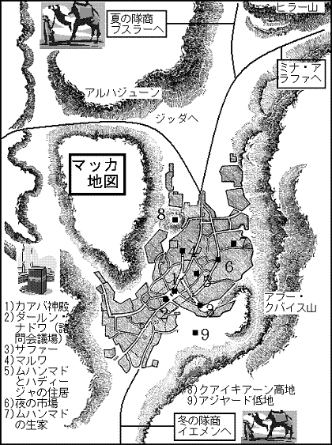
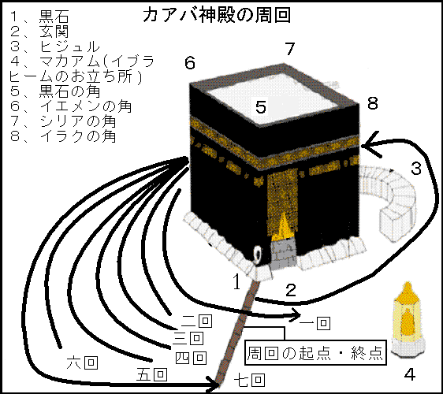
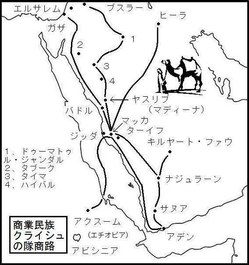
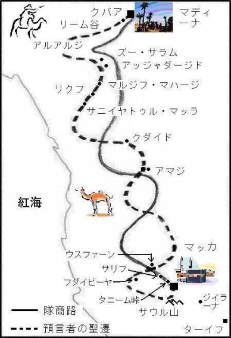
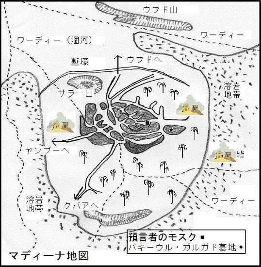
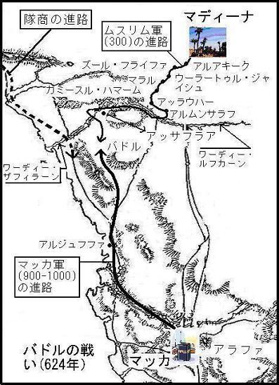
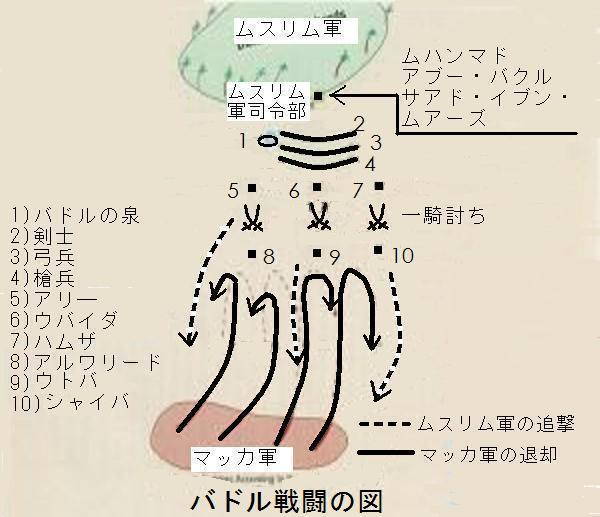

| 預言者の生涯 第二巻: イスラーム文明を創造した男の物語 | |
| イブン・イスハーク | |
| (2015) | |
目次
伯父と妻の死、迫害の激化
アブー・サラマは、いかにしてアブー・ターリブの庇護を受けたか
アブー・バクルは、イブヌッ・ドグンナの庇護を受け入れた後、その庇護を放棄した
ボイコット条約の破棄
いかにしてアットファイル・イブン・アムルッ・ダウスィは、イスラームを受容したか
アブー・ジャハルにラクダを売ったイラーシ族の男
ルカーナル・ムッタリビ、使徒と格闘する
キリスト教徒の代表団、イスラームに入信
「カウサルの章」の啓示
「なぜ、天使がムハンマドのもとに遣わされなかったのか」、という啓示が下されたことについて
「あなたより以前にも使徒は嘲笑された」、という啓示について
夜の旅
昇天
神は、使徒を嘲笑する者をいかに扱われたか
アブー・ウザイヒルッ・ダウスィの物語
アブー・ターリブとハディージャの死
使徒、サキーフ族に支援を求める
使徒、アラブの諸部族にイスラームの教えを呼びかける
イヤースのイスラームへの帰依と、アブル・ハイサルの物語
アンサールの間での、イスラームへの帰依の始まり
アカバでの最初の誓約とムサアブの使命
マディーナでの初めての金曜礼拝の実施
アカバでの第二の誓約
十二人の指導者の名と、アカバでのその他の物語
アムル・イブヌル・ジャムーフと偶像
アカバでの第二の誓約の条件
アカバでの第二の誓約で宣誓した者たち
聖遷
使徒、戦いを許される
マディーナに聖遷した人びと
ウマルのマディーナへの聖遷、アイヤーシュと彼の物語
マディーナでのムハージル―ン[移住者たち]の寄宿先
使徒ムハンマドの聖遷
ムスリムとマディーナの人びととの間の、またユダヤ教徒との誓約
ムハージルーンとアンサールの同胞関係
アブー・ウマーマの死
アザーン[礼拝の呼びかけ]
アブー・カイス・イブン・アブー・アナス
ユダヤ教徒敵対者たちの名
アブドッラー・イブン・サラームのイスラームへの入信
ムハイリークの物語
サフィーヤの証言
偽善者のアンサールがユダヤ教徒に同調
イスラームに偽りの入信をしたラビたち
雌牛の章で偽善者とユダヤのラビに言及している啓示
ナジュラーンから派遣されたキリスト教徒の代表団
偽善者についてのいくつかの物語
使徒の教友、熱病に侵される
ヒジュラ暦の日付
バドルの戦い
神の使徒による最初の出陣、ワッダーンでの戦い
ウバイダ・イブヌル・ハーリスの遠征
ハムザによる海岸への遠征
ブワートでの戦い
アルウシャイラでの戦い
サアド・イブン・アブー・ワッカースの遠征
最初のバドルの戦いとなったサファワーンでの戦い
アブドッラー・イブン・ジャハシュの遠征と、「彼らはあなたに神聖月について聞くであろう」、という啓示の降臨
キブラのカアバ神殿への変更
バドルの戦い
アーティカ・ビント・アブドゥル・ムッタリブの夢
クライシュ、戦争の準備を開始
ザイナブ、マディーナに向かう
アブル・アース・イブヌッ・ラビーイ、ムスリムとなる
ウマイル・イブン・ワフブ、ムスリムとなる
巡礼者に食事を提供したクライシュたち
主の啓示、アルアンファール[戦利品]の章の降臨
バドルの戦いに参加したムハージル―ン
バドルに参加したアンサールとその支持者
バドルの殉教者たち
バドルで戦死した多神教徒たち

伯父と妻の死、迫害の激化
アブー・サラマはいかにしてアブー・ターリブの庇護を得たか
私の父、イスハーク・イブン・ヤサールは、サラマ・イブン・アブドッラー・イブン・ウマル・イブン・アブー・サラマから伝え聞いた次の話を私に語った。
アブー・サラマ・イブン・アブドゥル・アサドが、〔伯父の〕アブー・ターリブの庇護を求めたとき、マフズーム一族の有力者たちがアブー・ターリブのところにやって来て言った。
「あなたは自分の甥、ムハンマドを我らから保護したのに、なぜ我らの部族の者を保護しているのか」。
アブー・ターリブは、「アブー・サラマは私の保護を求め、しかも彼は私の姉妹の息子であるからだ。もし、私が自分の姉妹の息子を保護しなかったならば、自分の兄弟の息子を保護することができなかった」、と答えた。
するとアブー・ラハブが立ち上がり、「おお、クライシュの方々よ、あなた方は、族長であるアブー・ターリブが自分の部族の者を保護したことに対して、彼を攻撃し続けてきた。神にかけて、あなた方がこの攻撃をやめないならば、我らは彼が望むことを実行するまで、彼と共にあろう」、と言った。マフズーム一族の有力者たちは答えた。「アブー・ラハブよ、我々はあなたが望まないことをし続けたりはしない」。アブー・ラハブは、使徒ムハンマドに対する迫害を支援してきたため、マフズーム一族の有力者たちは、彼が望まないことを行使し続けることをやめたのである。
アブー・ラハブがこのように話すのを聞いたアブー・ターリブは、アブー・ラハブが自分と共に使徒ムハンマドを守り、支援することを期待して次の詩を詠んだ。
「アブー・ウタイバをおじに持つ男は、
迫害から解放された楽園にいる。
我は彼に呼びかける。
おお、アブー・ムッティブよ、断固として公正たれ。
生きる限りそのような道を歩むな、
男たちが集まったとき、お前が責められるような道を。
弱者の道は他者に譲れ、
お前は弱者にとどまるために生まれたわけではない。
戦え、なぜなら戦争は公正であるから。
戦士は降伏しない限り侮辱されることはない。
戦いが勝利であれ敗北であれ、
彼らがお前をひどく傷つけず、お前を見捨てなければ、
どうしてお前が侮辱されなければならないのか。
神はアブド・シャムス、ナウファル、タイム、そしてマフズームを罰し給おう。
彼らの離反と不正のゆえに。
交友と友情にもかかわらず、我らから離反し、
不正な報酬を得んがために。
神の家に誓って、お前たちが語っているのは虚偽だ。
我らは決してムハンマドを見捨てない」。
アブー・バクルは、イブヌッ・ドグンナの庇護を受け入れた後、その庇護を放棄した
アーイシャがウルワに伝え、ウルワがムハンマド・イブン・ムスリム・イブン・シハーブッ・ズフリに伝え、彼が私に語ったところによれば、マッカでの状況が悪化し、使徒と教友に対する迫害が激化すると、アブー・バクル〔初代正統カリフ〕※は使徒に移住の許しを求め、使徒はそれに同意した。
※〔〕は翻訳者の注。
そこでアブー・バクルは出発し、マッカから一、二日の行程のところで、アルハーリス・イブン・アブド・マナート・イブン・キナーナ一族の出身で、その当時、アハービーシュ同盟の族長であったイブヌッ・ドグンナと出会った。（同盟者は、アルハーリス一族、アルホーン・イブン・フザイマ・イブン・ムドゥリカ、ホザーア族のアルムスタリク一族で、アハービーシュ谷で同盟したのでそう呼ばれていた）※。
※（）は原著者、あるいはイブン・ヒシャームの注。
イブヌッ・ドグンナの問いに答えてアブー・バクルは、彼の民が自分を迫害し追放した、と語った。するとイブヌッ・ドグンナは、「しかし、なぜだ」、と驚きの声を上げ、「あなたは部族の誉れであり、災難の備えであり、他人の不足をいつも親切に充足してきたというのに。私の保護の下に一緒にマッカに戻ろう」、と言った。マッカに戻ると、イブヌッ・ドグンナは、「アブー・バクルは私の保護下にあり、何人も彼を丁重に扱うように」、と公衆に宣言した。
そしてアーイシャは次のように語っている。アブー・バクルは、ジュマハ族の居住地にあった彼の家の門のそばにモスクを建て、そこで祈っていた。彼は美しい心の持ち主であったので、コーランを読誦すると感動して涙を流していた。若者、奴隷、婦人たちは、いつも彼のそばにいて、彼の振る舞いに驚嘆していた。
クライシュの人々がイブヌッ・ドグンナのところにやって来て、言った。「お前は、この男が我らを害するために、庇護を与えているのか。見よ、アブー・バクルが祈り、ムハンマドが創作したものを彼が読誦すると、彼の心は安らぎ、彼は感涙する。彼の姿は感動的だから、若者や婦人、心弱き者たちを彼が誘い込んでしまうのではないかと我らは恐れている。アブー・バクルのところに行って、自分の家の中に入り、そこで好きなようにしろと言ってやれ」。
イブヌッ・ドグンナは、アブー・バクルに会い、「私は、あなたがあなたの民に害を及ぼすように、あなたに保護を与えたのではない。彼らはあなたが選んだ場所を嫌っており、そのために傷ついているので、あなたは家の中に入り、そこで好きなようにしたらよい」、と言った。アブー・バクルが、「私があなたの保護を放棄することを望んでいるのか」、とイブヌッ・ドグンナに尋ねると、彼が「そう望んでいる」と答えたので、アブー・バクルは、彼の庇護を返還した。するとイブヌッ・ドグンナは、クライシュたちに向かって、「アブー・バクルはもはや私の庇護の下にはなく、彼らがどう扱おうと私には関係ない」、と宣言した。
アブドッ・ラハマーン・イブヌル・カーシムが、彼の父カーシム・イブン・ムハンマドから伝え聞いた話を私に語ったところによれば、アブー・バクルがカアバに向かっていたとき、クライシュの中でも最も乱暴な者が彼に会い、彼の頭に砂を投げつけた。アルワリード・イブヌル・ムギーラ、あるいはアルアース・イブン・ワーイルが通りかかったので、「あなたは、この乱暴者が私にしたことを見たか」、とアブー・バクルは聞いた。彼は、「それはお前が自分でやったことだ」、と答えた。アブー・バクルは、「おお、主よ、主はいつまで苦しむのでしょうか」、と三回唱えた。
ボイコット条約の破棄
何人ものクライシュがボイコットを破棄しようと動き始めたとき、ハーシム族、ムッタリブ族は、クライシュ一族が条約で取り決めた居住区に閉じ込められていた。ヒシャーム・イブン・アムルは、ナドラ・イブン・ハーシム・イブン・アブド・マナーフと母を同じくする兄弟の息子で、ハーシム族と親密だったので、ボイコット破棄の最大の功労者だった。ヒシャームは、彼の民から非常に尊敬されていた。彼は、これら二つの氏族が居住区に閉じ込められているとき、深夜、食糧を積んだラクダを引いて居住区の路地の入り口に着くと、綱をはずし、ラクダの横腹をたたいて路地を通過させ、居住区内に入らせていた、と私は聞いている。またヒシャームは、同様にして、彼らのために衣服を運んでいた。
ヒシャームは、アーティカ・ビント・アブドゥル・ムッタリブの息子のズハイル・イブン・アブー・ウマイヤ・イブヌル・ムギーラと会い、次のように言った。
「あなたは、母方のおじたちの苦境を知っているというのに、自分は衣食に足り、結婚することに満足しているのか。彼らは、売ることも買うこともできず、結婚することも、嫁がせることもできない。もし逆にあなたが、アブル・ハカム・イブン・ヒシャーム〔アブー・ジャハル〕のおじたちにボイコットを呼びかけたならば、彼らは決してあなたの要請に応じないと、私は神にかけて誓う」。
ズハイルは、「いいかげんにしてくれ、ヒシャームよ、私に何ができるというのか。私は一人の男にしかすぎない。神にかけて、もし私を支援するもう一人の男がいるのならば、私はすぐにこのボイコットを破棄するだろう」、と言った。ヒシャームが、「もうすでに一人の男を見つけている。それは私自身だ」、と言うと、ズハイルは、「さらに別の男を見つけろ」、と言った。
そこでヒシャームは、アルムタイム・イブン・アディーユのところに行って、「あなたが、クライシュに同調して傍観している間に、アブド・マナーフ族の二つの氏族が滅亡してしまっていいのか。クライシュは、あなたにも同様の行動を取るということを、いずれ知ることになろう」、と言った。アルムタイムが、ズハイルと同じように答え、四人目の支援者を要求したので、ヒシャームがアブル・バフタリ・イブン・ヒシャームのところに行くと、彼もまた五人目の支援者を要求した。
それからヒシャームは、ザマア・イブヌル・アスワド・イブヌル・ムッタリブ・イブン・アサドに会い、血縁関係と肉親の義務を彼に喚起した。彼が、「他の者たちはこの使命に喜んで協力するのか」、と尋ねたので、ヒシャームは、他の支援者たちの名前を言った。彼らは、マッカのアルハジューン山※に最も近いところで深夜、集合することを約束し、完全に破棄するまでボイコット文書を糾弾すると誓い合った。ズハイルは、最初に口火を切って行動する権利を主張した。
※マッカの北に位置する墓地。預言者の曽祖父ハーシム、祖父アブドゥル・ムッタリブ、母アーミナ、妻ハディージャらが埋葬されているので、神聖視されている。
翌日、ズハイルは、人々が集会しているとき、長いローブを身にまとい、カアバを七回周回し、そして人々の前に進み出て宣言した。
「おお、マッカの人々よ、ハーシムの一族が、買うことも、売ることもできず、消滅しようとするとき、我ら自身は、衣食に満ち足りていようというのか。神にかけて私は、この邪悪なボイコットの証文が破り去られるまで、決して休まないことを誓おう」。
モスクのそばにいたアブー・ジャハルが、「神にかけて、お前は嘘をついている。この証文は決して破られることはない」、と叫ぶと、ザマアが、「お前はもっとひどい嘘つきだ。我らはこの証文が記されたとき、満足ではなかった」、と言った。アブル・バフタリは、「ザマアの言う通りだ。我らは記されていることに満足しないし、決してその内容を承認もしない」、と続けた。
アルムタイムは、「二人の言うことは正しい。反対する者は嘘つきだ。我らは、証文に書かれていることを否認し、ボイコットからの脱退を誓うために、アッラーに訴えよう」、と付け加え、ヒシャームも同様に語った。アブー・ジャハルは、「これは、徹夜で決められた問題で、こことは別の場所で討議されたことだ」、と反論した。
そのとき、アブー・ターリブは、彼らのそばに座っていた。アルムタイムが、証文を破ろうとして近づくと、彼が見つけたのは、虫に食われて、「汝の名の下に、おお、アッラー」、とだけ書かれた文書の切れ端だけだった。この証文の筆者は、マンスール・イブン・イクリマだった。証文を記した後、彼の手は麻痺してしまった、と言われている。
証文が破棄され無効となったとき、アブー・ターリブは、ボイコットの破棄に賛同した人々を称賛して次の詩を詠んだ。
「我らの主の業は彼らの耳に届かなかったか、
海のはるかかなたに離れた人々に、
主アッラーはすべての民に慈悲を下さるというのに、
彼らに証文は破かれたと伝えよ、
そして主の意思に反することはすべて破壊されたと。
虚偽と魔法は結びついている、
だが、魔法が優位に立つことはない。
魔法にかかわらない者たちは、離れた場所に集まった、
凶兆の鳥が魔法使いの頭上を舞っているとき。
それは忌まわしい罪であるがゆえに、
手と首が切断されるのにふさわしい、
マッカの人々が出て逃れるのにふさわしい、
彼らの心は災厄を恐れて震える、
農夫はどうすべきか分からず取り残される、
低地に降りるべきか、それとも丘に登るべきかと、
そして軍勢がマッカの丘のふもとにやって来る、
弓、矢、槍を装備して。
その威力を誇るマッカの主、
マッカの谷における我らの栄光は久しい。
我らは、この地に民が少なかった頃から繁栄し、
名誉と名声を広げてきた。
我らは、客人が皿に手を出すのをやめるまでもてなした、
賭け矢の射手の手が震え始めるまで。
主は、アルハジューンで忠誠を誓った人々に報い給うた、
決意と知恵を導いた族長に、
アルハジューンの近くで王子のように座り、
否、彼らはそれよりもっと気高く輝かしい。
勇敢な男は誰もがそこで支援した、
歩みが遅くなるほどの長い鎖かたびらをまとって、
偉大な行為を断行するため、
たいまつの担い手の手で燃えさかる炎のように。
ルアイイ・イブン・ガーリブの子孫の中で最も気高い、
不当に扱われると、彼らの顔は怒りを表す。
勇猛に大きな刀を携えて。
雲は彼のために雨と祝福を降らす。
物惜しみせず客人をもてなす気高き者は、
客人を集め、食べ物を勧める。
部族に安全を保障する、
我らがその土地を通過するとき。
偉大な指導者は偉大なことを成し遂げた。
彼らは夜、任務を遂行した、
ほかの者が眠っているとき、そして朝、彼らは休んだ。
彼らは、サハル・イブン・バイダァを十分喜ばせ、
さらにアブー・バクルとムハンマドも大いに喜んだ。
ほかの者たちが我らの偉大な事業に参集したとき、
我らは古くから互いに友情を示さなかったことがあろうか。
我らは決して不正を容認しなかった。
我らは望むものを、力を振るうことなく手に入れた。
おお、クサイイの男たちよ、考えてみよ、
お前たちは、明日は、お前たち自身に降りかかるものを望んでいるのか。
我らとお前たちは、
『お前が話すことができるならば、謎は解けたであろうに、
おお、アスワド山よ』※という、
ことわざの言葉のようであるからだ」。
※アラブの伝承によれば、アスワドという山で男が死んだ。だが、彼が殺されたのかどうかは不明だった。そこで親族の者がこのように語り、それがこのことわざとなった。
アルムタイム・イブン・アディーユを追悼し、証文を無効にした彼の行動に言及して、ハッサーン・イブン・サービトは、次のように詠んだ。
「我が目よ、大いに泣け、民の指導者のために、汝の涙を惜しむな。
もし涙が尽きたなら、血を流せ。
二つの巡礼地の指導者を悼め、
男たちが話すことができる限り謝意を表明する人を。
もし栄光が人を不死とするならば、
彼の栄光はアルムタイムを今日まで生き長らえさせよう。
そなたは神の使徒をクライシュから守護した、
そして彼らは主の奴隷となった、
男たちがラッバイカ〔主の意のままに〕と叫び、巡礼の衣装をまとう限り。
もし彼について尋ねられたならば、
マアッド、カハターン、ジュルフムの全部族の民は、
彼は使徒を守護する義務を忠実に遂行した、と言うだろう、
そして、いったん彼が誓約を結べば、必ず彼はそれを完遂する、と。
頭上の輝かしい太陽はもはや輝くことはない、
彼よりも高貴で偉大な人の上に。
拒絶するときは誰よりも断固とし、それでも心根は慈悲深い、
漆黒の夜は健やかに眠りつつ、しかし客人を惜しみなくもてなす」。
また、ハッサーンは、証文の破棄に貢献したヒシャーム・イブン・アムルを称賛して次のように詠んだ。
「ウマイヤ族の庇護は、
ヒシャームの保証のように信頼できるきずなであるか。
アルハーリス・イブン・フバイイッブ・イブン・スハームの民は、
彼らの庇護者を決して裏切らない。
ヒスル族が保護を与えたならば、
彼らは、その約束と庇護者の命を完全に守ろう」。

いかにしてアットファイル・イブン・アムルッ・ダウスィは、イスラームを受容したか
使徒は、彼の民の振る舞いにもかかわらず、彼らに良き助言を与え、彼らの悲惨な状況からの救済について説教し続けた。神から下された啓示を使徒が人々に説き始めると、クライシュの民はすべての訪問者たちに、使徒ムハンマドに敵対するように呼びかけ始めた。
著名な詩人で、非常に聡明であったアットファイルは、使徒がマッカにいるときにその地を訪れたところ、自分のもとに何人かのクライシュがすぐにやって来た、と語っている。彼らはアットファイルに、「この男は民に重大な害をもたらし、街を分裂させて統一を乱している。本当にこの男は、魔術師のようにしゃべり、人を父親から、兄弟から、妻から引き裂いている。我らは、この男があなたとあなたの民に同じ影響を及ぼすのを恐れているので、彼と一言でも話したり、話を聞いたりしてはならない」、と警告した。
アットファイルは次のように語っている。
「クライシュたちが非常に執拗だったので、私は彼と一言も口をきかず、話に耳を傾けないと決心し、カアバに行くときは、自分の意志に反して、一言、二言でも彼の言葉を聞いてしまうことを恐れて、両耳に綿を詰めるほどだった。私がカアバに着いたとき、神の使徒がカアバのそばに立って礼拝されており、私は使徒のそばに立つことになった。神は、私が使徒の言葉の一部を聴くようにあらかじめ定めておられ、私はその美しい言葉を聴いた。そこで私は、自分自身に向かって言った。『神は私の魂を祝福なされた。私は、善悪の違いを完全にわきまえている聡明な詩人だ。それゆえ、私がこの方の言葉を聴くことをいったい誰が妨げようというのか。もしその言葉が善であれば、私はそれを受け入れよう。もしそれが悪ければそれを拒絶するまでだ』。
私は、使徒が家にお帰りになるまで、カアバにとどまり、使徒に付き従って一緒に家の中に入った。そこで私は、クライシュたちが使徒について話したことを使徒に伝え、『彼らが余りに私を恐れさせたので、あなたの言葉を一言も聞かないように、耳に綿を詰めたほどでした。しかし神は、私がいつまでも耳を貸さないことをお赦しにならなかったので、私は美しい言葉を聴くことになったのです。だから、本当のことを私に教えてください』、と使徒にお願いした。使徒は、イスラームについて説明し、コーランを読誦してくださった。神にかけて、私はそれまで、このように素晴らしく、このように公正であるものを聴いたことがなかった。そこで私は入信してムスリムとなった。私が、『おお、神の使徒よ、私は我が民の中で権威ある者ですから、帰ってから彼らをイスラームに招請します。私が彼らに説教するとき、私の助けとなる印を賜るよう神にお祈りしてください』、と使徒にお願いしたところ、彼は、『おお、神よ、彼に印を与え給え』、とお祈りになった。
それから私が、民の元に戻るため、居住地に通じる峠にさしかかると、ランプのような光が私の両目の間に灯った。私は、『おお、神よ、私の顔の中以外のところに御印をお与えください。なぜなら、私が彼らから離反してイスラームに入信したために、悲惨な罰が私の顔に降ったと、彼らが誤って信じることを恐れるからです』、と懇願した。すると光は移動して、私のむちの先に宿った。私が峠を下って民の元に戻ると、彼らは私のむちの先にキャンドルのように灯る光を見つけた。
私が戻ると年老いた父が寄ってきたので、『離れなさい、父よ、私はあなたと何の関係もないし、あなたも私とは何の関係もないのです』、と言うと、父は、『なぜだ、我が息子よ』、と尋ねた。『私はイスラームに入信してムスリムとなり、使徒ムハンマドの教えに従っているからです』、と私は答えた。すると父は、『よし分かった、それならば、お前の信仰は私の信仰だ』、と言った。『ではあなた自身を清め、服装を整えてください。そして戻ったら私が教えられたことをお教えしましょう』、と私は言った。父がそのように準備を終えたので、私は彼にイスラームについて説教し、彼は入信してムスリムとなった。
次に妻が近寄ってきたので私は、『離れなさい、私はお前と何の関係もないし、お前も私と何の関係もない』、と言った。『なぜですか。私の父と母よりも、あなたはかけがえのない存在なのに』、と妻は尋ねた。私は、『イスラームが私たちを分かち、私はムハンマドの教えに従っている』、と答えた。彼女は、『では、あなたの信仰は私の信仰です』、と答えた。
私は、『それならばズッ・シャラのヒナに行って、お前自身を清めなさい』、と命じた。ズッ・シャラは、ダウス族の偶像であり、ヒナは彼らが偶像のために神聖とし、聖域としていた場所を示していた。そこには、山から出ている細い小川が流れていた。彼女はせわしげに、『あなたは、私のせいでズッ・シャラの何かを恐れているのですか』、と聞いた。私は、『いや、ただ確かめたいだけだ』、と答えた。彼女がそこに行って身を清めたので、私はイスラームについて説教し、彼女は入信してムスリムとなった。
それから私はダウス族の人々にイスラームの教えを呼びかけたが、彼らは背を向けたので、マッカにいる神の使徒を訪ね、『おお、神の使徒よ、ダウス族の浅はかな偶像崇拝は私の手に負えません。どうか彼らに呪いをかけてください』、とお願いした。しかし使徒は、『おお、神よ、ダウスの民を導き給え。汝の民の元に帰り、優しく呼びかけなさい』、とおっしゃった。
私は、神の使徒がマディーナに聖遷し、バドル、ウフド、ハンダクの戦いが終わるまで、ダウス族の地で人々にイスラームへの入信を呼びかけ続けた。それから私は、使徒がハイバルで戦っているとき、イスラームに入信した者たちを連れて使徒のもとに向かった。七、八十世帯のダウス族の人々と共に私はマディーナに到着し、それからハイバルで戦っている使徒たちに加わった。使徒は我らにマディーナにいるムスリムと同等の戦利品を与えてくださった。
私は、神が使徒のためにマッカの街をお開きになるまで使徒と共にいた。それから私は、アムル・イブン・フンマ族が崇拝する偶像であるズル・カッファインを焼却するために私を派遣するように使徒にお願いした」。
アットファイルは偶像に火を放った時、次のように詩を詠んだ。
「我はお前の下僕ではない、ズル・カッファインよ、
我らの誕生は、汝の誕生よりはるかに古い。
汝の心に火を満たそうと、私は思い焦がれる」。
その後アットファイルは、マディーナの使徒のもとに戻り、神が使徒をお召しになるまで、そこに使徒と共にとどまった。使徒の死後、イスラームから背教したアラブの人々が反乱を起こした時、彼はムスリム側に属して、他のムスリムたちと共に戦い、トーラーイハ族と〔中央アラビアの〕ナジド地域の全部族を征服した。それから彼は、息子のアムルを連れて、他のムスリムたちと共にヤマーマに遠征し、その途中で夢を見た。そこで彼は、「夢の意味を教えてほしい」、と教友に頼んだ。
アットファイルは次のように教友に語った。「私の髪が剃られ、私の口からは鳥が飛び出し、さらに出会った女が彼女の胎内に私を取り込んだ。そして私の息子が必死に私を探し求めているのを見た。しかし彼はどうしても私を見つけることができなかった」。
教友たちは、「その夢が良い兆しであると期待する」、と言ったが、アットファイルは、「自分で夢を解釈してみせる」、と宣言した。彼は、頭が剃られるのは、怪我を負うことを意味し、口から飛び出した鳥は、彼自身から離脱した彼の魂を示し、彼を取り込んだ女の胎内は、彼が帰る大地を示唆し、息子が彼を捜し求めたことは、彼の息子が父と同じことを追求するという意味であると解釈した。
その後、アットファイルはヤマーマで殺害されて殉教者となり、その際に息子も重傷を負ったが回復した。しかし彼もまた、第二代正統カリフ、ウマルの時代に、ヤルムークの戦いで殉教した。
アブー・ジャハルにラクダを売ったイラーシ族の男
アブー・ジャハルの使徒に対する敵意、憎しみ、暴力が原因で、彼が使徒ムハンマドに出会うとき、神はいつでも、アブー・ジャハルを侮辱なされた。
優れた記憶力をもっていたアブドゥル・マリク・イブン・アブドッラー・イブン・アブー・スフヤーヌッ・サカフィは、私に語った。
イラーシ族のある男は、ラクダを何頭かマッカに引いて来て、アブー・ジャハルに売った。しかし、彼が金を支払わなかったので、イラーシの男は、使徒がカアバのそばに座っているとき、クライシュの集会にやって来て、「アブル・ハカム・イブン・ヒシャーム〔アブー・ジャハル〕が私に支払うべきものを、私が手に入れるために、あなた方のどなたかが、私を助けてくれないだろうか。私はよそ者で、一見の客であるから、彼は負債を支払おうとしない」、と言った。
クライシュたちは、使徒を指しながら、「あそこに座っている男が見えないか。彼に頼みなさい。彼が助けてくれるだろう」、と言った。実は彼らは、アブー・ジャハルの使徒に対する激しい敵意を知っていたので、使徒を計略にかけようとしていたのである。
イラーシの男は、使徒の前に立ち、「おお、神の僕よ、アブル・ハカム・イブン・ヒシャームは、私に支払うべき金を返済しない。私はよそ者で、一見の客であるから、私を助けてくれる人を教えてくれないかと彼らに聞いたところ、彼らはあなたを指した。だから、私の金を彼から返してもらってほしい、神の祝福があなたにありますように」、と言った。男が、「彼の家に行こう」、と言ったので、使徒は立ち上がり、一緒に行った。クライシュたちはそれを見ると、仲間の一人に二人の後をつけさせた。
使徒がアブー・ジャハルの家に着き、ドアをノックすると、「そこにいるのは誰か」、と尋ねる声が聞こえ、使徒は、「ムハンマドだ、出てきなさい」、と言った。使徒は、動揺して顔面蒼白となって出てきたアブー・ジャハルに、「この人に借りを返しなさい」、と命じた。アブー・ジャハルは、「彼に金を返すまでちょっと待ってほしい」、と答えて家の中に入り、金を持ってまた出てきて、男に金を支払った。使徒は、「商売に戻りなさい」、と男に言って立ち去った。イラーシの男は、クライシュの集会に戻り、「神の応報が彼に賜りますように、彼は私の金を返してくださった」、と言った。
クライシュたちが二人の後をつけさせた男が戻って来て、見たことを彼らに報告した。「それは異様な出来事だった。ムハンマドがドアをノックするや否や、アブー・ジャハルは、狼狽して、息を切らせて出てきた」と、起きたことを語った。すると、アブー・ジャハル自身がやってきたので、彼らは、「友よ、たとえどのような事が起きようとも、我らはお前がやったようなことを聞いたことがない」、と驚嘆した。
「いまいましい。神にかけて、ムハンマドが家のドアをノックし、彼の声を聞くや否や、私は恐怖に陥った。そして私が出て彼に会うと、彼の頭上に雄の種ラクダがそびえ立っていた。私は、あのような頭、肩、牙を持った種ラクダを見たことがない。神にかけて、もし私が支払いを拒絶していたなら、ラクダは私を食べてしまっただろう」、と語った。
ルカーナル・ムッタリビ、使徒と格闘する
私の父、イスハーク・イブン・ヤサールは、「クライシュの中で負け知らずの最強の格闘家、ルカーナ・イブン・アブド・ヤズィード・イブン・ハーシム・イブン・アブドゥル・ムッタリブ・イブン・アブド・マナーフがある日、マッカのある峠で使徒と出会った」、と私に語った。
「ルカーナよ」、と使徒は呼びかけ、「おまえは神を畏れず、私の呼びかけを受け入れないのか」、と尋ねた。彼は、「お前の言うことが真実だと私が知れば、私はお前に従う」、と答えた。使徒が、「もし私がお前を投げ飛ばしたら、お前は私が真実を語っていると認めるか」、と聞くと、彼が、「そうだ」、と答えたので、二人は格闘し始め、使徒は彼をがっちりと捕まえ、地上に投げ倒した。彼は微塵も抵抗できなかった。「ムハンマドよ、もう一回」、と彼は言ったが、同じことだった。
「これは信じられないことだ。本当に私を投げたのか」、と聞いた。「お望みならば、私はそれよりもっと素晴らしいことをやってみせることができる。私がその木を呼べば、木は私のそばに来る」、と使徒は言った。彼は、「それなら呼んでみろ」、と言った。使徒が木を呼ぶと、木は前進して彼の前でとまった。そして彼が、「もとの位置に戻れ」、と言うと、木は戻った。
ルカーナは彼の民のところに行って、「これまで我らの部族は世界のどの魔術師にも対抗できたが、このような魔術はいままで見たことがない」、と話し、彼が見たこと、ムハンマドがやったことを語り続けた。
キリスト教徒の代表団、イスラームに入信
使徒がマッカにいるとき、二十人ほどのキリスト教徒が、彼のうわさを聞いてアビシニア〔エチオピア〕から会いにやって来た。彼らは、クライシュの何人かがカアバで集会しているとき、そこで使徒を見つけ、共に座り、話しかけ、質問をした。すべての質問を終えると彼らは、自分たちを神のもとに招き、コーランを彼らのために読誦するよう、使徒に依頼した。コーランを聴くと、彼らの目は涙であふれ、彼らは神の呼びかけを受容し、使徒を信じ、使徒の真実性を宣言して、イスラームに帰依した。彼らは、聖書の中で使徒について語られていた内容が、ムハンマドと完全に合致することを確認した。
彼らが立ち上がって去ろうとすると、アブー・ジャハルと何人かのクライシュたちが、彼らの前に立ちはだかって、「神よ、なんと忌まわしい集団であることか。お前たちの民は、この男についての情報を得るために、お前たちを派遣したというのに、お前たちは彼と共に座った途端、自分の信じるものを放棄して、彼が言うことを信じようというのか。我らは、お前たちほど愚かな集団をほかに知らない」、と言った。それに対して、彼らは、「あなた方に平安がありますように。私たちはあなた方と、愚かな論争をするつもりはありません。私たちには私たちの信じるものがあり、あなた方にはあなた方の信じるものがあります。私たちは、最善を求めることに、いささかもやぶさかではありません」、と答えた。
このキリスト教徒たちは、ナジュラーンからやって来た、と伝えられているが、そうであったか、そうではなかったか、神のみがご存知である。また、これも神が一番よくご存知であるが、「この啓典が読誦されると、彼らは言う。『我らはこれを信じます。これこそ主による真理である。我らはこの啓典をいただくより前から帰依者でした』。彼らはよく耐え、善によって悪を除き、われが与えた糧を分けて、よく施しを行う。よって、二倍の報酬が与えられよう。彼らはむなしい言葉を聞くと、これに背を向けて、『我らには我らの勤めがある。あなた方にはあなた方の勤めがあるでしょう。あなた方に平安がありますように。我らは真理を拒む者を求めない』」（二八章五三―五五節）という節は、彼らに言及したものであると言われている。
私が、このコーランの節が言及している人々について、イブン・シハーブッ・ズフリに尋ねると、彼は、「それらの節と、『食卓の章』の、『それというのも、彼らの中には司祭とか修道士がいて、みだりに高慢に振る舞わないからである』（五章八二節）から、『どうか我らを証言者の列に書き加えてください』（五章八三節）までの節は、アンナジャーシイ〔エチオピア皇帝〕と彼の側近に言及して下された節であると、いつも学識者から聞かされていた」、と私に語った。
使徒が、ハッバーブ、アンマール、スハイブ、元はサフワーン・イブン・ウマイヤ・イブン・ムハッリスの奴隷であったアブー・フカイハ・ヤサールのような下層の教友と一緒にカアバに座っていると、クライシュたちは彼らをあざけって、「見よ、このような者たちが彼の仲間なのだ。神は、導きと真実を伝えるために、こんな連中を我らの中から選んだというのか。もしムハンマドがもたらしたものが善であれば、みすぼらしい連中がそれを最初に手に入れるはずがないし、神が彼らを我らより優先されるはずがない」、とののしった。
神はこの出来事に言及して次のように啓示された。
「主の御喜びを求めて、朝夕、かれに祈る者を追放してはならない。彼らの善悪の清算は、少しもあなたの任ではなく、あなたの清算は、少しも彼らの任ではない。それで、あなたが彼らを追放するならば、あなたは不義の徒となるであろう。このようにわれは、彼らのある者で外を試みる。それは彼らに、『アッラーが恩恵を与える者は、私たちの中の、これらの人びとですか』と言わせるためである。本当に感謝する者を、最もよく知る方はアッラーではないか。わが印を信じる者があなたのもとに来たならば、言ってやるがいい。『あなた方に平安あれ。あなた方の主は、慈悲を御自分の務めとされる。それであなた方の中の、無知で悪事を行った者も、悔悟してその身を修めるならば赦される、本当にかれは寛容にして慈悲深くあられる』」（六章五二―五四章）。
私が知るところによれば、使徒はマルワでしばしば、ジャブルという名のハドラミ族の奴隷で、異国人の若いキリスト教徒の小屋で座っており、クライシュたちは、「ムハンマドが人々に呼びかけているほとんどのことを彼に教えているのは、キリスト教徒でハドラミ族の奴隷のジャブルだ」、とよく嘲笑していた。このようなクライシュの中傷に言及して神は、「われは、彼らが、『彼に教えるのは、ただの人間である』と言うのを知っている。だが彼らの頼る者の言葉は外国語であるが、これは純粋明確なアラビア語である」（一六章一〇三章）、と啓示された。
「カウサルの章」の啓示
使徒ムハンマドについて話が及ぶと、アルアース・イブン・ワーイルッ・サハミはいつも、「ムハンマドは、子孫をもうける息子を持たない男にすぎないから、彼をほうっておけ。彼がいなくなれば、人々の彼に対する記憶も消滅し、お前たちは彼から悩まされることはない」、と言っていた、と私は聞いている。
神は、このことに関連して、「本当にわれは、あなた〔ムハンマド〕に潤沢を授けた」（一〇八章一節）、と啓示された。これは、この世にあるすべてのものより良いものを、使徒が神から授けられたことを意味する。カウサルとは、「偉大」なことである。ラビード・イブン・ラビーアル・キラービは、次のように詠んだ。
「我らはマルフーブ※の所有者の死に苦しんでいる、
そしてアッリダー※にはもう一人の偉大な男カウサルの家がある」。
※マルフーブも、アッリダーも水場のこと。砂漠では水場は偉大なものを意味する。
ジャアファル・イブン・アムルは、ムハンマド・イブン・ムスリム・イブン・シハーブッ・ズフリの兄弟であるアブドッラー・イブン・ムスリムを典拠として、アナス・イブン・マーリクが次のように語った、と私に述べた。
「神から授けられたカウサルとは何ですか、と尋ねられた時、使徒は、『それは幅がサヌア〔イエメン〕からアイラ〔現代のヨルダン・アカバ〕に至る広大な河である』、と答えられたのを私は聞いた。その河の水を汲み出す水がめは、天の星の数ほど多い。大きな鳥は、その河の水面に、ラクダのように長い首を突っ込む。ウマル・イブヌル・ハッターブ〔第二代正統カリフ〕が、『おお、神の使徒よ、鳥は幸せに違いありません』、と言うと、使徒は、『その鳥を食べる者はもっと幸せであろう』、とお答えになった」。
これに関連して、あるいはほかの事に関連して、使徒ムハンマドが、「その河から水を飲む者は、決して渇くことはない」、とおっしゃった、と私は聞いている。
「なぜ、天使がムハンマドのもとに遣わされなかったのか」、という啓示が下されたことについて
使徒が人々にイスラームを呼びかけ、説教すると、ザマア・イブヌル・アスワド、アンナドル・イブヌル・ハーリス、アルアスワド・イブン・アブド・ヤグース、ウバイイ・イブン・ハラフ、アルアース・イブン・ワーイルは、「おお、ムハンマドよ、お前のことについて我々に話し、お前と一緒にいるのを我々に見せるために、天使がお前と共に遣わされたのならば」、と言った。神は、彼らのこの言葉に関して、「また彼らは言う。『なぜ彼のところに天使が遣わされないのか』。われらがいったん天使を遣わすならば、事は決められ、彼らは猶予されない。たとえわれらが彼を天使にしたとしても、人間の姿にするのだから。結局、彼らがいま混乱している事をさらに混乱させることになったであろう」（六章八、九節）、との啓示を下された。
「あなたより以前にも使徒は嘲笑された」、という啓示について
アルワリード・イブヌル・ムギーラ、ウマイヤ・イブン・ハラフ、アブー・ジャハル・イブン・ヒシャームは、通りがかりに、使徒を嘲笑しあざけった、と私は聞いている。そこで神はこれに関連して、「あなた以前の使徒たちも、確かに嘲笑された。だが嘲笑した者は、嘲笑していたことに取り囲まれるのである」（二一章四一節）、と啓示された。
夜の旅
イスラームがマッカのクライシュとほかのすべての部族の間で普及すると、使徒は、マッカのカアバから、イリヤー〔現在のエルサレム〕にあるアクサモスクに連れていかれた。
以下の記述は、アブドッラー・イブン・マスウード、アブー・サイードル・フドゥリ、使徒の妻アーイシャ・ビント・アブー・バクル、ムアーウィヤ・イブン・アブー・スフヤーン、アルハサン・イブン・アブル・ハサヌル・バスリ、イブン・シハーブッ・ズフリ、アースィム・イブン・ウマル・イブン・カターダル・アンサーリ、そのほかの伝承家と、ウンム・ハーニイ・ビント・アブー・ターリブらが伝えていることである。
これは、使徒ムハンマドが夜の旅に連れていかれた時に起きたことについて、彼らが聞かされたそれぞれの報告をつなぎ合わせて、一つにまとめたものである。その旅について語られた内容は、聡明で神の存在を確信し、深い信仰心を持つ正直な人々への導きであり、厳しい試練、慈悲、励ましでもあった。主は、ご自身の御印を使徒に認識させるために、御心のままに彼をその旅にお連れになった。その結果、使徒は主の偉大さと無限の威力、そして主の創造力を目の当たりにした。
私が聞いたところによれば、マッカで最初にコーランを大声で朗誦した教友であるアブドッラー・イブン・マスウードは、いつも次のように語っていた。
ムハンマド以前の預言者たちも乗っていた、視界の限界までの距離を一またぎで行くことができるブラーク〔天馬〕が連れてこられ、使徒はそのブラークに乗せられた。彼は、友であるジブリール〔大天使ガブリエル〕と共に、地上と天国の間の神秘を眺めながら旅し、エルサレムの神殿に着いた。そこで使徒は、神の友イブラヒーム〔アブラハム〕、ムーサ〔モーセ〕、イーサ〔イエス〕が、その他の預言者たちと会合しているのに合流した。そして、使徒はイマーム〔礼拝導師〕となり、彼らと共に集団礼拝した。
それから使徒の前に、ミルク、ワイン、水が満たされた三つの器が置かれた。使徒は、「これらの器が私に差し出されたとき、私は次のように言う声を聴いた。それは、水を飲む者は溺れ、彼の民も溺れる、ワインを飲む者は正道を踏み外し、彼の民も正道を踏み外す、ミルクを飲む者は正しく導かれ、彼の民も正しく導かれる、という声だった。そこで私はミルクを入れた器を取り、ミルクを飲んだ。ジブリールは私に、『そなたは正しく導かれたので、そなたの民も正しく導かれる、ムハンマドよ』、と言った」、と語った。
使徒が次のように語ったと、私はイラクのバスラの出身で教友の一人であるアルハサヌル・バスリから聞いた。
「私がアルヒジュルで眠っていると、ジブリールがやって来て、私の足を揺すった。私は起きたが、何も見えなかったので、また横になった。するとまたジブリールがやって来て、足を揺すった。私は起きたが、何も見えなかったので、また横になった。彼はさらにもう一度やって来て、私の足を揺すった。私が起き上がると、彼は私の手を引っ張って、カアバ神殿の扉の外に連れて行き、そこには、白色で両側に羽の生えたラバとロバの中間ほどの大きさで、羽と足で、視界の限界まで一足飛びに行ける動物がいて、ジブリールは私をそれに乗せて、一緒に出発した」。
使徒が次のように語ったと、私は伝承家であるカターダル・アンサーリから聞いた。
「私がその天馬に乗ろうとすると、それは嫌がった。するとジブリールは天馬のたてがみに手を置き、『お前は恥ずかしくないのか、おお、ブラークよ、そのように振る舞って。神にかけて、ムハンマドほど名誉ある神の僕が、これまでお前に乗ったことはない』、と言った。天馬は恥ずかしさのあまり大汗をかいて、静かになったので、私はそれに乗ることができた」。
また、アルハサヌル・バスリは、語った。
「使徒とジブリールは旅を続け、アクサモスクに着いた。そこで使徒は、預言者の集団の中に、イブラヒーム、ムーサ、イーサを見つけた。使徒はイマームとなり、彼らと共に礼拝した。すると彼に、酒とミルクを入れた二つの器が差し出された。使徒はミルクを入れた器を取ってミルクを飲み、酒には手を出さなかった。ジブリールは、『そなたは生来、正しく導かれているから、そなたの民も正しく導かれよう、ムハンマドよ。そなたたちに酒は禁じられている』、と言った。それから使徒はマッカに戻り、朝になって、この出来事をクライシュたちに話した。彼らのほとんどは、『神にかけて、これは単なるたわごとだ。隊商がシリアに行くのに一ヶ月かかり、そこから戻るのにまた一ヶ月かかるというのに、ムハンマドは一晩で戻れるというのか』、と嘲笑した。
多くのムスリムが信仰を放棄し、彼らの何人かはアブー・バクルに会い、『あなたは今、あなたの友人ムハンマドをどう思っているのか、アブー･バクルよ。彼は、昨夜、アクサモスクに行ってそこで礼拝し、マッカに戻って来た、と主張している』、と言った。アブー・バクルが、『それはお前たちが嘘を言っているのではないか』、と答えると、彼らは、『ムハンマドはまさに今、カアバにいて、そのことを皆に話しているところだ』、と言った。
アブー・バクルは、『使徒がそう言っているのであれば、そうなのだ。それが何の驚きだというのか。彼は私に、天上の神から地上への啓示は、昼あるいは夜の僅かな時間で彼に到達する、と言っており、私は彼を信じている。このことは、お前たちが今、仰天していることより、よほど驚くべきことではないか』、と答えた。それからアブー･バクルが使徒のところに行って、『彼らが話していることは本当ですか』、と尋ねると、使徒は、『彼らが言っていることは本当だ』、と答えたので、アブー･バクルは、『私はかつてアクサモスクに行ったことがあるのですが、どうぞモスクの様子について説明してください』、と使徒に懇願した。すると神の御意思で、使徒の目の前にアクサモスクが見えるようになった。使徒がアクサモスクの一部始終を説明する度に、アブー・バクルは、『その通りです。私はあなたが神の使徒であることを証言します』、と言い、説明を終えると今度は使徒が、『アブー･バクルよ、そしてそなたは、スィッディーク〔真実を証言する者〕である』、と言った。これが、アブー･バクルがスィッディークという敬称を得た由縁である」。
アルハサヌル・バスリは、さらに続けた。
「神は、この出来事のためにイスラームから背信した人々に言及して次の啓示を下された。『われが以前あなたに向かって、あなたの主は本当に人間を取り囲まれる、と言った時を思いなさい。われがあなたに見せたものは、人びとに対する一つの試みに過ぎなかった。またコーランの中で呪われたあの木もそうである。われは畏れや警告を与えるのだが、彼らはただ大逆を増すばかりである』（一七章六〇節）」。
これが、アルハサヌル・バスリの物語に、カターダル・アンサーリの報告を付け加えたものである。
使徒の妻アーイシャはいつも、「使徒の身体はそこにとどまったままだったが、神は夜、彼の魂を身体から離した」、と語っていた、とアブー・バクルの家族の一人は私に伝えた。
ムアーウィヤ・イブン・アブー・スフヤーン〔ウマイヤ朝初代カリフ〕が、使徒の夜の旅について尋ねられたとき、「それは、神が授けられた真実の幻だった」、と語った、とヤアクーブ・イブン・ウトゥバ・イブヌル・ムギーラ・イブヌル・アフナスは、私に伝えた。ヤアクーブとムアーウィヤの二人が言ったことは、「われが汝に見せたものは、人々への試練として与えたものにほかならない」、という神の啓示に合致しており、アルハサヌル・バスリは、このコーランの節は、このことを示唆するために啓示された、と伝えている。さらに、これはイブラヒームが息子に神のご命令を伝えた時と同じであった。「おお、我が息子よ、私は、お前を犠牲として捧げよ、という夢をみた」（三七章一〇二節）。したがって、使徒が歩いているときも眠っているときも、神の啓示は下されることを私は理解した。
使徒はいつも、「私の心が起きているとき、私の目は眠っている」、と語っていた、と私は聞いたことがある。いかにして啓示が下されるか、それは神だけがご存知であり、使徒が見たものは真実である。使徒が眠っていようと起きていようと、それはすべて真実であり、実際に起きたことである。
アッズフリは、サイード・イブヌル・ムサイヤブを典拠として、使徒は、その夜会ったイブラヒーム、ムーサ、イーサについて、教友たちに次のように語っていたと主張している。
「私は、イブラヒームよりも私にそっくりな人物に出会ったことがない。ムーサは、血色のよい顔で、背が高く、やせて、縮れ毛で、シャヌーア族※のようなかぎ鼻だった。マリアムの息子イーサは、中背で柔らかい直毛の赤ら顔で、風呂上りのような顔はそばかすだらけだった。髪が濡れていたわけではないが、頭から水がしたたり落ちているような風貌だった。彼に一番似ている人は、ウルワ・イブン・マスウードッ・サカフィ※である」。
※マリブ・ダム決壊を予知してイエメンからアラビア、肥沃な三日月地帯に移住したアズド族の支族。
※預言者に敵対していたターイフのサキーフ族の族長。
以下は、ウンム・ハーニイ・ビント・アブー・ターリブ、またの名ヒンドを典拠とし、私に伝えられた使徒の夜の旅に関する報告である。彼女は、次のように語った。
「使徒は、私の家にいるとき以外、夜の旅には行かれなかった。その夜、使徒は私の家で眠っておられた。使徒は、夜の最後の礼拝を終え眠りにつき、私たちも眠った。夜明けの少し前、使徒は私たちを起こし、夜明けの礼拝を終えると、『おお、ウンム・ハーニイよ、私は昨夜、あなたが見たように、この谷であなたと一緒に礼拝した。それから私は、アクサモスクに行って、そこで礼拝した。そして私は、たった今あなたが見たように、あなたと一緒に夜明けの礼拝をした』、とおっしゃった。使徒が外出するため立ち上がった時、私は彼のローブをつかんで、『おお、神の預言者よ、その話を人々に話さないでください、彼らはあなたの話を信じないで、あなたを侮辱するでしょう』、と懇願した。しかし、使徒は、『神にかけて、私は必ずその話を彼らに語るだろう』、とおっしゃった。
私は奴隷の黒人女に使徒の後をつけて、使徒が人々にお話になること、人々が使徒について話すことを聞いてくるように命令した。使徒はその話しを語られ、人々は驚き、『何か証拠はあるか』と尋ねた。使徒は、『誰々のキャラバンが、どこそこの谷にいる時、私はそこを通りかかった。私が乗っていた天馬がキャラバンを驚かせたので、キャラバンの一頭のラクダが突然駆け出してどこかに行ってしまった。ラクダがどこにいるかを彼らに教え、私はシリアに行く途中だと知らせた。私はダジャナーン山に至るまで旅を続け、そこで何々部族のキャラバンに出会った。彼らは眠っているところだった。彼らは何かでふたをした水がめを持っていた。私はふたを開けて水を飲み、またふたをした。その証拠は、一つは黒、もう一つは多色の、二つの袋を背中に乗せた褐色のラクダに率いられた彼らのキャラバンが、たった今、マッカ近郊のアッタニーム峠を通過して、アルバイダーアの丘を下りてくるところである』、とおっしゃった。
人々がアッタニーム峠に駆けつけてみると、彼らが最初に見た先頭のラクダは、使徒が言った通りのラクダだった。彼らが水がめのことを確かめると、隊商の男たちは、水がめを満たしてふたをしておいたが、目覚めてみるとふたはしてあったが中は空だった、と答えた。人々が、マッカにいたもう一つの隊商の男たちにも尋ねた結果、隊商の男たちは驚き、キャラバンのラクダが逃げ出したことや、男の声が聞こえ、その声はラクダの居所を教え、そのおかげでラクダを取り戻したことが本当であることを確認した」。

昇天
教友アブー・サイードル・フドゥリを典拠として、完全に信頼できる人物が私に次のように語った。
使徒は、「私がアクサモスクでの礼拝を終えると、見たこともないような立派な梯子が私の前に差し出された。それは、死期が近づいたとき、死につつある人が見るものだった。私は友であるジブリールと共にその梯子を上って、『バーブル・ハファザ』〔監視の門〕と呼ばれる天上の門のうちの一つに到達した。イスマイールという名の天使がその門を監督し、彼の指揮の下に一万二千人の天使がいた。さらにそれぞれの天使の下に一万二千人の小天使がいた」、と語った。使徒がこの話を語るとき、「神の軍勢を知るのは、神のみである」（七四章三一節）、と言われるのが常だった。「ジブリールが私を門の内に入れると、イスマイールは、私が誰であるかを尋ね、友がムハンマドであると答えると、イスマイールは私が神の使徒であるかどうかを聞き、神の啓示が私のもとに下っていることを確かめると、私を祝福した」。
使徒から直接この話を聴いた人から伝え聞いたある伝承家は、次のようにその話を私に語った。使徒は次のように話した。
「私が最下層の天国に入ったときに会った天使たちは皆、私を歓迎して微笑み、私の幸福を祈ったが、ただ一人の天使は、同じ言葉を言ったが微笑まず、他の天使たちが見せた喜びに満ちた表情を表さなかった。私がその理由を尋ねるとジブリールは、『もし、彼がこれまでに誰かに微笑んだことがあれば、そしてこれから誰かに微笑むことがあれば、彼はあなたに微笑むだろうが、彼はマーリクで、『地獄の管理人』であるから、決して誰にも微笑むことはない』、と答えた。
私は、『玉座の主の御前で座につく力強い使徒』（八一章二〇節）、という地位を主がお与えになったジブリールに、『私に地獄を見せるよう、彼に命令してくださいませんか』、と頼んだ。ジブリールは、『いいとも、おお、マーリクよ、ムハンマドに地獄を見せてあげなさい』、と命令した。彼が地獄のふたを開けると、すべてを焼き尽くしてしまうかと思うほど、炎が空中に高々と燃え上がった。そこで私が、炎を元の場所に戻すよう彼に命令してください、とジブリールに懇願すると、彼はそのように命令したので、炎は元のところに収まった。私は、炎が退いていく様子がまるで影が落ちていくように感じた。マーリクは、炎が収まると地獄のふたをした」。
アブー・サイードル・フドゥリは、使徒が次のように語ったと伝えている。
「私が最下層の天国に入ったとき、そこにはある人が座っており、その前を人の魂が通過して行くのを見た。彼は、ある魂には幸福を祈って歓喜して、『善なる肉体の善なる魂』、と言い、別の魂には『ふん』と眉をひそめて、『邪悪な肉体の邪悪な魂』、と宣言していた。私の問いに答えてジブリールは、この者は我らの父アーダムで、自分の子孫の魂を審判して、信仰者の魂には歓喜し、不信者の魂には嫌悪して、そのように宣言していると語った。
そして私は、ラクダのような唇を持ち、両手に小石のような炎を持ち、その炎を口に放り込み、尻から出している男たちを見た。彼らは、孤児の財産を不正にむさぼった男たちであると聞かされた。
また私は、フィルアウン〔エジプト王ファラオ〕の一家に向かっている男たちを見た。私は彼らのような大きな腹を見たことがない。地獄に投げ込まれて渇きに狂ったようなラクダの列が彼らの腹を踏みつけており、彼らはそこから抜け出すことができなかった。彼らは高利貸しだった。
さらに私は、片方に肥えた良い肉を、もう一方に貧弱で悪臭を放つ肉を抱え、貧弱な肉を食べて、良い肉に手を出さない男たちを見た。彼らは、神が許した女を避けて、神が禁じられた女を求めた男たちだった。
さらに私は、胸を頭上に引っ張られてぶら下がっている女たちを見た。彼女たちは、夫との間ではない子をもうけた女たちだった」。
ジャアファル・イブン・アムルは、アルカーシム・イブン・ムハンマドを典拠として、次のように私に伝えた。
使徒は、「認知されない子を家族にもたらす女への、神の怒りは激烈なり。そのような子は、真の家族の息子から取り分を奪い、家族の女性たちが他人に決して見せてはいけないものを見てしまう」、と語った。
アブー・サイードル・フドゥリの伝承を続ける。
「それから私は、第二の天国に連れていかれ、そこには母方の二人の従兄弟、マリアムの息子のイーサと、ザカリッヤの息子のユーハンナ〔ヨハネ〕がいた。それから第三の天国に行き、そこには満月のような風貌の人物がいた。これは私の兄弟ユースフ〔ヨセフ〕で、ヤアクーブ〔ヤコブ〕の息子である。第四の天国に行くと、預言者イドリース〔エノク〕がいた。私は、ここで啓示を読誦した。『われは彼を高い地位にのぼらせた』（一九章五七節）。第五の天国には、白髪で長い髭を蓄えた人物がおり、私は彼ほど容姿端麗な人に会ったことがなかった。それは、自らの民に愛されたイムラーン※の息子のハールーン〔アロン〕だった。第六の天国には、浅黒くシャヌーア族のようなかぎ鼻をした人物がいた。彼はイムラーンの息子で、私の兄弟のムーサ〔モーセ〕だった。
※イスラームでは、イエスの母マリアの父とされている人物。コーランの第三章ではイムラーン一家について啓示が下されている。
それから第七の天国に昇ると、『不死の館』の門で玉座に座っている人物がいた。毎日、七万人の天使が中に入っていき、彼らは復活の日まで戻ってくることはない。私は、この人物よりも私によく似た人を見たことがなかった。ジブリールは、『彼があなたの父、イブラヒームである』、と教えてくれた。父は私を楽園の中に導き、私はそこで真紅の唇をした乙女に会い、彼女は私に会うと非常に喜んだので、私が、彼女が誰の伴侶であるかと尋ねると、彼女は、『ザイド・イブン・ハーリサ※です』、と答えた。私は、彼女についての良き知らせをザイドに伝えた」。
※イスラームに帰依した二番目の教友で、預言者の元奴隷。
アブドッラー・イブン・マスウードを典拠とする、以下の使徒の伝承が私に伝えられている。
ジブリールが使徒を連れて天国に到達し、中に入る許可を求めると、彼らはジブリールが連れている人物が誰であるかを尋ね、ジブリールはムハンマドであると答えた。今度はムハンマドが神の使徒であるかどうかを尋ね、ジブリールは、神の啓示が彼のもとに下っていることを伝えた。彼らは、「神はムハンマドに命と、兄弟、友を賜った」と言い、二人はついに第七の天国と神の下に至った。そこで使徒は一日、五十回の礼拝の義務を定められた。
使徒は、「帰る途中、私はムーサに出会った。我らにとって彼は、何と良い友であったことか。彼は、私が何回の礼拝を定められたかと尋ね、私が一日、五十回の礼拝を定められたと答えると、『礼拝は重大な問題であり、あなたの民は弱いので、神の下に戻って、あなたとあなたの共同体のために、礼拝の回数を減らしていただくよう神にお願いしなさい』、と言った。私がそうすると主は十回減らしてくださった。帰る途中またムーサに出会うと、彼は同じことを言ったので、私は一日、昼と夜、五回の礼拝の義務が残されるまで、同じことを繰り返した。それでもムーサは、同じ助言を繰り返した。私は、神の下に何度も戻り、恥ずかしくなるまで回数を減らしていただいたので、もう戻らないと答えた。神を信じ、信頼して礼拝する者は、五十回の礼拝の報いが授けられる」、と語った。
神は、使徒を嘲笑する者をいかに扱われたか
民は使徒を嘘つきと決めつけ、侮辱してあざけったが、使徒は神の助けを信じて、動じることなく人々に訓戒し続けた。
ヤズィード・イブン・ルーマーンが、ウルワ・イブヌッ・ズバイルを典拠として私に語ったところによれば、使徒を嘲笑した首謀者たちは、彼らの部族の中で尊敬され、称賛されていた五人の男たちだった。
その一人は、アサド族のアルアスワド・イブヌル・ムッタリブ・イブン・アサド・アブー・ザマアであった。私は、彼が使徒を侮辱し嘲笑したため、使徒は、「おお、神よ、彼を盲目にし、彼の息子を奪い給え」、と神に祈った、と聞いている。
その他の首謀者たちは、ズフラ一族のアルアスワド・イブン・アブド・ヤグース、マハズーム族のアルワリード・イブヌル・ムギーラ、サハム・イブン・アムル族のアルアース・イブン・ワーイル・イブン・ヒシャーム、ホザーア族のアルハーリス・イブヌッ・トゥラーティラ・イブン・アムル・イブヌル・ハーリス・イブン・アブド・アムル・イブン・ルアイイ・イブン・マラカーンであった。
彼らの邪悪な行為はあまりに執拗で、使徒を嘲笑し続けたため、神は、「汝は命じられた通りに宣言せよ。多神教徒たちに背を向けよ。われは嘲笑する者どもを汝から追い払ってやる。彼らは神と並べて別の神々を立てているが、いずれ思い知ることであろう」（一五章九四―九六節）、と啓示された。
ヤズィード・イブン・ルーマーンはウルワ（あるいはほかの伝承家だったかも知れないが）を典拠として、嘲笑者がカアバを回っているとき、ジブリールが使徒の前に現われた、と私に語った。
ジブリールと使徒が並んで立っているところにアルアスワド・イブヌル・ムッタリブが通りかかると、ジブリールは彼の顔に緑の葉を投げつけ、彼を盲目にしてしまった。次に通りかかったアルアスワド・イブン・アブド・ヤグースの腹を指差すと、彼の腹は膨れ上がり、彼は死んでしまった。
次にアルワリードが通りかかった。ジブリールは、彼のくるぶしの下にあった古傷を指差した。それは何年か前、彼がガウンを引きずって歩いているとき、羽根を矢に付けていたホザーア族の男のそばを通りかかり、すそに引っかかった矢が足を引っかいてできた傷で、既に治癒したものであった。しかし、その傷口は再び開き、彼はそのために死んだ。
今度はアルアースが通りかかると、ジブリールは彼の足の甲を指差した。アルアースはロバに乗ってターイフに向かった。彼がロバを茨の木につなぐと、とげが彼の足に突き刺さって彼は死んだ。最後にアルハーリスが通りかかった。ジブリールは彼の頭を指差した。すると彼の頭に膿がいっぱい溜まり、彼は死んだ。
アブー・ウザイヒルッ・ダウスィの物語
アルワリード・イブヌル・ムギーラの死期が近づくと、彼は三人の息子、ヒシャーム、アルワリード、ハーリドを呼び寄せて言った。
「息子たちよ、私はお前たちに三つの義務を課す。それを決して怠るな。私の血はホザーア族によって流された。それゆえ、必ず報いよ。私は、ホザーアの者に責任がないことを知っているが、私が死んで、お前たちが非難されることを恐れている。サキーフ族は私に利子を負っている。それを返済させよ。最後に、私の婚資〔結納金〕をアブー・ウザイヒルッ・ダウスィが所持している。それを取り返せ」。アブー・ウザイヒルは婚資を受け取り、娘をアルワリードと結婚させたが、実際はアルワリードが死ぬまで娘を彼の元に嫁がせなかった。
アルワリードが死ぬと、彼の部族であるマフズーム一族は、「ワリードを殺したのは、お前の部族の男の矢である」、と主張してホザーアに血の代償金の支払いを要求した。その男は、アブドゥル・ムッタリブ・イブン・ハーシム族の同盟者で、カアブ氏族の者だった。ホザーア族がその要求を拒否したため、詩による非難中傷合戦※が直ちに始まり、両部族間に緊張が高まった。
※古代のアラビアでは、各部族は専属の詩人を抱え、互いに詩によって敵を貶め、戦意を高揚してから部族間戦争が始まった。各部族はこれらの叙事詩によって彼らの英雄を称賛し、何世紀にもわたって部族の歴史を称え記憶した。
アルワリードの死因となった矢の持ち主の男は、ホザーア族の中のカアブ・イブン・アムル一族の者だったので、アブドッラー・イブン・アブー・ウマイヤ・イブヌル・ムギーラ・イブン・アブドッラー・イブン・アムル・イブン・マフズームは、次のように詠んだ。
「我らはお前たちがすぐに逃亡することに賭けよう、
泣きわめくキツネと共にアッザハラーンの谷を離れると。
お前たちはアトリカーの谷に水を残し、
そしてどっちのアラークの木が一番かと尋ねながらも。
我らは血の復讐を必ずや果たす民である、
我らと戦う者は二度と立ち上がることはない」。
アッザハラーン、アトリカー、アラークは、ホザーアのカアブ一族の野営地であった。
カアブ・イブン・アムルッ・ホザーイ一族の一員であるアッジャウン・イブン・アブル・ジャウンは、この詩に対抗して次のように詠んだ。
「神にかけて、我らはアルワリードのせいで不正な血の代償金など決して払わない、
すべての星がかすんでしまう日まで、
それはお前たちの戦士が一人、一人倒されるとき、
救いようもなく口を開けて死ぬ。
パンと粥を食すとき、
お前たちは皆、嘆き悲しんで泣き叫ぼう」。
その後、双方の非難中傷合戦が続き、問題となっているのが威信であることが明白となると、ホザーア族は血の代償金を支払い、マフズーム一族はその他の要求を放棄して、双方は和解した。
平和が回復されると、アッジャウンは次のように詠んだ。
「我らが和平に応じたとき、多数の男や女たちは、
我らがアルワリードのために払ったことに驚いて言った。
『お前は、アルワリードのせいで不正な血の代償金など払わないと誓ったのではないのか、
甚大な災厄がお前を襲う日まで』、と。
しかし我らは、戦いを平和に代えた、
今や旅人は安全に行きたいところに行くことができよう」。
しかし、アッジャウンはそこで詩を終わらせず、アルワリードを死に至らせた名誉を称え自慢したため、人々はマフズーム一族を侮辱し、アルワリードが死ぬ前に息子たちに警告した通りになった。
アッジャウンは続けて次のように詠んだ。
「アルムギーラは、カアブ氏族はマッカで、
偉大な力であると主張しなかったか。
自慢などするな、アルムギーラよ、なぜならお前たちは、
風を切って街を歩く真のアラブを我らの中に見るからだ。
サビール山が悠然とそびえるように、
我らと我らの父祖はそこに生まれた。
アルムギーラは、自慢し、戦いを挑発する、
『我らの地位と力を知りたいか』と。
アルワリードの血の代償金は決して支払われることはない、
我らが流した血に、我らは決して報いたりしないことをお前は知っているはずだ。
幸運な戦士は彼を毒矢で射る。
マッカのど真ん中で彼は倒れ、
あたかもラクダが倒れるようだった。
我らが同盟のハーシム族も、
この名誉を分かち合い、
立派な雌ラクダの乳をふるまった」。
そして、ヒシャーム・イブヌル・ワリードは、アブー・ウザイヒルがズール・マジャーズ※の市場にいるとき、彼を襲った。その時、アブー・ウザイヒルの娘アーティカは、アブー・スフヤーン・イブン・ハルブの妻となっていた。アブー・ウザイヒルは、彼の民の族長で、ヒシャームは、彼の父の臨終の戒めに従って、アルワリードの婚資を返さなかったアブー・ウザイヒルを殺害したのである。
※マッカ近郊アラファの丘付近の地名。イスラーム以前の神聖月ズルヒッジャ〔十二月〕の最初の八日間、交易市と詩のコンテストが開かれていた。
この事件は、使徒がマディーナに聖遷してから起きた。バドルの戦いは既に終わっており、クライシュの異教徒指導者たちの多数が殺害されていた。アブー・スフヤーンがズール・マジャーズにいる間に、ヤズィード・イブン・アブー・スフヤーンは、直ちにアブド・マナーフの部族員を招集した。義理の父の問題でアブー・スフヤーンの名誉が侵害されたので、彼は義理の父の復讐を果たすだろう、と人々は話し合った。
息子のヤズィードの行動を知ったアブー・スフヤーンは、できる限りの速さでマッカに戻ってきた。彼は穏やかな人物であったが、民を非常に愛する鋭敏な男で、アブー・ウザイヒルの事件で、クライシュが深刻な内紛を抱え込むことになるのを恐れていた。彼は、武装してアブド・マナーフ族と、「香る者たちの同盟」者を指揮していた息子のところに直行し、息子の手から槍を取り上げ、その槍で息子の頭を強打し、「愚か者め、そなたは、ダウスの男のためにクライシュの間で内戦を起こそうというのか。我らは、彼らが受け取るならば、彼らに血の代償金を支払おう」、と言った。こうして彼は、紛争に終止符を打った。
預言者のお抱え詩人のハッサーン・イブン・サービトは、アブー・ウザイヒルの殺害に対する敵意を挑発し、アブー・スフヤーンの臆病さと信義違反の恥をさらすため、次のように詠んだ。
「ズール・マジャーズの両側の民はある朝、決起した、
しかし、イブン・ハルブがムガンマスで庇護する者たちは、決起しなかった。
放屁するロバは、庇護すべき者を守護しない。
ヒンドは自分の父の恥をしのぐことができなかった。
ヒシャーム・イブヌル・ワリードは、彼の衣装でお前を覆った、
それを着古し、その後で同じような衣装をつくろえ。
彼は望むものを獲りそして名を上げた、
だが、お前たちは全く役立たずだった。
もしバドルの戦いの族長たちがいたならば、
民のサンダルは新たな流血で赤く染まろう」。
アブー・スフヤーンはこの風刺詩を聞くと、「ハッサーンは、ダウス族の男のために、我らが同士討ちすることを狙っている。神にかけて、何と愚かな考えであることよ」、と言った。
ある伝承家が私に語ったところによると、ターイフのサキーフ族がイスラームに入信したとき、ハーリド・イブヌル・ワリード※が、サキーフ族が自分の父に負っていた利息について使徒に尋ねると、使徒は、彼の父が利息の支払いを要求したことに関連して、ジャーヒリーヤ〔イスラーム以前の無知蒙昧の〕時代の利息を持ち越すことを禁止した章節、「おお、信者よ、神を畏れよ。汝らが真の信者であるならば、まだ残っている利息を放棄せよ」（二章二七八節）を読誦された。
※父、兄弟と共に、使徒と教友たちを激しく迫害していたが、使徒の教えに感銘を受け、回心してムスリムとなり、使徒の亡き後、イスラーム軍を率いてアラビア半島、イラク、シリアを征服し、「アッラーの剣」、「イスラームの剣」とうたわれた。
私が知っている限りでは、イスラーム以前のジャーヒリーヤ時代の復讐や利子について、イスラーム法の下で厳然と禁止されたため、アブー・ウザイヒルの復讐は起きなかった。しかし、ディラール・イブヌル・ハッターブ・イブン・ミルダースル・フィフリと数人のクライシュ族が、ダウス族の地に出かけ、ダウスの元女奴隷でウンム・ガイラーンという名の女の家を訪ねた。彼女は花嫁の髪をとかして婚礼の支度を整える仕事をしていた。ダウス族の者たちは、アブー・ウザイヒルの復讐を遂げるため、彼らを殺そうとしたが、ウンム・ガイラーンと女たちが立ちはだかって、彼らを守った。ディラールは、これに言及して詩を詠んだ。
「神はウンム・ガイラーンと彼女の女たちによく報い給うた、
着飾らず髪を乱して現われたことに。
彼女たちは死のまさに瀬戸際で我らを救った、
血の復讐者たちが出現したとき。
彼女はダウスの民に呼びかけ、砂の堤は輝きとともに流出した、
両側の流れはやまずに継続した。
神はアムルによく報い給うた。彼は弱くはなかった。
彼は私のために最善を尽くした。
私は剣を抜きその先で遊んだ、
自分以外に私は誰のために戦うというのか」。
アブー・ターリブとハディージャの死
使徒の一族の中で使徒を迫害した隣人たちは、アブー・ラハブ、アルハカム・イブン・アブル・アース、ウクバ・イブン・アブー・ムアイト、アディーユ・イブン・ハムラッ・サカフィ、イブヌル・アスダール・ホザーリらであった。彼らのうち、アルハカム以外は、イスラームに入信しなかった。彼らの一人は、使徒が礼拝しているとき、ヒツジの子宮を使徒に投げつけ、また別の一人は、使徒のために置かれていた調理用の器にヒツジの子を投げ入れた、と私は聞いている。
そのため、使徒は礼拝するとき、壁のそばに退くことを余儀なくされた。ウマル・イブン・アブドッラー・イブン・ウルワ・イブヌッ・ズバイルは、彼の父を典拠として、迫害者たちがこの忌まわしいヒツジの子宮を使徒に投げつけると、使徒はそれを棒切れでつまんで家のドアに立ち、「おお、アブド・マナーフ族よ、これが保護ということか」、と言った、と私に語った。そして使徒は、それを通りに投げ捨てるのだった。
ハディージャとアブー・ターリブは、同じ年に亡くなった。ハディージャは、イスラームの忠実な支持者で敬虔なムスリマ〔女性信者〕だったので、使徒はいつも悩みを彼女に打ち明けていたため、彼女の死によって、使徒の苦難は急速に悪化した。アブー・ターリブの死によって使徒は、私生活の力と拠りどころを失い、またクライシュの中での保護者を失ってしまった。
アブー・ターリブが亡くなったのは、使徒がマディーナに聖遷するおよそ三年前のことで、クライシュの者たちがアブー・ターリブの生存中には敢えて実行しようとはしなかったような攻撃的な迫害を始めたのは、まさにこの時からだった。それは、若い無法者が、使徒の頭にごみくずを投げつけるほどの迫害ぶりであった。
ヒシャームが、父ウルワ※を典拠として私に語ったところによれば、この事件が起きて、使徒が頭にごみを付けたまま家に帰ると、娘の一人が寄ってきて、涙を流しながら使徒の頭を洗った。使徒は、「泣くな、幼い娘よ、神はお前の父をお守りくださる」、と言って慰めた。また使徒は、「アブー・ターリブが生きているとき、クライシュは決して私にこのような事はしなかった」、と言った。
※ウルワ・イブヌッ・ズバイルは使徒の妻アーイシャの甥、初代正統カリフ、アブー・バクルの孫。
アブー・ターリブが病に陥り、クライシュたちが彼の深刻な病状を知ると、ハムザとウマルがイスラームに入信し、ムハンマドの名声がクライシュの諸族の間で高まっている今、アブー・ターリブに会って、自分たちの権力がすべて奪われないように何とか妥協した方がよい、と彼らはお互いに呼びかけた。
アルアッバース・イブン・アブドッラー・イブン・マアバド・イブン・アッバースは、使徒のおじの一族であるイブン・アッバースの家族の一員を典拠として、ラビーアの息子のウトバとシャイバ、アブー・ジャハル、ウマイヤ・イブン・ハラフ、アブー・スフヤーンなどの多数の有力者たちがアブー・ターリブを訪れ、次のように言った、と私に語った。
「あなたは、我らに対する自分の立場を知っており、あなたが死に直面しているので、我らはあなたのために事態を深刻に憂慮している。あなたは、我らとあなたの甥との間の紛争を知っており、彼をここに呼んで、彼が我らに干渉せず、我らも彼に干渉しない、と互いに合意させてほしい。彼には彼の信ずるものを、我らには我らの信ずるものを認めようではないか」。
使徒がやって来るとアブー・ターリブは、「甥よ、これら名士の方々は、そなたに何かを与える代わりに、そなたから何かを得るために、会いにやって来た」、と言った。使徒は、「分かりました」と答え、「あなた方がアラブを支配し、ペルシャ人を服従させることができる、一つの言葉を私に与えてください」、と言った。
「お安い御用だ。一つと言わず十の言葉を与えよう」、とアブー・ジャハルは言った。使徒は、「あなた方は、アッラー以外に神はない、と言い、あなた方が主のほかに崇拝するものを拒絶しなければなりません」、と言った。彼らは手をたたいて、「そなたはすべての神々を一つの神に束ねたいというのか、ムハンマドよ。それは何と珍奇なことよ」、と言った。そして彼らは口々に、「この男は、我らが望むものを何一つ与えようとしないのだから、もう帰って、神が我らを審判するまで父祖の宗教を続けよう」、と言った。彼らはそう言いながら戻って行った。
アブー・ターリブは、「我が甥よ、私はそなたが少しも珍奇なことを彼らに頼んだとは思わない」、と言った。これを聞くと使徒はすぐに、伯父がイスラームを受け入れるのではないかと期待し、「伯父よ、それを言ってください。そうすれば私は、復活の日にあなたのために、神にとりなすことができるでしょう」、と言った。使徒の熱意を見たアブー・ターリブは、「私の死後、そなたとそなたの家族、親族たちが迫害されることを、私が恐れないのならば、またクライシュたちが、私がその言葉を、ただ死を恐れて言ったことと考えないのであれば、私はそれを宣言しよう。私は、そなたを喜ばすためだけに、宣言しよう」、と答えた。
臨終の間際、アブー・ターリブの唇が動いているのを見たアルアッバースは、耳を彼に近づけ、「我が甥よ、神にかけて、わが兄弟は、そなたが言うように与えた言葉を宣言した」、と言った。使徒は、「私には聞こえなかった」、と答えた。
神は、使徒に妥協を提案しようとして会いに来た人たちに言及して、「サード、教訓に満ちるコーランにかけて、否、不信仰者は傲慢にして離反を常とする」（三八章一、二節）から、「『彼は神々を一つにまとめてしまうというのか。これは驚きだ』。彼らの長老は立ち去りながら『お前たち、行ってお前たちの神々を崇拝するのだ。これは何かのはかりごとだ。これまでの教えでこんなことは聞いたことがない』」（三八章五―七節）までを啓示された。「これまでの教えでこんなことは聞いたことがない」、という言葉は、キリスト教徒が「まことにアッラーは三位のうちの一つ」（五章七三節）と言っていたことを意味する。「これはつくりごとに違いない」（三八章七節）。こうしてアブー・ターリブは、亡くなった。
使徒、サキーフ族に支援を求める
アブー・ターリブの死後、クライシュたちの敵意がさらに激しくなったので、使徒は、サキーフ族の支援とクライシュからの庇護を求めて、ターイフに行った。また使徒は彼らが、神が使徒に授けられた啓示を受け入れることを期待していた。使徒は独りでその地に行った。
ヤズィード・イブン・ズィヤードは、ムハンマド・イブン・カアバル・クラズィを典拠として私に語った。
「使徒はターイフに着くと、当時のサキーフ族の指導者や族長たち、とりわけアムル・イブン・ウマイル・イブン・アウフ・イブン・ウクダ・イブン・ギヤラ・イブン・アウフ・イブン・サカフィの息子であるアブド・ヤーライル、マスウード、ハビーブの三兄弟を訪ねた。兄弟のうちの一人はクライシュのジュマハ族を妻にしていた。使徒は彼らと共に座り、イスラームを受け入れるよう呼びかけ、マッカの敵対者から彼を守るため支援してほしいと依頼した。
兄弟の一人は、もし神が使徒を遣わしたのならば、カアバの覆いを引き裂いてしまうと誓った。もう一人は、『神は使徒を遣わすのに、お前よりよい男を見つけられなかったのか』、と言った。三番目の男は、『神にかけて、わしをお前と話させないでくれ。もしお前がお前の言うように神の使徒であるならば、お前はわしにとって尊すぎて返事ができないし、またもしお前が神に対して嘘を言っているのならば、わしがお前と話すのは正しくはない』、と言った。使徒は、サキーフから何の善意も得られないことを嘆いて立ち去った。
使徒は、クライシュがこのことを耳にして増長し、さらに激しく迫害することを恐れて彼らに、『あなたがたの態度がこのように明らかになったからには、このことは、秘密にしておいてほしい』、と頼んだ、と私は聞いている。
しかし彼らはこれを聞き入れず、無法者や奴隷たちを扇動し、大声をかけさせて、群衆に使徒を追い回させたので、使徒は、ウトバおよびシャイバ・イブン・ラビーア兄弟が所有し、たまたまその兄弟二人が来ていた果樹園に逃げ込むことを余儀なくされた。使徒を追い回していた暴徒は引き返し、使徒がブドウの木陰に入って座っていると、二人は使徒を眺めて、暴徒から被った災難を観察していた。使徒はジュマハ族の女に会い、『そなたの夫の民から我らに何が降りかかったのか』、と言った。
使徒が安全なところに逃れると次のように語った、と私は聞いている。
『おお、神よ、私は民の前で、何と弱く、非力で、卑しいのでしょうか。おお、慈悲深き神よ、汝は弱き者の主、わが主であらせられます。主はどなたに私をゆだねられるのでしょうか。遠くにいる、私を迫害する者にでしょうか。それとも、主が私以上の力をお与えになった敵にでしょうか。もし主が私にお怒りでなければ、私は気にしません。主の御慈愛は私にとって何よりも広大です。私は、主のお怒りが私に降らないために、主の神罰が私に降らないために、暗闇を照らし、この世と来世のすべてを正しく秩序付ける主のご尊顔の光の中に避難いたします。主が十分にお喜びになるまで、満足させられるべきは、主のためにだけです。主のほかには、いかなる権威、権力も存在いたしません』。
この出来事を見ていたウトバ、シャイバ兄弟は同情して、アッダースという名の彼らの若いキリスト教徒の奴隷を呼びつけて、一房のブドウを皿に盛って、使徒が食べるために持って行くよう命じた。アッダースがブドウを持って行くと、使徒は皿に手を置き食べる前に、『神の御名において』、と言った。アッダースは、使徒の顔をじっと見つめ、『神にかけて、これはこの地の人々の話し方ではない』、と言った。
使徒が、『それではそなたは、どこの国からやってきたのだ、おお、アッダースよ、そしてそなたの信じるものは何か』、と尋ねると、彼は、キリスト教徒であり、イラクのニネヴェからやってきた、と答えた。『そこはヌマッタ〔アミタイ〕の息子で、義を重んじるユーヌス〔ヨナ※〕の都である』、と使徒は言った。『しかし、どうして彼のことをご存知なのですか』、と彼は聞いた。使徒は、『ユーヌスは私の兄弟である、彼は預言者で、私も預言者である』、と答えた。アッダースは使徒の前にひざまずき、使徒の頭、手、足に口づけをした。
※ヘブライ語聖書「ヨナ書」の主人公。預言者としての使命を嫌がって船で逃げる途中、嵐に見舞われ、船頭たちによって海に投げ込まれた。神は大魚にヨナを飲み込ませて救い、ヨナは悔い改めてニネヴェに行き、民に警告して都を救った。コーランでは、一〇章に登場する。
二人の兄弟はこれを見て、一人はもう一人に、『ムハンマドは、もうお前の奴隷を堕落させた』、と言った。アッダースが戻ると彼らは、『お前は人でなしだ、どうしてあの男の頭、手、足に口づけをしたのだ』、と責めた。アッダースは、使徒はこの地で最も偉大な人物であり、預言者だけしか知らないことを語ったからだと答えた。兄弟は、『この人でなし、彼に惑わされてお前の信ずるものから離れるな、お前の信ずるものは彼の信ずるものより良いからだ』、と言った。
使徒は、サキーフから何も得られなかったことに絶望してターイフから戻って来た。ナフラ谷に着き、真夜中、彼がそこで礼拝すると、神が言及されたジン〔精霊〕たちが通りかかった。彼らは、ラビーア一族が居住するナシービーンからやってきた七人のジンだった。
ジンたちは、使徒の祈りを聴き、使徒が礼拝を終えると、彼らが聴いたことを信じ、それに応えて仲間に警告するために帰っていった。神は彼らに言及して、『われは、コーランを聴きたいというジンを汝のところに行かせた』（四六章二九節）から、『神はみなを厳罰からお守り下さろう』（四六章三一節）までの啓示を下された。また神は、『言え、わたしにこう啓示された。一団のジンがコーランを聞いて言った』（七二章一節）から、この出来事の話の終わりまでを啓示された」。
使徒、アラブの諸部族にイスラームの教えを呼びかける
使徒がマッカに戻ると、それまで過酷に迫害されていた少数の下層階級の信者だけでなく、使徒自身もさらに攻撃的に虐待されるようになった。それでも使徒は、全アラビアから諸部族がマッカに集まる祭市で機会あるごとに、アラブの民に会い、彼らを神の下に招請し、自分は神によって遣わされた使徒であると呼びかけ続けた。使徒は、神によって自分のもとに授けられた啓示が人々の間で真実であると明らかになるまで、彼を信じ守護するように、アラブの民に求めた。
私が疑う余地のない友人は、ラビーア・イブン・イバーダッ・ディーリが直接ザイド・イブン・アスラムに伝えたこと、あるいはラビーア・イブン・イバーダッ・ディーリからアブッ・ズィナードへ、アブッ・ズィナードからまた別の者へ、さらにその別の者がザイド・イブン・アスラムに伝えたことを典拠として、私に伝えた。また、ホサイン・イブン・アブドッラー・イブン・ウバイドッラー・イブン・アッバースも同様の話を私に語った。私が伝え聞いたこの二つの伝承の内容は次の通りである。
「私が少年のころ、父親と一緒にミナにいたとき、使徒はよくアラブの宿営を訪れていた。『使徒が宿営にいるアラブの民たちに向かって、自分は主を崇拝しほかの何ものをも主に並び立たせてはならないと命じられた神の使徒であること、そして彼らが崇拝している他の神々を放棄し、神の使徒である自分を信じて、神が使徒を遣わされた目的が明白になるときまで使徒である自分を守護してくれるように説いていると、外見はこぎれいだが狡猾で、アデン〔イエメン〕の外套を着て髪の毛を二房にまとめた男が使徒をつけまわしていた』、と父がラビーア・イブン・アッバードに話しているのを私は聞いた。
使徒が説教を終えるとこの男はいつも、『こいつは、自分がもたらした紛らわしい革新のために、あなた方から、アッラートとアルウッザを、そしてあなた方の同盟者であるマーリク・イブン・ウカイシュ族の精霊を追い払いたいだけだ。彼の言うことを聞かず、無視しなさい』、と言っていた。使徒をつけまわし、使徒の説教への反論を呼びかけていた男は誰かと私が父に尋ねると、父は、彼は使徒のおじで、アブー・ラハブとして知られていたアブドゥル・ウッザ・イブン・アブドゥル・ムッタリブであると教えてくれた」。
イブン・シハーブッ・ズフリは、使徒がキンダ族の天幕を訪ね、ムライフと呼ばれる族長と会った、と私に語った。使徒は彼らを神の下に招請し、イスラームの教えを呼びかけたが、彼らは拒絶した。
ムハンマド・イブン・アブドッ・ラハマーン・イブン・アブドッラー・イブン・フサインは、使徒は、神からの啓示を携えてカルブ族の中のアブドッラー氏族と呼ばれる一族を訪れ、「おお、アブドッラー〔神の奴隷〕氏族よ、神はあなた方の父祖に高貴な名を賜った」、と呼びかけたが、彼らは無視した、と私に語った。
アブドッラー・イブン・カアブ・イブン・マーリク族出身の仲間の一人は、使徒はハニーファ氏族を訪れたが、最悪の対応を受けた、と私に語った。
使徒がアーミル・イブン・ササア氏族を訪ねたとき、彼らの一人、バイハラ・イブン・フィラースが、「神にかけて、我らが、クライシュではなくこの男を取るなら、我らはこの男と共に全アラブを征服できよう」、と言った、とアッズフリは私に語った。そしてバイハラは、「もし、我らが実際にお前に忠誠を誓い、神が敵に対する勝利を我らに与えてくださるならば、我らはお前に次ぐ権力者となれるのか」、と尋ねた。
使徒は、「権力は神がお望みになるところに与えられるものである」、と答えた。バイハラは、「お前は、お前を全アラブから我らが守護することを望む一方で、もし神がお前に勝利を与えられたならば、お前を支援する我ら以外の誰かほかの者がその報酬を受けるというのか。そんなことは、まっぴらごめんだ」、と言った。
それからアーミル・イブン・ササア氏族は、祭市に行けなかった彼らの年老いた長老のもとに帰って行った。帰ると、長老にすべてを報告するのが、彼らの慣習だった。長老がその年の祭市での出来事を彼らに尋ねると、彼らは、クライシュの一人の男――正確に言えばアブドゥル・ムッタリブ氏族の男――が、預言者のふりをして、彼らに支援を求め、同盟して彼らの故郷に連れて行くように要請したと報告した。
長老は、両手を彼の頭の上に置き、「おお、アーミル・イブン・ササア氏族よ、使徒の要請を拒絶することは、避けられなかったのか、過去はもう戻ってこないのか。イスマイールの子孫から偽の預言者が出たことは決してない。それは真実のことだったのだ。お前たちには知恵があるのか」、と言った。
人々が祭市に集まっているとき、また誰か有力者がマッカを訪れていると聞くと、いつでも使徒は神からの啓示を携えて彼らに会いに行った。何人かの族長を典拠として、アッズフリがアースィム・イブン・ウマル・イブン・カターダル・アンサーリに伝え、アースィムが私に語ったところによると、アムル・イブン・アウフ一族のスワイド・イブヌッ・サーミトが、マッカに巡礼のためやって来た。スワイドは、彼の頑強さ、彼の詩、名声、系譜から、アルカーミル〔完全な男〕と部族内で呼ばれていた。彼は次のような詩を詠んだ。
「お前が友と呼び、衝撃を受ける男は数多くいる、
彼が隠れてお前について虚偽を語るのを知れば。
彼がお前と共にいるとき、彼の言葉は蜜のようだ、
お前の背中に回れば、刃は首の根元に向けられる。
お前が彼に見るものは、お前を喜ばすが、裏では、
彼は明日まではびこる陰険な虚言者だ。
彼の眼は隠していることをお前に示す、
憎悪と敵意が彼の邪悪な眼の中にある。
善行によって我を励まし給え、
長い間私を弱めてきた友よ、
最善の友ならば、我を弱めることなく強めよ」。
スワイドはかつて、ズィイブ・イブン・マーリク族のスライム族と、百頭のラクダをめぐって争ったことがあり、彼らはアラブの女占い師を調停者に指名し、女占い師がスワイドを支持する裁定を下したので、彼らは占い師の元から離れた。彼らが分かれ道にさしかかると、スワイドはスライム族の男に対してラクダを受け取ることを求めた。その男は後でラクダを送ると約束したが、スワイドは、ラクダが引き渡されることを保証する者を教えるよう要求した。
そのスライムの男は自分以外の者を保証人とすることができなかったため、スワイドは、受け取るべきものを受け取るまで彼から離れることを拒否した。そこで二人の間で格闘が始まり、スワイドは男を殴り倒し、彼をきつく縛り付けて、アムル族の地に連れ帰ったので、そのスライム族の男は彼の部族がラクダをスワイドに引き渡すまで、そこにとどまらねばならなかった。スワイドは、これに言及して次の詩を詠んだ。
「我がそのような男であると考えるな、マーリクの息子のイブン・ズィイブよ、
お前が裏切ってだまし討ちにした男のような。
我が投げ出されたとき、我は雄雄しくお前の相手になった、
不屈の男は彼の立場を変更しない、
我は左手の下に彼を見おろした、
そして彼の顎はほこりの下に残っていた」。
使徒はスワイドのことを聞くと、彼を探し出してイスラームに招請した。スワイドは、「恐らくあなたは、私が持っているような何かを持っている」、と言った。「それは何であるか」、と使徒は尋ねた。彼はルクマーン〔賢者〕※の知恵を意味して、「ルクマーンの巻物である」、と答えた。使徒が、「それを聞かせてください」、と言うと、彼はそれを使徒に聞かせた。使徒は、「これは素晴らしい説教だが、私が持っているものはもっと素晴らしい、神が私に啓示された導きであり、光でもあるコーランである」、と言った。
※アラブの伝説に登場する、多数の教訓物語を残した賢者。コーランのルクマーンの章（三一章）が言及している。
使徒はコーランを読誦して彼に聴かせ、再び彼にイスラームの教えを呼びかけた。彼は退かずに、「これは美しい言葉である」、と言った。スワイドがマディーナの彼の民の元に帰ると、すぐにアルハズラジ族が彼を殺してしまった。スワイドの家族の者たちはいつも、「私たちは、殺されたとき彼はムスリムだったと考えている」、と言っていた。彼が殺されたのは、ブアースの戦い※の前だった。
※預言者が聖遷する以前の六一七年頃、マディーナの二大部族であるアルアウス族とアルハズラジ族の間に起きた部族戦争。
イヤースのイスラームへの帰依とアブル・ハイサルの物語
アルフサイン・イブン・アブドッ・ラハマーン・イブン・アムル・イブン・サアド・イブン・ムアーズ※は、マハムード・イブン・ラビードを典拠として私に次のように語った。アブドゥル・アシュハル一族のアブル・ハイサル・アナス・イブン・ラーフィウが、アルハズラジ族の者たちに対抗するためクライシュと同盟しようとして、イヤース・イブン・ムアーズを含む、他のアブドゥル・アシュハル一族の若者たちを連れてマッカに来たとき、使徒は彼らのことを知った。
※サアド・イブン・ムアーズは、マディーナのアルアウス族に属するアブドゥル・アシュハル一族の族長で、最初にイスラームに帰依したマディーナのアンサール（援助者たち）の一人。ここのアルフサインはその子孫。
使徒は彼らを訪れ、共に座って、現在の彼らの任務よりもっと有益なものを獲得したくはないか、と彼らに尋ねた。彼らがそれはどのようなものかと聞くと、使徒は、彼は神に奉仕し、主以外のものを主に並び立たせないよう呼びかけるため、人類に遣わされた神の使徒であり、主は彼に啓示を授けられたと答え、それからイスラームについて語り、コーランの一部を彼らのために読誦して聴かせた。
若者であったイヤースは、「神にかけて、人々よ、これは確かに我らが求めに来たものより良いものである」、と言った。するとアブル・ハイサルは、谷から一握りの砂をとって、「黙れ、我らはこんなものを求めてやって来たのではない」、と言いながらイヤースの顔にその砂をかけた。それでイヤースは黙ってしまった。使徒は彼らから離れ、彼らはマディーナに戻り、そしてアルアウス族とアルハズラジ族の間でブアースの戦いが起きた。
戦いが始まって、すぐにイヤースは死んだ。マハムード・イブン・ラビードは、「彼の死に立ち会った彼の民は、彼が息絶えるまで神を称賛し、賛美し続けるのを聴いた、と私に語った」、と言った。彼らは、イヤースが使徒の言葉を聴いた際に、イスラームについて知り、ムスリムとして死んだことを、全く疑っていなかった。
アンサールの間でのイスラームへの帰依の始まり
使徒が祭市で何人かのアンサール〔援助者たち〕に会った際、つまり、使徒のアラブの人々に対するイスラームの教えの呼びかけの一環として、アカバで主が祝福されようと意図した何人かのアルハズラジ族に会った際に、神が、御自分に対する人々の信仰を明らかにし、御自分の使徒を勝利に導き、御自分の使徒への約束を成就されようとお望みになる機会が訪れた。
アースィム・イブン・ウマル・イブン・カターダは、彼の部族の何人かの長老を典拠として、次のように私に語った。アルハズラジ族の人々に会った時、使徒は彼らに何者か尋ねた。その結果、彼は、自分が会ったのはユダヤ教徒の同盟者であるアルハズラジ族であると知った。使徒は共に語り合うよう彼らを招き、彼らにイスラームの教えを呼びかけ、コーランを読誦して聴かせた。
神は、多神教徒で偶像崇拝者であるアルハズラジ族をイスラームに導くために、先ず、ムスリムが啓典の民であるユダヤ教徒と同じ地に住むよう意図された。かつてユダヤ教徒はしばしばアラブを攻撃し、アラブに反感を示すときはいつも、「我らには間もなく預言者が遣わされる。彼の日は近い。我らは彼に従い、彼の導きによって、アード族とイラム族※が滅びたようにお前たちを滅ぼす」、と言っていた。
※伝承で滅亡したと伝えられる古代アラビアの先住部族。第一巻「イスマイールの系譜」を参照。コーラン七章ほかが言及している。
このため、アルハズラジ族の者たちは使徒のメッセージを聴くと、口々に、「これこそまさにユダヤ教徒が我らに警告していた預言者である。我らより先に彼らが預言者を得てはならない」、と語り合った。
彼らは直ちに使徒のメッセージを受け入れ、イスラームに入信し、「我らは我らの民から離れた。彼らほど憎しみと敵意で分裂した部族は他に無いからである。神はあなたによって彼らを和平させるかもしれない。だから我らを彼らのところに行かせて、彼らをあなたのこの信仰に招請させてください。そして、もし、神がこの信仰によって彼らを団結させるならば、あなたほど力のある人はいないでしょう」、と語った。このように言いながら、彼らはムスリムとしてマディーナに帰っていった。
このようにイスラームに入信したのは六人のアルハズラジ族の男だった、と私は聞いている。すなわち、アンナッジャール一族、別名タイムッラーの子孫マーリク・イブヌン・ナッジャール・イブン・サアラバ・イブン・アムル・イブヌル・ハズラジ・イブン・ハーリサ・イブン・アムル・イブン・アーミルの一族からは、ウマーマの父として知られるアスアド・イブン・ズラーラ・イブン・ウダス・イブン・ウバイド・イブン・サアラバ・イブン・ガンム・イブン・マーリク・イブヌン・ナッジャールと、アフラーの息子として知られるアウフ・イブヌル・ハーリス・イブン・リファーア・イブン・サワード・イブン・マーリク・イブン・ガンム・イブン・マーリク・イブヌン・ナッジャール。
ズライク・イブン・アーミル・イブン・ズライク・イブン・アブド・ハーリサ・イブン・マーリク・イブン・ガドブ・イブン・ジュシャム・イブヌル・ハズラジ一族からは、ラーフィウ・イブン・マーリク・イブヌル・アジュラーン・イブン・アムル・イブン・アーミル・イブン・ズライク。
サリマ・イブン・サアド・イブン・アリー・イブン・アサド・イブン・サーリダ・イブン・タズィード・イブン・ジュシャム・イブヌル・ハズラジ一族の中のサワード・イブン・ガンム・イブン・カアブ・イブン・サリマ氏族の、クトゥバ・イブン・アーミル・イブン・ハディーダ・イブン・アムル・イブン・ガンム・イブン・サワード。同一族のハラーム・イブン・カアブ・イブン・ガンム・イブン・カアブ・イブン・サリマ氏族からは、ウクバ・イブン・アーミル・イブン・ナービ・イブン・ザイド・イブン・ハラーム。
ウバイド・イブン・アディーユ・イブン・ガンム・イブン・カアブ・イブン・サラマ一族からは、ジャービル・イブン・アブドッラー・イブン・リアーブ・イブヌン・ヌーマーン・イブン・シナーン・イブン・ウバイド。
彼らはマディーナに戻り、自分たちの民に使徒について語り、イスラームに帰依するように呼びかけた。このようにして、イスラームは彼らの間で浸透していき、アンサールに属するすべての民はイスラームに入信した。
アカバでの最初の誓約とムサアブの使命
翌年、十二人のアンサールが〔ミナのそばの〕アカバに集合して祭市に参加し、その地で使徒に、「女性の忠誠」※を誓った――これが最初のアカバの誓いである。これは戦争の義務が信徒に定められる以前のことだった。
※「女性の忠誠の誓い」とは、戦う誓いを含まない「忠誠の誓い」のこと。コーラン六〇章一二節には、「おお、預言者よ、もし女の信者が汝のところに来て、神にどんなものも並び立たせず、盗まず、姦淫せず、おのが子女を殺さず、手と足の間で捏造した嘘をつかず、正しいことで汝に背かないと誓えば、汝もこの誓約を受け入れ、彼女たちのために神の御赦しを願え」、とある。生活環境の厳しい古代アラビアでは新生の女児を間引きする悪習があった。
これらのアンサールたちとは、アンナッジャール一族の、アスアド・イブン・ズラーラ・イブン・ウダス・イブン・ウバイド・イブン・サアラバ・イブン・ガンム・イブン・マーリク・イブヌン・ナッジャールと、アフラーの息子アウフ・イブヌル・ハーリス・イブン・リファーア・イブン・サワード・イブン・マーリク・イブン・ガンム・イブン・マーリク・イブヌン・ナッジャールと弟のムアーズ。ズライク・イブン・アーミル一族の、ラーフィウ・イブン・マーリク・イブヌル・アジュラーン・イブン・アムル・イブン・アーミル・イブン・ズライクと、ザクワーン・イブン・アブド・カイス・イブン・ハラダ・イブン・モフリド・イブン・アーミル・イブン・ズライク。
アウフ・イブヌル・ハズラジ一族の中のカワーキルと呼ばれるガンム・イブン・アウフ・イブン・アムル・イブン・アウフ・イブヌル・ハズラジ氏族からは、ウバーダ・イブヌッ・サーミト・イブン・カイス・イブン・アスラム・イブン・フィフル・イブン・サアラバ・イブン・ガンムと、彼らの同盟者であるバリーイ一族のグサイナ氏族からは、ヤズィード・イブン・サアラバ・イブン・ハズマ・イブン・アスラム・イブン・アムル・イブン・アンマーラ、またの名をアブー・アブドッ・ラハマーン。
サーリム・イブン・アウフ・イブン・アムル・イブヌル・ハズラジ一族のアルアジラーン・イブン・ザイド・イブン・ガンム・イブン・サーリム氏族から、アル・アッバース・イブン・ウバーダ・イブン・ナドラ・イブン・マーリク・イブヌル・アジラーン。
サリマ・イブン・サアド・イブン・アリー・イブン・アサド・イブン・サーリダ・イブン・タズィード・イブン・ジュシャム・イブヌル・ハズラジ一族の、ウクバ・イブン・アーミル・イブン・ナービ・イブン・ザイド・イブン・ハラーム。
サワード・イブン・ガンム・イブン・カアブ・イブン・サリマ氏族のクトゥバ・イブン・アーミル・イブン・ハディーダ・イブン・アムル・イブン・ガンム・イブン・サワード。アルアウス族からはアブドゥル・アシュハル・イブン・ジュシャム・イブヌル・ハーリス・イブヌル・ハズラジ・イブン・アムル・イブン・マーリク・イブヌル・アウス一族の、マーリクという名の、アブル・ハイサム・イブヌッ・タイハーン。
アムル・イブン・アウフ・イブン・マーリク・イブヌル・アウス一族のウワイム・イブン・サーイダ。
ウバーダ・イブヌッ・サーミトが、アブドッ・ラハマーン・イブン・ウサイラッ・サッナージに伝え、彼がアブー・マルサド・イブン・アブドッラーヒル・ヤザニに伝え、彼がヤズィード・イブン・アブー・ハビーブに伝えたところによると、ウバーダは次のように語った。
「私はアカバの最初の誓いのときにいた。仲間は十二人で、我らは、女性が守るべき内容について使徒に忠誠を誓った。それは戦いが命じられる前のことだった。我らは、神に何ものをも並び立たせず、盗まず、姦淫せず、子女を殺さず、隣人を中傷せず、正しいことで使徒に背かず、これらの義務を果たせば楽園は我らのものであり、これらのいかなる罪をも犯せば、赦すも赦さないも神の思し召しのままである、と使徒に誓った」。
シハーブッ・ズフリの息子は、アーイズッラー・イブン・アブドッラーヒル・ハウラーニ・アブー・イドリースを典拠として、「我らは、神に何ものをも並び立たせず、盗まず、姦淫せず、子女を殺さず、隣人を中傷せず、正しいことで使徒に背かず、義務を果たせば楽園は我らのものであり、これらの罪の一つでも犯せばこの世で罰せられ、それは贖罪に値し、復活の日まで罪が隠されるならば、それを赦すのも、赦さないのも、神が決められることである、と使徒に誓った」、とウバーダ・イブヌッ・サーミトが言った、と語った。
アンサールたちが離れるとき、使徒はムサアブ・イブン・ウマイル・イブン・ハーシム・イブン・アブド・マナーフ・イブン・アブドッ・ダーリ・イブン・クサイイを共に派遣し、コーランを彼らに読誦して聴かせ、イスラームについて教え、信仰上の指示を彼らに与えるように命じた。マディーナでムサアブは「読誦者」と呼ばれ、ウマーマの父〔アブー・ウマーマ〕として知られるアスアド・イブン・ズラーラ・イブン・ウダスの家に寄宿した。
アースィム・イブン・ウマル・イブン・カターダは、アルアウス族とアルハズラジ族は互いに相手の部族が礼拝の主導権を取ることに耐えられなかったので、ムサアブがいつも礼拝を先導した、と私に語った。
マディーナでの初めての金曜礼拝の実施
ムハンマド・イブン・アブー・ウマーマ・イブン・サハル・イブン・ホナイフが、彼の父親から聞き、彼の父がアブドッ・ラハマーン・イブン・カアブ・イブン・マーリクから聞いたところによると、アブドッ・ラハマーンは次のように語った。
「父が視力を失ってから私は父を導いていた。私が彼をモスクに連れて行くと、彼は金曜日の集団礼拝への呼びかけを聞くたびにウマーマの父であるアスアド・イブン・ズラーラのために祝福を祈願した。しばらくこのようなことが続き、金曜日の集団礼拝のためのアザーン〔礼拝の呼びかけ〕の声を聞くと、父は必ずアブー・ウマーマを祝福し、彼のために神の赦しを乞うた。これは驚くべきことだと私は考えたので、私は父がなぜそのようにしているか、尋ねることを決心した。ある金曜日、普段どおりにモスクに向かって父を導いて私は歩いていた。
父は集団礼拝のアザーンを聞き、アブー・ウマーマのために神の祝福と赦しを祈願した。そこで私が、その祈願のわけを尋ねると、アブー・ウマーマは、ナキーウル・ハディマート※と呼ばれるバヤーダ一族の居住地のアンナビート一族の山で、金曜の集団礼拝を行った最初の人物だったからであると、父は答えた。その礼拝には何人の人々がいたかと私が訪ねると、父は四十人の男たちだった、と答えた」。
※マディーナ郊外の村。預言者の聖遷以前に金曜日の集団礼拝が行われた場所と伝えられる。
ウバイドッラー・イブヌル・ムギーラ・イブン・ムアイキブと、アブドッラー・イブン・アブー・バクル・イブン・ムハンマド・イブン・アムル・イブン・ハズムは、アスアド・イブン・ズラーラが、ムサアブ・イブン・ウマイルを連れて、アブドゥル・アシュハル氏族とザファル氏族の居住地に入った、と私に語った。
サアド・イブン・ムアーズ・イブヌン・ヌーマーン・イブン・イムルール・カイス・イブン・ザイド・イブン・アブドゥル・アシュハルは、アスアドの母方のおばの息子だった。ザファル氏族の居住地でアスアドが、ムサアブ・イブン・ウマイルと共にマラクと呼ばれる井戸のそばの、ザファル氏族の果樹園の一つに入って休んでいると、イスラームに入信した何人かの男たちが集まってきた。
サアド・イブン・ムアーズと、ウサイド・イブン・ホダイルは、アブドゥル・アシュハルの族長で、その時はまだ二人とも部族の多神教に従っていた。彼らがアスアドのことを聞くと、サアドはウサイドに、「我らの居住地に侵入した男たちのところに行って、弱虫な連中を馬鹿にしている彼らを追い出そう。お前が知っているように、アスアド・イブン・ズラーラが私の縁者でなかったなら、お前に面倒をかけずに済んだだろう。だが彼は私の従兄弟で、どうすることもできないのだ」、と言った。
ウサイドは、槍をとって果樹園に駆けつけた。アスアドはウサイドを見つけると、ムサアブに、「彼は族長で、お前に会いにやってきたのだ。彼を唯一の神アッラーに忠実であるよう、導くように」、と言った。ムサアブは、「彼が座るならば、私は彼に話しましょう」、と答えた。
ウサイドは、怒りの表情を見せて二人の前に立ちはだかり、弱虫な仲間たちをだましにくるとは何事かと言い、「命が惜しかったら帰れ」、と怒鳴った。ムサアブは、「座って話しを聞きませんか。あなたは、聞いたことを納得すれば受け入れればいいし、納得しなければ放っておけばよい」、と誘った。ウサイドは、それは公正なことだと同意し、槍を地に突き刺して座った。
ムサアブは彼にイスラームの教えを語り、コーランを読誦して聴かせた。ムサアブとアスアドは「神にかけて、彼にイスラームについて話す前から、我らは彼の顔の中に、安らかに輝くイスラームを見た」、と言っていた。ウサイドは、「これは何と素晴らしく美しい教えであることか。この信仰に帰依したいとき、人はどのようにするのか」、と聞いた。
彼らはウサイドに、自分自身と衣服を洗って浄化し、そして信仰を告白して礼拝しなければならない、と説明した。彼は直ちにそのようにして、二ラカー〔礼拝単位〕の礼拝を行った。それから彼は、「私は、統率力のある一人の男を知っている。もし彼があなた方の呼びかけを受け入れるならば、即座に彼の民全員が同じように従うだろう。私はすぐに彼をあなた方のもとに送り出しましょう。彼はサアド・イブン・ムアーズである」、と言った。
ウサイドが槍を取って、サアドと彼の民のもとに帰ると、彼らは集会を開いているところだった。帰ってきた彼の顔を見たサアドは、「神にかけて、ウサイドは出かけていったときとは全く違う表情をして戻ってきた」、と驚いた。サアドはウサイドの身に何が起こったのか尋ねた。彼は、「私は二人の男と話したが、有害なものは何も見あたらなかった。私が彼らに出て行くよう話すと、彼らは我らの望むようにすると言った。ところで私は、ハーリサ一族が、アスアドがあなたの従兄弟であることを知り、あなたとの同盟を破るために、彼を殺しに出て行ったと聞いている」、と答えた。
サアドは、ハーリサ一族に関してウサイドが言ったことに刺激されて、激怒してすぐに立ち上がった。サアドは、「神にかけて、お前が能無しであることがよく分かった」、と言いながらウサイドから槍を取り上げた。サアドがアスアドとムサアブのところに駆けつけると、彼らは安らいで座っており、サアドは、彼らから話を聴くようにウサイドが意図していたことを悟った。
彼は怒りの表情を見せながら彼らの前に立ちふさがり、「我らの間に血縁関係がなかったならば、お前は私をこのようには扱わなかったであろう。お前は我らの家の中で、我らが忌み嫌うように振る舞うのか」、とアスアドに言った。そこでムサアブが、ウサイドに言ったことと同じことをサアドに話すと、彼も槍を地に突き刺して座った。
すると全く同じことが起き、サアドはウサイドに伴われて民が集会しているところに現われた。彼らは、サアドがやって来るのを見て、「我らは神に誓う、サアドは全く違った表情をして戻ってきた」、と言った。サアドは彼らの前で立ちどまり、彼らが自分について何を知っているのかを尋ねた。彼らは、「あなたは我らの族長であり、我らのなかで最も優れており、最良の判断をする方である」、と答えた。彼は、「わたしはお前たちが神と神の使徒を信じるまで、どの男、女とも話をしない」、と言った。こうしてアブドゥル・アシュハル氏族の民はすべてイスラームに入信した。
アスアドとムサアブはアスアドの家に戻り、人々にイスラームを呼びかけ、アウス・イブン・ハーリサ一族の中のアウス・アッラーと呼ばれるウマイヤ・イブン・ザイド氏族、ハトマ氏族、ワーイル氏族、ワーキフ氏族を除き、アンサールのすべての人々がイスラームに入信した。アウス・アッラーの人々がムスリムにならなかったのは、サイフィという名で呼ばれたアブー・カイス・イブヌル・アスラトがいたからであった。彼は詩人であり、指導者で、人々は彼に従ってイスラームから距離を置いた。サイフィは使徒がマディーナに聖遷した後もイスラームを受け入れなかったが、バドル、ウフド、ハンダク〔塹壕〕の戦いの際には参戦していた。彼はイスラームについて次のように詠んだ。
「人類の主よ、深刻なことが起きている。
複雑なことも、単純なことも含まれている。
人類の主よ、もし我らが道を誤ったなら、
正しい道に導き給え。
我らに主がいなかったなら、我らはユダヤ教徒にならねばならない、
だがユダヤ教徒の信ずるものは適切ではない。
我らに主がいなかったなら、我らはキリスト教徒にならねばならない、
アルジャリール〔ガリラヤ〕山の修道士のように。
だが我らは創造されたときから純正な信仰のもとに創造された、
我らの信仰はすべての世代から続いている。
我らは犠牲のラクダを足かせにはめて連れてくる、
布で覆われているが肩は裸で」。
アカバでの第二の誓約
ムサアブはマッカに戻り、ムスリムのアンサールは、多神教徒と共に祭市にやって来た。アンサールは、神が彼らに祝福を与え、主の使徒を勝利に導き、多神教とその奉仕者を罰し、イスラームを強めようとお望みになったとき、タシュリーク※の中日にアカバで使徒と会った。
※犠牲祭、ズルヒッジャ（太陰暦十二月）の十一、十二、十三日の三日間。
サリマ氏族と同盟を結ぶ、マアバド・イブン・カアブ・イブン・マーリク・イブン・アブー・カアブ・イブヌル・カインは、彼の兄でアンサールの中で最高の博識者の一人であるアブドッラー・イブン・カアブを典拠として、アカバの誓いに参加して使徒に忠誠を誓った彼らの父カアブが次のように語った、と私に述べた。
「当時、我らは、既に礼拝を行っていた。我らは、巡礼の慣習を知っていた我らの民の多神教徒たちと共に出かけた。その時は、族長で長老のアルバラア・イブン・マアルールが一緒だった。我らがマディーナから旅に出発するとアルバラアは、『皆が賛成するかしないか分からないが、私は決めた。私はこの建造物〔カアバ〕に背を向けないで、それに向かって礼拝する』、と言った。
我らが知る限り、我らの使徒はエルサレムに向かって礼拝しており、それと違った方向に向かって礼拝したくない、と我らは答えた。アルバラアは、『私はカアバに向かって礼拝する』、と言い、我らは、『だが我らはそうしない』、と答えた。礼拝時間が来ると、我らはエルサレムに向かって礼拝し、彼はカアバに向かって礼拝した。そしてマッカに到着した。我らは彼がやっていることを責めたが、彼は変えようとしなかった。
マッカに着くと彼は私に、『甥よ、使徒に会って、旅の間私がしたことについて尋ねようではないか。なぜならば、皆が私に反対して以来、私はある疑問を抱いているからだ』、と言った。そこで我らは使徒に尋ねるため会いに出かけた。我らは使徒を知らず、会ったこともなかった。我らがマッカの人に使徒について尋ねると、その人は使徒を知らないのかと言ったので、我らは知らないと答えた。
彼は、『それでは、使徒のおじ、アルアッバース・イブン・アブドゥル・ムッタリブを知っているか』、と聞いた。使徒のおじは商人としていつも我らのところに来ていたので、知っていると答えた。彼は、『カアバ神殿に入りアルアッバースのそばに座っているのが使徒だ』、と教えた。我らがカアバ神殿に行くと、アルアッバースのそばに使徒が座っており、我らは彼らに挨拶して座った。使徒がアルアッバースに我らのことを知っているかと尋ねると、彼は知っていると答えて、我らの名を使徒に教えた。使徒がカアブの名について言及されたときのその言葉を、私は決して忘れない。
アルバラアは、『おお、神の使徒よ、神が私をイスラームに導いて下さったおかげでこの旅に出かけ、この建物に背を向けられないと感じたので、このカアバに向かって礼拝致しました。しかし、私の仲間が反対したとき、疑問を持ちました。あなたはどうお考えでしょうか、おお、神の使徒よ』、と尋ねた。使徒は、『そなたは決められた方角を、辛抱して遵守しなさい』、とお答えになり、アルバラアは礼拝の方角を使徒が決めたキブラに戻し、我らと共にエルサレムに向かって礼拝した。アルバラアは世を去るまでカアバに向かって礼拝したと主張している者がいるが、それは正しくない。我らはこの件について、彼らよりよく知っている。それから我らは巡礼に行き、タシュリークの中日にアカバで使徒に会うことで合意した。我らが巡礼を終え、使徒と会う約束のその夜、我らは、族長の一人で有力者の一人のアブドッラー・イブン・アムル・イブン・ハラーム・アブー・ジャービルを我らと共に連れてきた。しかし、我らは自分たちがムスリムであることを、共に旅をしてきた多神教徒たちに隠していた。
我らはアブドッラーに、『あなたは、族長の一人であり、有力者の一人でもあるから、将来、火のたきぎとならないように、あなたを現状から引き離したいのです』、と語った。そして我らは彼にイスラームを受容するよう呼びかけ、アカバでの使徒との会談について彼に打ち明けた。彼はイスラームに帰依し、我らと共にアカバに行き、ナキーブ〔指導者〕となった。
我らはその夜、キャラバンの仲間と一緒に眠り、夜が三分の一ほど過ぎたところで、砂鳥のように密かに動いて、使徒に会うためにアカバの谷に進んだ。使徒に会いに出発したのは、七十三人の男たちのほかに、マーズィン・イブヌン・ナッジャール氏族でウンム・ウマーラと呼ばれていたヌサイバ・ビント・カアブと、サリマ氏族でウンム・マニーウとして知られていたアスマア・ビント・アムル・イブン・アディーユ・イブン・ナービの、二人の女がいた。
我らはアカバの谷に集合し、使徒が当時はまだ多神教徒だったおじのアルアッバースと共に到着するのを待った。アルアッバースは、この集まりに参加し、甥の身の確実な保護を図った。彼は座って最初に発言した人物だった。
『おお、アルハズラジの方々よ（アラブはアルハズラジと言うとき、アルハズラジとアルアウスの両部族を意味した）、あなたがたは、ムハンマドが我らの間でどのような立場にあるかご存知だ。我らは彼をクライシュたちから保護してきた。我らの保護に有力者が合意すれば、我が甥は身の安全と力を得ることになろう。それゆえ、彼はあなたがたの支援を求めている。あなたがたが、彼と約束することを守り、敵から彼を守護できると考えるならば、それを完遂してくれることを我らは望んでいる。しかし、彼があなたがたと行動を共にするようになった後に彼を裏切り、見捨てる可能性があると考えるのであれば、今のうちに彼とは距離を置いてほしい。なぜならば、そのような状況よりも、現状のほうがまだ安全であるからだ』、とアルアッバースは言った。
我らは、『我らはあなたが言ったことを聴いた。おお、使徒よ、今度はあなたが語ってください、そして、あなた自身と主のためにあなたが望むことを語ってください』、と呼びかけた。
使徒はコーランを読誦し、人々を主の導きに招請し、イスラームを称えて語った。
『あなた方が、自分たちの女、子供を守護するように、あなた方が私を守護することに対して、私はあなた方に忠誠を求める』。
アルバラアは使徒の手を取って、『あなたを真実と共にお遣わしになった神にかけて、我らが我らの女たちを守護するように、我らはあなたを守護いたします。我らはあなたに忠誠を誓い、我らは父祖から子孫に継承されてきた武器を保持する戦士です』、と言った。
アルバラアが語っているところをアブル・ハイサム・イブヌッ・タイハーンがさえぎって、『おお、使徒よ、我らは、マディーナのユダヤ教徒たちとも絆を結んでいます。我らがその絆を断絶した後に、神があなたに勝利を授けられるならば、あなたは我らから離れてあなたの民の元に帰ってしまうのではないでしょうか』、と尋ねた。
使徒は微笑んで、『否、血は血であり、償われない血は償われない血である※。私はあなた方のものであり、あなた方は私のものである。私は、あなた方が戦う敵に対して戦い、あなた方が和平する者と和平する』、と答えられた。
※すなわち、私の血はあなたの血であり、あなたの血は私の血で、当時のアラブの倫理規範では、血縁関係は断絶できない。
使徒は、『あなた方の問題をつかさどる十二人の指導者を決めよ』、と指示された。アルハズラジ族から九人、アルアウス族から三人が指名された」。
十二人の指導者の名とアカバでのその他の物語
十二人の指導者の名は次の通りである。
アルハズラジ族からは、タイムッラー・イブン・サアラバ・イブン・アムル・イブヌル・ハズラジ、またの名をアブー・ウマーマ・アスアド・イブン・ズラーラ・イブン・ウダス・イブン・ウバイド・イブン・サアラバ・イブン・ガンム・イブン・マーリク・イブヌン・ナッジャール。サアド・イブヌッ・ラビーイ・イブン・アムル・イブン・アブー・ズハイル・イブン・マーリク・イブン・イムルール・カイス・イブン・マーリク・イブン・サアラバ・イブン・カアブ・イブヌル・ハズラジ・イブヌル・ハーリス・イブヌル・ハズラジ。アブドッラー・イブン・ラワーハ・イブン・サアラバ・イブン・イムルール・カイス・イブン・アムル・イブン・イムルール・カイス・イブン・マーリク・イブン・サアラバ・イブン・カアブ・イブヌル・ハズラジ・イブヌル・ハーリス・イブヌル・ハズラジ。ラーフィウ・イブン・マーリク・イブヌル・アジラーン・イブン・アムル・イブン・アーミル・イブン・ズライク・イブン・アブド・ハーリサ・イブン・マーリク・イブン・ガドブ・イブン・ジュシャム・イブヌル・ハジラジ。アルバラア・イブン・マアルール・イブン・サクル・イブン・ハンサア・イブン・シナーン・イブン・ウバイド・イブン・アディーユ・イブン・ガンム・イブン・カアブ・イブン・サラマ・イブン・サアド・イブン・アリー・イブン・アサド・イブン・サーリダ・イブン・タズィード・イブン・ジュシャム・イブヌル・ハズラジ。アブドッラー・イブン・アムル・イブン・ハラーム・イブン・サアラバ・イブン・ハラーム・イブン・カアブ・イブン・ガンム・イブン・カアブ・イブン・サラマ・イブン・サアド・イブン・アリー・イブン・アサド・イブン・サーリダ・イブン・タズィード・イブン・ジュシャム・イブヌル・ハズラジ。ウバーダ・イブヌッ・サーミト・イブン・カイス・イブン・アスラム・イブン・フィフル・イブン・サアラバ・イブン・ガンム・イブン・サーリム・イブン・アウフ・イブン・アムル・イブン・アウフ・イブヌル・ハズラジ。サアド・イブン・ウバーダ・イブン・ドゥライム・イブン・ハーリサ・イブン・アブー・ホザイマ・イブン・サアラバ・イブン・タリーフ・イブヌル・ハズラジ・イブン・サーイダ・イブン・カアブ・イブヌル・ハズラジ。アルムンズィル・イブン・アムル・イブン・ホナイス・イブン・ハーリサ・イブン・ラウザーン・イブン・アブド・ウッド・イブン・ザイド・イブン・サアラバ・イブヌル・ハズラジ・イブン・サーイダ・イブン・カアブ・イブヌル･ハズラジ。
アルアウス族からは、ウサイド・イブン・ホダイル・イブン・シマーク・イブン・アティーク・イブン・ラーフィウ・イブン・イムルール・カイス・イブン・ザイド・イブン・アブドゥル・アシュハル・イブン・ジュシャム・イブヌル・ハーリス・イブヌル・ハズラジ・イブン・アムル・イブン・マーリク・イブヌル・アウス。サアド・イブン・ハイサマ・イブヌル・ハーリス・イブン・マーリク・イブン・カアブ・イブヌン・ナッハート・イブン・カアブ・イブン・ハーリサ・イブン・ガンム・イブヌッ・サルム・イブン・イムルール・カイス・イブン・マーリク・イブヌル・アウス。リファーア・イブン・アブドゥル・ムンズィル・イブン・ズバイル・イブン・ザイド・イブン・ウマイヤ・イブン・ザイド・イブン・マーリク・イブン・アウフ・イブン・アムル・イブン・アウフ・イブン・マーリク・イブヌル・アウス。
アブドッラー・イブン・アブー・バクルは、使徒が十二人の指導者たちに、「そなたたちは、マリアムの息子イーサ〔イエス〕の十二人の弟子たちのように、そなたたちの民の証人であり、私は私の民、すなわちすべてのムスリムの証人である」、と語った、と私に言った。彼らは、使徒に賛同した。
アースィム・イブン・ウマル・イブン・カターダは、次の話を私に伝えた。
人々が使徒に忠誠を誓うため集まったとき、サーリム・イブン・アウフ氏族のアルアッバース・イブン・ウバーダ・イブン・ナドラル・アンサーリは、語った。
「おお、ハズラジの者たちよ、お前たちは、この男に支援を約束することで、何を誓約しているのか分かっているのか。それはすべての種族の者たちと戦うことだ。もし自分たちの財産を奪われ、自分たちの貴人が殺されるくらいならば、そのときは彼を見捨ててしまおうと考えているのならば、今のうちに彼を見捨てよ、なぜならば、後になってそのようにすることは、現世と来世でお前たちに恥辱をもたらすからである。
しかし、たとえ財産を失い、貴人が殺されようとも、誓約に忠実であり続ける覚悟ならば、彼を受け入れよ、なぜならば神にかけて、それは現世と来世でお前たちに恩恵を授けるからである」。
彼らは、その誓約の条件に基づいて使徒を受け入れると宣言した。彼らが、自分たちの忠誠と引き換えに何を得られるかと聞くと、使徒は彼らに楽園を約束した。彼らが「あなたの手を前に差し出してください」、と言うと、使徒は手を前に差し出し、そして彼らは誓いの言葉を述べた。
アースィムは、アルアッバースは誓約の義務をより堅固に彼らに課すためだけにそう言ったまでであった、と付け加えた。
しかしアブドッラー・イブン・アブー・バクルは、〔後に偽善者として使徒と対立する〕アブドッラー・イブン・ウバイイ・イブン・サルールが誓約の集いに遅れていたため、彼の誓約への参加によって支援の重みを増大させることを期待して、アルアッバースは、その晩の誓約の締結を彼の到着まで遅らせるために発言した、と私に説明した。しかし、どちらが正しいかは、神が一番ご存知である。
アンナッジャール一族は、アスアド・イブン・ズラーラが忠誠を誓って最初に使徒の手を握ったと主張し、一方、アブドゥル・アシュハル氏族は、そうではなくアブル・ハイサム・イブヌッ・タイハーンが最初だったと主張している。
マアバド・イブン・カアブは、兄のアブドッラー・イブン・カアブが、父のカアブ・イブン・マーリクから聞いた話として次のように私に語った。
「アルバラア・イブン・マアルールが最初で、それから人々が続いた。そして人々が皆、忠誠の誓いを終えたとき、悪魔がこれまで聞いたことのないような響きわたる声で、アカバの塔で叫んだ。『おお、ミナで〔巡礼のために〕滞在する〔多神教の〕者たちよ、お前たちはここにいるこの無法者と棄教者を求めているのか。彼らはお前たちに戦いをもたらすためにやって来たのだ』。
使徒は、『この声はアカバにいるアズブ〔悪魔の名〕である。アジヤブの息子だ。神の敵よ聴け、私はお前に終わりをもたらすと誓う』、と言った。
それから使徒は、人々に散会してそれぞれの野営地に帰るように命じた。アルアッバース・イブン・ウバーダ・イブン・ナドラが、『神にかけて、もし使徒がお望みならば、我らは明日、剣をもってミナの人々に襲いかかりましょう』、と言うと、使徒は、『我らはそのように命じられていない。自分の野営地に戻りなさい』、と答えた。
朝とともにクライシュの首領たちが、我らの野営地を訪れた。彼らは言った。『アルハズラジ族よ、そなたたちは、ムハンマドを保護し、我らと敵対する戦いで彼を支援すると誓うためにやって来たと、我らは聞いている。神にかけて、アラブの部族の中で、そなたたちほど、我らが戦いを望まない部族はいない』。それを聞くと、我らと共にいた多神教徒は、そのようなことは決して起きておらず、聞いてもいない、と誓って言った。それは真実であり、彼らは何も知らなかった。我らは顔を見合わせた。
するとクライシュたちは立ち上がった。彼らの中には、新しいサンダルを履いたアルハーリス・イブン・ヒシャーム・イブヌル・ムギーラル・マハズーミがいた。（話題をそらす目的で）私は、『おお、アブー・ジャービルよ、あなたは我らの族長の一人だから、このクライシュの若者が履いているようなサンダルを一足私にも与えてくれないか』、と言った。アルハーリスはこれを聞き、サンダルを脱いで、『神にかけて、お前にくれてやろう』、と言いながら私に投げつけた。アブー・ジャービルは、『静まれ、お前はこの若者を怒らせてしまったから、彼のサンダルを返せ』、と命令した。私は、『神にかけて、決して返さない。これは吉兆の印だから、取っておく』、と言った」。
アブドッラー・イブン・アブー・バクルによれば、クライシュたちがアブドッラー・イブン・ウバイイ・イブン・サルールに会い、この件を確認するために彼に尋ねると、アブドッラー・イブン・ウバイイは、「これは重大な問題だ。私の民はそのように私に相談することなく何事も決める習慣はない。私はそんなことは知らない」、と答えた。それを聞いてクライシュたちは立ち去った。
人々がミナから離れると、クライシュはこの話を詳しく調べ、それが事実であることを知った。彼らはアンサールの人々を追跡し、十二人の指導者のうちの二人、サアド・イブン・ウバーダと、サーイダ一族のアルムンズィル・イブン・アムルに、アザーヒルで追いついた。アルムンズィルは逃れたが、サアドは捕らえられ、彼のラクダの手綱で両手を首に縛り付けられて、途中で殴られたり、ふさふさした髪の毛を引きずられたりして、マッカに連れ戻された。
サアドは次のように語った。
「捕らわれていた間、何人ものクライシュがやって来て、その中に長身で色白、容姿端麗で陽気そうな男がおり、もし彼らが礼節をわきまえているのならば、彼こそそれを示す人物に違いないと私は考えた。しかし彼は私に近づくと、私の顔をしたたかに殴りつけた。それで、クライシュたちが公正に扱ってくれるのではないかという考えを、私は捨てた。
私が引きずり回されていると、一人の男が私を哀れんで、『哀れな悪党め、クライシュの誰かから保護を受ける権利を持っていないのか』、と尋ねた。私は『持っている』と答え、『私はジュバイル・イブン・ムトイム・イブン・アディーユ・イブン・ナウファル・イブン・アブド・マナーフの商人の安全を保障し、彼らが私の国に滞在中、不正な扱いを受けないように保護した。また、アルハーリス・イブン・ハルブ・イブン・ウマイヤ・イブン・アブド・シャムス・イブン・アブド・マナーフもそうである』、と言った。
彼は、『よかろう、では、その二人の名前とお前との関係を訴え続けよ』、と言った。私がそのようにすると、その男は二人を探しに出かけ、カアバのそばにいた二人を見つけ、私が二人の名前に言及して、彼らの保護を受ける権利を主張していることを伝えた。彼らは、私の名前を尋ね、私の主張が真実であることを認め、私を解放させた」。
サアドはマディーナに向かった。彼を殴った男は、アーミル・イブン・ルアイイ一族のスハイル・イブン・アムルだった。
聖遷についての最初の詩は、ムハーリブ・イブン・フィフル氏族のディラール・イブヌル・ハッターブ・イブン・ミルダースによる詩である。
「我はサアドに追いつき、力で捕らえた。
アルムンズィルを捕らえたならばもっと痛快だった。
我が彼を捕らえたならば、彼の血は償われなかった。
彼は侮辱されるにふさわしく、復讐されずに朽ち果てる」。
ハッサーン・イブン・サービトは、ディラールの詩に答えて次のように詠んだ。
「お前はサアドと男らしいアルムンズィルに対抗できなかった、
それゆえ人々のラクダはやせ細った。
アブー・ワハブがいなければ、悔しさのあまり、
アルバルカー山の頂から詩篇は投げ捨てられた。
お前は麻の服を着ているのを自慢するのか、
ナバティア人が染められた外衣を着ているというのに。
夢を見て眠るような人になるな、
カエサル〔ローマ皇帝〕かキスラー〔ペルシャ皇帝〕の町にいる夢を。
子を失った母のようになるな、
聡明であったなら子を失わなかった母に。
前足で掘る雌羊のようになるな、
欲しくはない墓を掘る。
首を突き出して吠える犬のようになるな、
見えない射手の矢を恐れずに。
詩の矛先を我らに向ける者は、
ハイバルにナツメヤシの実を送る者に等しい」。
アムル・イブヌル・ジャムーフと偶像
アンサールはマディーナに帰ると、イスラームを信仰していることを公然と宣言した。それでも何人かの族長はいまだにイスラームに帰依せず、古い偶像崇拝を続けており、その一人がアムル・イブヌル・ジャムーフ・イブン・ザイド・イブン・ハラーム・イブン・カアブ・イブン・ガンム・イブン・カアブ・イブン・サラマで、彼の息子のムアーズはアカバに行って使徒に忠誠を誓っていた。アムルは族長のなかでも有力な指導者の一人で、名士のしきたり通りに、家の中にマナートと呼ばれる木造の偶像を建て、それを神聖とし清浄に保っていた。
サラマ氏族のムアーズ・イブン・ジャバルとアムルの息子のムアーズは、アカバに行き共にイスラームに入信した他の若者たちと共に、深夜、アムルの家に忍び込んで偶像を持ち出し、人々が用を足す穴に偶像を頭から突っ込んだ。
朝になるとアムルは、「何という災いだ、昨夜、我らの神を持ち出したのは誰だ」、と叫んだ。彼は偶像を探しに外に出て、それを見つけると洗浄して香水をかけ、「神にかけて、この犯人を見つけたならば、彼を侮辱してやる」、と言った。また夜になるとアムルは早々と眠りにつき、若者たちは再びやってきて偶像を持ち出し、朝になるとアムルはそれを取り戻した。
そんなことが何回か続いていたある日、アムルは、汚物が入った穴から偶像を取り上げ、いつものようにそれを洗浄し、自分の刀を偶像の身につけさせて、「神にかけて、こんなことをやっている人物が誰なのか見当がつかない。しかしあなたに少しでも御利益があるならば、剣を身につけているのだから、自分で自分を守ってください」、と言った。
夜、彼が眠りにつくと若者たちはまたやって来て、剣を首からはずし、死んだ犬に偶像を紐でくくり付けて、汚物が入った穴に投げ入れた。朝、アムルが探しに来たが、いつものところでそれを見つけられなかった。やっとのことで彼は、死んだ犬に頭を下に逆さまにくくり付けられて穴に投げ込まれた偶像を見つけた。
アムルはそれを見て、ようやく神の真理を悟った。そこで彼の一族のムスリムたちはアムルを説得し、彼は神のご慈悲によってイスラームに帰依し、良きムスリムとなった。彼は神の叡智に導かれたとき、偶像とその無能さに言及し、またそれまで彼が生きてきた無知と過誤の状態から彼を解放した神に感謝して、詩を詠んだ。
「アッラーにかけて、もしお前が神であったなら、
汚物の中で死んだ犬にくくりつけられていなかった。
汚らわしい、我らがお前を神と崇めていたとは、
だが今ではお前の正体を見つけ、邪悪な愚行から離れた。
至高の、慈悲深い神に讃えあれ、
惜しみなく与える守護者、
すべての恵みを与えてくださる御方、
最後の日の審判者、
我を助け直ちに解放された御方、
墓の暗闇に閉じ込められていた者を」。
アカバでの第二の誓約の条件
神が使徒に戦うことをお許しになったとき、アカバでの第二の誓約は、最初の忠誠の誓いにはなかった、戦いの条件が含まれていた。彼らは神と使徒のために、敵対するすべての者たちと戦うことを条件付けられ、一方、使徒は彼らの忠実な奉仕に対して楽園の報酬を約束された。
ウバーダ・イブヌル・ワリード・イブン・ウバーダ・イブヌッ・サーミトは、アンサールの指導者の一人だった祖父のウバーダ・イブヌッ・サーミトが彼の父に次のように語った、と私に述べた。
「我らは幸運な時も不運な時も、楽な時も困難な時も、そして試練に直面しても、使徒に完全に服従して戦い、誰にも不正を働かず、常に真実を語り、神に奉仕するとき、誰からの非難も恐れない、と誓い合った」。
ウバーダは、最初のアカバの誓約で忠誠を誓った十二人の指導者の一人だった。
アカバでの第二の誓約で宣誓した者たち
アカバでの第二の誓約では、アルアウス族とアルハズラジ族から、男性七十三名、女性二名が参加した。
アルアウス族では、次の三名の者たちが誓約した。
ウサイド・イブン・ホダイル・イブン・シマーク・イブン・アティーク・イブン・ラーフィウ・イブン・イムルール・カイス・イブン・ザイド・イブン・アブドゥル・アシュハルは指導者で、バドルの戦いには参加しなかった。アブル・ハイサム・イブヌッ・タイハーンまたの名をマーリクは、バドルの戦いに参加した。サラマ・イブン・サラーマ・イブン・ワクシュ・イブン・ゾグバ・イブン・ザウーラ・イブン・アブドゥル・アシュハルもバドルの戦いに参加した。
ハーリサ・イブヌル・ハーリス・イブヌル・ハズラジ・イブン・アムル・イブン・マーリク・イブン・ラウス一族からは、次の三名の者たちが誓約した。ズハイル・ラーフィウ・イブン・アディーユ・イブン・ザイド・イブン・ジュシャム・イブン・ハーリサ、バドルの戦いに参加したアブー・ブルダ・イブン・ニヤル、本名ハーニ・イブン・ニヤル・イブン・アムル・イブン・ウバイド・イブン・キラーブ・イブン・ドフマーン・イブン・ガンム・イブン・ズビヤーン・イブン・ホマイム・イブン・カーミル・イブン・ゾフル・イブン・ハニーユ・イブン・バリーユ・イブン・アムル・イブヌル・ムハーフ・イブン・コダーア、ナービ・イブン・マジュダア・イブン・ハーリサ氏族とアールッ・サッワーフ・イブン・カイス・イブン・アーミル・イブン・ナービ・イブン・マジュダア・イブン・ハーリサ氏族の血筋のヌハイル・イブヌル・ハイサム。
アムル・イブン・アウフ・イブン・マーリク・イブン・ラウス一族からは、次の五名の者たちが誓約した。指導者でバドルの戦いで殉教したサアド・イブン・ハイサマ・イブヌル・ハーリス・イブン・マーリク・イブン・カアブ・イブヌン・ナッハート・イブン・カアブ・イブン・ハーリサ・イブン・ガンム・イブヌッ・サラム・イブン・イムルール・カイス・イブン・マーリク・イブン・ラウス、指導者でバドルの戦いに参加したラファーア・イブン・アブドゥル・ムンズィル・イブン・ザンバル・イブン・ザイド・イブン・ウマイヤ・イブン・ザイド・イブン・マーリク・イブン・アウフ・イブン・アムル、バドルの戦いに参加し、ウフドの戦いでは弓術部隊の指導者だったが殉教したアブドッラー・イブン・ジュバイル・イブヌン・ヌーマーン・イブン・ウマイヤ・イブヌル・バラク（アルバラクの本名はイムルール・カイス・イブン・サアラバ・イブン・アムル・イブン・マーリク・イブヌル・アウス）。バドル、ウフド、ハンダクの戦いに参加しただけでなく、使徒が参加したそれ以外のすべての戦いに参加し、第一代正統カリフ・アブー・バクルの時代のヤマーマの戦いで殉教したマーヌ・イブン・アディーユ・イブヌル・ジャッド・イブヌル・アジュラーン・イブン・ハーリサ・イブン・ドゥバイア、バドル、ウフド、ハンダクの戦いに参加したウワイム・イブン・サーイダ。
ここまでの十一名がアルアウス族の血筋の者たちである。
アルハズラジ・イブン・ハーリサ・イブン・サアラバ・イブン・アムル・イブン・アーミル族のアンナッジャール一族（別名タイムッラー・イブン・サアラバ・イブン・アムル・イブヌル・ハズラジ）からは、次の六名の者たちが誓約した。
バドル、ウフド、ハンダクを含むすべての戦いに参加し、ムアーウィヤ・イブン・アブー・スフヤーンの時代にヨーロッパに進軍し死去したアブー・アイユーブ、本名ハーリド・イブン・ヤズィード・イブン・クライブ・イブン・サアラバ・イブン・アブド・イブン・アウフ・イブン・ガンム・イブン・マーリク・イブヌン・ナッジャール。バドル、ウフド、ハンダクを含むすべての戦いに参加した、アフラアを母に持つムアーズ・イブヌル・ハーリス・イブン・リファーア・イブン・サワード・イブン・マーリク・イブン・ガンム・イブン・マーリク・イブヌン・ナッジャールと、その兄弟で同じくアフラアを母に持ち、バドルの戦いで殉教したアウフ・イブヌル・ハーリス、同じくアフラアを母に持つ兄弟でバドルの戦いでアブー・ジャハル・イブン・ヒシャーム・イブヌル・ムギーラを倒し、殉教したムアッウィズ・イブヌル・ハーリス。バドル、ウフド、ハンダクを含むすべての戦いに参加し、第一代正統カリフ・アブー・バクルの時代のヤマーマの戦いで殉教したウマーラ・イブン・ハズム・イブン・ザイド・イブン・ラウザーン・イブン・アムル・イブン・アブド・アウフ・イブン・ガンム・イブン・マーリク・イブヌン・ナッジャール。指導者で、バドルの戦いの前、マディーナで使徒のモスクを建設中の頃に死去したアスアド・イブン・ズラーラ・イブン・ウダス・イブン・ウバイド・イブン・サアラバ・イブン・ガンム・イブン・マーリク・イブヌン・ナッジャール。
アムル・イブン・マブズール氏族(マブズールの本名はアーミル・イブン・マーリク・イブヌン・ナッジャール)で、バドルの戦いに参加したサハル・イブン・アティーク・イブヌン・ヌーマーン・イブン・アムル・イブン・アティーク・イブン・アムル。
アムル・イブン・マーリク・イブヌン・ナッジャール氏族(ホダイラの子孫)からは二名で、バドルの戦いに参加したアウス・イブン・サービト・イブヌル・ムンズィル・イブン・ハラーム・イブン・アムル・イブン・ザイド・マナート・イブン・アディーユ・イブン・アムル・イブン・マーリク・イブヌン・ナッジャールと、同じくバドルの戦いに参加したアブー・タルハ、本名ザイド・イブン・サハル・イブヌル・アスワド・イブン・ハラーム・イブン・アムル・イブン・ザイド・マナート・イブン・アディーユ・イブン・アムル・イブン・マーリク・イブヌン・ナッジャール。
マーズィン・イブヌン・ナッジャール氏族からは二名で、バドルの戦いに参加し、使徒に後方部隊の指揮官に任命されたカイス・イブン・アブー・サアサア、本名アムル・イブン・ザイド・イブン・アウフ・イブン・マブズール・イブン・アムル・イブン・ガンム・イブン・マーズィンと、アムル・イブン・ガズィーヤ・イブン・アムル・イブン・サアラバ・イブン・ハンサァ・イブン・マブズール・イブン・アムル・イブン・ガンム・イブン・マーズィン。
アルハーリス・イブヌル・ハズラジ氏族からは、次の七名の者たちが誓約した。
指導者でバドルとウフドの戦いに参加し、ウフドで殉教したサアド・イブヌッ・ラビーア・イブン・アムル・イブン・アブー・ズハイル・イブン・マーリク・イブン・イムルール・カイス・イブン・マーリクル・アガッル・イブン・サアラバ・イブン・カアブ・イブヌル・ハズラジ・イブヌル・ハーリス、同じくバドルとウフドの戦いに参加し、ウフドで殉教したハーリジャ・イブン・ザイド・イブン・アブー・ズハイル・イブン・マーリク・イブン・イムルール・カイス・イブン・マーリクル・アガッル・イブン・サアラバ・イブン・カアブ・イブヌル・ハズラジ・イブヌル・ハーリス、指導者で、アルファトハの戦いを除き、バドル、ウフド、ハンダクを含むすべての戦いに参加し、ムウタの戦いで殉教したアブドッラー・イブン・ラワーハ・イブン・サアラバ・イブン・イムルール・カイス・イブン・マーリク・イブン・サアラバ・イブン・カアブ・イブヌル・ハズラジ・イブヌル・ハーリス、バドルの戦いに参加したバシール・イブン・サアド・イブン・サアラバ・イブン・ハラース・イブン・ザイド・イブン・マーリク・イブン・サアラバ・イブン・カアブ・イブヌル・ハズラジ・イブヌル・ハーリス、別名アブー・ヌーマーン・イブン・バシール、バドルの戦いに参加し、礼拝前の呼びかけの必要性を使徒に訴え、使徒からその許可を得たアブドッラー・イブン・ザイド・イブン・サアラバ・イブン・アブドッラー・イブン・ザイド・マナート・イブヌル・ハーリス・イブヌル・ハズラジ。フッラード・イブン・スワイド・イブン・サアラバ・イブン・アムル・イブン・ハーリサ・イブン・イムルール・カイス・イブン・マーリクル・アガッル・イブン・サアラバ・イブン・カアブ・イブヌル・ハズラジはウフド、ハンダクの戦いに参加し、クライザ族との戦いで重傷を負い殉死したため、殉死後、使徒は神から彼への報奨は二倍であると言及した。アカバの誓約参加者で最年少だったウクバ・イブン・アムル・イブン・サアラバ・イブン・ウサイル・イブン・ウサイラ・イブン・ジャダーラ・イブン・アウフ・イブヌル・ハーリス・イブン・ハズラジ、別名アブー・マスウードは、バドルの戦いには参加せず、ムアーウィヤの時代に亡くなった。
バヤーダ・イブン・アーミル・イブン・ジュライク・イブン・アブド・ハーリサ・イブン・マーリク・イブン・ガドブ・イブン・ジュシャム・イブヌル・ハズラジ氏族からは、バドルの戦いに参加した次の三名が誓約した。ジヤード・イブン・ラビーウ・イブン・サアラバ・イブン・シナーン・イブン・アーミル・イブン・アディーユ・イブン・ウマイヤ・イブン・バヤーダ、サルワ・イブン・アムル・イブン・ワズファ・イブン・ウバイド・イブン・アーミル・イブン・バヤード、ハーリド・イブン・カイス・イブン・マーリク・イブヌル・アジュラーン・イブン・アーミル・イブン・バヤーダ。
ズライク・イブン・アーミル・イブン・ズライク・イブン・アブド・ハーリサ・イブン・マーリク・イブン・ガドブ・イブン・ジュシャム・イブヌル・ハズラジ氏族からは、四名が参加した。指導者のラーフィウ・イブン・マーリク・イブヌル・アジュラーン・イブン・アムル・イブン・アーミル・イブン・ズライク。バドルの戦いに参加し、ウフドの戦いで殉教したザクワーン・イブン・アブド・カイス・イブン・フルダ・イブン・ムハッラド・イブン・アーミル・イブン・ズライクは、マディーナからマッカに赴き、マッカで使徒と共に生活し、その後聖遷でマディーナに戻ったため、ムハージリーユ・アンサーリーユ〔支援者である移民〕と呼ばれた。バドルの戦いに参加したウバード・イブン・カイス・イブン・アーミル・イブン・フルダ・イブン・ムハッラド・イブン・アーミル・イブン・ズライク、バドルの戦いに参加したアルハーリス・イブン・カイス・イブン・ハーリド・イブン・ムハッラド・イブン・アーミル・イブン・ズライク、別名アブー・ハーリド。
サリマ・イブン・サアド・イブン・アリーユ・イブン・アサド・イブン・サーリダ・イブン・タズィード・イブン・ジュシャム・イブヌル・ハズラジ氏族のウバイド・イブン・アディーユ・イブン・ガンム・イブン・カアブ・イブン・サリマ家からは次の十一名が参加した。指導者で、誓約時に最初に使徒の手を握ったと言われ、使徒のマディーナへの聖遷前に亡くなったアルバラア・イブン・マアルール・イブン・サフル・イブン・ハンサーウ・イブン・シナーン・イブン・ウバイド・イブン・アディーユ・イブン・ガンムと、アルバラアの息子でバドル、ウフド、ハンダクの戦いに参加し、ハイバルで使徒と共に毒入りの羊料理を食べて亡くなったリシュル・イブヌル・バラーア・イブン・マアルール。使徒が「サリマ氏族よ、そなたたちの長老は誰か」と尋ねたとき、「けちなアルジャッド・イブン・カイスです」という答えが返ってきたため、使徒は「けちよりひどいことはない。リシュル・イブヌル・バラーア・イブン・マアルールよ、サリマ氏族の長老になるがよい」と命じたという。バドルの戦いに参加し、ハンダクの戦いで殉教したシナーン・イブン・サイフィ・イブン・サフル・イブン・ハンサーウ・イブン・シナーン・イブン・ウバイド、バドルの戦いに参加し、ハンダクの戦いで殉教したアットファイル・イブヌン・ヌーマーン・イブン・ハンサーウ・イブン・シナーン・イブン・ウバイド、バドルの戦いに参加したマーカル・イブヌル・ムンズィル・イブン・サルホ・イブン・ホナース・イブン・シナーン・イブン・ウバイド、同じくバドルの戦いに参加したマーカルの兄弟ヤズィード・イブヌル・ムンズィル、マスウード・イブン・ヤズィード・イブン・スバイウ・イブン・ハンサーウ・イブン・シナーン・イブン・ウバイド、バドルの戦いに参加したアッダッハーク・イブン・ハーリサ・イブン・ヤズィード・イブン・サアラバ・イブン・ウバイド、ヤズィード・イブン・ハラーム・イブン・スバイウ・イブン・ハンサーウ・イブン・シナーン・イブン・ウバイド、バドルの戦いに参加したジュバール・イブン・サフル・イブン・ウマイヤ・イブン・ハンサーウ・イブン・シナーン・イブン・ウバイド、バドルとウフドの戦いに参加したアットファイル・イブン・マーリク・イブン・ハンサーウ・イブン・シナーン・イブン・ウバイド。
サワード・イブン・ガンム・イブン・カアブ・イブン・サリマ氏族のカアブ・イブン・サワード家からは、カアブ・イブン・マーリク・イブン・アブー・カアブ・イブヌル・カイヌ・イブン・カアブ、一名が参加した。
ガンム・イブン・サワード・イブン・ガンム・イブン・カアブ・イブン・サリマ氏族からは五名が参加した。バドルの戦いに参加したサリーム・イブン・アムル・イブン・ハディーダ・イブン・アムル・イブン・ガンム、バドルの戦いに参加したクトゥバ・イブン・アーミル・イブン・ハディーダ・イブン・アムル・イブン・ガンム、バドルの戦いに参加したクトゥバの兄弟ヤズィード・イブン・アーミル・イブン・ハディーダ・イブン・アムル・イブン・ガンム、別名アブル・ムンズィル、バドルの戦いに参加したカアブ・イブン・アムル・イブン・ウバード・イブン・アムル・イブン・ガンム、別名アブル・ヤサル、サイフィーユ・イブン・サワード・イブン・アッバード・イブン・アムル・イブン・ガンム。
ナービ・イブン・アムル・イブン・サワード・アムル・イブン・ガンム氏族からは次の五名が参加した。バドルの戦いに参加し、ハンダクの戦いで殉死したサアラバ・イブン・ガナマ・イブン・アディーユ・イブン・ナービ、アムル・イブン・ガナマ・イブン・アディーユ・イブン・ナービ、バドルの戦いに参加したアブス・イブン・アーミル・イブン・アディーユ・イブン・ナービ、ホダーア氏族からの同盟者アブドッラー・イブン・ウナイス、ハーリド・イブン・アムル・イブン・アディーユ・イブン・ナービ。
ハラーム・イブン・カアブ・イブン・ガンム・イブン・カアブ・イブン・サリマ氏族からは次の七名が参加した。指導者でバドルの戦いに参加し、ウフドの戦いで殉教したアブドッラー・イブン・アムル・イブン・ハラーム・イブン・サアラバ・イブン・ハラーム、彼の息子ジャービル・イブン・アブドッラー、バドルの戦いに参加したムアーズ・イブン・アムル・イブヌル・ジャムーフ・イブン・ヤズィード・イブン・ハラーム、バドルの戦いに参加し、ターイフで殉教したサービト・イブヌル・ジズウ、本名サアラバ・イブン・ザイド・イブヌル・ハーリス・イブン・ハラーム、バドルの戦いに参加したウマイル・イブヌル・ハーリス・イブン・サアラバ・イブヌル・ハーリス・イブン・ハラーム、バリーユ氏族からの同盟者ハディージュ・イブン・サラーマ・イブン・アウス・イブン・アムル・イブヌル・フラーフィル。バドルを含めたすべての戦いに参加し、第二代正統カリフ・ウマルの時代にシリアで疫病で亡くなったムアーズ・イブン・ジャバル・イブン・アムル・イブン・アウス・イブン・アーイズ・イブン・カアブ・イブン・アムル・イブン・ウダイイ・イブン・サアド・イブン・アリーユ・イブン・アサド(ムアーズの祖先、アサド・イブン・サーリダ・イブン・タズィード・イブン・ジュシャム・イブヌル・ハズラジはサリマ氏族の出身)は、サリマ氏族のサハル・イブン・ムハンマド・イブヌル・ジャッド・イブン・カイス・イブン・サフル・イブン・ハンサーウ・イブン・シナーン・イブン・ウバイド・イブン・アディーユ・イブン・ガンム・イブン・カアブ・イブン・サリマと父親違いの兄弟であったと、サリマ氏族の間では言われている。
アウフ・イブヌル・ハズラジ一族のサーリム・イブン・アウフ・イブン・アムル・イブン・アウフ・イブヌル・ハズラジ氏族からは次の四名が参加し、彼らはカワーキルと呼ばれた。指導者でバドルの戦いを含めたすべての戦いに参加したウバーダ・イブヌッ・サーミト・イブン・カイス・イブン・アスラム・イブン・フィフル・イブン・サアラバ・イブン・ガンム・イブン・サーリム・イブン・アウフ、マディーナからマッカに赴き、マッカで使徒と共に生活し、その後聖遷でマディーナに戻ったため、ムハージリーユ・アンサーリーユと呼ばれ、ウフドの戦いで殉教したアルアッバース・イブン・ウバーダ・イブン・ナドラ・イブン・マーリク・イブヌル・アジュラーン・イブン・ザイド・イブン・ガンム・イブン・サーリム・イブン・アウフ、バリーユ氏族ゴサイナ家からの同盟者アブー・アブドッ・ラハマーン・ヤズィード・イブン・サアラバ・イブン・ハザマ・イブン・アスラム・イブン・アムル・イブン・アンマーラ、アムル・イブヌル・ハーリス・イブン・ラブダ・イブン・アムル・イブン・サアラバ。
サーリム・イブン・ガンム・イブン・アウフ・イブヌル・ハズラジ氏族、別名アルホグラ氏族からは次の二名が参加した。バドルの戦いに参加したラファーア・イブン・アムル・イブン・ザイド・イブン・アムル・イブン・サアラバ・イブン・マーリク・イブン・サーリム・イブン・ガンム、別名アブル・ワリード、同氏族の同盟者で、マディーナからマッカに赴き、マッカで使徒と共に生活し、その後聖遷でマディーナに戻ったため、ムハージリーユ・アンサーリーユ〔支援者である移民〕と呼ばれ、バドルの戦いに参加したウクバ・イブン・ワハブ・イブン・カルダ・イブヌル・ジャアド・イブン・ヒラール・イブヌル・ハーリス・イブン・アムル・イブン・アディーユ・イブン・ジュシャム・イブン・アウフ・イブン・ボフサ・イブン・アブドッラー・イブン・ガトファーン・イブン・サアド・イブン・カイス・イブン・アイラーン。
サーイダ・イブン・カアブ・イブヌル・ハズラジ氏族からは次の二名が参加した。指導者のサアド・イブン・ウバーダ・イブン・ドライム・イブン・ハーリサ・イブン・アブー・ホザイマ・イブン・サアラバ・イブン・タリーフ・イブヌル・ハズラジ・イブン・サーイダと、指導者でバドルとウフドの戦いに参加し、ムハンマドの代理で出かけ、マウーナ井戸の戦いの日に殺害されたアルムンズィル・イブン・アムル・イブン・ホナイス・イブン・ハーリサ・イブン・ラウザーン・イブン・アブド・ウッド・イブン・ザイド・イブン・サアラバ・イブン・ジュシャム・イブヌル・ハズラジ・イブン・サーイダ。
第二の誓約時、参加した男性たちは宣誓した後に使徒と握手を交わした。しかし、使徒は普段から、家族以外の女性には触れなかったため、女性たちは、使徒と握手を交わさず、宣誓のみを行った。この際、使徒は、「女性は、宣誓のみで誓約が成立した」と、語った。
マーズィン・イブヌン・ナッジャール氏族からは、ウンム・ウマーラ、本名ヌサイバ・ビント・カアブ・イブン・アムル・イブン・アウフ・イブン・マブズール・イブン・アムル・イブン・ガンム・イブン・マーズィンが参加した。彼女は、夫ザイド・イブン・アースィム・イブン・カアブ、息子のハビーブ・イブン・ザイドとアブドッラー・イブン・ザイド、さらに自分の姉妹と共に、使徒たちの戦いに参加した。
ウンム・ウマーラを典拠としてアブドッラー・イブン・アブドッ・ラハマーン・イブン・アブー・サアサアがムハンマド・イブン・ヤフヤ・イブン・ヒッバーンに伝え、ムハンマドが私に伝えたところによると、ウンム・ウマーラの息子ハビーブは、神の使徒の名をかたる〔ヤマーマの〕ムサイラマに捕らえられた。ムサイラマがハビーブに「お前は、ムハンマドが神の使徒だと証言するか」と尋ねると、ハビーブは、「はい」と答えた。そこでムサイラマは、「私のことも神の使徒であると、お前は証言するか」と尋ねると、彼は、「私は聞こえません」と答えた。それで怒ったムサイラマは、彼の身体の一部を切断して、また同じ質問を繰り返した。しかしハビーブは同じことを答えた。その後もムサイラマは彼の体の一部分を切断しては質問し続けたが、ハビーブは拷問に屈せず、亡くなった。ハビーブの死後、ウンム・ウマーラとムスリムたちは、ムサイラマと戦い、彼を殺して報復したが、この戦いで彼女は十二箇所の傷を負った。
サリマ氏族からは、ウンム・マニーウとして知られていたアスマア・ビント・アムル・イブン・アディーユ・イブン・ナービ・イブン・アムル・イブン・サワード・イブン・ガンム・イブン・カアブ・イブン・サリマが参加した。
聖遷
使徒、戦いを許される
使徒は、アカバでの第二の誓約まで、戦ったり、血を流したりすることへの許しを、神から与えられていなかった。彼はただ人々にイスラームを呼びかけ、侮辱に耐え忍び、無知な者を赦すように命じられただけだった。クライシュたちは、イスラームから離反するよう唆したり、国外に追放したりして、使徒に従う人々を迫害していた。ムスリムたちは、信仰を放棄するか、家郷で虐待されるか、アビシニアあるいはマディーナに逃れるか、いずれかを選択することを余儀なくされた。
クライシュが神に対して傲慢な態度を取り、慈悲深き主の教えを拒絶して、主の使徒を嘘つきと罵ったとき、また主に服従して神の唯一性を証言し、主の使徒を信じて、主への信仰を堅固にした人々を、クライシュが不当に扱い、マッカから追放したとき、主は使徒に戦って、信徒を迫害し虐待した人々から彼らを守るお許しを与えられた。
私がウルワ・イブヌッ・ズバイルや他の学識者から学んだところによれば、この件に関して最初に下された啓示は、次の章節である。
「戦いを仕向ける者に対し、戦闘を許される。それは彼らが悪を行うためである。アッラーは、信者を力強く援助なされる。彼らはただ、『私たちの主はアッラーです』と言っただけで正当な理由もなく、その家から追われた者たちである。アッラーがもし、ある人びとを他の者により抑制されることがなかったならば、修道院も、キリスト教会も、ユダヤ教堂も、またアッラーの御名が常に唱念されているマスジドも、きっと打ち壊されたであろう。アッラーは、かれに協力する者を助けられる。本当にアッラーは、強大で偉力ならびなき方であられる。これらの者は、われが地上で力を与えるならば、礼拝を守り、喜捨を施し、善を勧め、悪を禁ずるであろう。本当にすべての事の結末は、アッラーに属する」（二二章三九―四一節）。
このコーランの章節の意味は次の通りである。
「彼らは主を崇拝したというそれだけの行為で不当に扱われたので、主は、彼らに戦うことをお許しになった。彼らが優勢に立てば、礼拝を確立し、喜捨を納め、善行を奨励し、邪悪を禁じるであろう。すなわち彼らとは、使徒と教友のすべてである」。
また神は使徒に、「迫害がなくなって、 この教義がアッラーのため最も有力なものになるまで彼らに対して戦え」（二章一九三節）、と啓示され、それは迫害によってイスラームから引き離される信徒がいなくなるまで、戦うことを意味する。「この教義がアッラーのため最も有力なものになるまで彼らに対して戦え」、という啓示は、神のみが、唯一、崇拝されるようになるまで戦うことである。
神が戦う許しを与えられたとき、そしてアンサールの部族が、イスラームにおいて使徒と使徒に従う人々を支援し、とりわけ彼らのもとに避難してきたムスリムたちを援助すると誓約したとき、使徒は、マッカから逃れていたり、マッカに使徒と共にとどまっていたりしたムスリムたちに対して、「主は我らに同胞と安全な家を与えられた。アンサールとは誓約を結び、同胞となったため、彼らの地マディーナに聖遷せよ」、と命じた。
彼らはいくつかの集団となって出発した。使徒は、マッカを離れてマディーナに移住する主のお許しを待ちながら、マッカにとどまった。
マディーナに聖遷した人々
使徒の教友で最初にマディーナに移住したクライシュのマフズーム一族の者は、アブー・サラマ・イブン・アブドゥル・アサド・イブン・ヒラール・イブン・アブドッラー・イブン・ウマル・イブン・マフズーム、本名をアブドッラーと言った。彼はアビシニアに移住していたが、マッカの使徒のもとに戻り、アカバの誓いの一年前にマディーナに聖遷した。彼が聖遷したのは、クライシュたちが彼を迫害し、何人かのアンサールがイスラームに帰依したと聞いたからだった。
私の父イスハーク・イブン・ヤサールは、サラマ・イブン・アブドッラー・イブン・ウマル・イブン・アブー・サラマを典拠とし、彼の祖母〔実際には曾祖母〕で使徒の妻であったウンム・サラマ※が次のように語った、と私に伝えた。
※ウンム・サラマの夫、アブー・サラマ・イブン・アブドゥル・アサドは、マディーナに聖遷後、多神教徒との戦いで殉死した。使徒は未亡人となった彼女を妻とした。
「アブー・サラマはマディーナへの聖遷を決断すると、ラクダに鞍をつけ、私と私の腕に抱かれていた息子のサラマをラクダに乗せた。そして彼はラクダを引いて出発した。アルムギーラ・イブン・アブドッラー・イブン・ウマル・イブン・マフズーム一族の男たちがこれを見ると、彼らは夫の前に立ちはだかり、『お前だけならば、好きなようにさせよう、だがお前の妻はどうなのか。お前は、我らがお前の妻を勝手に連れて行かせると考えているのか』、と言った。彼らは夫の手からラクダの綱を奪って、私を夫から引き離してしまった。
アブー・サラマの出身であるアブドゥル・アサド氏族は、この妨害に憤り、『お前たちが我らの氏族員から彼女を引き裂いてしまったからには、我らは息子を彼女の元におくわけにはいかない』、と言った。彼らは幼いサラマの腕の関節がはずれるほど彼を強く引っ張り、息子のサラマを奪い取り、私はアルムギーラ一族に捕らえられ、夫のアブー・サラマはマディーナに去ってしまった。
こうして私は夫とも、息子とも、離れ離れになってしまった。私が毎朝、谷に出かけて泣き続けて一年ほど経った頃、アルムギーラ一族の従兄弟の一人が通りかかって、私の苦境を知り、同情した。彼は一族の者たちに、『あなた方は、どうしてこのかわいそうな女性を自由に行かせないのか。あなた方は、夫、妻、子供を引き裂いているのだ』、と説得してくれた。
すると彼らは、『お前が望むなら夫のところに行きなさい』、と私に言った。その時にはアブドゥル・アサド氏族も息子を返してくれた。私はラクダに鞍をつけ、息子を腕に抱いた。そしてマディーナの夫のもとに向かって出発した。誰一人として、私について来る者はいなかった。私は夫のところに到着するまでの間、道で会った人の誰かから食べ物を恵んでもらえると考えていた。
タニームにたどり着くと、アブドッ・ダール一族の一員であるウスマーン・イブン・タルハ・イブン・アブー・タルハが私に会い、どこに行くところで、ずっと独りなのかと尋ねた。私は、神と私の幼い息子を除いて、今は独りであると答えた。彼は、私がそのように頼る者もいない状況では放っておけないと言い、ラクダの手綱をとって、共に出発した。
彼ほど気高いアラブに私は会ったことがない。私たちが休むとき、彼はラクダをひざまずかせ、そして引き下がった。ラクダをとめるところに至ると、彼はラクダを引いて荷を降ろし、木につないだ。それから彼は私から離れて木の下で休んだ。夕方になると彼はラクダを連れてきて鞍を載せ、私の後方に退いてラクダに乗るように言い、私が鞍にしっかりと乗るとラクダに近寄って綱を取り、次の休憩地まで歩いた。
マディーナに着くまで、ずっと彼はこのようにした。私たちがクバアでアムル・イブン・アウフ一族の村を見つけると、彼は、『あなたの夫はこの村の中にいる（アブー・サラマは実際にそこにいた）。神の祝福と共にそこに入りなさい』、と言った。そう言うと彼はマッカに戻って行った」。
私の父、イスハーク・イブン・ヤサールは、常日頃、「神にかけて、私は、イスラームの家族の中で、アブー・サラマの家族ほど苦しんだ家族をほかに知らない。また私は、ウスマーン・イブン・タルハより高貴な男に会ったことがない」、と言っていた。
アブー・サラマに次いでマディーナに聖遷したのは、アディーユ・イブン・カアブ氏族の同盟者、アーミル・イブン・ラビーアと、彼の妻ライラ・ビント・ハスマ・イブン・ガーニム・イブン・アブドッラー・イブン・アウフ・イブン・ウバイド・イブン・ウワイジ・イブン・アディーユ・イブン・カアブだった。
次に、ウマイヤ・イブン・アブド・シャムス氏族の同盟者、アブドッラー・イブン・ジャハシュ・イブン・リアーブ・イブン・ヤアマル・イブン・サビラ・イブン・ムッラ・イブン・カスィール・イブン・ガンム・イブン・ドゥーダーン・イブン・アサド・イブン・フザイマと彼の家族一同、彼の弟アブー・アハマドとして知られたアブド・イブン・ジャハシュである。
アブー・アハマドは盲人で、誰の導きも受けることなく、マッカの山頂から谷まで独りで歩き回っていた。彼は詩人だった。彼は、アルファラ・ビント・アブー・スフヤーン・イブン・ハルブを妻とし、彼の母はウマイマ・ビント・アブドゥル・ムッタリブ・イブン・ハーシムである。
ジャハシュの家※は家族がマッカから離れたときに鍵をかけられていた。ある日、ウトバ・イブン・ラビーアと、アルアッバース・イブン・アブドゥル・ムッタリブと、アブー・ジャハル・イブン・ヒシャームの三人が、マッカの山の手に向かう途中、そこを通りかかった。
※イブン・ヒシャームの時代には、アッラドムにあったその家は、アバーン・イブン・ウスマーンの家になっていた。
ウトバは、空家となってドアが揺れているのを見て深くため息をつき詩を詠んだ。
「どの家もいかに繁栄が長く続こうとも、
いつの日か不運と災難に見舞われるものである」。
ウトバが、「ジャハシュ家の家は空家になった」、と続けると、アブー・ジャハルは、「それに涙を流す者はいない。これは、この男〔ジャハシュ〕の甥の仕業であり、彼は我らの共同体を分裂させ、混乱を引き起こし、人々の間にくさびを打ち込んだ」、と言った。
アブー・サラマ、アーミル・イブン・ラビーア、アブドッラー・イブン・ジャハシュ、弟のアブー・アハマド・イブン・ジャハシュは、クバアでアムル・イブン・アウフ一族のムバッシル・イブン・アブドゥル・ムンズィル・イブン・ザンバルの家に寄宿した。
それから集団でのマディーナへの聖遷が続いた。ガンム・イブン・ドゥーダーン氏族は、男女が一団となってマディーナに移住したムスリムである。移住したのは、アブドッラー・イブン・ジャハシュ、アブドッラーの弟のアブー・アハマド、ウカーシャ・イブン・ミフサン、シュジャーウ・イブン・ワハブとウクバ・イブン・ワハブの兄弟、アルバド・イブン・フマイイラ、ムンキズ・イブン・ヌバータ、サイード・イブン・ルカイシュ、ムフリズ・イブン・ナドラ、ヤズィード・イブン・ルカイシュ、カイス・イブン・ジャービル、アムル・イブン・ミフサン、マーリク・イブン・アムル、サフワーン・イブン・アムル、サクフ・イブン・アムル、ラビーア・イブン・アクサム、アッズバイル・イブン・アビード、タンマーム・イブン・ウバイダ、サフバラ・イブン・ウバイダ、ムハンマド・イブン・アブドッラー・イブン・ジャハシュ。
彼らの氏族の中で移住した女性は、ジャハシュの娘のザイナブとウンム・ハビーブ、ジュザーマ・ビント・ジャンダル、ウンム・カイス・ビント・ミフサン、ウンム・ハビーブ・ビント・スマーマ、アーミナ・ビント・ルカイシュ、サフバラ・ビント・タミーム、ハムナ・ビント・ジャハシュ。
アブー・アハマドは、彼の民アサド・イブン・フザイマ氏族が、アッラーと使徒の命による聖遷への呼びかけに応えて、一団となってマディーナに向かったことに言及して詩を詠んだ。
「アハマドの母がサファーとマルワの間で誓ったならば、
その誓いは真実であっただろう。
我らはマッカで最初の民で、最初の民であり続けた、
災難が当たり前のことになるまでは。
この地でガンム・イブン・ドゥーダーンは天幕を張った。
そこからガンムは去り、民は滅亡した。
彼らは一人、二人と神に向かった、
彼らの信ずるものは神への信仰、そして使徒への信仰」。
彼はまた詠んだ。
「ウンム・アハマドは私の出発を目の当たりにして、
私がひそかに畏れ崇拝する唯一の神を守護して、
『お前がそうしなければならぬのなら、
我らをヤスリブ以外のどこにでも連れて行け』、と言った。
私は、『否、今日はヤスリブが目的地だ、
慈悲深い神が僕に命じられたことである』、と答えた。
私の顔は神と神の使徒に向けられる、
今日、顔を神に向ける者は悔悟することはない。
我らは誠実な友を何人残しただろうか、
そして、涙を流し泣きながら我らを思いとどまらせようとする女を。
お前たちは、我らが流血を避け、家からはるかに遠ざかると考えるかもしれない、
だが我らは、やがて来る良きものへの希望が我らを引きつけると考える。
私はガンム氏族に流血を避けるよう懇願した、
そして皆が明らかな真実を受け入れるように。
神を称讃して彼らは真実の呼びかけを受け入れた、
そして救済を、そして一人の男として出発した。
我らと、正しい道から外れた我らの仲間は、
我らと敵対する者たちを、武器をもって助けた我らの仲間は、
二つに分裂した、一方は守護され真実へと導かれる、
もう一方は懲罰へと運命づけられる。
不正にも彼らは嘘を捏造した、
イブリース〔悪魔〕は、彼らを惑わして真実からそらし、
彼らは落胆し、不平を言う。
我らは預言者ムハンマドの言葉に従った。
それは我らにふさわしく、真実の友、そして我らは幸福になった。
我らはマディーナの友に近い親族である。
彼らは気前が良く、親族に勝るものはない。
マッカにいる私の姉妹の息子は、一体何を信じているのか、
マッカにいる私の義理の息子は、一体何を頼っているのか、
お前たちは、我らのどちらが真実を見出したか知るであろう、
人々の状況が明らかになる日に」。
ウマルのマディーナへの聖遷、アイヤーシュと彼の物語
それからウマル・イブヌル・ハッターブと、アイヤーシュ・イブン・アブー・ラビーアル・マフズーミがマディーナへと出発した。アブドッラー・イブン・ウマルの元奴隷ナーフィは、ウマルが息子のアブドッラーに次のように語った、と私に伝えた。
「我らがマディーナへの聖遷を決心すると、アイヤーシュ、ヒシャーム・イブヌル・アース・イブン・ワーイルッ・サフミと私の三人は、ギファール氏族の居住地であるアダートにほど近いサリフの茨の木の所に合流する約束をして、我らは、『もし、我らのうちの一人が朝、約束の場所に現われなかったら、現われなかった者は力づくで引きとどめられたのだから、残りの二人だけで行かねばならない』、と誓った。アイヤーシュと私は予定通りその場所に到着したが、ヒシャームは棄教の誘惑に負けて現われなかった。
我らはマディーナに着き、クバアのアムル・イブン・アウフ一族の家に寄宿した。使徒がまだマッカに残っておられる間に、ヒシャームの二人の息子であるアブー・ジャハルとアルハーリスが、彼らの父方のおじの息子であり、母方の兄弟でもあるアイヤーシュを訪ねてきた。彼らは、アイヤーシュの母が、彼に会うまでは髪をとかさず、陽射しを避けないと誓った、と彼に伝えた。
アイヤーシュは、これを聞いて自分の母親のことを哀れんだので、私は、『これはお前に信仰を捨てさせようとする彼らの企み以外の何ものでもないから用心せよ。なぜなら神にかけて、しらみが彼女を悩ませれば彼女は必ずくしを使うだろうし、マッカの陽射しに照らされれば陽射しを避けるからである』、と彼に言った。
しかし彼は、『私は母の誓いを解かせたい。それに私は資金を少しばかりマッカに残してきてしまった』、と答えた。『私はクライシュの中でも最も裕福な者の一人だ。お前が二人と共に戻ることを拒否するならば、私の資産の半分を分け与えよう』、と私は彼に言った。それでも彼は戻ることを決心したので、私は、『どうしてもお前が行かねばならぬのなら、私のこの雌ラクダに乗って行け。このラクダはうまく躾けてあるから乗り易い。お前は決してラクダから降りてはならない、彼らの企みを知ったならば、乗って逃げられるからだ』、と彼に言った。
三人は出発し、途中でアブー・ジャハルは、『甥よ、私のラクダは乗りにくい。お前の後ろに乗せてくれないか』、と尋ねた。彼が同意して、乗り換えさせるためにラクダをひざまずかせると、彼らはアイヤーシュに跳びかかり、きつく縛ってマッカに連れ戻し、彼に信仰を捨てさせた」。
アイヤーシュの家族の一人は、「彼らはアイヤーシュを縛り付けて日の盛りにマッカに連れ戻り、『おお、マッカの方々よ、我らが我らのこの愚か者を扱うように、あなた方もあなた方の愚か者を扱え』、と呼びかけた」、と私に語った。
ナーフィが語るウマルの物語に戻ろう。
「我らは、神は背信を強いられた者から代償、身代金、悔悛をお受け取りにならない――神を知りながら不信仰に戻り、最後の審判を恐れる人から――と言っていた。彼ら背信者たち自身も、もう神は自分たちの悔悛をお受け取りにならない、と語っていた。使徒がマディーナに聖遷されて以来、神は、背信者たちと我らムスリムが言っていたこと、背信者たちが考えていたことに言及して次の啓示を下された。
『自らの魂に背いて過ちを犯したわれの僕たちに言え、それでもアッラーの慈悲に対して絶望してはならない。アッラーは、本当にすべての罪を赦される。かれは寛容にして慈悲深くあられる。あなた方は懲罰が来る前に、主に悔悛して帰り、かれに服従、帰依しなさい。〔懲罰が来た〕その後では、あなた方は助からない。あなた方が気付かない中、突然懲罰がやって来る前に、主からあなた方に下された最も善い道に従え』（三九章五三―五五節）。
私はこの啓示を自ら羊皮紙に書き記してヒシャームに送った。ヒシャームは、『この羊皮紙が私に届いたとき、私はマッカのズー・トゥワでそれを読もうとした。紙を近づけたり、腕の長さ一杯、離したりして何回も読もうとしたが、何も分からなかった。そこで私は、おお、神よ、これを私に理解させてください、と祈願した。すると神はこの内容を私の心の中に記された。それで、この内容が我らのことについて、我らが考え、我らについて言われていたことに関して下された啓示であることを理解した。そこで私はラクダに乗り、そのときマディーナにいた使徒のもとに復帰した』、と語った」。
マディーナでのムハージルーン〔移住者たち〕の寄宿先
ウマルは自分の家族のほか、弟のザイド、スラーカ・イブヌル・ムウタミルの二人の息子であるアムルとアブドッラー、ホナイス・イブン・ホザーファッ・サハミ〔ウマルの娘ハフサの夫、ハフサはホナイスの死後、使徒と結婚〕、サイード・イブン・ザイド・イブン・アムル・イブン・ヌハイル、同盟者のワーキド・イブン・アブドッラーッ・タミーミと、やはり同盟者のハウリとマーリク・イブン・アブー・ハウリ、アルブカイル氏族のイヤース、アーキル、アーミル、ハーリドの四兄弟、アルブカイル氏族と同盟を結んでいるサアド・イブン・ライス氏族の者たちを伴って移住した。彼らはマディーナに着くと、クバアのアムル・イブン・アウフ一族のリファーア・イブン・アブドゥル・ムンズィル・イブン・ザンバルの家に寄宿した。アイヤーシュも一緒だった。
それからムハージルーンの集団が相次いで移住した。タルハ・イブン・ウバイドッラー・イブン・ウスマーンとスハイブ・イブン・スィナーンは、北マディーナのアルスンフのアルハーリス・イブヌル・ハズラジ一族のフバイブ・イブン・イサーフの家に寄宿した。しかし別説では、タルハは、アンナッジャール一族のアスアド・イブン・ズラーラ宅に寄宿したと言われている。
クバアで、アムル・イブン・アウフ一族のクルスーム・イブン・ヒドム宅に滞在したのは、ハムザ・イブン・アブドゥル・ムッタリブ、ザイド・イブン・ハーリサ、アブー・マルサド・カンナーズ・イブン・ヒスン、アナサ、そして使徒の元奴隷アブー・カブシャ。別説では、彼らはサアド・イブン・カイサマの家に寄宿していたとされ、さらにまた別説では、ハムザはアスアド・イブン・ズラーラ宅に滞在したとされている。
クバアで、アルアジラーン氏族のアブドッラー・イブン・サラマの家に寄宿したのは、ウバイダ・イブヌル・ハーリス・イブヌル・ムッタリブと、彼の弟アットファイル、アルホサイン・イブヌル・ハーリス、ミスタフ・イブン・ウサーサ・イブン・アッバード・イブヌル・ムッタリブ、アブドッ・ダール一族のスワイビト・イブン・サアド・イブン・フライミラ、アブド・イブン・クサイイ氏族のトーラーイブ・イブン・ウマイルと、ウトバ・イブン・ガズワーンの元奴隷ハッバーブ。
アルハーリス・イブヌル・ハズラジ一族のサアド・イブヌッ・ラビーウの元には、アブドッ・ラハマーン・イブン・アウフと何人かの男性の移住者が寄宿した。
ジャフジャバ氏族のムンズィル・イブン・ムハンマド・イブン・ウクバ・イブン・ウハイハ・イブヌル・ジュラーフの元には、アッズバイル・イブヌル・アッワーム、アブー・サブラ・イブン・アブー・ルフム・イブン・アブドゥル・ウッザが寄宿した。
アブドゥル・アシュハル氏族のサアド・イブン・ムアーズ・イブヌン・ヌーマーンの家には、アブドッ・ダール一族のムサアブ・イブン・ウマイル・イブン・ハーシムが滞在した。
アブドゥル・アシュハル氏族のアッバード・イブン・ビシュル・イブン・ワクシュの元には、アブー・ホザイファ・イブン・ウトバ・イブン・ラビーアと、彼の元奴隷サーリム、ウトバ・イブン・ガズワーン・イブン・ジャービルが滞在した。
アンナッジャール一族のハッサーン・イブン・サービトの兄弟であるアウス・イブン・サービト・イブヌル・ムンズィルの家に、ウスマーン・イブン・アッファーンが滞在した。ウスマーンが暗殺されたとき、ハッサーンが悲嘆に暮れたのはこのためである。
独身者は、自らも独身であったサアド・イブン・ハイサマ宅に寄宿したと伝えられているが、それについては神が一番ご存知である。
使徒ムハンマドの聖遷
教友〔サハーバ〕たちがマディーナへ去った後、使徒は彼らと同様にマディーナへ移住することに対する神の許しを待ちながらマッカに残った。拘束されていた者とイスラームの棄教を強制された者以外には、マッカに残った使徒の支持者は、アブー・バクルとアリーのみだった。二人がマディーナへの移住の許可を使徒に求めると、使徒は、「急いではならない。神はそなたたちに仲間を与えてくださるのであろう」、と答えるのだった。アブー・バクルは、仲間がムハンマド自身であることを期待した。
クライシュたちは、使徒が彼らの領域の外にクライシュではない仲間とアンサール〔援助者たち〕を持つようになり、使徒の教友たちがアンサールに合流するためマディーナに移住した事実を知り、ムハージルーン〔移住者たち〕が新しい家郷に定住して守護者を得たことを理解した。彼らは、使徒が自分たちと戦うことを決意したことを知り、使徒が教友たちに合流するのではないかと恐れた。
彼らは今や使徒を非常に恐れるに至り、使徒に対してどのような対抗策をとるかを話し合うため、族長会議の場であり、彼らのすべての重大事が審議される場であるダールン・ナドワ〔諮問会議場〕、つまりクサイイ・イブン・キラーブの家に集まった。
アルハッジャージの父であるムジャーヒド・イブン・ジュバイルがアブドッラー・イブン・アブー・ナジーフに伝えたことを典拠として、完全に信頼できる我々の仲間の一人が、私に語ったところによれば、またアブドッラー・イブン・アッバースを典拠として、もう一人の完全に信頼できる我々の仲間が私に語ったところによれば、クライシュたちは使徒のことについて結論を下す日を取り決めた。アッザハマと呼ばれるその決断の日の朝、マントを着た品の良い老人の姿をした悪魔がやって来て、クサイイ・イブン・キラーブの家の門前に立った。
クライシュたちが、何者か、とその老人の姿をした悪魔に尋ねると、悪魔はナジュドに住む部族の族長であり、クライシュたちの意図を知り、彼らが語ることを聞き、彼らの相談にのって助言を与えられるのではないかと考えてやって来た、と答えた。彼は中に招き入れられ、クライシュの長老たちと向き合った。
この場にいた長老は、アブド・シャムス一族のラビーアの二人の息子であるウトバとシャイバ、アブー・スフヤーン・イブン・ハルブ。ナウファル・イブン・アブド・マナーフ一族のトゥアイマ・イブン・アディーユ、ジュバイル・イブン・ムトイム、アルハーリス・イブン・アーミル・イブン・ナウファル。アブドッ・ダール一族のアンナドル・イブヌル・ハーリス・イブン・カラダ。アサド・イブン・アブドゥル・ウッザ一族のアブル・バフタリ・イブン・ヒシャーム、ザムア・イブヌル・アスワド・イブヌル・ムッタリブ、ハキーム・イブン・ヒザーム。マフズーム一族のアブー・ジャハル・イブン・ヒシャーム。サフム一族のハッジャージの二人の息子のヌバイヒとムナッビヒ。ジュマハ族のウマイヤ・イブン・ハラフ。さらにそのほかにクライシュ以外の族長がいた。
今やムハンマドは部族外の信奉者を獲得するに至っており、クライシュはいつ何時攻撃されてもおかしくない緊迫した状況であり、もはや安全ではなくなったため、最善の行動を決定しなければならない、という意見表明とともに、クライシュたちの族長会議は始まった。
ある族長は、詩人のズハイルやナービガ※、さらにその他の者たちと同じ運命に使徒が見舞われるように、使徒を鎖でつないで牢屋に閉じ込めて待つように提案した。ナジュドから来た族長は、使徒が投獄されたという知らせが漏れ伝わり、ムスリムたちが直ちに攻撃してきて彼を奪い去ってしまえば、イスラームへの追随者の数がたちまち増大して、クライシュの権力をすべて破壊してしまうとして、この提案に反対した。
※ズハイル（五二〇年頃―六〇九年頃）と、ナービガ（五三五年頃―六〇四年頃）は、イスラーム以前のアラビアで名を馳せた詩人。ズハイルの息子カアブ・イブン・ズハイルは預言者の詩人。
彼らは別の案を考えねばならなかった。また別の族長は、使徒を追放するように提案した。使徒がいなくなれば、彼がどこに行こうが、何が起きようが、全く彼らの関知するところではなく、彼らは使徒を排除できるというわけである。彼らは以前のような社会生活を回復できるだろうと語った。
ナジュドの族長は、それは良い案ではないと、また反対した。使徒の説教はあまりに素晴らしく、口調は気高く美しく、彼のメッセージには決して誰も逆らえないので、もしムハンマドがどこかの遊牧部族の中に定着すれば、彼は部族の信任をかち得てしまい、その部族は彼に従って、クライシュの地に襲来し攻撃を仕掛けて、クライシュの地位と権力を奪い、結局、ムハンマドは何事も思い通りにできるようになるだろう、と説明した。そのため、クライシュたちは、もっと良い案を考えねばならなくなった。
するとアブー・ジャハルが、それまで全く提案されなかった案を持っていると言った。それはすなわち、すべての一族が、若く、強く、生まれの良い、貴族戦士を一人ずつ提供し、その戦士たちに鋭い剣が与えられ、彼らの一人一人が一撃ずつ加えて使徒を殺害してしまう、という案であった。
こうすれば、彼らはムハンマドを排除でき、彼の血の責任は、すべての一族が負うことになる。ムハンマドの出身のアブド・マナーフ一族は、すべての一族を敵に回して戦うことはできず、全一族が分担して支払うムハンマドの血の代償金を受け取らざるを得ないであろう。ナジュドの族長は、「この男の言う通りである。私の意見では、これがなすべき唯一のことである」、と叫んだ。結論に達すると、彼らは散って行った。
そのときジブリールが使徒のもとに現われて、「今夜は、そなたがいつも眠るベッドの上で寝てはならない」、と警告した。夜が深くふける前、暗殺者たちは、使徒が眠りにつき、彼に襲いかかるのを待つために、使徒の家の前に集合した。彼らがこうして機会を待っているのを見ると、使徒は、何も災難が降りかかることはないので、ハドラマウト産の緑色のマントをかぶって使徒のベッドで横になるように、アリーに命じた。使徒は、普段からこのマントをかぶって寝ていた。
ヤズィード・イブン・ズィヤードが、ムハンマド・イブン・カアバル・クラズィを典拠として私に語ったところによれば、アブー・ジャハルは、暗殺者たちが使徒の家の前に集まったとき、彼らに次のように言った。
「ムハンマドは、お前たちが彼に従えば、お前たちはアラブとペルシャの王になり、そして死後、お前たちはヨルダンのような楽園に復活させられると主張しよう。また、彼に従わなければ、お前たちは殺され、死から復活すると、地獄の火の中で燃やされると言うであろう」。
使徒は一握りのほこりを手にして彼らの前に現われ、「私は確かにそう言っている。あなたは彼らの一人だ」、と言った。神が彼らの視力を奪ってしまったので、彼らは使徒を見ることができず、使徒はほこりを彼らの頭上に振りかけて、次のコーランの章節を読誦した。
「ヤー・スィーン。英知に満ちた、コーランによって誓う。本当にあなたは、使徒の一人で、正しい道の上に人びとを導く者である。これは偉力ならびなく慈悲深き御方の啓示で、祖先がいまだ警告を受けず、それで気付かないでいる民に、あなたが警告するためのものである。本当にその御言葉が、彼らの多くの者に下っているのだが、彼らは信じない。われは彼らに首枷をはめ、それが顎にまで及ぶ。それで彼らの頭は上向きになった。またわれは、彼らの前面に陣壁を置き、また背面にも障壁を置き、そのうえ彼らに覆いをした。それで彼らは見ることも出来ない」（三六章一―九節）。
使徒が読誦を終えたとき、彼らの中で頭にほこりをかけられていない者は、一人もいなかった。それから使徒は、何の干渉も受けず、自由に出て行った。暗殺者の集団に参加していない別の者が現われて、暗殺者たちにそこで何を待っているのか、と尋ねた。
暗殺者たちがムハンマドを待っていると答えると、彼は「それは大変だ、ムハンマドはお前たちの前に出てきて、皆の一人一人の頭にほこりを振りかけて、それからどこかに立ち去ってしまった。お前たちは、自分たちの身に起こったことが分からないのか」、と驚いた。彼らは頭に手をやり、ほこりがついていることに気付いた。
彼らはムハンマドを探し始め、使徒のマントをかぶってベッドで寝ているアリーを見つけると、「神にかけて、ムハンマドは自分のマントをかぶって寝ている」、と言った。このようにして彼らは朝までその場で過ごし、アリーがベッドから起き上がって初めて、その男が彼らに真実を語っていたことを悟った。
この日の出来事と、彼らが合意した企みに言及して神が下されたコーランの章節は、次の通りである。
「また不信心者たちが、あなたに対しいかに策謀したかを思い起しなさい。あなたを拘禁し、あるいは殺害し、あるいはまた放逐しようとした。彼らは策謀したが、アッラーもまた計略をめぐらせられた。本当にアッラーは最も優れた計略者であられる」（八章三〇節）。
「それとも彼らは、『ただの詩人にすぎない。運命の災厄が彼に降りかかるのを待つとしよう』、とでも言うのか。言ってやれ、『待つがよい。だが私もお前たちと一緒に待つとしよう』」（五二章三〇、三一節）。
神が使徒に聖遷のお許しを与えられたのは、その時だった。資産家だったアブー・バクルは、以前、使徒に聖遷の許しを求めた際に、「急いではならない。神はそなたたちに仲間を与えてくださるのであろう」、という答えが使徒から返ってきたため、使徒が彼の仲間となり共に聖遷することを期待して、二頭のラクダを購入して家につなぎ、まぐさを与えて出発の準備を整えていた。
私が完全に信頼しているある人は、ウルワ・イブヌッ・ズバイルを典拠として、アーイシャが次のように述べた、と私に語った。
「使徒は毎日、朝早くか、あるいは夜に、私の父アブー・バクルの家を訪ねていた。しかし、マッカから聖遷する許可を与えられた日、使徒はいつもとは違った時間、真昼に私たちの家を訪れた。使徒を見るや父は、何かがあって彼がその時間にやって来たのだと直感した。
使徒が家の中に入ると、父は自分の椅子を使徒に差し出した。家の中には姉のアスマアと私がいただけだったが、使徒は私たち姉妹を部屋の外に行かせるよう命じられた。『二人は私の娘で何も害はありません。私の両親の命を保証として差し出します』、と父は言った。
『神は私に聖遷のため出発するお許しを与えられた』、と使徒がお答えになると、父は、『私たちとご一緒にでしょうか』、と尋ねた。使徒は、『一緒だ』、とお答えになった。私はその日まで、その時の私の父ほど感涙にむせんだ人を見たことがなかった。やっとのことで父は、『おお、神の使徒よ、この二頭は、私がこの日のために用意しておいたラクダです』、と言った。
父たちは、サフム・イブン・アムル氏族の女を母とするアッディイル・イブン・バクル氏族の多神教徒、アブドッラー・イブン・アルカトを道案内のために雇い、二頭のラクダを彼に引き渡し、約束の日まで世話をさせた」。
私が聞いているところによれば、いつ使徒がマッカを離れるか知っていたのは、アリー、アブー・バクルとその家族だけだった。使徒はアリーに出発について知らせ、アリーはマッカに残り、人々から使徒が預かっていた品物を使徒に代わって返すように命じた、と私は聞いている。使徒の正直さと信頼性は広く知れ渡っており、大切な品物を持っているマッカの人々は、それを使徒に預けていたからである。
使徒は出発を決心してアブー・バクルの家に行き、二人は家の裏手の窓から抜け出て、マッカの南にあるサウル山の洞穴に向かった。その洞穴に入るとアブー・バクルは、人々が話していることを聴き、夜になったらその日の出来事の報告に来るよう、息子のアブドッラーに命じた。また彼は、元奴隷のアーミル・イブン・フハイラに、昼の間、彼の家畜の世話をし、夜になったら家畜の群れを洞穴に連れて来るように命じた。アスマアは夜になると食べ物を持って洞穴に行き、二人に渡した。
二人はその洞穴に三日間とどまった。使徒を見失ったクライシュたちは、彼を連れ戻した者に百頭の雌ラクダを与えると約束した。アブドッラーは、昼間は彼らの計画や会話を聴き、夜になるとその報告にやって来た。アーミルはマッカの羊飼いたちと一緒に家畜を放牧し、夜になると群れを洞穴に連れて行き、ミルクを搾ったり、殺したりした。朝になってアブドッラーがマッカに戻ると、アーミルは家畜を放牧しながら同じ道をたどって、アブドッラーの足跡を消した。
三日間が経過し、人々の関心が薄れると、二人が雇った道案内の男が二頭の例のラクダと、彼自身のラクダを引いてやって来た。アスマアも食料袋を持って来たが、彼女が綱を忘れてしまったので、食料袋をラクダに縛り付けることができなかった。そこで彼女は自分の帯を解いて、それを綱の代わりとしてラクダに縛り付けた。これが、アスマアが「ザートン・ニターク」〔帯の女〕と呼ばれた由縁である。
アブー・バクルは二頭の雌ラクダを使徒のもとに連れてきて、二頭のうち良い方を使徒に提供し、それに乗って行くように求めた。しかし使徒は、自分が所有するラクダ以外に乗ったことがなく、アブー・バクルがラクダを使徒に贈ろうとすると、彼がそれをいくらで買ったか言うように主張し、そのラクダをアブー・バクルから買い取った。彼らは出発し、アブー・バクルは、旅行中の召使とするためにアーミルを後ろに乗せて行った。
私はアスマアが次のように言った、と聞いている。
「使徒とアブー・バクルがいなくなると、アブー・ジャハルを含む何人かのクライシュが家にやって来て門の前に立った。私が出て彼らに会うと、私の父がどこにいるかと尋ねられたので、知らないと答えると、ふらちな乱暴者のアブー・ジャハルは私の顔を力いっぱい打ち、私の耳飾りが落ちるほどだった。
そして彼らは引き揚げて行き、私たちが何も知らないまま三日間が過ぎると、男の精霊がアラブ風に詩を謡いながら、マッカの南方から現われた。人々は、声は聞こえるが姿が見えない精霊を追いかけたが、精霊はマッカの北方で消え去るまで、しばらくの間、謡っていた。
『我らの主、神は最善の報酬を与えられる、
ウンム・マアバドの二つの天幕で休んだ二人の仲間に。
彼らは善をもたらすために現われ、夜立ち去った。
ムハンマドの仲間に繁栄あれ。
カアブ氏族の女の家が彼らに幸運をもたらしますように、
彼女は信仰者の見張り番であるから』」。
アスマアは続けた。
「私たちがこの詩を聞いたとき、私たちは使徒がマディーナに向かっていることを知った。彼らは、使徒、私の父アブー・バクル、アーミル、そして道案内のアブドッラー・イブン・アルカトの四人だった」。
ヤフヤ・イブン・アッバード・イブン・アブドッラー・イブヌッ・ズバイルは、彼の父が彼の祖母アスマアが次のように語ったのを聞いた、と私に言った。
「使徒と私の父アブー・バクルが聖遷したとき、父は所持金の全額、五千か六千ディルハムを持って行った。視力を失っていた祖父のアブー・クハーファが私たちを訪ねてきて、息子のアブー・バクルが所持金を全額持ち去ってしまい、私たち家族を困らせているのではないかと言った。私は、父は十分なお金を残して行ったと答えた。
そして私は、小石をいくつか拾ってそれを布で覆ってから、父がお金を保管していた壁の窪みに入れ、祖父の手をとって、『このお金に触ってください、おじいさん』、と言った。祖父はそれに手を触れ、『心配することは何もなかった。我が息子はちゃんとこれを残し、お前たちには十分な蓄えがある』、と言った。実際のところ、父は一銭も残していかなかったのだが、私は祖父に心配をかけさせたくはなかった」。
アッズフリは、アブドッ・ラハマーン・イブン・マーリク・イブン・ジューシュムが父マーリクから聞き、父マーリクがおじのスラーカ・イブン・マーリク・イブン・ジューシュムから聞いたことを典拠として、スラーカが次のように語った、と私に述べた。
「使徒が聖遷するとクライシュたちは、使徒を連れ戻す者には誰にでも雌ラクダ百頭を報奨として与えると約束した。私が集会に参加していると、一人の男が現われて、『神にかけて、私は三人の旅人に出会ったばかりである。彼らはムハンマドと彼の仲間に違いないと思う』、と言った。
私は彼に目くばせして黙るように指示し、『彼らはいなくなったラクダを探している、誰と誰である』、と言った。彼は、『そうかもしれない』、と答えて黙った。私はその集会の場にほんのしばらくの間とどまり、立ち上がると直ちに家に戻り、谷につないでいた馬を用意するように命令した。
私は家の奥にしまってある武器を持ってくるように命じ、甲冑を着て、占いの矢を手にして外に出た。私が占いの矢を投げると、その結果は私が望んでいない、『彼に危害を加えてはならない』、と出た。もう一度投げると、結果は同じだった。私は使徒をクライシュたちのもとに連れ戻し、ラクダ百頭の報奨を獲得しようと望んでいたのだ。
使徒を追跡して走っていると、馬は速度を増し、そしてつまずいて私を投げ落とした。これは何か異常なことの兆しであると考えた私は、また矢占いの手段に訴えた。結果はまたしても厭うべき『彼に危害を加えてはならない』、というものだった。
それでも私はあきらめることを拒否して、彼らを追跡した。すると馬はまたよろめいて私を投げ落とした。また矢占いをしたが、結果は同じことだった。さらに追跡を続け、ついに少数の一団を見つけた瞬間、私の馬はよろめき、前足が砂に埋もれたため、私は落馬した。
馬が前足を砂から引き抜くと、そこから砂嵐のように煙が噴き出した。それを見た私は、使徒が守護されていることを悟り、彼が優位に立っていることを知った。私は彼らに私が誰であるかを呼びかけ、彼らに危害を加えることは私にはできないので、警戒せずに私を待ってほしいと頼んだ。
使徒がアブー・バクルに、私が何を望んでいるかを尋ねるように話したので、私が、『使徒と私の間の証文となるようなものを私のために書いてください』、と依頼すると、使徒はアブー・バクルにそれを書くように指示した。
アブー・バクルはそれを骨か、羊皮紙片か、または土器片に書いて私に投げ、私はそれを矢筒に入れて持ち帰った。私は使徒がマッカを制するまで、この出来事について沈黙を守り、使徒がターイフとフナインの戦いを終えると、その証文を使徒に渡すために、マッカからターイフに至る途中のジイラーナで使徒に会った。
私はアンサールの騎兵隊に囲まれ、彼らは槍で私をたたきながら、『消えうせろ、いったい何の用があるというのか』、と言った。それでも何とかして使徒に近づくと、使徒はラクダに乗り、あぶみに乗せた彼の足は私にはナツメヤシの幹のように見えた。
私は証文を持った手を挙げ、それが何であるか、また私の名前を叫んだ。使徒は、『それは応報と慈善の日である。彼を近くに呼びなさい』、とおっしゃった。私は使徒に近づき、そしてイスラームに入信した。
私は使徒に尋ねたいことがあったのを思い出した。私が今覚えていることは、『自分のラクダのために私が水を満たしている水場に、迷いラクダがよく来ています。その迷いラクダに水を飲ませることは、報われることでしょうか』、と聞いたことだけである。
使徒は、『そうである』、とお答えになり、『渇いたどのような被造物にも水を与えるのは、報われることである』、とおっしゃった。それから私はいったん自分の民の元に帰り、それから喜捨するために使徒の元に戻って来た」。
道案内のアブドッラー・イブン・アルカトは、一行をマッカの南に導いた。それから西に進んだ後、海岸に沿って北上し、ウスファーンの南で隊商路を横断して、北上してアマジの南部に至り、さらに北上してクダイドを通過し、アルハッラールとサニイヤトゥル・マッラを経て、リクフに向かった。
一行はリクフの井戸から、マドラジャト・マハージ、マルジフ・マハージを通過し、ズール・ガドワインのマルジフ、ズール・カシュルの谷を通って、アッジャダージド、アルアジラド、アダーアの谷にあるズー・サラム、タアヒンの井戸、アルアバービードを経て、アルファーッジャに向かった。
一行がマディーナ西方のアルアルジの南部に着くと、一頭のラクダが落後したので、アウス・イブン・フジルという名のアスラムの男が、イブヌッ・リダアと呼ばれる彼のラクダに使徒を乗せ、マスウード・イブン・フナイダという名の召使を伴わせて、マディーナに向かった。
道案内のアブドッラーは、一行を先導してアルアルジを出発し、サニイヤトゥル・アーイルから、ラクーバの右側を通り、リーム谷を経て、マディーナ南部のアムル・イブン・アウフ一族の居住地であるクバアに、ラビーウル・アッワル〔イスラーム暦三〕月の十二日、月曜日の南中時直前に到着した。
ムハンマド・イブン・ジャアファル・イブヌッ・ズバイルが、ウルワ・イブヌッ・ズバイルを典拠として私に語ったところによると、アブドッ・ラハマーン・イブン・ウワイミル・イブン・サーイダは、次のように語った。
「使徒の教友だった私の部族の男たちは、『私たちは、使徒がマッカを発ったとの知らせを受け取ると、使徒の到着を熱望して、朝の礼拝を終えると居住地を離れて、溶岩地帯に出て使徒を待っていた。私たちは日影がなくなるまで待ち続け、暑くなると屋内に入った。使徒が到着された日、私たちはいつものように座って待ち続け、日影が全くなくなって暑くなったので、屋内に入り待機していると使徒が到着された。
使徒の姿を最初に発見したのはユダヤ教徒だった。彼は私たちの行動を見ており、私たちが使徒の到着を待っていることを知っていたので、声の限りに、おお、カイラ部族※よ、お前たちの幸運がやって来た、と叫んだ。
※マディーナでアラブと対立していたユダヤ教徒は、アルアウス族とアルハズラジ族の先祖の母の名がカイラであったため、マディーナのアラブ全体をカイラ族と呼んだ。
そこで私たちが一斉に、使徒を歓迎するために外に出ると、使徒は同じくらいの年齢のアブー・バクルと共にナツメヤシの木陰で休んでいた。私たちのほとんどは使徒との面識がなく、人だかりが使徒を取り巻いたため、アブー・バクルと使徒を判別することもできずにいた。やがて使徒をさえぎる日影がなくなり、アブー・バクルが立ち上がって、彼のマントを使徒の日よけにした時に初めて、私たちはどちらが使徒であるかを理解した』、と私に語った」。
彼らは、使徒はウバイド一族のアムル・イブン・アウフ一族のクルスーム・イブン・ヒドムの家に寄宿した、と伝えている。また他の者たちは、使徒はサアド・イブン・ハイサマ宅に入った、と主張している。
クルスームの家に入ったと伝える者の一部は、当時、独身のサアドが独身者の教友たちに宿舎を提供していたため、使徒はサアドの家に寄宿していた独身の教友たちとただ話し合うためにクルスームの家を離れただけである、と主張している。多くの人々は、独身者であるサアド宅に多数の独身の教友たちが寄宿していた事実から、使徒もサアド宅に寄宿していると考えていた。しかし、神のみが真実をご存知である。
アブー・バクルはアルスンフのアルハーリス・イブヌル・ハズラジ一族のフバイブ・イブン・イサーフの家に滞在した。ほかの者は、ハーリス氏族のハーリジャ・イブン・ザイド・イブン・アブー・ズハイル宅と伝えられている。
アリーはマッカに三日、三晩とどまり、使徒が預かっていた物品を人々に返却した。返却が終わると彼は使徒に合流し、クルスームの家に寄宿した。アリーは一晩か二晩しかクバアに滞在しなかった。
ヒンド・イブン・サアド・イブン・サハル・イブン・ホナイフは、アリーから伝え聞いた次の出来事を私に語った。
クバアに、ある独身のムスリム女性がおり、真夜中になると一人の男が彼女を訪ねて来てドアをノックし、彼女が出ると男は何かを彼女に渡すのを目撃した、とアリーはよく話していた。男のことを不審に思ったアリーは、ムスリムの独身女性であるというのに、このような夜中の出来事はいったい、何事かと彼女にただした。
彼女は、この男はサハル・イブン・ホナイフ・イブン・ワーヒブで、彼女が独り暮らしであることを知っており、夜中に彼の部族の偶像を破壊して、燃料として使うために彼女に運んでいるのだ、と説明した。アリーは、共にいたサハルがイラクで戦死するまで、よくこの出来事を語っていた。
使徒は、月曜から木曜までアムル・イブン・アウフ一族と共にクバアに滞在し、その地に使徒のモスク※の基礎を築いた。神は金曜日には使徒を彼らの元から離された。アムル・イブン・アウフ一族の者たちは、使徒はもっと長い期間彼らと共にいたと主張しているが、真実をご存知なのは神のみである。
※このモスクは、現在はマスジド・クバアと呼ばれており、イスラーム史上、最初に建設されたモスク。使徒ムハンマドは、モスクのキブラの石を最初に置き、アブー・バクルが次の石を置き、それからこのモスクの建設は始められた。
使徒はサーリム・イブン・アウフ氏族の者たちと共に〔クバアに隣接した〕ワーディー・ラーヌーナーの低地で金曜の集団礼拝を行った。その礼拝場所には後にモスクが建設された。これがマディーナでの最初の〔使徒による〕金曜礼拝であった。
イトバーン・イブン・マーリク、アッバース・イブン・ウバーダ・イブン・ナドラと、何人かのサーリム・イブン・アウフ氏族の代表者が来て、この地にとどまり、共に暮らして自分たちの接待と保護を受けてほしいと使徒に懇願した。
使徒が乗っていた雌ラクダは神のご指図に従っていたため、使徒は「このラクダの行くがままに行かせよう」、とこの招聘に答えた。ラクダの行くがままに任せて出発し、一行はバヤーダ一族の居住地に着き、ズィヤード・イブン・ラビードやファルワ・イブン・アムル、さらにその他の一族の者が使徒を出迎えた。彼らは同じように使徒を招聘したが、使徒の答えは同じだった。その後、サーイダ一族のサアド・イブン・ウバーダとアルムンズィル・イブン・アムルが使徒を招いても、使徒の回答は同じだった。アルハーリス・イブヌル・ハズラジ一族のサアド・イブヌル・ラビーイ、ハーリジャ・イブン・ザイド、アブドッラー・イブン・ラワーハが招いても、同じことだった。使徒の母方の最も近い縁者で、アブドゥル・ムッタリブの母、サルマー・ビント・アムルの出身部族であるアディーユ・イブヌン・ナッジャール氏族の代表者であるサリート・イブン・カイス、アブー・サリート、ウサイラ・イブン・アブー・ハーリジャが招いた時も、答えは同じだった。
最後に使徒のラクダは、マーリク・イブヌン・ナッジャール氏族の居住地にたどり着き、ある場所でひざまずいた。その場所は、現在のマディーナ・モスクの入口である。そこは当時、ナツメヤシの実の乾燥場として使われており、ムアーズ・イブン・アフラアの保護下にあるマーリク・イブヌン・ナッジャール氏族の二人の孤児、アムルの息子のサハルとスハイルの所有地だった。
ラクダがひざまずいた時、使徒が降りなかったので、ラクダは立ち上がってしばらく進んだ。使徒が手綱を放して自由にしてやると、ラクダは向きを変えて、最初にひざまずいたところに戻り、またそこで再びひざまずいた。さらにラクダは身震いし、疲れて胸を地に横たえた。使徒はラクダから降りたった。アブー・アイユーブ・ハーリド・イブン・ザイドは、使徒の荷物を持って家の中に入り、使徒はその地に滞在した。
使徒が、ナツメヤシの実の貯蔵所は誰が所有しているのか尋ねると、ムアーズ・イブン・アフラアは、自分の保護下にある二人の孤児、アムルの息子のサハルとスハイルが所有しており、自分はこの場所をモスクとするため二人から買い取ることができると答えた。
使徒はモスクを建てるように命じ、モスクと使徒の家ができるまでアブー・アイユーブの家に滞在した。使徒はムスリムを励ますために彼らと共に労働に参加し、ムハージルーンとアンサールは懸命に働いた。一人のムスリムは詩を詠んだ。
「使徒が働いているとき我らが座っていれば、
我らは怠けていると言われてしまう」。
また彼らは働きながら詩を詠んだ。
「来世の生以外に生はない、
おお、神よ、アンサールとムハージルーンに慈悲を垂れ給え」。
使徒もそれに合わせて詩を詠んだ。
「来世の生以外に生はない、
おお、神よ、ムハージルーンとアンサールに慈悲を垂れ給え」。
アンマール・イブン・ヤースィルは、重すぎるレンガを担がされると、「私は殺されそうだ。彼らは、彼らに担げないレンガを私に担がせている」、と不平を言った。使徒の妻ウンム・サラマは、「私は、使徒が縮れ毛のアンマールの髪の埃を取り除き、『ああ、イブン・スマイヤ〔アンマールの別名〕よ、そなたを殺すのは彼らではなくて、邪悪な男たちの集団である※』、とおっしゃったのを見た」、と語った。
※これは、イスラームの第一次内乱と言われ、第四代正統カリフ・アリーと、ウマイヤ朝初代カリフとなったダマスカス総督のムアーウィヤが戦ったスィッフィーンの戦い（西暦六五七年）のことを示しており、アリー派のアンマールが戦死したことを予言している。
その日、アリーも次のように詩を詠んだ。
「夜も昼も働く者がいる、
レンガと粘土で我らのモスクを建てるため、
そして、埃から逃れる者も」。
アンマールはこの詩を覚え、働きながらこれを謡った。
ある教友は、「私はお前が長い間言っていることを聞いた、おお、イブン・スマイヤよ、神にかけて、お前の鼻っ柱を折ってやろうと思う」、と言った。彼が棒を手にしていたので、使徒はそれを見て、「彼らとアンマールの間に何があったのか。アンマールは彼らを楽園に招くのに、彼らはアンマールを地獄に招くのか。アンマールは私にとって、私の身体の一部のように大切な存在である。このように振る舞う者は決して赦されない。彼から離れなさい」、と叱った。
使徒は、モスクと住居ができるまでアブー・アイユーブの家に滞在し、それから彼自身の居住区に移った。
アブルフムッ・サマアィの話を典拠として、マルサド・イブン・アブドッラーヒル・ヤザニがそれをヤズィード・イブン・アブー・ハビーブに伝え、ヤズィードが私に次のように伝えた。
アブー・アイユーブは語った。
「使徒が私の家に寄宿された時、使徒は一階に住み、私とウンム・アイユーブは二階に住んだ。私は使徒に、『おお、神の使徒よ、あなたは私にとって両親より大切な存在ですから、私が上に住み、あなたが下に住むことは大変悲しいことです。ですから、一階を離れて私たちと場所を交換いたしましょう』、と懇願した。
使徒は、『おお、アブー・アイユーブよ、私と私のもとを訪れる客人たちにとって、私たちが家の一階にいた方が都合がよいのだ』、とお答えになった。だから私たちは二階にとどまった。一度、私たちは水がめを壊してしまい、ウンム・アイユーブと私は、水がこぼれて使徒にご迷惑をかけることを恐れて、一枚しかない掛け布団で水を拭き取った。
私たちは使徒の夕食を準備して、食事を使徒にお渡ししていた。使徒が食べ残されたものをお返しになったときは、ウンム・アイユーブと私は、使徒が手に取られたところに触れ、神の祝福を授けられることを期待して、その残りを食べた。
ある晩、私たちは玉ねぎかにんにくの料理を使徒にお出しした。使徒はそれをお返しになり、私は使徒が手をつけたところを見つけることができなかった。私は少し不安になり、使徒のもとに下りていき、私たちがこれまでしていたこと、そして今回は使徒が手をつけた跡がなかったことを伝えると、使徒は、自分は人々と親密に話さなければならないため、香味野菜の料理を食することを避けたが、私たちは食べることができる、とお答えになった。そこで私たちはそれを食べ、それから二度とそのような料理を使徒にお出ししなかった」。
信徒はマディーナに移住し、マッカに残ったのは棄教者か拘束された信徒だけだった。家族全員を伴い、財産を持って移住したのは、ジュマハ族のマズーン一族、ウマイヤ族の同盟者のジャハシュ・イブン・リアーブ一族、アディーユ・イブン・カアブ氏族の同盟者で、サアド・イブン・ライス一族のブカイル氏族だけだった。彼らのマッカの家は閉ざされ、居住者は一人もいなくなった。
ジャハシュ族が彼らの居住地を放棄した時、同盟者であるウマイヤ族のアブー・スフヤーンは、その居住地をアーミル・イブン・ルアイイ一族のアムル・イブン・アルカマに売った。それを聞いた所有者のアブドッラー・イブン・ジャハシュが、そのことを使徒に伝えると、使徒は、「神が楽園にもっと良い家を下さるのが嬉しくはないのか」、と彼に尋ねた。彼が「嬉しいです」、と答えると、使徒は「ではそのようになろう」、と言った。
使徒が後にマッカを奪還した時、アブー・アハマドが彼らの家のことを使徒に話すと、使徒は即答しなかった。教友たちはアブー・アハマドに、「使徒は、あなたがたが神への奉仕で失った財産の問題を、あなたが蒸し返すことをお嫌いになったのだ。だからそのことについて二度と使徒に話してはならない」、と助言した。アブー・アハマドは、アブー・スフヤーンに言及して、次のように詩を詠んだ。
「アブー・スフヤーンに、彼が後悔して生きることについて言ってやれ、
お前は借金を返済するために、従兄弟の家を売った。
お前の同盟者は、我らの主、神にかけて誓う、
受け取れ、受け取れ、お前の裏切りが鳩の輪のようにお前にまとわりつく」。
使徒はマディーナにとどまり、使徒のモスクと住宅の完成には、ラビーウル・アッワル〔イスラーム暦三月〕から翌年のサファル〔イスラーム暦二月〕までかかった。異教に固執したアルアウス族の中のアウス・アッラー一族のハトマ、ワーキフ、ワーイル、ウマイヤを除いて、アンサールの全部族、家族がイスラームに入信した。
アブー・サラマ・イブン・アブドッ・ラハマーンは、――神よ、使徒がおっしゃっていない言葉を使徒の言葉としないように、私をお助けください――と唱え、使徒の最初の公開説教について、次のように私に伝えた。
使徒は、神にふさわしい称賛、賛美を捧げてから人々に説いた。
「信徒よ、来世に備えて善行に励め。そなたたちの誰かが亡くなれば、その者の民や家畜の群れは、導く羊飼いをなくす。そして主は彼におっしゃるであろう――神にとりなしてくれる解釈者や執事はいない――われの使徒がわれの啓示を携えて汝に遣わされなかったか、われが汝に富を与えて汝に恩恵を施さなかったか。汝は来世に備えて善行に励んだか。
そしてその者が右を見ても左を見ても何も見えないであろう。彼が前を見れば、地獄以外には何も見えない。彼が小さなナツメヤシの実で顔を炎からさえぎれるものなら、するがよい。ナツメヤシの実が無ければ、良い言葉によって。なぜなら、善行は十倍、否、七百倍にも報われるからである。そなたたちに平安と、神のご慈悲、祝福がありますように」。
また使徒は別の機会に次のように説教した。
「称賛は、我が礼賛し、我がその助けを懇願する神に属する。我らは我らの罪と、我らの行いの邪悪から神に避難する。主が導く者は道を踏み外さず、主が定められた道を自ら踏み外した者を誰も導くことはできない。我は主以外に神はないと証言する。主は唯一の御方であり、主と並び立つ存在はない。
最善の言葉は神の啓示である。主の啓示を心に刻む者は繁栄しよう。主は、不信仰に代えてイスラームをもたらされた。主の啓示は、人類のすべての言葉の上位に選ばれたものであり、それは至高の言葉であり、最も感動に満ちた言葉である。神が愛するものを愛せ。心を尽くして神を愛せ。主の啓示とその啓示を唱えることに、決して飽きてはならない。神の言葉に心をかたくなにするな。
神は、ご自分が創造されたすべてのものの中から選択され、その選択されたものを評価される。主が選択される、その行為をヒーラと言い、主が選択されたものはムスターファと言い、そして主が選択された言葉をサーリフと言う。
人間にもたらされるすべてのものの中から、正と不正が生まれる。神を崇拝せよ。なにものをも神に並び立たせるな。神は畏れられるべき御方であるから、神を畏敬せよ。汝が自らの口で言ったことを、神に忠実に実行せよ。神の教えに基づいてお互いを愛せ。主との契約が破られるとき、主はまことにお怒りになる。そなたたちに、平安あれ」。

ムスリムとマディーナの人びととの間の、またユダヤ教徒との誓約
使徒は、ムハージルーンとアンサールの関係を定め、その中でユダヤ教徒と友好的な協定を結び、ユダヤ教徒の信仰と財産を保全し、相互的な義務を述べた、次のような文書を書いた。
「慈悲深く慈愛あまねき神の御名において。ここに、クライシュ出身の信徒とムスリムと、ヤスリブ〔マディーナ〕出身の者たちについて定める。また彼らに従い、彼らに協力し、彼らと行動を共にする者たちについて定める。これらすべての人々は、一つのウンマ〔共同体〕である。これは預言者ムハンマドからの協定である。
クライシュ族の移住者は、現行の慣習に基づき、彼らの集団の間で血の代償金を支払い、信徒の間で共通の善意と正義をもって、彼らの捕虜を、身代金を支払って身請けしなければならない。
アウフ一族は、現行の慣習に基づき、異教の時代に支払っていた血の代償金を支払い、アウフ一族のすべての氏族は、信徒の間で共通の善意と正義をもって、彼らの捕虜を身請けしなければならない。
サーイダ一族、アルハーリス一族、ジュシャム一族、アンナッジャール一族も同様である。
アムル・イブン・アウフ一族、アンナビート一族、アルアウス族も同様である。
信徒は、彼らの身内を、善意をもって身代金あるいは血の代償金を支払うことなく、見捨ててはならない。
信徒は、他のムスリムの元奴隷を、元主人であったムスリムへの了承無しに自分の同盟者としてはならない。神を畏れる信徒は、反抗者、あるいは信徒の間に不正、罪悪、敵意、腐敗をばらまこうとする者に敵対し、すべての信徒は、たとえ敵対する相手が息子、あるいは身内の一人であってもその者に敵対しなければならない。
信徒は、不信仰者の利益のために信徒を殺してはならず、また信徒に敵対して不信仰者を助けてはならない。主の守護は唯一であり、それはたとえ未熟な者であっても、すべての信徒に与えられる。信徒同士は互いに友であり、他の人々よりも強い同盟関係にある。
我らに従うユダヤ教徒に、援助と平等の地位が与えられ、不正な処遇を受けることはなく、そのユダヤ教徒の敵が助けられることもない。
信徒の和平は不可分である。信徒が神の道に従って戦っているとき、単独で和平してはならない。条件はすべての信徒に公正で、公平である。不信仰者と戦いの状態にある場合、敵に立ち向かう信徒に対しては、別の信徒が援護しなければならない。信徒は、神の道で流された血のために、復讐しなければならない。
神を畏れる信徒は、最大の恩恵と、最も正しい導きを受ける。多神教徒は、人の保護下にあるクライシュの財産を奪ってはならず、信徒に敵対して介入してはならない。正当な理由なくして信徒を殺害した者は何人も、殺害された信徒の最も近い血縁者が血の代償金の支払いによって満足しない限り、報復の対象となり、全信徒はその殺害者に対決し、彼に敵対して行動するために団結する。
この協定に従い、神と終末の日を信じる信徒が、邪悪な行為を犯す者を助けたり、かくまったりすることは不法である。この罪を犯す者には、復活の日に神の怒りと罰が下され、その者の悔悛も身代金も拒まれる。信徒の間で意見の相違があるときはいつでも、神と神の使徒ムハンマドに判断を仰がなければならない。
ユダヤ教徒は、信徒と共に戦うとき、戦費を分担しなければならない。アウフ族のユダヤ教徒（彼らの奴隷を含む）は、信徒と一つの共同体である。ユダヤ教徒にもムスリムにもそれぞれの信仰があり、それぞれの奴隷と個人の裁量があり、安全が保障される。しかし不正と罪を犯す者については、彼ら自身と彼らの家族を害することになる。
アンナッジャール一族、アルハーリス一族、サーイダ一族、ジュシャム一族、アルアウス族、サアラバ一族、その支族のジャフナ氏族とアッシュタイバ氏族のユダヤ教徒も同様に処遇される。
忠誠は、背信行為に対する安全の保障となる。サアラバ一族の元奴隷は、サアラバ一族のように処遇される。ユダヤ教徒の親友も同様である。
何人もムハンマドの許可なく戦いに出ることはできない。しかし何人も、戦傷の報復をすることは妨げられない。不正を働いた者でない限り、なぜならば神は不正を犯す者の処罰を許されるから、警告することなく人を殺害する者は、その者自身と家族を殺害する者である。
戦いに備える際は、ユダヤ教徒とムスリムはそれぞれの費用を負担する。この協定に合意した人々が敵と戦う場合、各人は互いに助け合わねばならない。彼らは互いに助言、指導を求めなければならず、忠誠は背信行為に対する安全の保障となる。何人も同盟者の犯罪の責任を問われない。不正な処遇を受けた者は助けられるべきである。ユダヤ教徒は、戦いが続く限り、信徒と共に戦費を払い続けなければならない。
ヤスリブは、この協定に合意した人々の聖域となろう。保護下にあるヤスリブの隣人たちは、害を及ぼさず、罪を犯さない限り、ヤスリブで保護されている人々と同様の処遇を受ける。女性には、その女性の家族の同意に基づいてのみ、保護が与えられる。将来の紛争の原因となりそうな争い、論争が起きたときには、神と神の使徒ムハンマドに判断を委ねなければならない。この協定は、神と信徒の賛同の下に成立する。多神教徒のクライシュたちと、彼らの援助者が保護されるのではない。
この協定に合意する者は、ヤスリブへのいかなる攻撃に対しても、団結して助け合わなければならない。また彼らは、紛争時に和平の締結を呼びかけられたならば、それに同意しなければならない。この紛争が聖戦の場合を除いて、ムスリムもこの和平の締結に同意しなければならない。この協定に合意する者は誰もが、その者が所属するグループの中で自身の分け前を与えられる。アルアウス族のユダヤ教徒（彼らの奴隷を含む）は、この協定に合意する人々に真に忠誠である限り、この協定への合意者と同等の処遇を与えられる。
忠誠は背信行為に対する安全の保障となる。背信者にのみ、罰は下される。この協定は、神と信徒の賛同の下に成立する。この協定は、不義をなす者、罪を犯す者を保護しない。ヤスリブを出る者も、この街にとどまる者も、不義を犯さず、罪を犯さない限り安全を保障される。神と神の使徒ムハンマドは、善を行い、神を畏敬する者を守護する」。
ムハージルーンとアンサールの同胞関係
使徒はムハージルーンとアンサールの間に同胞関係を整え、私が聞いたところによれば、――そして私は、使徒が言わなかった言葉を使徒の言葉としないよう、神に助けを求める――使徒は、「そなたたちは神の下でお互いに兄弟となりなさい」、と言った。使徒自身、アリーの手を取って、「これは私の兄弟である」、と言った。
こうして、神の使徒―使徒の中の使徒―神を畏れる信徒の指導者―現世と来世の主の使徒―人類の中で比類なき並ぶ者のない者と、アリー・イブン・アブー・ターリブは、兄弟となった。
神の獅子―神の使徒の獅子―使徒のおじであるハムザは、使徒の元奴隷ザイド・イブン・ハーリサの兄弟となった。ハムザはウフドの戦いの日、戦闘が迫ると死に備えて、ザイドに現世での最後の言葉である遺言を残した。翼を持つ者―楽園を飛ぶ者―ジャアファル・イブン・アブー・ターリブは、サラマ一族のムアーズ・イブン・ジャバルと兄弟になった。
このほかに兄弟となった組み合わせは、次の通りである。
アブー・バクルと、アルハーリス・イブヌル・ハズラジ一族のハーリジャ・イブン・ズハイル。
ウマルと、サーリム・イブヌル・ハズラジ一族のイトバーン・イブン・マーリク。
アブー・ウバイダことアーミル・イブン・アブドッラーと、サアド・イブン・ムアーズ・イブヌン・ヌーマーン。
アブドッ・ラハマーン・イブン・アウフと、アルハーリス一族のサアド・イブヌッ・ラビーイ。
アッズバイル・イブヌル・アッワームと、アブドゥル・アシュハル一族のサラマ・イブン・サラーマ・イブン・ワクシュ。アッズバイルは、ズフラ一族のアブドッラー・イブン・マスウードと兄弟関係を結んだという別説もある。
ウスマーン・イブン・アッファーンと、アンナッジャール一族のアウス・イブン・サービト・イブヌル・ムンズィル。
タルハ・イブン・ウバイドッラーと、サラマ一族のカアブ・イブン・マーリク。
サアド・イブン・ザイド・イブン・アムル・イブン・ヌファイルと、アンナッジャール一族のウバイイ・イブン・カアブ。
ムサアブ・イブン・ウマイルと、アンナッジャール一族のアブー・アイユーブ・ハーリド・イブン・ザイド。
アブー・ホザイファ・イブン・ウトバと、アブドゥル・アシュハル一族のアッバード・イブン・ビシュル・イブン・ワクシュ。
マフズーム一族の同盟者のアンマール・イブン・ヤースィルと、アブドゥル・アシュハル一族の同盟者で、アブド・アブス一族のホザイファ・イブヌル・ヤマーン。アルハーリス・イブヌル・ハズラジ一族の出身で、使徒の詩人であったサービト・イブン・カイス・イブヌッ・シャンマースが、アンマール・イブン・ヤースィルと兄弟関係を結んだという別説もある。
アブー・ザッルことブライル・イブン・ジュナーダル・ギファーリと、アルハズラジ族の中のサーイダ一族出身で、「死を急ぐ者」という俗名を持つアルムンズィル・イブン・アムル。
アサド・イブン・アブドゥル・ウッザ一族の同盟者ハーティブ・イブン・アブー・バルタアと、アムル・イブン・アウフ一族のウワイム・イブン・サーイダ。
サルマーヌル・ファーリスィ〔ペルシャ人〕と、アルハーリス一族のアブル・ダルダア・ウワイミル・イブン・サアラバ。
アブー・バクルの元奴隷で、預言者のムアッズィン〔礼拝を呼びかける人〕であったビラールと、アルファザアの子孫アブルワイハ・アブドッラー・イブン・アブドッ・ラハマーン・アッカスアミ。
これらの人々が、使徒によって兄弟関係を結んだ教友であったと、伝えられている。
ウマルがシリアで帳簿※を編纂したとき、ビラールはその地に行っており、戦士としてとどまっていた。ウマルがビラールにどの集団の一員となりたいかと聞くと、ビラールは、アブルワイハの集団であると答えた。「使徒が我らの間に同胞の絆を結ばれたので、私は決して彼から離れない」、とビラールは言った。ビラールとアブルワイハの同胞関係から、アビシニアの集団はカスアム〔アブルワイハの一族を示す〕に所属するようになり、この取り決めは現在でもシリアで続けられている。
※アラビア語でディーワーンと言い、帳簿のこと。預言者ムハンマドと初代正統カリフ・アブー・バクルの時代、軍事行動は限定的で、戦費や兵士の俸給（戦利品の分配）を厳密に管理する必要はなく、またムスリムは、会計・経理のシステムを知らなかった。ウマルの時代になり、軍事行動、動員兵力が大規模化し、行動範囲も広がると、戦費の調達・支出、将兵の給料・年金、征服地の徴税を厳密に管理することが緊急の課題となった。そこでウマルがペルシャやローマの制度にならって、イスラーム軍の帳簿（ディーワーン）を編纂させたと伝えられている。帳簿は預言者の姻戚者を最初に、部族、氏族の系譜に基づいて配列された。これが発達して、イスラーム国家で国庫の支出入、税務をつかさどる官庁をディーワーンと呼ぶようになった。アビシニア人で奴隷出身のビラールには系譜がなかったので、アフリカ出身者を一つのグループにまとめ、帳簿に登録したと考えられる。アブルワイハというクンヤ（別名）もアフリカ出身者に多い。
アブー・ウマーマの死
使徒のモスクの建設中に、アブー・ウマーマ・アスアド・イブン・ズラーラが、ジフテリアにかかり、咳が原因でこの世を去った。
アブドッラー・イブン・アブー・バクル・イブン・ムハンマド・イブン・アムル・イブン・ハズムは、ヤフヤ・イブン・アブドッラー・イブン・アブドッ・ラハマーン・イブン・アスアド・イブン・ズラーラを典拠として、使徒が次のように語った、と私に述べた。
「アブー・ウマーマの死は、何と不幸であることか。ユダヤ教徒とアラブの偽善者は必ず、『もしも彼が預言者であるなら、彼の教友は死ぬはずがない』、と言うであろう。そして実際に私は、私自身と教友のために死から逃れる力を神からは与えられていない」。
アースィム・イブン・ウマル・イブン・カターダル・アンサーリが私に語ったところによれば、アブー・ウマーマが亡くなった後、彼が指導者であったアンナッジャール一族たちが使徒に会い、「使徒もご存知のようにアブー・ウマーマは重要な地位にあったので、彼に代わってその地位に就く人を私たちの間から任命してほしい」、と使徒に懇願すると、使徒は、「そなたたちは私の母方のおじにあたる。私たちは一緒なのだから、私がそなたたちの指導者になろう」、と言った。
使徒は、彼らの中の一人だけを他の者よりもひいきにしたくはなかったため、このように告げた。それ以来、アンナッジャール一族は、使徒を彼らの指導者とすることを、非常に誇りとするようになった。
アザーン〔礼拝の呼びかけ〕
使徒がマディーナにしっかりと腰を落ち着け、同胞のムハージルーンが使徒の周囲に集まり、アンサールとの絆が深まって、イスラームの基盤は堅固なものとなった。サラート〔礼拝〕が制定され、ザカート〔喜捨〕とサウム〔断食〕が規定され、法的な懲罰が定められ、ハラール〔赦されること〕とハラーム〔禁じられること〕が命じられると、イスラームは彼らの生活に根付いた。
「そして以前からマディーナに家を持っていて、信仰を受け入れた者たちは、移住して彼らのもとに来た移住者を愛護し、また彼らに与えられた戦利品に対しても心の中で欲しがることもなく、自分自身に先んじて彼らに与える。たとえ自分は窮乏していても。また、自分の貪欲をよく抑えた者たち。これらの者こそ至福を成就する者である」（五九章九節）との章節は、アンサールのことを示している。
使徒がマディーナに来た最初の頃、礼拝の呼びかけはまだ無く、信徒は礼拝の時間に使徒の周りに集まっていた。最初、使徒はユダヤ教徒のように、礼拝を呼びかけるのにラッパを使うことを考えた。後になって使徒はこの考えを取り消し、木材で鐘を作るように命じ、その鐘はムスリムの礼拝の時間に打たれるにふさわしく作られた。
しばらくすると、アルハーリス一族のアブドッラー・イブン・ザイド・イブン・サアラバ・イブン・アブド・ラッビヒが夢をみて声を聞き、それを使徒に話した。
「夜、一人の男が私のもとに現われました。手に木でできた鐘を持ち、緑色の服を二枚重ね着した男が私のそばを通りかかったので、私は彼にその鐘を売ってくれるように頼みました。彼がそれを何のために必要とするのか、と聞いたので、私がそれは人々に礼拝を呼びかけるためだと答えると、彼はもっと良い方法を教えようと言い、それは三回次のように唱えることだと言いました。
『アッラーホ・アクバル。アッラーホ・アクバル。アッラーホ・アクバル。アッラーホ・アクバル。アシュハド・アンナ・ラー・イラーハ・イッラッラー。アシュハド・アンナ・ラー・イラーハ・イッラッラー。アシュハド・アンナ・ムハンマダン・ラスールッラー。アシュハド・アンナ・ムハンマダン・ラスールッラー。ハイヤ・アラッサラー。ハイヤ・アラッサラー。ハイヤ・アラルファラー。ハイヤ・アラルファラー。アッラーホ・アクバル。アッラーホ・アクバル。ラー・イラーハ・イッラッラー』。〔アッラーは偉大なり（四回繰り返し）。アッラーのほかに崇拝すべき存在はないことを証言する（二回）。ムハンマドはアッラーの使徒であることを証言する（二回）。礼拝のために来たれ（二回）。成功のために来たれ（二回）。アッラーは偉大なり（二回）。アッラーのほかに崇拝すべき存在はない〕」。
これを聞いて使徒は、神がそのようにお望みであれば、それは正夢に違いなく、ビラールの声は誰の声よりもよく響きわたるので、彼がそのように礼拝を呼びかけることができるように、ビラールのところに行ってそれを伝達するように、アブドッラー・イブン・ザイドに命じた。
ビラールがムアッズィンとして礼拝を呼びかけると、ウマルが家の中でその声を聴き、外套の裾を引きずりながら急いで使徒のもとに駆け付けてきて、彼も全く同じ夢を見たと使徒に伝えた。使徒は、「このことで神に讃えあれ」、と言った。
ムハンマド・イブン・アブドッラー・イブン・ザイド・イブン・サアラバ・イブン・アブド・ラッビヒ自身を典拠としたこの伝承を、私はムハンマド・イブン・イブラヒーム・イブヌル・ハーリスから聞いた。
ムハンマド・イブン・ジャアファル・イブヌッ・ズバイルが、ウルワ・イブヌッ・ズバイルを典拠として私に伝えたところによれば、アンナッジャール一族のある女は、次のように語った。
「私の家はモスクの周りで一番高い建物で、ビラールは毎日、夜明けに、私の家の上から呼びかけていた。彼は夜明け前にやって来て、家の屋上に座って夜明けを待っていた。夜が明けるのを見ると、両手を伸ばして、『おお、神よ、私は汝を礼賛し、クライシュが汝の信仰に入信するよう、彼らのために汝の助けを求めます』、と言っていた。私は、彼が一度たりともこれを省略したことを知らない」。

アブー・カイス・イブン・アブー・アナス
使徒がモスクと住家を確立し、神がその場所に主の信仰を建立して、ムハージルーンとアンサールの教友たちによって使徒を祝福されると、アディーユ・イブヌン・ナッジャール氏族出身のアブー・カイスことシルマ・イブン・アブー・アナスは、後述するような詩を詠んだ。
アブー・カイスは異教の時代、修道士として過ごし、ラクダの毛の黒いマントを着て偶像を捨て、不浄から身を清め、女性に触れることはなかった。彼はキリスト教徒となることを考えたがその考えを捨て、自分の家を神聖な場所としてそこに閉じこもり、不浄な者を中に入らせなかった。
彼は偶像を嫌い、それを捨て、イブラヒームの主を崇拝すると言っていた。使徒がマディーナにやって来ると、彼は良きムスリムとなった。彼は老人で、異教の時代に、いつも真実を語り、神を礼賛する人物だった。卓越した詩を詠み、次の詩を詠んだのは、彼であった。
「アブー・カイスは、あの世への旅立ちの間近に言った、
我の命令のうちお前ができることすべてを実行せよ。
我は神への畏敬を命じる、
そしてお前の名誉の確保を、しかし神への畏敬が第一だ。
お前の民が権力を持つとも、それをうらやむな。
おまえ自身が支配するなら、公正であれ。
災厄がお前の民に降りかかるなら、
おまえ自身を部族の先頭に置け。
重荷が彼らの上にのしかかるなら、彼らを助けよ、
彼らがお前にかける負担に耐えよ。
貧しければ、禁欲を実践せよ。
富があるなら、それを惜しむな」。
彼はまた詠んだ。
「夜明けの度に神を讃えよ、
主の太陽が昇るときも、新月が昇るときも。
主は明らかなことも、我らに明らかではないこともご存知である。
我らの主が語られることに過ちはない。
あちこち飛び回り彼らの山の奥の巣の中に避難する、
鳥たちは主に属する。
砂丘の上に、そして砂山の影にお前が見る、
砂漠の野生の被造物も主に属する。
ユダヤ教徒は主を崇拝し、主に従う、
お前が思いつくいかなる憂鬱な慣習にも。
キリスト教徒は主を崇拝し、主を頂く、
彼らの主の祝宴、祝祭の度に。
お前が見ている、自己を否定する修道士は主に属する、
かつては幸福だったが、苦難の虜。
我が息子よ、血縁の絆を断絶するな。
彼らがけちであっても、物惜しみするな。
無防備な孤児を扱うとき神を畏れよ、
禁じられたことがしばしば合法とみなされる。
孤児には全知の守護者がついていることを知れ、
疑問の余地なく正しく導くお方。
孤児の財産をむさぼるな、
威力ある守護者がいつ何時も見ておられる。
わが息子よ、度を越してはならない、
度を越してしまえば、終わりだ。
おお、我が息子よ、現世に頼るな、
人々の背信と時間の経過を警戒せよ。
それはあらゆる創造を使い果たす、
新しきものも、古きものも。
敬虔で信心深い生涯を過ごせ。
不徳を捨て、正道をしっかり歩め」。
次の詩でアブー・カイスは、いかにして神が、使徒を彼らに遣わして、イスラームによって彼らを祝福し、主の特別の恩寵を授けられたかについて言及している。
「彼はクライシュの中で十年住んだ、
彼を助ける友を求めて。
彼は祭市に訪れた人々に自分の使命を表明した、
だが彼に善意を示す者は現われなかった。
だが彼が我らのところにやって来たとき、神は主の信仰を授けられた、
そして彼は幸福となり、マディーナに満足した。
彼は友を見つけ、故郷をしのばなくなった、
そして神の導きは明白なものとなった。
彼はヌーホ〔ノア〕がヌーホの民に語ったことを我らに語った、
そしてムーサ〔モーセ〕が神に呼ばれたときに語ったことを。
彼はそばにいる者を恐れる必要はない、
また遠くにいる者も心配する必要はない。
我らは持てる最善のものを彼のために使った、
彼のための戦いでは命を惜しまず。
我らは神に並ぶものがないことを知っている、
そして神が至高の導きであることを知っている。
我らは主に敵対する者には誰とでも戦おう、
たとえ我らの最良の友であっても。
我らはどこのモスクにあっても、主を崇拝するとき、
主こそ称讃される御方、と礼賛する。
我らは、恐れる土地を旅するとき、次のように唱えよう、
『お慈悲を、敵が私に勝利しませんように』。
行くところに行け、死がいろいろな姿に変えてやって来る、
だからお前は永久に生きられない。
人はいかにして身を守るかわからない、
神を自分の守護者としない限り。
水を必要とするヤシは、所有者のことを気にしない、
水さえあれば、死んでいようと」。
ユダヤ教徒敵対者たちの名
その頃から、神が御自分の最後の使徒を、ユダヤの子孫からではなく、アラブの子孫からお選びになったので、その事実に対する嫉妬、憎しみ、敵意から、ユダヤ教のラビたちが使徒ムハンマドに敵対し始めた。異教に頑迷に固執していたアルアウス族、アルハズラジ族の者たちもユダヤ教徒に同調した。
彼らは、復活の日を否定して、父祖の代からの多神教に固執する偽善者だったが、イスラームが出現し、自分たちの民がイスラームに傾倒するようになると、生きるためにイスラームを受容したふりをした。しかし彼らは、使徒を嘘つきとみなし、イスラームに敵対し、ひそかにユダヤ教徒に接近していた偽善者だった。
真実と過誤を混同させようとして、使徒に質問を浴びせ、混乱を招き、使徒を困惑させていたのがユダヤ教のラビたちだった。神からコーランが下されたことに対する質問をはじめ、許されていることと禁じられていることについてなど、ムスリム自身からも質問は出されたが、大半はラビたちからの質問であった。このユダヤ教徒たちの名は次の通りである。
アンナディール一族からは、フヤイイ・イブン・アフトブ、アブー・ヤースィル、ジュダイイの三兄弟、サッラーム・イブン・ミシュカム、キナーナ・イブヌッ・ラビーイ・イブン・アブル・フカイク、使徒の教友がハイバルで殺したサッラーム・イブン・アブル・フカイク・アブー・ラーフィウル・アーワル、アッラビーウ・イブヌッ・ラビーイ・イブン・アブル・フカイク、アムル・イブン・ジャッハーシュ、ナブハーン一族のタイ氏族に属し、母親がアンナディール一族出身のカアブ・イブヌル・アシュラフ、カアブ氏族の同盟者のアルハッジャージ・イブン・アムルとカルダム・イブン・カイス。
サアラバ・イブヌル・フィトヤウン一族からは、当時トーラー〔ユダヤ教の律法〕の研究ではヒジャーズで最も優れていた、独眼のアブドッラー・イブン・スーリヤル・アーワル、イブン・サルーバ、ラビでありながら後にムスリムとなったムハイリーク。
カイヌカ一族からは、ザイド・イブヌッ・ラスィート、サアド・イブン・ホナイフ、マハムード・イブン・サイハーン、ウザイル・イブン・アブー・ウザイル、アブドッラー・イブン・サイフ。さらにスワイド・イブヌル・ハーリス、リファーア・イブン・カイス、フィンハース、アシヤウ、ヌーマーン・イブン・アダ、バフリーイ・イブン・アムル、シャアス・イブン・アディーユ、シャアス・イブン・カイス、ザイド・イブヌル・ハーリス、ヌーマーン・イブン・アムル、スカイン・イブン・アブー・スカイン、アディーユ・イブン・ザイド、ヌーマーン・イブン・アブー・アウファ、アブー・アナス、マハムード・イブン・ダヒヤ、マーリク・イブン・サイフ、カアブ・イブン・ラーシド、アーズィル、ラーフィウ・イブン・アブー・ラーフィウ、ハーリド、アザール・イブン・アブー・アザール、ラーフィウ・イブン・ハーリサ、ラーフィウ・イブン・フライミラ、ラーフィウ・イブン・ハーリジャ、マーリク・イブン・アウフ、リファーア・イブン・ザイド・イブヌッ・ターブート、そしてラビの中で最も優れた学者だったアブドッラー・イブン・サラーム・イブヌル・ハーリス。彼の元々の名はアルホサインであったが、彼がイスラームに入信すると、使徒はアブドッラーと名付けた。
クライザ一族からは、アッズバイル・イブン・バータ・イブン・ワフブ、アッザール・イブン・シャムウィール、ハンダクの戦い※の年に破られた協定に部族を代表して署名したカアブ・イブン・アサド、シャムウィール・イブン・ザイド、ジャバル・イブン・アムル・イブン・スカイナ、アンナッハーム・イブン・ザイド、カルダム・イブン・カアブ、ワフブ・イブン・ザイド、ナーフィウ・イブン・アブー・ナーフィイ、アブー・ナーフィイ、アディーユ・イブン・ザイド、アルハーリス・イブン・アウフ、カルダム・イブン・ザイド、ウサーマ・イブン・ハビーブ、ラーフィウ・イブン・ルマイラ、ジャバル・イブン・アブー・クシャイル、ワフブ・イブン・ヤフーザ。
※マッカの多神教徒とアラブ諸部族が六二七年、一大連合を結成し、マディーナを包囲し、攻撃した。ムスリムはマディーナの北部に塹壕（ハンダク）を掘って防御したため、ハンダクの戦いと言われる。
ズライク一族からは、妻たちのところに行けないように神の使徒に魔法をかけたラビード・イブン・アサム。
ハーリサ一族のキナーナ・イブン・スーリヤ。アムル・イブン・アウフ一族のカルダム・イブン・アムル。アンナッジャール一族のスィルスィラ・イブン・バルハーム。
ムハイリークとアブドッラー・イブン・サラームを除く、これらのユダヤ教のラビたちは、使徒と教友に敵意をむき出しにして、質問を浴びせかけ、イスラームに混乱を引き起こして消滅させようと企んだ。
アブドッラー・イブン・サラームのイスラームへの入信
私は、学識豊かなラビであったアブドッラー・イブン・サラームの物語を、彼の家族の一人から伝え聞いた。アブドッラー・イブン・サラームは、次のように語った。
「私は、使徒ムハンマドの風貌と名前を聞いた時、彼が出現した時から、彼こそ、我らが待ち望んでいた人物であることを察知して歓喜したが、使徒がマディーナに来るまで、このことについて沈黙を守っていた。ある日、私がナツメヤシの木の上で働き、おばのハーリダ・ビントル・ハーリスが木の下で座っていると、ある男が、使徒がクバアでアムル・イブン・アウフ一族のところに滞在しているという知らせを持ってやって来た。
この知らせを聞いて、『神は偉大なり』、と私が叫ぶのを、おばは、これを聞きつけ、『おやまあ、お前は、ムーサ・イブン・イムラーンがやって来たと聞いても、そんなに大騒ぎはしないでしょうよ』、と言った。
私は、『もちろん、おばさん、ムハンマドはムーサの兄弟で、彼らは同じ信仰に従っていて、ムハンマドはムーサと同じ使命のために遣わされました』、と言った。おばは、『ムハンマドは本当に、まさにこの時期に遣わされると私たちが聞かされてきた預言者なの』、と聞き、私がそのことを保証すると彼女は納得した。私はすぐに使徒に会って、ムスリムとなり、家に帰ると家族に同じように入信するよう命令した。
私はこの事実をユダヤ教徒には秘密にし、そして使徒に会って、『ユダヤ教徒たちは嘘つきの民ですから、私をあなたの家にかくまって彼らから隠してください。それから、彼らが私の入信を知る前に、彼らユダヤ教徒の中での私の地位について話すよう、彼らに私のことを尋ねてください。事前に私の入信を知れば、彼らは私について非難、中傷の嘘を言うからです』、と懇願した。
使徒は私をかくまい、ユダヤ教徒がやって来たので、使徒は彼らの間での私の地位について尋ねた。彼らは、『彼は我らの首長、我らの首長の息子、我らのラビ、我らの学者です』、と答えた。
彼らがこのように回答すると私は姿を現し、『おお、ユダヤ教徒よ、神を畏れよ、そして主がそなたたちに遣わした使徒を受け入れなさい。神にかけて、そなたたちは、彼が神の使徒であると知るだろう。彼がトーラーの中で描写され、名前さえも記されていることを知るであろう。私は、彼は神の使徒であると証言し、彼を信じ、彼の真正さを確信し、彼を承認する』、と言った。
ユダヤ教徒たちは私を非難し、罵った。彼らは背信的で嘘を言う邪悪な民であるため、必ずやこのような言動を取るであろうと事前に使徒に語った通りになったことを、私は使徒に確認した。私は、自分と家族のイスラームへの入信を公言し、おばのハーリダも私たちに続いて入信した」。
ムハイリークの物語
ムハイリークは、ナツメヤシ農園と豊かな財産を所有する博学のラビだった。彼は、トーラーに記されている使徒の風貌と、そして自らの学識から、ムハンマドが使徒であることを認識した。彼はウフドの戦いの日まで、使徒の信仰に献身的な信仰心を示し、戦いが安息の日であったにもかかわらず、団結してムハンマドを助けるようユダヤ教徒に呼びかけた。彼らは、その日は安息日であるとして反対した。
彼は、「安息の日はない」、と答えて武器を取り、ウフドで使徒と共に戦った。ムハイリークの民への別れの宣誓は、「もし今日、私が死ぬならば、私の財産は、神のお望みのように使われるために、ムハンマドのものとなる」、というものだった。彼はその戦いで殉死した。
私は使徒がよく、「ムハイリークは最も良きユダヤ教徒であった」、と語っていたと聞いている。使徒は彼の財産を継承し、使徒がマディーナで分配した喜捨は、すべてムハイリークの財産から出たものであった。
サフィーヤの証言
アブドッラー・イブン・アブー・バクル・イブン・ムハンマド・イブン・アムル・イブン・ハズムは、サフィーヤ・ビント・フヤイイ・イブン・アフトブが、次のように語った、と私に伝えた。
「私は父と、おじのアブー・ヤースィルに溺愛されていた。私がいるとき二人は、他の子供たちには眼もくれなかった。使徒がクバアでアムル・イブン・アウフ一族のところに滞在されていたとき、二人は使徒を見るために夜明け前に出発し、意気消沈し、疲れ果て、うなだれ、憔悴しきって夜更けに戻ってきた。
私はいつものように、子供らしく陽気に彼らのもとに駆け寄ったが、二人はあまりにもふさぎ込んで、私には眼もくれなかった。私はおじが父に、『彼があの人物なのか。彼のことが分かるのか、本当に確信しているのか』、と繰り返すのを聞いた。父は『そうだ』と答え、おじは、『彼のことをどう思うか』とさらに尋ねた。そして父は、『神にかけて、生きている限り私は彼の敵となろう』と答えた」。
偽善者のアンサールがユダヤ教徒に同調
私に伝えられている情報によれば、ユダヤ教徒に同調したアルアウス族とアルハズラジ族の偽善者たちの名は、次の通りである。真実については、神が最もよく知り給う。
アルアウス族のアムル・イブン・アウフ一族の中のラウザーン・イブン・アムル・イブン・アウフ氏族出身のズワイイ・イブヌル・ハーリス。フバイブ・イブン・アムル・イブン・アウフ氏族出身のジュラース・イブン・スワイド・イブヌッ・サーミトと、彼の弟アルハーリス。ジュラースはタブークを攻撃したとき、使徒の軍勢から引き揚げた者たちの一人である。その時、ジュラースは、「この男が正しければ、我らはロバより劣る」、と言った。
タブークから引き揚げた者の一人であるウマイル・イブン・サアドは、実父の死後、母がジュラースと結婚したことから彼と非常に親密で、ジュラースが言ったことを使徒に報告していた。
ウマイルはまずジュラースに、「あなたは私にとって誰よりも大切な人で、誰よりも私に寛大です。あなたを悲しませることが起こるのは、私にとって一番つらいことです。しかし私が繰り返して他人に告げればあなたに恥をかかせることになり、私が沈黙を守れば私の信仰を危険にさらす言葉を、あなたは語りました。どちらも好ましくないのです」、と言った。
それからウマイルは、ジュラースが語ったことを使徒に報告した。ジュラースは神にかけて、ウマイルが言った言葉を決して語ってはいないと誓った。神は彼らに言及して次の啓示を下された。
「彼らは、『なにも言わなかった』と、神にかけて誓うが、実際には背信の言葉を口にし、しかもいったん帰依したあとでまた背信した。彼らが企てたことは、成就しなかった。彼らはただ、神とその使徒が恩寵によって人々を豊かになされていることに対して復讐をしたに過ぎない。彼らが悔悟するなら、彼らのために最善である。しかし、彼らが背を向けるならば、神は現世でも来世でも厳罰をもって報い給う。彼らに地上のいかなる守護者も支援者もいない」（九章七四節）。
ジュラースは後に悔い改めて、良きムスリムとして知られるようになった、と言われている。ウフドでアルムジャズザル・イブン・ズィヤード・アルバラウィと、ドゥバイア氏族のカイス・イブン・ザイドを殺した彼の弟アルハーリスは、ムスリムと共に出陣した。アルハーリスは偽善者で、戦闘が始まると二人に襲いかかって殺害し、それから彼はクライシュに従属した。
ムアーズ・イブン・アフラアは戦争ではない時に、裏切り行為によってスワイド・イブヌッ・サーミトを殺害した。ブアースの戦いの前にスワイドを矢で射殺した。伝えられるところによれば、使徒はウマルにムアーズを捕まえて処刑するように命じたが、ムアーズはマッカに逃亡した。彼は兄弟のジュラースに使いをよこし、自分の民の元に帰るため、使徒に赦しを求めた。
イブン・アッバースを典拠として私が聞いたところによれば、神はムアーズについて、「アッラーはどうしてこれらの者を導かれようか、一度信仰を受け入れた後、不信心になる仲間、また使徒が真実であることを証言し、明証が彼らに来た後、不信心になる仲間を。本当にアッラーは、不義の民を御導きにならない」（三章八六節）、と啓示された。
ドゥバイヤ・イブン・ザイド・イブン・マーリク・イブン・アウフ・イブン・アムル・イブン・アウフ氏族のビジャード・イブン・ウスマーン・イブン・アーミル。ラウザーン・イブン・アムル・イブン・アウフ氏族のナブタル・イブヌル・ハーリス。私は使徒が彼について、「サタンを見たい者がいれば、ナブタル・イブヌル・ハーリスを見させなさい」、と言ったと聞いている。ナブタルはがっちりとした、浅黒い男で、長く垂れ下がった髪の毛、燃えるような目つき、血色のよいあごをしていた。彼は使徒に会いに来て、使徒と話し、使徒の話を聞き、そして聞いたことを偽善者たちに伝えていた。「ムハンマドは何でも聴く、誰かが何か話せば、彼はそれを信用する」、と言ったのは彼である。
神はナブタルについて、「彼らの中には預言者を困らせて、『彼は、ただの耳です』、というやからがいる。言ってやれ、『彼はあなた方のため、善いことの聞き手である。彼は神を信じ、信徒を信頼する。信仰する者にとっては神のご慈悲である』。神の使徒を困らせるやからには厳罰が下されよう」（九章六一節）、と啓示された。
アルアジラーン氏族の男が私に語ったところによれば、ジブリールが使徒の前に現われ、「浅黒い肌の、髪を長く垂らし、血色のよいあごと、二つの銅製の壺のような目を持つ男が来て、そなたと共に座るであろう。彼の心臓はロバのものより大きい。彼はそなたの言葉を偽善者のところに運んでいくから、心せよ」、と警告したと言われている。これが、人々によれば、ナブタルについての描写であった。
またドゥバイア氏族からは、アッディラール※のモスクを作った一人であるアブー・ハビーバ・イブヌル・アズアル、サアラバ・イブン・ハーティブと、ムアッティブ・イブン・クシャイル。このうちの二人が、「もしお恵みを授けて下さるならば、喜捨を惜しまず、正しい者の仲間になります」（九章七五節）、と神に約束した者である。
※預言者ムハンマドが六三〇年、タブークに遠征中、偽善者たちが無許可でクバアに建設したモスク。預言者はマディーナに帰還前、使者を派遣してモスクに火をつけさせた。
ウフドで、「もし我らが少しでも物事の定めに関係があるのであれば、ここで我らの者が殺されることはなかった」、と言ったのが、ムアッティブだった。神は彼が言ったことに言及して、「一部の者は自分のことだけを苦慮して、アッラーに対し間違った、多神・無神論者の考え方をして愚かな臆測をし、心の中で言った。『私たちはこのことで、いったい何を得るのであろうか』。言ってやるがいい。『本当にこのことは、すべてアッラーに属するのである』。彼らはあなたに言えないことを、自分で隠している。そしてまた心の中で言った。『もし私たちがこのことで何か得るのならば、私たちはここで殺されないであろう』」（三章一五四節）と啓示された。
アルアハザーブ〔部族連合、ハンダクの戦い〕の日に、「ムハンマドは、我らにキスラー〔ペルシャ皇帝〕とカエサル〔ローマ皇帝〕の宝物が授けられると言うが、我らは一人で屋外の厠に行くことさえ安全ではない」※、と言ったのもムアッティブである。神は彼について、「その時、偽善者や心に病の宿っている者たちは、『アッラーとその使徒は、ただ欺いて私たちに約束したのです』と言った」（三三章一二節）、と啓示された。
※マッカとアラブ族連合軍がマディーナを包囲したとき、用を足しに外に出ることもままならなかったという意味。
さらに、サハル・イブン・ホナイフの兄弟であるアッバード・イブン・ホナイフとバハジ。彼らは共にアッディラールのモスクを作った仲間である。加えて、アムル・イブン・ヒザームとアブドッラー・イブン・ナブタル。
サアラバ一族からは、ジャーリヤ・イブン・アーミル・イブヌル・アッターフと彼の二人の息子ザイドとムジャンミイ。彼ら親子もアッディラールのモスク建設に加担していた。ムジャンミイは、コーランの大部分を収集した若者で、偽善者たちの礼拝を先導していた。
第二代正統カリフであるウマルの時代になって、モスクが破壊され、そこで民の礼拝を先導していたアムル・イブン・アウフ一族の何人かが死ぬと、イマーム〔導師〕としてムジャンミイの名が挙がったが、ウマルは、「彼はアッディラールのモスクで偽善者たちのイマームではなかったのか」、と言って、それを容認しなかった。
ムジャンミイは、「神にかけて、私は彼らの事情を何も知らなかった。私はコーランを読誦できる若者であり、彼らはそれができなかったので、彼らが私を礼拝の先頭に置いただけである。当時、私はまだ若者であり、彼らが偽善者であるとは思ってもいなかった」と答えた。ウマルは彼を赦し、ムジャンミイの民の礼拝を先導させた、と主張した者もいる。
ウマイヤ・イブン・ザイド・イブン・マーリク氏族からは、アッディラール・モスクの建設者の一人で、「我らはそのモスクで話をして冗談を言っているだけだ」、と言ったワディーア・イブン・サービト。神は彼に言及して、「もしあなたが彼らに問えば、彼らは必ず、『私たちは、無駄話をしてたわむれているだけです』と言う。言ってやるがいい。『あなた方は、アッラーとかれの印と使徒を、嘲笑していたではないか』」（九章六五節）と啓示された。
ウバイド・イブン・ザイド・イブン・マーリク氏族からは、敷地の一部をアッディラール・モスクに寄付したヒザーム・イブン・ハーリド、ザイドの二人の息子ビシュルとラーフィウ。
アンナビート氏族からは、アムル・イブン・マーリク・イブヌル・アウス。ハーリサ・イブヌル・ハーリス・イブヌル・ハズラジ・イブン・アムル・イブン・マーリク・イブヌル・アウス氏族の、ミルバア・イブン・カイズィ。ウフドに向かう途中、ミルバアの農園を通り抜けていた使徒に、「ムハンマドよ、たとえお前が預言者であっても、わしはお前にわしの農園を通らせない」、と彼は言った。彼は一握りの土をつかんで、「神にかけて、もし、他の者たちにかけてしまう可能性があると知らなければ、わしはこの土埃をお前にきっとかけただろう」、と言った。人々は、彼を殺してしまうよう使徒に働きかけたが、使徒は、「ほうっておきなさい。この盲目の者は、心の目も見えず、また理解する力もないからである」、と言った。アブドゥル・アシュハル一族のサアド・イブン・ザイドは、弓で打って彼を傷つけた。
ミルバアの弟アウス・イブン・カイズィは、ハンダクの戦いのとき、「我らの家々は、敵に対して無防備ですから、家に帰る許可を与えてください」、と使徒に申し出た。神は彼に言及して、「彼らは、彼らの家が敵に無防備であると言う。彼らの家は無防備ではない。彼らが望んでいることはただ逃げたいだけである」（三三章一三節）、と啓示された。
ザファル氏族（ザファルの本名はカアブ・イブヌル・ハーリス・イブヌル・ハズラジ）のハーティブ・イブン・ウマイヤ・イブン・ラーフィウ。彼は頑丈な老人で、長い間、異教に浸っていた。だが、彼の息子のヤズィードは、最良のムスリムの一人だった。ヤズィードはウフドの戦いで重傷を受け、ザファル氏族の居住区に運び込まれた。
アースィム・イブン・ウマル・イブン・カターダが私に語ったところによれば、ヤズィードの臨終に際してムスリムは、男も女も集まって、「おお、ハーティブの息子よ、楽園のことを考えて喜べ」、と励ました。この時、彼の父の偽善が自ずと明らかとなった。ハーティブは、「ふん、神にかけて、それは後悔の楽園だ。お前たちはぺてんにかけて、哀れな我が息子を死に追いやったのだ」、と言った。
「二つの甲冑の盗人」と呼ばれたブシャイル・イブン・ウバイリク、別名アブー・トゥーマ。神は彼に言及して、「自らの魂を欺く者を弁護してはならない。アッラーは背信して罪を犯す者をお好みになられない」（四章一〇七節）、と啓示された。また、ブシャイルたちの同盟者であるクズマーン。
アースィム・イブン・ウマル・イブン・カターダは私に、「使徒はいつも、『クズマーンは地獄の人々の仲間である』、と語っていた」、と述べた。ウフドでクズマーンは非常に勇敢に戦い、数人の多神教徒を殺した。しかし彼は重傷を負い、ザファル氏族の居住区に運び込まれた。ムスリムたちは、「元気を出せ、おお、クズマーン、あなたは今日、雄々しく戦った。あなたの受難は神のためである」、と励ました。彼は、「元気を出せだと。私はただ我らの民を守るために戦っただけだ」、と答えた。傷の痛みに耐えられなくなると、彼は矢筒から矢を取り出し、手の血管を切断して自殺した。
アブドゥル・アシュハル一族出身の偽善者は、カアブ氏族のサアド・イブン・ザイド家のアッダフハーク・イブン・サービトが知られているだけである。彼は偽善者で、ユダヤ教徒に好意を寄せていたと疑われていた。
ハッサーン・イブン・サービトは、彼について次のように詩を詠んだ。
「誰かアッダフハークに伝えてくれないか、
彼の血管はイスラームにおいて讃えられないと。
お前はアルヒジャーズのユダヤ教徒と、彼らの宗教を愛するというのか、
肝臓のような心を持つロバのお前は、ムハンマドを敬愛もせず。
彼らの宗教は、我らの信仰とは相違する、
人間が広大な砂漠を放浪する限り」。
悔い改める前のジュラースと、ムアッティブ、ラーフィウ、ビシュルは、偽りのイスラームへの信仰を告白していた、と私は聞いている。あるムスリムたちは、彼らとの論争を解決するため、使徒を訪ねるように彼らに求めたが、彼らは異教時代に仲裁役を果たしていたカーヒン〔霊媒師〕に意見を求めることを望んだ。
そこで神は彼らに言及して、「あなたは、かのあなたに下されたもの、およびあなた以前に下されたものを信じると、ただ口走っている者たちを見なかったのか。彼らは邪神を拒むよう、命じられているにもかかわらず、その争議の裁定のため、互いに邪神に頼ろうと望んでいる。また悪魔は、彼らが正道から遠く迷い去るように導こうと望んでいる」（四章六〇節）、と啓示された。
アルハズラジ族のアンナッジャール一族からは、ラーフィウ・イブン・ワディーア、ザイド・イブン・アムル、アムル・イブン・カイス、カイス・イブン・アムル・イブン・サハル。
ジュシャム一族のサリマ氏族からは、「おお、ムハンマドよ、戦争には行かず家に残る許可を与えてほしい。私を惑わさないでくれ」、と言ったアルジッド・イブン・カイス。神は彼に言及して、「彼らの中には、戦争には行かず家に残る『許可を与えてほしい。私を惑わさないでくれ』、と言うやからがいる。彼らはすでに惑わされているではないか。本当に地獄は、すべての方向から不信者たちを取り囲んでいる。」（九章四九節）、と啓示された。
アウフ・イブヌル・ハズラジ一族のアブドッラー・イブン・ウバイイ・イブン・サルール。彼は偽善者の首領だった。偽善者たちは彼の周りに集まり、「我らがマディーナに戻ったならば、強者が弱者を追放する」、と言ったのは彼である。
これは、マディーナを攻撃しようとしていた遊牧部族のアルムスタリク一族を、ムスリムが征伐した時の事件で、偽善者の章〔六三章〕は、アブドッラーとアウフ・イブヌル・ハズラジ一族のワディーア、アブドッラー・イブン・ウバイイ一族のマーリク・イブン・アブー・カウカル、スワイド、ダーイスに言及して、神が啓示されたものである。
使徒たちがユダヤ教徒であるアンナディール一族を包囲していたとき、「断固として防御せよ。神にかけて、もしあなた方が追放されれば、我らは行動を共にし、我らはあなた方を攻撃する者には決して従わないし、あなた方が攻撃されたら我らが救援しよう」、と秘密のメッセージをアンナディール一族に送ったのも彼らである。
神は彼らに言及して、「あなたは、偽善者たちが啓典の民の中の不信心な仲間に言うのを見なかったか。『もしあなた方が追放されるなら、私たちは一緒に出て行くであろう。あなた方のことに関しては、誰にも決して従わないであろう。またあなた方がもし攻撃されるなら、私たちは必ず助けるであろう』。だがアッラーは、彼らが真に虚言の徒であることを立証なされる」（五九章一一節）から、「彼らは悪魔のように人に向かって、『信仰を捨てなさい』と言う。その者が、一度不信心になると、彼は、『私はあなたとかかわりはない。本当に万有の主アッラーが恐ろしい』と言う」（五九章一六節）と啓示された。
イスラームに偽りの入信をしたラビたち
偽りの入信をしてイスラームを隠れ蓑にしたユダヤ教徒のラビたちは、次の通りである。
カイヌカ一族のサアド・イブン・ホナイフ、ザイド・イブヌッ・ルサイト、ヌーマーン・イブン・アウファ・イブン・アムル、ウスマーン・イブン・アウファ。ザイド・イブヌッ・ルサイトは、ウマルとカイヌカ市場で闘った男である。彼はまた、使徒のラクダが行方不明になった時、「ムハンマドは、彼に天から啓示が下されると主張するが、自分のラクダがどこにいるかも分からない」、と言った。
この神の敵が言ったことを、使徒は聞きつけた。神が使徒のラクダの居場所をお教えになると、使徒は、「私は神が私に教えてくださることだけを知っている。ラクダは、しかじかの谷におり、手綱が木の枝に引っかかっていると、神は私にお示しになった」、と言った。数人のムスリムの男性たちがその場所に行くと、まさしく使徒が言った通りにラクダがおり、手綱が木に引っかかっていた。
ラーフィウ・イブン・フライミラ。使徒はラーフィウの死に際して「今日、最も大物の偽善者の一人が死んだ」と語ったと、私は伝え聞いている。リファーア・イブン・ザイド・イブヌッ・ターブート。アルムスタリク一族への遠征からの帰り道で、強風が吹き荒れてムスリムを不安に陥れていた時、使徒は「恐れることはない、大物の不信仰者が死んだから嵐が吹いているのだ」と、使徒はリファーアの死に言及して語った。使徒がマディーナに帰ると、強風が吹いたその日にリファーアが死んでいたことが分かった。それに、シルシラ・イブン・バルハームと、キナーナ・イブン・スーリヤ。
これらの偽善者たちはいつもモスクに集まり、ムスリムの話を聴き、笑いとばし、あざけるのだった。ある日、使徒は、彼らがモスクに集まって、声をひそめて何事か密談しているのを目撃した。使徒は彼らを追い出すように命じ、彼らは半ば力ずくで追い払われた。
アブー・アイユーブ、本名ハーリド・イブン・ザイド・イブン・クライブが立ち上がり、イスラーム以前の異教の時代に神々の管理人だったガンム・イブン・マーリク・イブヌン・ナッジャール氏族のアムル・イブン・カイスに近寄って、彼の足をつかみ、モスクの外に引きずり出した。アムルは、「お前は私をサアラバ一族のナツメヤシの実貯蔵庫から引きずり出すのか」、と叫んだ。
次にアブー・アイユーブは、アンナッジャール一族のラーフィウ・イブン・ワディーアに近づき、「ふん、うす汚い偽善者め。お前たち偽善者は、使徒のモスクに近づくな」、と言いながら、彼の服をつかんで、顔を殴りつけて、モスクの外に力ずくで追い出した。
ウマーラ・イブン・ハズムは、ザイド・イブン・アムルの長いひげをつかんで、モスクから乱暴に引きずり出した。そして拳を握り締め、胸をしたたかに打ちつけて倒すと、ザイドは悲鳴をあげて、「お前はわしを傷つけた」と叫んだ。ウマーラは、「神が偽善者のお前を排除されたのだ」と答え、「神はこれよりもっと厳しい罰をお前のためにとっておかれる。二度と使徒のモスクに近づくな」、と宣言した。
バドルで戦ったアブー・ムハンマド・マスウード・イブン・アウス・イブン・ザイド・イブン・アスラム・イブン・ザイド・イブン・サアラバ・イブン・ガンム・イブン・マーリク・イブヌン・ナッジャールは、偽善者の中で唯一の若者として知られていたカイス・イブン・アムル・イブン・サハルの後ろ首をつかんで、モスクの外に引き出した。
フドラ・イブヌル・ハズラジ一族の男でアブー・サアド家のアブドッラー・イブヌル・ハーリスが、モスクを浄化せよとの命令を聞いて、長髪のアルハーリス・イブン・アムルのその髪の毛を強くつかんで、モスクの外に出るまで引っぱって行くと、偽善者アルハーリスは、「お前は非常に乱暴だ、イブヌル・ハーリスよ」、と叫んだ。イブヌル・ハーリスは、「これがお前に一番ふさわしいやり方だ、この神の敵め。神がお前についてそのように啓示されたからだ」、と答え、「使徒のモスクに二度と近づくな、お前は不浄だ」、と言った。
アムル・イブン・アウフ一族の男は、自分の兄弟であるズワイイ・イブヌル・ハーリスを乱暴に追い出し、「こいつめ、お前はシャイターンの仕業を使徒に働いている」、と言った。
これらの者たちが、その日、使徒がモスクから追放するように命じた偽善者たちである。
雌牛の章で偽善者とユダヤのラビに言及している啓示
私が聞いているところによれば、雌牛の章〔第二章〕の最初の百節は、ユダヤ教ラビと偽善者たちに言及して下されたものであるが、真実は神が最もよくご存知である。主は、「アリフ・ラーム・ミーム。それこそは、疑いの余地のない啓典である」（二章一―二節）、と啓示された。「ライブ」という言葉の意味は、疑い、である。
「主を畏れる者たちへのお導き」（二章二節）とは、主のお導きを放棄することに対する神罰を畏れて、主から授けられた啓示を信じることによって、主の慈悲を希求する者たちのことである。「見えざることを信じ、礼拝の勤めを守り、われが授けたものから施しをする者」（二章三節）とは、定められた形に従って礼拝し、将来の主からの報酬を望んでザカート〔喜捨〕を支払う者たちである。
「汝に下されたものを信じ、汝より以前に下されたものを信じる」（二章四節）とは、汝〔ムハンマド〕が神から授けられたことと、ムハンマドより以前に神によって遣わされた使徒たちが神から授けられたことを真実と信じ、使徒たちを区別せずに、使徒たちが主から授けられたものに反抗しない者たちを示す。
「また来世を確信する者たち」（二章四節）とは、死後の旅立ち、復活、楽園と地獄、主の報酬とはかりを信じる人々、すなわち、汝より以前に下されたものと、汝の主が汝に下したものを信じる人々を意味する。「主から導かれた者」（二章五節）とは、主の光に導かれ、使徒たちに下された教えに従って正しい道を行く人々である。「至上の幸福を成就する者」（二章五節）とは、希求することを達成し、避けるべき罪から逃れる人々である。
「本当に信仰を拒否する者」（二章六節）とは、汝より以前に下された教えを長い間信じてきたと言いながら、汝に下された教えを信じない者どものことである。「彼らに汝が警告しても、警告しなくても同じこと、彼らは決して信じようとはしない」（二章六節）とは、彼らが、自分たちが持っているもの中に汝について言及されていることを信じず、汝に関連して彼らと結んだ契約を拒絶することを意味する。
汝が授けられたものと、既にほかの使徒にもたらされたものを信じず、自らが持っている汝に関するいかなる知識をも否定した彼らが、いったい、どうして汝からの警告と訓戒を聴くというのだろうか。
「神は彼らの心と耳を封印し、彼らの視界をさえぎられた」(二章七節)ので、彼らは決して導きを見出すことができない。彼らは、汝より以前に下されたものをすべて信じていながら、汝を嘘つきであると宣言した。主から汝に下された真実を決して信じず、汝に反抗した罪により、彼らには恐ろしい神罰が下されるであろう、という意味である。この節までが、真実を知りながら、真実を嘘と言ったラビに言及された啓示である。
「そして、本当は信じてもいないのに、『我らは神と最後の審判の日を信じます』、と言う者どもがいる」（二章八節）。主は、アルアウス族とアルハズラジ族の偽善者と、彼らの追随者たちについて言及されている。「彼らは神と信仰する人々を欺こうとする。しかし彼らは、自分自身を欺いており、それに気づいていない。彼らの心は病んでいる」（二章九―十節）。心の病とは、疑い、のことである。「アッラーは、その病を重くする」（二章十節）。この病も疑いである。
「この偽りのために、彼らには手痛い懲罰が下されよう。『あなた方は、地上を退廃させてはならない』と言われると、彼らは、『私たちは矯正するだけのものである』と言う」（二章十節）。矯正とは、信仰者と啓典の民の二つの集団を和解させることを意味する。
神は言われた。「いや、本当に彼らこそ、退廃を引き起こす者である。だが彼らはそれに気付かない。『人びとが信仰するように、信仰しなさい』と言われると、彼らは、『私たちは愚か者が信仰するように、信じられようか』と言う。いや、本当に彼らこそ愚か者である。だが彼らは、それが分らない。彼らは信仰する者に会えば、『私たちは信仰する』と言う。だが彼らが仲間の悪魔〔シャイターン〕たちだけになると」（二章一二―一四節）、真理を否定する。使徒がもたらしたことと矛盾するように命令しているのは、ユダヤ教のラビで、偽善者は、彼らの仲間の悪魔であるラビたちに完全に同調している。
「『本当はあなた方と一緒なのだ。私たちは、ただ、信者たちを愚弄していただけだ』と言う」（二章一四節）。偽善者たちはムスリムを愚弄し、実際にはラビたちの仲間なのである。そこで神は、「だがアッラーは、このような連中を愚弄し、不信心のままに放置し、当てもなくさ迷わせられる」（二章一五節）、と啓示された。
「彼らこそ、導きを売り払って過ちを買い取るやからである」（二章一六節）。つまり彼らは、尊い信仰を売って不信仰を買い取った。「彼らの取引は利益なく、正しく導かれない」（二章一六節）。ここで神は次のたとえを啓示された。「彼らをたとえれば火をともす者のようで、せっかく火が辺りを照らしたのに、アッラーは彼らの光を取り上げられ、暗闇の中に取り残されたので、何一つ見ることができない」（二章一七節）。彼らは真実を見ることができないと告白し、明かりを持って不信仰の暗闇から出たとたん、自らの不信仰と偽善によって明かりを消してしまう。神は彼らを不信仰の暗闇に捨てておかれ、彼らは導きを見つけることも、正しい道を歩むこともできない。
「聾唖〔ろうあ〕で盲人なので、彼らは引き返すことも出来ないであろう」（二章一八節）。彼らは導きに戻ることができず、善なることを聴けず、話せず、見えない者であるから、偽善者のままでいれば、善なることに立ち返ることも、現状から逃れることもできない。
「またたとえれば、暗闇の中で雷鳴と稲妻を伴なう豪雨が天から降ってきたようなもので、落雷の恐さから死を恐れて、いたずらに指を差し込む。だがアッラーは、不信心者たちをすべて取り囲まれる」（二章一九節）。彼らは不信仰の暗闇と死への恐怖のさなかにいるために、嵐の中で雷鳴の轟きの度に死を恐れて、耳を指でふさぐ者のようである。神が不信仰者を取り囲まれるのは、彼らに神罰を下されるためである。
「雷光は彼らの視力を奪わんばかりである」（二章二〇節）。真実の光は、彼らにとってあまりに明るい。「ひらめく度にその中で歩みを進めるが、暗闇になれば立ち止まる」（二章二〇節）。彼らは真実を認識しており、真実を語り続ける限り、正しい道を歩むが、再び真実に背を向けて不信仰に逆戻りすると、彼らは途方に暮れて立ちつくす。「もしもアッラーがお望みならば、彼らの聴覚も視覚も必ず取り上げられる。本当にアッラーは、すべてのことに全能であられる」（二章二〇節）。彼らは真実をいったん認識した後、それを捨てた。
「人びとよ、主に仕えなさい」（二章二一節）。神は不信仰者と偽善者に、主の唯一性を証言せよ、と呼びかけられる。「あなた方、またあなた方以前の者を造られた主に仕えなさい。恐らくあなた方は悪魔に対して、その身を守るであろう。主はあなた方のために大地をふしどとし、また大空を天がいとされ、天から雨を降らせ、あなた方のために糧として種々の果実を実らせられる方である。だからあなた方は真理を知った上は、唯一なるアッラーのほかに同じような神があるなどと唱えてはならない」（二章二一―二二節）。主以外に人々を養ってくれる神はないことを知りながら、また使徒が人々に帰依するように呼びかける唯一の神への信仰は、疑う余地が全くない真実であることを知りながら、益することも、害することもできない偶像を神に並び立たせてはならない。
「もしあなた方が、わが僕、ムハンマドに下した啓示を疑うならば」（二章二三節）、つまり使徒が人々に伝えたことに疑問を持っているならば、「それに類する一章〔スーラ〕でも作ってみなさい。アッラー以外のあなた方の証人を呼んでみなさい」（二章二三節）。「もしあなた方が正しければ」（二章二三節）、神以外の証人を連れて来なさい。偽善者がどんな支援者を連れてこようとも、「もしあなた方が出来ないならば、いや、出来るはずもないのだが」（二章二四節）、真実はお前たちに明白となったため、お前たちにできるはずもないが。「それならば、人間と石を燃料とする地獄の業火を恐れなさい。それは不信心者のために用意されている」（二章二四節）。
ここで主は、彼らの関心を引き付けるとともに、主の使徒を遣わして主が彼らと結んだ契約を破棄しないように、彼らに警告されている。また主は、彼らを創造したときの天地創造の始まり、彼らの父祖アーダムに起きたこと、アーダムの不信仰に下された神罰を彼らに喚起して、次の啓示を下された。
「イスラエルの子孫たちよ、あなた方に施したわれの恩恵を心に銘記し、われとの契約を履行しなさい」（二章四〇節）。これはユダヤ教のラビたちに呼びかけられた。ラビたちと彼らの父祖たちをフィルアウン〔ファラオ〕と彼の軍勢から解放したのは、神のお恵みであった。そして、神の預言者アハマッド〔ムハンマド〕が彼らに遣わされたとき、預言者に関する「われとの契約」を履行しなければならないと、主が彼らの首にくくりつけられた。
「われはあなた方との契約を果すであろう」（二章四〇節）。神は、彼らが犯した罪悪のために彼らの首にくくりつけられた縛めと鎖を解いて、彼らが使徒ムハンマドを信じ、彼に従えば、神は彼らのために実行すると約束された義務を果たされよう。
「いつも神を畏れなさい」（二章四〇節）。主が、彼らの父祖にもたらしたもの――彼らもそれについてよく知っている神罰、残忍な天変地異〔大洪水〕のようなものが――彼らにも降りかからないように。
「あなた方が持っているものの確証として、われが下したコーラン〔啓示〕を信じ、これを信じない者の、先頭になってはならない」（二章四一節）。なぜなら彼らは、コーランについてほかの人々が持っていない知識を持っているからである。
「そしてわれだけを畏れなさい。嘘でもって真理を覆ったり、また確かに知っていながら、真理を隠したりしてはならない」（二章四一―四二節）。彼らが、自らの手もとにある啓典によって知り得た知識は、他人が知らないものであっても、神の使徒ムハンマドと、彼がもたらしたことについて知っている知識であれば、彼らは隠してはならない。
「あなた方は、人びとに善行を勧めながら、自分ではその実行を忘れてしまったのか。あなた方は啓典を読誦しながら、それでもなお理解しないのか」（二章四四節）。彼らは人々に、自らの手もとにある預言とトーラー〔ユダヤ教の律法〕の契約に疑いを抱くことを禁じながら、彼ら自身はそれを放棄するというのか。
彼らの預言とトーラーの中に、主の使徒ムハンマドが真正であると証言する、主と彼らとの契約が含まれていることを否定して、彼らが主との約束を破り、主の啓典に含まれ彼らが知っていることと矛盾した言動を取るのは、彼ら自身が主の預言とトーラーを捨てるに等しい。
続けて主は、雌牛と彼らが雌牛に関連して犯した偶像崇拝について言及されながら、彼らの罪業を詳述し、主がいかにして彼らを赦し、免罪したか、また彼らが「ムーサよ、わたしたちはアッラーをはっきりと見るまでは、あなたを信じないであろう」（二章五五節）、と言ったことについて、彼らに喚起された。
さらに主は、彼らの傲慢さにより彼らを襲った激しい嵐、死後の復活、雲による日陰の形成、マンナとうずらのお恵み※について語られ、「頭を垂れて『お赦しください』と言って、門をはいれ」（二章五八節）、と言われた。神が命じられたままのことを言えば、主は彼らの犯した罪をお赦しになるが、彼らは神に命じられた言葉を別の言葉に変えて、神の戒めを嘲笑した。しかしそれでも神は、彼らの罪をお赦しになったのである。
※イスラエルびとがエジプトを出て、シナイのシンの荒野で飢えに苦しんでいると、神は彼らの野営地をうずらで覆い、蜜をつけたパンのようなマナを与えて救済した（出エジプト記十六章）。
完全に信頼できるある人物がイブン・アッバースから聞き、その人物がアブー・フライラに伝え、それがアッタウアマ・ビント・ウマイヤ・イブン・ハラフの元奴隷であるサーリフに伝わり、さらにサーリフ・イブン・カイサーンに伝わったところによれば、神に命じられた言葉の改ざんについて、使徒ムハンマドは次のように語った。
「彼らは、『小麦は大麦の中にある』〔『お赦しください』(ヒッタ)と、小麦(ヒンタ)をかけて、主のご命令を嘲笑している〕と言いながら、主から頭を低くして入るように命じられた門から、四つん這いで入って行った」。
モーセが彼らのために水を乞うて祈ったこと、主が彼に杖で岩を打つように命じられると、十二氏族それぞれが飲めるよう、水が十二の流れとなって噴出し〔出エジプト記十七章〕、各氏族はどの流れから飲むか知っていたことを、主は彼らに思い起こさせられた。
彼らはモーセに、「我らは同じ食べ物だけには耐えられない。大地が育てるきゅうり、トウモロコシ、豆やオニオンなどの野菜を、我らにお与えになるよう神に祈ってほしい」、と要請した。モーセは、「そなたたちは、良き物を悪しき物と交換しようというのか。約束の地に下って行け。そこでそなたたちが求める物を得るであろう」、と答えた。しかし彼らは、約束の地に行くことを拒んだ。
いかにして彼らの頭上に山を持ち上げて神の賜物を彼らにお与えになったか、罪ゆえに彼らをサルの姿に変身させられたこと、殺された男について彼らが論争したことに関する戒めとしてお示しになった雌牛の話、彼らが雌牛の姿について主に尋ねるようモーセに要請を繰り返した後、主が問題を明確にされたこと、そして、彼らの心がかたくなになり、岩よりも硬くなってしまったことまでを、主は彼らに思い起こさせられた。
そこで主は、「本当に岩の中には、川がその間から涌き出るものがあり、また割れてその中から水がほとばしり出るものもあり、またアッラーを畏れて、崩れ落ちるものもある」（二章七四節）、と啓示された。これは、岩でさえも、主から呼びかけられている真実を拒み続ける彼らの心よりもやわらかいことを意味している。「アッラーはあなた方の行うことを、おろそかにされない」（二章七四節）。
ここで一転して主は、ムハンマドと彼の信仰者に語りかけられ、不信仰者に対する絶望感を生じさせ、「信仰する人びとよ、あなた方は、彼らユダヤ人があなた方を信じることを望めようか。彼らの中の一団は、アッラーの御言葉を聞き、それを理解した後で故意にそれを書き変える」（二章七五節）、と啓示された。
主が、「彼らはトーラーを聴いている」と言われるのは、私がある学者から聞いたところによれば、ユダヤ教徒のすべてが聴いているのではなく、彼らの一部の者たち、すなわち、限られた数の者だけが聴いていることを意味している。
ユダヤ教徒たちはモーセに、「何者かが我らの間に現われ、神の幻を見たので、主があなたに語りかけるとき、我らに主の御言葉を聴かせてほしい」、と求めた。モーセがこの願いを神に伝えると主は、「よろしい、彼ら自身を清めるか、彼らの衣服を清め、断食するよう命じなさい」、とお答えになり、彼らは身を清め断食した。
モーセは彼らをシナイ山に導いて行き、雲が彼らの頭上を覆うと、モーセは彼らに跪拝するよう命じ、主が彼に語りかけられると、彼らは、聴いたことを理解するように、彼らに戒めと禁忌を与える主の声を聴いた。
モーセが彼らと共に山を降り、イスラエルの子孫たちのところに戻ると、彼らの一派は、神から授かった律法を変更してしまった。モーセがイスラエルの子孫たちに、神は、かくかくしかじかをなすように命じられた、と伝えると、彼らの一派は、モーセが人々に伝えたことと矛盾して、神は別のことを命じられたと話した。神が啓示の中で言及されたのは、律法を変更し神の御言葉を変えて伝えた一派のことである。
神は「彼らは信仰する人に会うと、『私たちも信仰しています』と言う」（二章七六節）、と啓示された。偽善者たちは、信仰者の指導者である神の使徒を信じると言うが、使徒が遣わされたのは信仰する人々にだけである。
主は偽善者たちに言及して、「そして彼らは、信者たちに会うと、『私たちは信じる』と言う。だがラビたちだけと会うと、偽善者たちは言う。『アッラーがあなた方に解明されたものを、わざわざ彼らムスリムに知らせてやり、主の御前で、彼らがそれについてあなた方を説き伏せる余地を与えるのか』。あなた方は彼らの狙いが分からないのか」（二章七六節）と啓示された。偽善者たちはラビたちだけと会う際は、啓典についてアラブに教えるな、ユダヤ教徒は彼〔預言者〕によってアラブに勝利することを待望して来たが、彼はアラブの民であるからだ、と語り合った。
ユダヤ教徒たちは、最後の預言者に従うという契約を主と結んでいた。ムハンマドが、自分が彼らの啓典の中に記され、ラビたちが出現を待望している預言者であると名乗りを上げたことで、彼らはムハンマドの主張を認めれば、彼に従わなければならない状況となった。それゆえ偽善者たちは、ラビたちにムハンマドの主張を退け、彼の存在を否定するよう、強く勧めた。
そこで主は、「彼らは知らないのであろうか。アッラーは彼らの隠すことも、表すことも知り尽くされることを。また彼らの中には、啓典を知らない文盲がいる、彼らはただ、啓典を唱えるばかりで、その意味を全く理解していない」（二章七七―七八節）、と啓示された。「彼らはただ、勝手に臆測するだけである」（二章七八節）。ユダヤ教徒たちは啓典について何も知らず、何が書かれているかも分からないで、それでも単なる自分たちの感情だけで、ムハンマドに神の使徒としての地位が与えられることを憎んで否定した。
「彼らは言った。『業火が我らに触れるのも、ほんの数日の間にしかすぎない』。言ってやれ、『お前たちは神と契約を結んだのか。そうであれば、神は契約をお破りにはなられない。それともお前たちは、神について知りもしないことをおしゃべりしているのか』」（二章八〇節）。
元奴隷のザイド・イブン・サービトは、イクリマかあるいはサイード・イブン・ジュバイルが、イブン・アッバースから聞いたことを、私に語った。
使徒がマディーナにやって来た頃、ユダヤ教徒たちは、世界は七千年間で終わり、神は人間を来世の地獄で、現世の千年間につき、たった一日、罰するだけである、と語っていた。つまり七日だけで地獄の懲罰は終わってしまうことになる。
この時に、神は、「彼らは言った。『業火が我らに触れるのも、ほんの数日の間にしかすぎない』。言ってやれ、『お前たちは神と契約を結んだのか。そうであれば、神は契約をお破りにはなられない。それともお前たちは、神について知りもしないことをおしゃべりしているのか』。いや悪い行いを重ね、自分の罪で身動きが出来なくなるような者は皆、業火の住人である」（二章八〇―八一節）、と啓示された。罪を重ね、不信を続ける者どもは、その不信仰によって神から授かった善を取り囲んでしまう。「その中に永遠に住むのである」（二章八一節）。彼らが地獄の業火から出ることは、永遠にない。
「だが信仰して善行に勤しむ者は楽園の住人である。その中に永遠に住むのである」（二章八二節）。楽園の住人は、ユダヤ教徒たちが否認することを信じ、彼らが主への信仰において成就しなかったことを成就する人々である。信仰する者には、永久の楽園が与えられる。主は、善と悪に対する応報について語られ、その応報は永遠に続く。
次いで主はユダヤ教徒たちを非難して、「われがイスラエルの子孫と、約束を結んだ時のことを思い起せ。その時われは言った。『あなた方はアッラーのほかに、何ものも崇めてはならない。父母に孝養を尽くし、近親、孤児、貧者を親切に扱い、人びとに善い言葉で話し、礼拝の務めを守り、定めの喜捨をしなさい』。だが、少数の者を除き、あなた方は背き去った」（二章八三節）、と啓示された。ユダヤ教徒たちは契約のすべてを破棄してしまった。
「またわれが、あなた方と契約を結んだ時のことを思い起せ。『あなた方は仲間同士で血を流してはならない。またあなた方の同胞を生れた土地から追い出してはならない』。そこであなた方は、これを厳粛に承認し、 自ら証言したのである」（二章八四節）。神との取り決めは真実である。
「それにもかかわらず、その後互いに殺し合ったのはあなた方であり、また一部の者を生れた土地から追い出し、罪と憎しみとをもって対立し、敵と味方にした」（二章八五節）。すなわち、彼らユダヤ教徒は敵である多神教徒に味方し、互いに血を流し合い、同胞を住居から追い出しているのである。
「また彼らが捕虜となった時、身代金を払っている。彼らを追放したこと自体が、違法であるのに」（二章八五節）。同胞の捕虜の身代金を支払うことは、ユダヤ教の啓典で命じられている義務であることを彼らはよく知っている。「あなた方は啓典の一部分を信じて、一部分を拒否するのか」（二章八五節）。彼らは、啓典の一部を遵守して同胞の捕虜の身代金を払い、啓典の他の一部を遵守せずに、同胞を家郷から追い出すのであろうか。
「およそあなた方の中で、こんなことをする者の報いは、現世における屈辱でなくてなんであろう。また審判の日には、最も重い懲罰に処せられよう。アッラーはあなた方の行うことを見逃されない。これらの人びとは、来世の代りに、現世の生活を買った者である。結局かれらの懲罰は軽減されず、また助けも得られないであろう」（二章八五―八六節）。トーラーで、同胞の血を流すことを禁じ、同胞の捕虜を身請けするように義務付けられた主は、このようにしてユダヤ教徒たちの行いを叱責されたのである。
ユダヤ教徒は、アルハズラジ族の同盟者であるカイヌカ一族とその同調者、アルアウス族の同盟者であるアンナディール一族とクライザ一族と彼らの同調者の、二つの党派に分裂していた。アルアウス族とアルハズラジ族が戦うとき、カイヌカ一族はアルハズラジ族の側に付き、アンナディール一族とクライザ一族はアルアウス族に味方した。赦されることと、禁じられることを彼らに教えていたトーラーが手もとにあったにもかかわらず、ユダヤ教徒たちは互いに同盟し合って、同胞の血を流していた。
アルアウス族とアルハズラジ族は、楽園と地獄、覚醒と復活、啓典、赦されることと禁じられることについて何も知らず、偶像を崇拝する多神教徒だった。
戦いが終わるとユダヤ教徒は、多神教徒を支援することによって引き起こされた流血は無視して、トーラーに基づいて捕虜に身代金を支払って、敵の党派に捕らえられた同胞を身請けしていた。つまりカイヌカ一族は、アルアウス族に捕まった同胞の捕虜たちの身代金を払い、一方、アンナディール一族とクライザ一族は、アルハズラジ族に捕まった同胞の捕虜の身代金を支払って、身請けしていた。
神はそれを非難して、「あなた方は啓典の一部分を信じて、一部分を拒否するのか」（二章八五節）、と啓示された。ユダヤ教徒たちは、すべて現世の利益のためだけに、トーラーを遵守して同胞を身請けし、トーラーに違反して同胞の血を流し、住居から同胞を追放し、また、神に代えて偶像を崇拝する多神教徒を支援するというのか。
私が知っている情報によればこの節は、ユダヤ教徒によるアルアウス族とアルハズラジ族に対する行動に関連して下された節である。
さらに主は、「こうしてわれはムーサに啓典を授け、使徒たちにその後を継がせ、またわれはマルヤムの子イーサに、明証を授け、さらに聖霊で彼を強めた」（二章八七節）、と啓示された。死者の復活、粘土で鳥を形作って神のお許しによって息を吹き込んで生きた鳥にしたこと、病の治癒、彼らの家に蓄えられていた数々の隠されていたものの知らせ、また主が下されたトーラーと福音書の中で、主が語られている使徒たちの特徴や証拠といったことが、主から使徒たちに授けられた御印である。
そして主は、ユダヤ教徒たちのすべての不信仰に言及して、「それなのにあなた方ユダヤ教徒は、使徒が自分たちの心にそわないものをもたらす度に、倣慢になった。ある者を虚言者呼ばわりし、またある者を殺害した。彼らは『私たちの心は覆われている』と言う」（二章八七―八八節）、と啓示された。彼らは隠しているのである。
「そうではない、アッラーは彼らをその冒瀆のために見限られたのである。したがって信仰に入る者はごくまれである。今、アッラーの御許から啓示が下されて、彼らが所持していたものをさらに確認出来るようになったが、――以前から不信心の者に対し勝利をお授け下さいと願っていたにもかかわらず――心に思っていたものが実際に下ると、彼らはその信仰を拒否する。アッラーの叱責は必ず不信心者の上に下るであろう」（二章八八―八九節）。
アースィム・イブン・ウマル・イブン・カターダは、彼の部族の族長たちが次のように言っていたと、私に語った。
「我らは異教時代、ユダヤ教徒より優位に立っていた。我らは多神教徒で、彼らは啓典の民だった。彼らはいつも、『我らが従う預言者が間もなく出現する。時は満ちている。彼のお助けによって我らは、アード、イラムのようにお前たちを殺すだろう』、と我らに言っていた。神が主の使徒をクライシュの中からお遣わしになり、我らが彼に従うと、ユダヤ教徒たちは使徒を否定した」。
神は、「心に思っていたものが実際に下ると、彼らはその信仰を拒否する。アッラーの叱責は必ず不信心者の上に下るであろう。災いは、彼らが自分の魂を売ったことにある。彼らがアッラーの下された啓示を信じないのは、アッラーが善いとされた僕であるムハンマドに、下された恩恵をねたむためである」(二章八九―九〇節）、と啓示された。主は、彼らの同胞ではない者に啓示を授け給うたのである。
「それで彼らは、かれの怒りの上に怒りを招いた。不信心者は恥ずべき懲罰を受けるであろう」（二章九〇節）。主の二重の怒りとは、ユダヤ教徒たちに授けられたトーラーを彼らがおろそかにしたことへの怒りと、神が彼らに遣わされた最後の使徒ムハンマドを彼らが否定したことに対する怒りである。
続けて主は、ユダヤ教徒たちの頭上に山を持ち上げたときのこと、彼らが自分たちの主に代えて雌牛を神としたときのことを語られた。そして主は、「言ってやるがいい。『もしアッラーの御許の、来世における住まいが、あなた方ユダヤ教徒だけの特別あつらえで、他の人びとは入れないものであり、あなた方が正しいというならば、素直に死を願い出よ』」（二章九四節）、と啓示された。この啓示は、ユダヤ教徒の二つの党派のうち、神の導きに従わない党派のために、死を祈ることである。彼らは使徒の助言を拒絶した。そこで神は主の使徒に、「だが彼らは、その手があらかじめ犯した罪のために、決して死を望まないであろう」（二章九五節）、と啓示された。それは彼らが、彼らが知っている知識によって、神の使徒のことを知っているのに、使徒を否定したからである。
もしユダヤ教徒たちが、主がこの啓示を彼らに語られたその日、死を願っていたならば、地上には彼らは一人も残らず、死に絶えてしまったであろう、と言われている。
主は、彼らの現世と長命への執着に言及して、「彼らこそ生に最も執着する連中であることを、あなたは知るであろう。多神教徒はそれぞれ千年の寿命を望んでいる。だがたとえ生き長らえても、その懲罰からは免れないであろう」（二章九六節）。長寿は人を懲罰から解放するのではない。
多神教徒が長命を願望する理由は、彼らが死後の復活を信じないからであり、ユダヤ教徒が長命に執着するのは、彼らが主から授けられた知識をおろそかにしたことから、来世で彼らを待ち受ける恥辱を彼らが知っており、それを恐れるからである。「言ってやるがいい、ムハンマドよ。『ジブリールに敵対するのは、誰であるのか。本当にかれこそは、アッラーのお許しにより、先にあるものを確証し、また信者への導き、吉報として、あなたの心に主の啓示を下す者である』」（二章九七節）。
アブドッラー・イブン・アブドッ・ラハマーン・イブン・アブー・ホサイヌル・マッキは、シャフル・イブン・ハウシャブル・アシュアリを典拠として、何人かのユダヤ教ラビが使徒を訪ね、もし使徒が質問に正しく答えたならば、彼らは使徒に従ってその真実を証言し彼を信じると言って、使徒に四つの質問をした、と私に語った。
使徒が正しい答えを述べたならば、彼らは使徒を真正であると証言し、使徒に従い、彼の信仰に入ると宣言した。使徒がラビたちに、「神にかけて誓うか」、と確認すると、彼らは、「そうである」、と答えた。すると使徒は「好きなように質問するがよい」、と言い、ラビたちは質問を始めた。
「精液は男から出るのに、なぜ息子は母親に似るのか」。
「我は、神と、イスラエルの子らに対する主の恩寵にかけて、厳粛に言う。男の精液は白く濃いのに、女の卵胞は黄色く薄い。この両方が混ざり合い、両者のうち表面に表れる方に子供は類似するということを、あなた方は知らないのか」。
「然り。されば、あなたの眠りについて語れ」。
「我は、神と、イスラエルの子らに対する主の恩寵にかけて、厳粛に言う。あなた方が私には不可能だと主張している、あなた方が待つ最後の使徒の眠りとは、目は眠っているが、心は覚めている状態であることを、あなた方は知らないのか」。
「然り」。
「それが私の眠りである。私の目は眠るが、心は覚めている」。
「されば、預言者イスラエル〔ヤコブ〕が、自由意思で彼ら自身に禁じたものについて語れ」。
「我は、神と、イスラエルの子らに対する主の恩寵にかけて、厳粛に言う。預言者イスラエルの最も好んだ食べ物は、ラクダの肉と乳※であったが、あるとき病を得た彼に神は健康を回復し給い、そこで彼は神に感謝して、最も好ましい食べ物と飲み物を、自ら禁じたことをあなた方は知らないのか」。
※聖書レビ記十一章三、四節によれば、ユダヤ教徒が食べてよい生き物は、ひづめが完全に分かれ、反すうするもの。ラクダは反すうするが、ひづめが分かれていないから、汚れている。
「然り、されば、誠実な聖霊について語れ」。
「我は、神と、イスラエルの子らに対する主の恩寵にかけて、厳粛に言う。それは我に現れたジブリール〔啓示をもたらす天使ガブリエル〕であることを、あなた方は知らないのか」。
「然り、だが、おお、ムハンマドよ、彼は我らの敵なのだ。苦難と流血だけをもたらす天使なのだ。もし天使が彼でなかったのであれば、我らはあなたに従ったであろう」。
この出来事に関連して、主は、「言ってやるがいい、ムハンマドよ。『ジブリールに敵対するのは、誰であるのか。本当にかれこそは、アッラーの御許しにより、先にあるものを確証し、また信者への導き、吉報として、あなたの心に主の啓示を下す者である』」（二章九七節）から、「彼らユダヤ教徒は契約を結ぶ度に、その中の一派の者が、それを放棄する。いや、彼らの多くは元来信じないのである。使徒がアッラーの御許からやって来て、彼らの所持するものを確証すると、啓典の民の中の一派は、アッラーの啓典をまるで知らなかったかのように、背後に捨てた。そして彼らは、悪魔たちがスライマーン〔ソロモン〕の王権について、偽って述べることに従った」（二章一〇〇―一〇二節）までを啓示された。つまり、彼らが魔術に従っていたことを意味する。「スライマーンは不信心ではなかった。しかし悪魔たちは不信心だったので人びとに妖術を教えた」（二章一〇二節）。
私が伝え聞いた次の事件は、使徒ムハンマドが、神から遣わされた使徒の一人として、スライマーン・イブン・ダウード〔ダビデの息子ソロモン〕に言及したときに起きた。ラビの一人は、「ムハンマドは不思議な男だ。彼はスライマーンを預言者であると主張する。神にかけて、彼は魔術師にしかすぎなかったのに」、と言った。
この出来事に関連して、主は、「スライマーンは不信心ではなかった。しかし悪魔たちは不信心だった」（二章一〇二節）と啓示された。悪魔たちは、魔術を操り、それを実践していた。さらに主は、「またバービル〔バビロン〕で、ハールートとマールートの両天使※に授けられたものを教えた」（二章一〇二節）を啓示された。
※ヘブライ語聖書「創世記」第六章、「天使の結婚」に基づく、ユダヤ教の伝説。天使でさえ、地上で生活すれば現世のさまざまな欲望の虜となるかどうかを試すため、二人の天使が天上から遣わされる。天使は女性の魅力にとりつかれてしまい、殺人までも犯す。そのために天上には帰れず、バビロンで人間に魔術を教えるようになった。
完全に信頼できる人物は、イクリマがイブン・アッバースから聞いたことを典拠として、使徒がいつも次のように語っていた、と私に述べた。
「預言者イスラエルが自らに禁じたものは、肝臓、腎臓、背脂以外の脂肪である。これらは焼き尽くす犠牲として捧げられるからである」※。
※ヘブライ語聖書「レビ記」は、肝臓、腎臓、脂肪を食することを禁じている。
ザイド・イブン・サービトの家族の元奴隷が、イクリマか、あるいはサイード・イブン・ジュバイルがイブン・アッバースから聞いたことを典拠として私に語ったところによれば、使徒はハイバルのユダヤ教徒に、次の手紙を書いた。
「慈悲深く慈愛あまねき神の御名において、神の使徒、モーセの友であり兄弟、モーセがもたらしたものを確証するムハンマドより。
神はあなた方に語られる、おお、啓典の民よ、そしてそれはあなた方の啓典の中に示されている。
『ムハンマドはアッラーの使徒である。彼と共にいる者は不信心の者に対しては強く、挫けず、お互いの間では優しく親切である。あなた方は、彼らが頭を垂れ、跪拝して、アッラーからの恩恵とご満悦を求めるのを見よう。彼らの印は、額にある跪拝による跡である。ムーサの律法にも、彼らのような者のたとえがあり、イーサの福音にも、彼らのような者のたとえがある。それはまいた種が芽をふき、丈夫な茎を伸ばして、種をまいた者を喜ばせるようなもの。それで不信者たちは、彼らに憤激することであろう。だがアッラーは、彼らの中で信仰して善行に勤しむ者に、容赦と偉大な報奨を約束なされる』（四八章二九節）。
我は、神にかけて、主があなた方に下し給うた律法にかけて、あなた方より以前に、あなた方の先祖に食べ物としてマンナとうずらをお与えになった神にかけて、あなた方の先祖をフィルアウン〔ファラオ〕と彼の労働から解放されたときの、御業によって海を渇水された神にかけて、あなた方が我に応えるよう厳粛に請願する、あなた方は、主があなた方に下されたものの中に、汝ムハンマドを信じよ、と啓示されているのを見ないのか。
もしあなた方が、あなた方の啓典の中にこれを見ないのならば、あなた方は強制されない。『正しい道はすでに迷妄とは明白に区別されている』（二章二五六節）。ゆえに、我は、神と神の預言者に従うようあなた方に呼びかけるのである」。
私は、アブドッラー・イブン・アッバースと、ジャービル・イブン・アブドッラー・イブン・リアーブを典拠として、コーランが言及しているユダヤ教徒たちの人々の中で、とりわけ、使徒に質問を投げかけ、真実と過誤を混同して使徒を困惑させたラビとユダヤの不信仰者たちについて、次のように伝え聞いている。
使徒が「雌牛の章」の始めの言葉、「アリフ・ラーム・ミーム。それこそは、疑いの余地のない啓典である」（二章一―二節）、と読誦しているそばをアブー・ヤースィル・イブン・アフタブが通りかかった。
アブー・ヤースィルはそれを聞き、他の仲間と一緒にいた兄弟のフヤイイのところにやって来て、「ムハンマドが彼に下されたものを読誦して、アリフ・ラーム・ミームとかなんとか言っているのを、私が聞いたことを知っているか」、と話した。
それを聞いて驚いたフヤイイと仲間たちは、使徒のところに来て、彼らが聞いたことを使徒に確認し、ジブリールがそのメッセージを神から伝えたのか、と使徒に尋ねた。使徒がそうであると答えると、彼らは、「神はお前より以前に使徒たちを遣わされたが、我らは、使徒の時代がどれだけ続くか、またその使徒の信仰者たちの時代がどれだけ続くかを宣言した使徒を一人も知らない」、と言った。
フヤイイは彼の民のところに戻り、「アリフは一、ラームは三十、ミームは四十、すなわち七十一年である。お前たちは、使徒と使徒の信仰者たちの時代が七十年しか続かない信仰を受け入れるというのか」、と彼らに話した※。
※アリフ（ａ）は一、バー（ｂ）は二、ジーム（ｊ）は三、ダール（ｄ）は四、カーフ（ｋ）は二〇、ラー（ｒ）は二〇〇、ター（ｔ）は四〇〇というように、アルファベットに一定の数値を与え、これに基づいて言葉の数値の合計、奇数、偶数などによって物事を占う、古代アラビアの魔術。
フヤイイはまた使徒のところに行き、「まだ他に何かあるか、ムハンマドよ」、と聞いた。「ある、それはアリフ・ラーム・ミーム・サアドである」。「これは、神にかけて、もっと重大でより長い。アリフは一、ラームは三十、ミームは四十、サアドは九十、すなわち百六十一年である」。
同様の質疑応答が、アリフ・ラーム・ラーの二百三十一、アリフ・ラーム・ミーム・ラーの二百七十一について繰り返された後、フヤイイは、「お前の状況は我らにははっきりしない、ムハンマドよ。だから我らは、お前が短い継続期間をもっているのか、長い継続期間をもっているのか分からない」、と言った。
そして彼らは立ち去った。アブー・ヤースィルは、フヤイイと他の仲間に、「これらの合計を足した総合計の七百三十四年にはならないと、どうして分かるのか」、と聞いた。彼らは、「ムハンマドの状況は我らにはあいまいだ」、と答えた。「その中のある節は明解で、啓典の根幹である。他の節はあいまいである」（三章七節）、は彼らに言及したものと主張されている。
私は、完全に信頼できる学者が、この章節は、ナジュラーンの人々が使徒に会いに来て、マリアの息子イエスについて使徒に尋ねたときに、彼らについて下されたものであると語ったのを聞いている。
ムハンマド・イブン・アブー・ウマーマ・イブン・サハル・イブン・ホナイフは、それは何人かのユダヤ教徒に関連して下された章節であると聞いた、と私に語ったが、詳しくは私に説明しなかった。何事も神が一番ご存知である。
イブン・アッバースの元奴隷イクリマか、あるいはサイード・イブン・ジュバイルが、イブン・アッバースから聞いて私に語ったところによれば、使徒の使命が始まる以前、ユダヤ教徒は、彼らがアルアウス族とアルハズラジ族に対抗するとき、自分たちが待望している使徒が助けてくれるだろうと考えていた。だが、神が使徒をアラブからお遣わしになると、彼らは使徒を否認して、彼らが以前、使徒について語っていたことと矛盾した。
ムアーズ・イブン・ジャバルと、サラマ一族のビシュル・イブヌル・バラーア・イブン・マアルールは、「おお、ユダヤの人々よ、神を畏れてムスリムとなれ、あなた方は、我らが多神教徒であったとき、我らに敵対する使徒の助けを待望し、その使徒が間もなく出現すると語っていたではないか」、と呼びかけた。
アンナディール一族のサラーム・イブン・ミシュカムは、「彼は我らが承認するなにものをももたらさなかった。彼は我らがあなた方に話していた人ではない」、と答えた。
彼らがそのように言ったことについて神は、「今、アッラーの御許から啓典が下されて、彼らが所持していたものをさらに確認出来るようになったが、――以前から不信心の者に対し勝利をお授け下さいと願っていたにもかかわらず――心に思っていたものが実際に下ると、彼らはその信仰を拒否する。アッラーの叱責は必ず不信心者の上に下るであろう」（二章八九節）と啓示された。
マーリク・イブヌッ・サイフは、使徒が遣わされて、ユダヤ教徒たちに課された条件と、使徒について神がユダヤ教徒たちと契約したことを喚起されると、「我らはムハンマドについて、神と何の契約も結んでいない」と言った。彼に言及して神は、「彼らユダヤ教徒は契約を結ぶ度に、その中の一派の者が、それを放棄する。いや、彼らの多くは元来、信じないのである」（二章一〇〇節）、と啓示された。
アブー・サルーバル・フィトユーニは、「おお、ムハンマドよ、お前は我らが承認するなにものをももたらさず、神は、我らがお前に従わなければならない証しをなにも示されなかった」、と使徒に言った。彼の言葉に神は、「われは、明白な印をあなたに下した。性根の曲がった者の他は、誰もこれを拒否しないであろう」（二章九九節）、と啓示された。
ラーフィウ・イブン・フライミラとワフブ・イブン・ザイドは、「我らのもとに啓典を持って来い。我らがそれを読めるように天上から持って来い。地上に河を流れさせてみよ。そうすれば、我らはお前に従い、お前を信じよう」、と使徒に言った。
神は、この出来事に言及して「あなた方は、以前、ムーサが問いただされたように、あなたがたの使徒に詰問しようとするのか。本当に信仰の代わりに不信心を選ぶ者は、公正な道から迷い去った者である」。（二章一〇八節）、と啓示された。
フヤイイとアブー・ヤースィルは、神が使徒をアラブから選んでお遣わしになったとき、アラブの最も執拗な敵となり、人々をイスラームからそらすために、出来る限りのことを何でもやった。神は、この出来事に言及して「啓典の民の多くは、あなた方が信仰を受け入れた後でも、不信心に戻そうと望んでいる。真理が彼らに明らかにされているにもかかわらず、自分自身の嫉妬心からこう望むのである。だからアッラーの命令が下るまで、彼らを許し、見逃がしておきなさい。本当にアッラーはすべてのことに全能であられる」（二章一〇九節）、と啓示された。
ナジュラーンのキリスト教徒が使徒を訪ねると、ユダヤ教徒もやって来て、使徒の前で互いに論争を始めた。ラーフィウが、「お前たちには資格がない」と言って、イエスと福音書を否定すると、キリスト教徒はユダヤ教徒に、「お前たちには資格がない」と言って、モーセが預言者であることと、トーラーを否定した。
神は、この出来事に言及して「ユダヤ人は言う。『キリスト教徒には、全く根拠がない』。キリスト教徒も、『ユダヤ人には全く根拠がない』と言う。彼らは同じ啓典を読誦しているのに。知識のない者どもは、これと同じようなことを口にする。だがアッラーは、審判の日に彼らの論争に判決を下される」（二章一一三節）、と啓示された。
彼らは互いに否定し合っていることの確証を、彼らの手にある啓典の中で読んでいるのである。すなわちユダヤ教徒は、神がモーセの言葉によってイエスが真正であると信じるように義務付けているトーラーがありながら、イエスを否定する。一方で福音書には、ムーサと彼が神から授けられたトーラーを確証してイエスがもたらしたものがある。彼らは、互いの相手の手にある啓典を否定しているのである。
ラーフィウは、「もしお前が言うようにお前が神の使徒ならば、我らが主の声を聞けるように、我らに語りかけるよう神にお願いしてくれ」、と言った。
神は、この出来事に言及して、「知識のない者たちは、『アッラーは、なぜ私たちに話しかけられず、 また印を下されないのだろう』と言う。以前にも彼らのように言う者がいた。彼らの心は同じようなものである。しっかりした信仰を持つ人びとには、われは種種の印を既に明示している」（二章一一八節）、と啓示された。
隻眼のアブドッラー・イブン・スーリヤは、「唯一の導きは我らとともに見出される。だから我らに従え、ムハンマドよ、そうすればお前は正しく導かれよう」、と使徒に言った。キリスト教徒も同じことを言った。
そこで神は、彼らについて、「彼らは言う。『あなた方は正しく導かれたいならば、ユダヤ教徒かキリスト教徒になりなさい』。言ってやるがいい。『いや、私たちはイブラーヒ―ムの純正な教えを信奉する。彼は、多神教徒の仲間ではなかった』」（二章一三五節）から、「彼らは過ぎ去った共同体〔ウンマ〕である。彼らにはその稼ぎがあり、またあなた方には、その稼ぎがある。彼らの行いについて、あなた方が問われることはないのである」（二章一四一節）までを啓示された。
キブラ〔礼拝の方角〕がシリアからカアバに変更されたとき――それは、使徒がマディーナに到着してから十七ヶ月目のラジャブ〔太陰暦七月〕の初めに変更された――、リファーア・イブン・カイス、カルダム・イブン・アムル、カアブ・イブヌル・アシュラフ、ラーフィウ・イブン・アブー・ラーフィウ、カアブ氏族の同盟者アルハッジャージ・イブン・アムル、アッラビーウ・イブヌッ・ラビーイ・イブン・アブル・フカイク、キナーナ・イブヌッ・ラビーイ・イブン・アブル・フカイクが、使徒のところにやって来て、なぜ使徒は、彼がイブラヒームの信仰に従っていると主張していたときに向かっていたキブラに背を向けたのかと聞いた。
彼らは礼拝の方角をエルサレムに向ければ、使徒に従い、使徒の真正さを証言すると言った。彼らの唯一の狙いは、使徒を主の信仰から背かせることだった。
そこで神は、「人びとの中の愚かな者は言うであろう。『どうして彼らムスリムは守っていた方向〔キブラ〕を変えたのか』。言ってやるがいい。『東も西もアッラーのものである。かれは御心にかなう者を、正しい道に導かれる』。このようにわれは、あなた方を中正の共同体〔ウンマ〕とする。それであなた方は、人びとに対し証人であり、また使徒は、あなた方に対し証人である。われがあなた方の守っていたものに対し、この方向を定めたのは、ただ、きびすを返す者と、使徒に従う者とを見分けるためである」（二章一四二―一四三節）と啓示された。試して、不信仰者を見分けるためだった。
「これは容易ではない事であるが、アッラーが導かれる者にとっては何でもない」（二章一四三節）。それは誘惑でもあり、アッラーはそれを克服した者を信者として確定された。
「だがアッラーは、あなた方の信仰を決してむなしくなされない」（二章一四三節）。最初のキブラは、預言者を信じた信仰に基づき、次のキブラは、預言者に従って、預言者に服従した信仰であった。神は両方に報われるのである。「本当にアッラーは人間に対し、限りなく優しく慈悲深い方であられる」（二章一四三節）。
神は続けて啓示された。「われはあなたが導きを求め、天に顔を巡らすのを見る。そこでわれは、あなたの納得するキブラに、あなたを向かわせる。あなたの顔を聖なるマスジドの方向に向けなさい。あなた方はどこにいても、あなた方の顔をキブラに向けなさい」（二章一四四節）。
「本当に啓典の民は、それが主からの真理であることを知っている。アッラーは、彼らの行うことに無頓着な方ではない。たとえ、あなたが、すべての印を啓典の民に提示しても、彼らはあなたのキブラに従わないであろう。またあなたも彼らのキブラに従わない。彼らは互いに、他の者のキブラに従わない。あなたに知識が授けられた後、もし彼らのむなしい望みに従うならば、本当にあなたは、不義を行う者の仲間である」（二章一四四―一四五節）から、「真理は主から来たものである。だからあなた方は疑うべきではない」（二章一四七節）までを啓示された。
サラマ氏族のムアーズ・イブン・ジャバルとアブドゥル・アシュハル一族のサアド・イブン・ムアーズ、アルハーリス・イブヌル・ハズラジ一族のハーリジャ・イブン・ザイドが、何人かのユダヤ教ラビにトーラーのあることについて尋ねると、彼らはそれを隠し、それについて教えることを拒絶した。
神は、「啓典の中で人びとのためわれが解明した後で、およそわれが下した明証と導きを隠す者たちは、アッラーの怒りに触れ、呪う者たちの呪いにも会うであろう」（二章一五九節）、と啓示された。
使徒はユダヤの啓典の民に、イスラームに入信するよう招請し、その魅力を彼らに説き、神の怒りと懲罰について彼らに警告した。ラーフィウ・イブン・ハーリジャとマーリク・イブン・アウフは、使徒に、ユダヤ教徒は彼らより学識があり、彼らより優れているので、自分たちはユダヤの父祖の信ずるものに従う、と言った。
神は彼らが言ったことについて、「彼らに、『アッラーが啓示されたところに従え』、と言えば、彼らは、『いや、私たちは祖先の道に従う』、と言う。何と、彼らの祖先は全く蒙味で、正しく導かれなかったではないか」（二章一七〇節）、と啓示された。
神がバドルの戦いでクライシュをお打ちになられたとき、使徒はマディーナに戻るとユダヤ教徒をカイヌカ一族の市場に集め、神がクライシュを処遇したのと同じように彼らを処遇する前に、イスラームに入信するよう呼びかけた。すると彼らは、「勘違いするな、ムハンマドよ。お前は、戦いを知らない何人かのクライシュを殺しただけだ。しかし、もし我らと戦うならば、我らが男であり、お前が好敵手に遭遇したことを知るであろう」、と答えた。
彼らのこのような言葉に対して神は、「信仰を拒否する者に言ってやるがいい。『あなた方は打ち負かされて、地獄に追い集められよう。何と悪いふしどであることよ』。両軍が遭遇した時、はっきりとあなたに印があった。一つはアッラーの道のために合戦する軍勢、ほかは不信心な者であった。彼ら不信者の眼には、ムスリムの軍勢が二倍に見えた。アッラーは御心にかなう者を、かれの支援で擁護される。誠にその中には、知恵ある者への教訓がある」（三章一二―一三節）、と啓示された。
使徒は、何人かのユダヤ教徒が入っていた学校に行き、彼らにアッラーを崇拝するように呼びかけた。アンヌーマーン・イブン・アムルとアルハーリス・イブン・ザイドは、使徒に答えて言った。
「お前が信ずるものは何であるか、ムハンマドよ」。
「イブラヒームの信仰である」。
「しかし、イブラヒームはユダヤ教徒であった」。
「それでは、トーラーに我らの間を裁かせよう」。
彼らがそれを拒否したので神は、彼らについて、「あなたは啓典の一部を与えられていた者たちが、彼らの間の裁判を、アッラーの啓典〔トーラー〕に頼るようにと、呼びかけられるのを見なかったのか。だが彼らの一部は背き去った、彼らは転落者である。これは、彼らが『私たちが業火に触れたとしても何日かの間に過ぎないだろう』、と言うためで、彼らはその教えにつき、自分の捏造したものに欺かれて正しい教えから迷い出ているためである」（三章二三―二四節）、と啓示された。
ユダヤ教のラビとナジュラーンのキリスト教徒は、使徒の前で論争した。ラビは、イブラヒームはユダヤ教徒にほかならない、と主張した。キリスト教徒は、イブラヒームはキリスト教徒にほかならない、と主張した。
神は彼らに言及して、「啓典の民よ、なぜあなた方は、イブラヒームのことで論争するのか。律法と福音とは、かれ以後に下されたのではないか。あなた方は理解しないのか。本当にあなた方は、いくらか知識のあることについてさえ論争に陥るのに、どうしてあなた方は、知識のないことについて論争するのか。アッラーは知っておられるが、あなた方は何も知らない。イブラヒームはユダヤ教徒でもキリスト教徒でもなかった。しかし彼は純正なムスリムであり、多神教徒の仲間ではなかったのである。本当にイブラヒームに最も近い人びとは、彼の追従者とこの預言者〔ムハンマド〕、またこの教えを信奉する者たちである。アッラーこそは、信者たちを愛護される御方であられる」（三章六五―六八節）、と啓示された。
アブドッラー・イブン・サイフ、アディーユ・イブン・ザイド、アルハーリス・イブン・アウフは、ムハンマドと彼の教友たちに下された啓示を、いったんは信仰する振りをしてから、後でその信仰を否定して、ムスリムたちを混乱させ、彼らに自分たちと同じように行動させて、使徒の信仰を放棄させようと談合した。
神は彼らについて、「啓典の民よ、あなた方はなぜ虚偽で真理を覆い、悪いことと知りながら真理を隠すのか。啓典の民の一派は言う。『一日の始めには信者ムスリムたちに下されたものを信じて、その日の終りには拒否するがいい。恐らく彼らムスリムになった者は、イスラームを捨てて、私たちの方に戻って来るであろう。ただし本心ではあなた方の教えに従う者の他は、信じてはならない』。言ってやるがいい。『本当の導きは、アッラーの御導きである。あなた方に与えられたものと同じものをほかの者が与えられ、彼らがあなた方と主の御前で論争することを恐れるのか』。言ってやるがいい。『すべての賜物は、アッラーの御手にあり。かれは御心にかなう者にそれを授ける。アッラーは公正にして全知であられる』」（三章七一―七三節）、と啓示された。
ラビとナジュラーンのキリスト教徒が使徒の前に集まり、使徒が彼らをイスラームに招請したとき、アブー・ラーフィウ・アルクラズィは、「ムハンマドよ、お前は我らにキリスト教徒がマルヤム〔マリア〕の息子イーサ〔イエス〕を崇拝するように、お前を崇拝せよと言うのか」、と言った。
アッラビースと呼ばれるキリスト教徒は、「それが、お前が我らに望み、我らを呼び集めた理由か」、あるいはそのような趣旨の言葉を言った。
使徒は、「私は神以外のものを崇拝することも、また神以外のものを崇拝するよう命ずることも禁じられている。私はそうするために主から遣わされたのではなく、またそのようにも主から命じられたわけではない」、あるいはそのような趣旨の答えをした。
神は彼らの言葉に言及して、「啓典と、英知と、預言者としての天分をアッラーからいただいた一人の人間でありながら、後になって人びとに向い、『あなた方はアッラーのほかに、わたしを崇拝しなさい』、とは言えない。むしろ、『あなた方は、主の忠実なしもベとなりなさい。あなた方は啓典を教えられているのである。それを誠実に学びなさい』、と言うべきである。彼は天使や預言者たちを主としなさい、と命じることも出来ない。あなた方がムスリムになった後、彼がどうして、不信心をあなた方に命じることが出来ようか」（三章七九―八〇節）までを啓示された。
さらに神は、使徒が彼らに遣わされたとき、いかにして、彼の真正さを証言する義務を彼らと彼らの使徒に課したか、彼らがその義務をいかにして受け入れたかについて言及して語られた。
「アッラーが預言者たちと約束された時を思え。かれはおおせられた。『われは啓典と英知とをあなた方に授ける。その後で、あなた方が持つ啓典を確証するため、一人の使徒があなた方のところに来るであろう。その時あなた方は彼を信じ、彼を助けなさい』。かれはおおせられた。『あなた方はこれを承知するか。このことについて、われと固い約束をするか』。彼らは申し上げた、『承知しました』。『それならあなた方は証言しなさい。われもあなた方と共に立証しよう』、とおおせられた」（三章八一節）。
年老いた頑固な不信者で、ムスリムに対し最も激しい敵意と、極端な嫉妬心を抱いていたシャアス・イブン・カイスは、アルアウス族とアルハズラジ族の教友たちが集まって話し合っているそばを通りかかった。
異教時代の、彼らの間の敵対心とはうって変わった、イスラームの下での彼らの親近感、団結心、幸福な関係を見たシャアスは、怒りのあまりに、「この国でカイラ氏族の族長たちが団結すれば、彼らと共にいる我らに安全な場所はどこにもない」、と言った。彼はユダヤ教徒の若者に、ムスリムと共に座って、ブアースの戦いとそれに至るまでの出来事について語り、双方が作った詩のいくつかを暗唱するように命令した。
ブアースの戦いでは、アルアウス族とアルハズラジ族が戦い、ウサイド・イブン・フダイルの父、フダイル・イブン・シマークル・アシュハリに率いられたアルアウス族が、アムル・イブヌン・ヌーマーヌル・バヤーディに率いられたアルハズラジ族に勝利した。しかし二人とも戦いで死んだ。
ユダヤ教徒の若者は命令に従った。するとムスリムたちは、二つの部族に分かれて互いに口論し始め、戦闘の武勇を自慢し合い、ついにはアルアウス族のハーリサ・イブヌル・ハーリス一族のアウス・イブン・カイズィと、アルハズラジ族のサラマ一族のジャッバール・イブン・サクフルの、二人の対決に発展した。
二人の口論は続き、一人が、「お望みならばもう一度、戦おうではないか」、と言った。この言葉に両者ともにいきり立って、「やろうではないか。お前たちの集合場所は外だ（マディーナの街を囲む溶岩地帯〔戦場〕）。武器をとれ、武器を」、と口々に叫んだ。
彼らが戦場に出て、この知らせが使徒に届くと、使徒は一緒にいたムハージルーンの教友たちと共に駆けつけ、「おお、ムスリムよ、神を忘れてはならない、神を忘れてはならない。神はあなた方をイスラームに導き、それによってあなた方を祝福し、あなた方は異教とは断絶して、私と共にある。それによってあなた方は、不信仰から解放され、互いに同胞となった。それにもかかわらず、あなた方は異教徒のように振る舞うのか」、と呼びかけた。
するとアンサールたちは、不和が悪魔の仕業であり、敵の企みであることを悟った。彼らはむせび泣き、アルアウス族とアルハズラジ族の男たちは、互いに抱き合った。神が主の敵シャアス・イブン・カイスの策謀を解かれたので、彼らは従順に使徒と共に去って行った。
神はシャアス・イブン・カイスと、彼の行状について、「言ってやるがいい。『啓典の民よ、あなた方はアッラーの印を拒否するのか。アッラーはあなた方の行うすべてのことを見ておられるのだ』。言ってやるがいい。『啓典の民よ、あなた方はなぜアッラーの道から信仰する者たちをそらし、曲げさせようとするのか。あなた方はアッラーの御導きを立証した者ではないか。アッラーはあなた方の行うことを見逃されない』」（三章九八―九九節）、と啓示された。
また神は、シャアスが一時的に異教時代の雰囲気を復活させたアウス・イブン・カイズィとジャッバール・イブン・サクフルの民について、「信仰する者よ、もしあなた方が啓典の民であるからといって一分派に従うならば、彼らは信仰に入ったあなた方を不信心者に引き戻すであろう。どうしてあなた方は、信仰を拒否することが出来ようか、アッラーの啓示があなた方に読誦され、またかれの使徒は、あなた方の間にいるではないか。アッラーにしっかりとすがっている者は、必ず正しい道に導かれるのである。あなた方信仰する者よ、十分な畏敬の念でアッラーを畏れなさい。あなた方はムスリムにならずに死んではならない」（三章一〇〇―一〇二節）から、「これらの者は、厳しい懲罰を受けるであろう」（三章一〇五節）までを啓示された。
アブドッラー・イブン・サラーム、サアラバ・イブン・サアヤ、ウサイド・イブン・サアヤ、アサド・イブン・ウバイド、その他のユダヤ教徒がムスリムとなり、イスラームの下に熱心かつ確固として信仰するようになると、イスラームに入信しないでいるラビたちは、ムハンマドを信じて彼に従う者は悪いユダヤ教徒だけであり、ムスリムとなった者たちが善人であったならば、彼らの父祖たちの信ずるものを捨てて他の信仰を受け入れなかったであろう、と言った。
神はこの入信したラビたちについて言及して、「彼らすべてが同じなのではない。啓典の民の中にも正しい一団があって、夜の間アッラーの啓示を読誦し、また主の御前にサジダ〔ひれ伏す〕する。彼らはアッラーと最後の日とを信じ、正しいことを命じ、邪悪なことを禁じ、互いに善行に競う。彼らは正しい者の類である」（三章一一三―一一四節）、と啓示された。
ムスリムの何人かは、彼らの間に継続していた相互保護と同盟関係から、ユダヤ教徒と親交を続けていたので、神は、彼らに言及して、ユダヤ教徒と親密な関係を維持することを禁じて、「信仰する者よ、あなた方の仲間以外の者と、親密にしてはならない。彼らはあなた方の堕落をいとわない。あなた方の苦難を望んでいる。憎悪の情は、もう彼らの口からほとばしっている。だがその胸の中に隠すところは、さらに甚だしい。われはすでに種々の印を、あなた方に鮮明にした。ただ、あなた方の理解する力が問題なだけである。 見よ、あなた方ムスリムは彼らを愛しているが、彼らはあなた方を愛してはいない」（三章一一八―一一九節）、と啓示された。
イスラームへの帰依者は、彼らの啓典とそれ以前の啓典を信じているが、彼らは帰依者の啓典を否定する。したがって、彼らが帰依者を憎むよりも、帰依者が彼らをもっと憎むのは、当然のことなのである。「だが彼らはあなた方と会うと、『私たちは信じる』、と言う。しかし彼らだけの時は、あなた方に憤激して指先をかむ。言ってやるがいい。『憤死しなさい』」（三章一一九節）。
アブー・バクルは、ユダヤ教徒の学校を訪ね、多数の男たちが、フィンハースとかいう学識豊かなラビと、もう一人のラビ、アシュヤウを囲んでいるのを見つけた。アブー・バクルは、ムハンマドが主からの真実を伝える神の使徒であることを、フィンハースは知っており、トーラーとインジール〔福音書〕にそのように記されていることも彼はよく理解しているので、神を畏敬してムスリムとなるよう彼に呼びかけた。
フィンハースは、「我らはアッラーより貧しくはなく、アッラーは我らより貧しい。我らは、アッラー自身が我らに卑下するようには、我ら自身をアッラーに卑下しない。我らはアッラーから独立しているのに、アッラーは我らを必要とする。アッラーは、お前たちには利子を取ることを禁じ、我らにはそれを許した。アッラーが貧しくなかったら、我らから金を借りたりしないだろう。アッラーが我らから独立しているのであれば、アッラーは我らに利子を与えなかったであろう」、と答えた。
アブー・バクルは怒って、フィンハースの顔をしたたかに打ちつけ、「もし我らの間に誓約がなかったならば、私はお前の首を切り落としていたであろう、この神の敵め」、と言った。フィンハースは、すぐに使徒のもとに駆けつけ、「見よ、ムハンマドよ、お前の教友がしたことを」、と訴えた。
使徒がアブー・バクルに、なぜ彼がそのようにするよう余儀なくされたのかと尋ねると、彼は「神の敵は、神を冒瀆しました。彼が、アッラーは貧しく彼らは金持ちだ、と主張したので、私は怒りのあまりに彼の顔を打ちました」、と答えた。
フィンハースはこのアブー・バクルの説明に矛盾したことを言い、自分が言ったことを否定したので、神は、彼に反論し、アブー・バクルが言ったことを確認して、「『本当にアッラーは貧乏であられるが、私たちは富んでいる』、と口にした者の言葉を、アッラーは確かにお聞きになられた。われは彼らの言ったこと、また彼らが、みだりに預言者を殺害したことを記録しておく。われは言う、『あなた方は炎熱の刑を味わえ』」（三章一八一節）、と啓示された。
アブー・バクルと、彼の怒りについて神は、「そしてあなた方以前に啓典を下された者からも、多神教徒からも、多くの悪口を聞かされるであろう。だがあなた方が耐え忍んで主を畏れるならば、本当にそれは、物事を決断し成し遂げることになる」（三章一八六節）、と啓示された。
フィンハースと、彼と共にいたラビについては、「アッラーが、かつて啓典の民と契約された時のことを思い起せ。『あなた方はこれを人びとに説明して、隠してはならない』。だが彼らはこれを背後に捨て、わずかな代償でこれを売った。彼らの取引は何と災いであることよ。自分の行ったことを誇る者、また行わないのに、称讃されるのを好む者のことなど考えてはならない。これらの者が、懲罰を免れると考えてはならない。彼らは厳しい懲罰を受けるであろう」（三章一八七―一八八節）、と啓示された。
神はこの啓示で、人々をただ誘惑するだけの過ちを犯しながら現世に憂き身をやつして喜び、学識豊かではなく、真実と導きを人々にもたらさないにもかかわらず、自分たちがしてもいないことを実行していると人々に言われて称賛されることを望んでいるフィンハースとアシュヤウ、その他の同様のラビたちを意味している。
カアブ・イブヌル・アシュラフ一族の同盟者カルダム・イブン・カイス、ウサーマ・イブン・ハビーブ、ナーフィウ・イブン・アブー・ナーフィイ、バフリ・イブン・アムル、フヤイイ・イブン・アフトブ、リファーア・イブン・ザイド・イブヌッ・ターブートは、何人かのアンサールを訪ねては、「我らはあなた方が貧しくなることを恐れている。事態がどう収まるかわからないのに、寄付を急いではならない」、と言って、公共の費用を分担しないようにそそのかしていた。
神は彼らについて、「彼らは貪欲な者たちで、人びとにも強欲を勧め、アッラーが彼らに与えられた恩恵を隠した」（四章三七節）、と啓示された。彼らが隠している恩恵とは、ムハンマドがもたらしたものを確証するトーラーのことである。さらに、「わが信仰を拒む者のためには、恥ずべき懲罰を準備しておいた。彼らは人びとに見せびらかすために、その財産を施し、アッラーも、最後の審判の日をも信じない」（四章三七―三八節）から、「アッラーは彼らをよく知っておられる」（四章三九節）までを啓示された。
リファーア・イブン・ザイド・イブヌッ・ターブートは、よく知られたユダヤ教徒だった。使徒と話しをする時、彼は舌をゆがめて話し、「聞いてくれ、ムハンマドよ、そうすれば我らはお前に理解させることができる」、と言った。そして彼はイスラームを攻撃し、罵った。
神は彼に言及して、「あなたは見ないか、啓典の一部を与えられた者が、自分に蒙昧を買い、あなた方をも道から迷わせようとするのを。アッラーはあなた方の敵を、知り尽くされる。アッラーはぬかりなく愛護され援助なされる。ユダヤ人のある者は啓典の字句の位置を変えて、『私たちは聞いた、だが従わない』と言い、また『あなた方は、聞かされないことを聞け』、またはラーイナー〔主よ我らをお許しください〕を、舌をゆがめて 〔発音を変えて〕我らを罰してみよと言い、また信仰を中傷する。だが彼らが、もし、『私たちは聞きます、そして従います』、『私たちの主への祈願をお聞き入れください』、また、ウンズルナー〔主よ我らをお許しください〕※と言うならば、彼らのために最もよく、また最も正しい。だがアッラーは彼らが不信心なために、見放された。それでもわずかの者しか信仰しない」（四章四四―四六節）、と啓示された。
※ウンズルナーはラーイナーと同じ意味であるが、どんなに舌をゆがめて発音しても、正しい意味が伝わるため、ごまかしが効かないので、真に信仰のある者はこの言葉を発する。
アブドッラー・イブン・スーリヤル・アーワル、カアブ・イブン・アサドらラビの首長たちの中には、使徒が真実を伝えていると知っている者がいたが、使徒がイスラームを受容するように呼びかけると、彼らはそれを知っていることを否定して、不信仰に頑迷に固執した。
そこで神は、「啓典の民よ、あなた方が持っているもの〔ムーサの律法〕を確証するために、今、われが下したもの〔コーラン〕を信じなさい。われがあなた方の顔を塗りつぶして、それを後ろの方にねじ曲げられない前に信じなさい。またかつて安息日を破った者たちが、見限られたように見放されない前に信じなさい。アッラーの命令は、必ず成し遂げられるのである」（四章四七節）、と啓示された。
クライシュ族、ガタファーン族、クライザ一族と共に反イスラーム部族連合の構成員となったラビたちは、フヤイイ・イブン・アフトブ、サッラーム・イブン・アブル・フカイク、アブー・ラーフィウ、アッラビーウ・イブヌッ・ラビーイ・イブン・アブル・フカイク、アブー・アンマール、ワフワフ・イブン・アーミル、ハウザ・イブン・カイスで、後者の三人はワーイル氏族、残りはアンナディール一族の者だった。
彼らは、最初に主から下された神聖な啓典を保有しているユダヤ教のラビたちであったが、彼らがクライシュを訪れたとき、クライシュはクライシュの信ずるものか、あるいはムハンマドの信ずるものか、どちらが優れているか、ラビたちに確かめることができる、と言った。
実際にクライシュが、どちらが優れているかを彼らに確認すると、彼らは、「あなた方の信ずるものが彼の信ずるものよりも優れており、あなた方は、ムハンマドと彼に従う者たちよりも正しい道を歩んでいる」、と答えた。
神は彼らについて、「あなたはかの啓典の一部を授かった者を思わないのか、彼らはジブトとターグート〔邪神〕を信じ、不信心な者を指して、『これらの者は、信者たちよりも正しい道に導かれている』と言う」（四章五一節）から、「それとも彼らは、アッラーが恩恵を施されたために、その人びと〔アラブ〕を妬むのか。まさにわれはイブラヒームの子孫に啓典と英知とを授け、かつ偉大な王国を与えた」（四章五四節）までを啓示された。
スカインとアディーユ・イブン・ザイドは使徒に、「おお、ムハンマドよ、ムーサ以降、主が人間に何かを授けられたことなど、我らは知らない」、と言った。
神はこれについて、「本当にわれは、ヌーホや彼以後の預言者たちに啓示したように、あなたに啓示した。われはまたイブラヒーム、イスマイール、イスハーク、ヤアクーブおよび諸支族に啓示し、またイーサ、アイユーブ、ユーヌス、ハールーンならびにスライマーンにも啓示した。またわれはダーウードに詩篇を授けた。ある使徒たちについては、先にわれはあなたに告げたが、いまだあなたに告げていない使徒たちもいる。そしてムーサには、親しくアッラーは語りかけられた。使徒たちに吉報と警告をもたらせたのは、彼らが遺わされた後、人々に、アッラーに対する論争がないようにするためである。アッラーは偉力ならびなく英明であられる」（四章一六三―一六五節）、と啓示された。
使徒は、彼に会った何人かのユダヤ教徒に、「確かにあなた方は、私があなた方へ遣わされた神の使徒であることを知っている」、と語られた。彼らは、それを知らないと答え、使徒にそのようなことは証言しない、と拒否した。
この件に言及して、神は、「だがアッラーは、あなたに下されたものがかれの知識によって下されたことを立証される。天使たちもまた立証する。本当にアッラーは、抜かりない立証者であられる」（四章一六六節）、と啓示された。
使徒は、腹心の部下アムル・イブン・ウマイヤッ・ダムリが、誤解によって殺害してしまった二人のアーミル一族の部族員に対する血の代償金の調達に関連して、支援を求めるため、アンナディール一族を訪ねた。アンナディール一族の者たちがその件についての話し合いのために、部族員だけで集まったとき、彼らは、「ムハンマドが今ほど身近に現われる機会はほかにないだろう。誰か屋上に上って彼に石を投げつけ、彼を排除してしまう者はいないのか」、と語り合った。そこで、アムル・イブン・ジハーシュ・イブン・カアブが名乗りを上げた。使徒は彼らの企みを察知して、彼らのもとから立ち去り、神はアムルとアンナディール一族の陰謀に言及して、次のように啓示された。
「信徒たちよ、汝らに対する神の御加護を思い起こすがよい。ふていのやからが汝らに敵対して手を出そうとしたその時、神がその手を押さえ給うたときのことを。神を畏れ崇めよ。頼れるのは神以外にない」（五章一一節）。
ヌーマーン・イブン・アダ、バフリ・イブン・アムル、シャアス・イブン・アディーユが使徒のもとにやって来たので、使徒は彼らに神の信仰に入るよう招請し、神の懲罰について警告した。彼らは、キリスト教徒が言うように、「お前は我らを脅迫することはできない、ムハンマドよ。我らは神に愛される子たちである」、と答えた。
神はこの出来事に言及して、「ユダヤ人やキリスト教徒は言う。『私たちはアッラーの子であり、かれに愛でられる』。言ってやるがいい。『それならなぜかれは、あなた方の罪を罰されるのか。いや、あなた方は、かれが造られた人間に過ぎない。かれは、御望みの者を赦し、御望みの者を罰される』。天と地、そしてその間のすべてのものは、アッラーの大権に属し、またかれこそは帰り所なのである」（五章一八節）、と啓示された。
使徒はユダヤ教徒をイスラームに招請するため、彼らをイスラームに引き付けようとし、神の懲罰と応報について彼らに説得したが、彼らは使徒を拒絶し、使徒が彼らに説得した神から使徒にもたらされるものを否定した。
ムアーズ・イブン・ジャバル、サアド・イブン・ウバーダ、ウクバ・イブン・ワハブは、ユダヤ教徒に、「神を畏れなさい、あなた方は、彼が神の使徒であることをよく知っており、使徒の使命が始まる前、出現を待望していた神の使徒について我らに語り、その使徒の特徴を我らに詳しく説明していたではないか」、と呼びかけた。
ラーフィウ・イブン・フライミラとワハブ・イブン・ヤフーザは、「我らはそんなことをお前たちに決して言っていないし、神はモーセ以降、啓典を下されていないし、またモーセの後、福音伝道者を遣わされてもいない」、と反論した。
神は彼らの言葉に言及して、「あなた方啓典の民よ、使徒たちが中断された後、わが使徒がやって来て、あなた方に対し事物の解明をする。これはあなた方に、『私たちには吉報の伝達者も警告者も来ない』、と言わせないためである。今、吉報を伝え警告を与える者が、まさにあなた方のところに来たのである。誠にアッラーは全能であられる」（五章一九節）、と啓示された。
続けて主は、モーセの物語、モーセと彼を通して伝えられた律法への反抗、そのことに対する主の懲罰としての四十年間にわたる荒野の彷徨について詳しく啓示された。
イブン・シハーブッ・ズフリは私に次のように語った。ムザイナ出身のある学者が、サイード・イブヌル・ムサイヤブに、アブー・フライラを典拠として「使徒がマディーナに来たとき、ユダヤ教のラビたちが学校に集まっていた」、と話しているのを聞いた。
ある既婚の男女が姦通したことについてラビたちは、「彼らをムハンマドのところに送り、彼らを裁く法律について聞き、刑罰を彼に決めさせよ。もし彼がタジビーフ（タールを塗りつけたヤシの繊維で編んだ綱でむち打ち、顔を黒く塗り、顔を二頭のロバの尻に向けて乗せる刑）を下すならば、彼を信じて従え。彼は王であるからだ。もし彼らに石打ちの刑を下すならば、彼は預言者であるから、我らが保有するものを彼に奪い取られないように警戒せよ」、と話し合っていた。
ラビたちは罪人の二人をムハンマドのもとに連れてきて、罪状を説明し、彼らの処罰を使徒に委任した。そこで使徒がラビたちに会うため、彼らの学校を訪れ、一番博識な者を呼び出すよう求めると、彼らはアブドッラー・イブン・スーリヤを呼んだ。
クライザ一族の一人は、ラビたちの中にはアブー・ヤースィル・イブン・アフトブとワハブ・イブン・ヤフーザがいて、使徒が事の真相を追求すると、彼らはアブドッラー・イブン・スーリヤに向かって、「これがトーラーを遵守して生きている最も博識な者である」、と言った、と私に語った。
アブドッラー・イブン・スーリヤはラビの中では最も若く、使徒は彼と二人だけになると、彼に宣誓させてから、トーラーが姦通に対して石打ちの刑を定めていないのか確認した。「定めている」、と彼は答え、「ラビたちはよく知っている、アブル・カーシム〔ムハンマド〕よ、あなたが神によって遣わされた使徒であることを。だが彼らはあなたを妬んでいるのです」、と言った。
使徒はラビたちの前に出て、二人に石打ちの刑を宣告し、ガンム・イブン・マーリク・イブヌン・ナッジャール氏族のモスクの門前で刑を執行した。その後、アブドッラー・イブン・スーリヤは背信し、使徒が預言者であることを否定した。
そこで神は、「使徒よ、互いに不信心に競う者のためにあなたの心を痛めてはならない。彼らは口で、『私たちは信仰する』と言うが、心では信じてはいない。またユダヤ人の中には、虚偽を聞き出すことばかりに熱心で、あなたのところに全く寄りつかない者がいる」（五章四一節）、と啓示された。彼らとは、他人を派遣しておいて、人の背後に隠れ、状況に応じて判決を変えるよう人々に命令する連中のことである。
続けて神は、「彼らはその言葉を正しい意味から歪めて言う。『もしこれが、あなた方に与えられたもの、律法と同じである、と思うならば、受け入れなさい。だがあなた方に与えられたものと同じでないならば、用心しなさい』」（五章四一節）、と啓示された。与えられたものと同じでないとは、それはすなわち石打ちの刑のことである。
ムハンマド・イブン・タルハ・イブン・ヤズィード・イブン・ルカーナが、イスマイール・イブン・イブラヒームから聞き、イスマイールがイブン・アッバースから聞いたことを、私に語ったところによれば、使徒は姦通を犯した二人に石打ちの刑を命令し、使徒のモスクの門前で刑を執行した。
最初の石がユダヤ教徒の男に当たると、彼は女を石から守るため彼女の上に覆いかぶさり、二人は死ぬまで石で打たれた。これが、二人に対し姦通の刑罰を与えるよう、神が使徒に命じられたことである。
アブドッラー・イブン・ウマルの元奴隷のナーフィウが、アブドッラー・イブン・ウマルから聞いたことを典拠として、サーリフ・イブン・カイサーンは私に次のように語った。
使徒が罪人二人に判決を下したとき、彼はトーラーの教えを求めた。そこに座っていたラビは、石打ちの章節の上に手をかぶせてトーラーを読んだ。アブドッラー・イブン・サラームは、ラビの手を払いのけ、「これです、おお、神の使徒よ、彼があなたに読むことを拒否している石打ちの節は」、と言った。使徒は、「災いあれ、ユダヤ教徒よ、いったい何がお前に、その手もとにある神の審判を放棄させようとしているのか」、と言った。
彼らは、「その刑罰は、王家の生まれで高貴な血筋の男が姦通を犯すまで執行されていましたが、王はその男に石打ちの刑を適用することを拒否しました。後に別の男が姦通を犯し、王は彼を石打ちの刑にすることを望みましたが、人々は、王家の者が石打ちの刑に処されるまでは、彼を石打ちにしない、と言いました。人々が王にそのように言うと、彼らはタジビーフの刑で問題に対処することで一致し、それ以来、彼らは石打ちについて一切言及することをやめてしまいました」、と説明した。
使徒は、「私は、神と主の啓典に記された命令を復活し、それを実践する最初の人物である」、と答えた。罪人二人はしかるべく石打ちの刑に処され、アブドッラー・イブン・ウマルは、「私は二人に石を投げた一人だった」、と語った。
ダーウード・イブヌル・ホサインは、イクリマがイブン・アッバースから聞いたことを典拠として、食卓の章の中の、「彼らがもしあなたの許に来たならば、彼らの間を裁くか、それとも相手にするな。もしあなたが相手にしなくても、彼らは少しもあなたを害することはできないであろう。またもし裁くならば、彼らの間を公平に裁決しなさい。アッラーは公平に行う者を愛でられる」（五章四二節）、という啓示は、アンナディール一族とクライザ一族の間の紛争の、血の代償金に関連して下されたものである、と語った。
アンナディール一族で殺害された者は、指導者たちであったので、彼らは血の代償金の全額を要求した。一方、クライザ一族は血の代償金の半額を要求した。彼らがこの問題の調停を使徒に委ねたので、神はこの啓示を下された。使徒は問題を公正に解決するように命じ、平等な割合の代償金を裁定された。
カアブ・イブン・アサド、イブン・サルーバと息子のアブドッラーとシャアスは、「我らはムハンマドと話して、彼の信仰を捨てさせることができるかどうか、唆してみようではないか。しょせん彼は、生身の人間にしかすぎないのだから」、と談合した。
そこで彼らは使徒に会い、「ムハンマドよ、お前は、我らがラビで、気高く、ユダヤ教徒の指導者であることを知っている。我らがお前に従えば、他のすべてのユダヤ教徒もお前に従い、我らに反対しないだろう。我らは、我らの民の何人かと争いを起こしており、もしも我らがお前を信じて、お前が真実を語っていると言うならば、そしてもし我らがお前を我らの間の調停者に指名するならば、我らに有利な裁定を下してくれるか」、と唆した。
使徒はこれを拒否し、神は彼らに言及して、次のように啓示された。
「それでアッラーの下されるものによって、彼らの間を裁き、決して彼らの私欲に従ってはならない。アッラーが、あなたに下される教えのどの部分についても惑わされないよう、彼らに用心しなさい。彼らがもし背き去るならば、それはアッラーが彼らの犯した罪の一部を、懲しめられるとお考えになっておられると知れ。人びとの多くは本当にアッラーの掟に背く者である。彼らが求めるのは、無明時代の裁判であるのか。だが信心堅固な者にとって、アッラーに優る裁判者があろうか」（五章四九―五〇節）。
アブー・ヤースィル・イブン・アフトブ、ナーフィウ・イブン・アブー・ナーフィイ、アーズィル・イブン・アブー・アーズィル、ハーリド、ザイド、イザール・イブン・アブー・イザール、アシュヤウは、使徒に、彼が信じている彼以前の使徒たちのことについて尋ねた。
使徒は、「我らは、神を信じ、我らに啓示されたものを、またイブラヒームと、イスマイールと、イスハークと、ヤアクーブと、十二支族に啓示されたものを、またムーサと、イーサと、すべての預言者に神から授けられたものを信じる。我らは預言者を区別したりはしない。我らは等しく主に帰依する」、と答えた。
使徒がマルヤムの息子、イーサ〔イエス〕に言及すると、彼らは、イーサが使徒であることを否定して、「我らはマルヤムの息子、イーサを信じない。彼を信じる者は、誰も信じない」、と言った。
神は彼らについて、「啓典の民よ、あなた方が私たちを非難するのは、ただ、私たちがアッラーを信じ、また私たちに下されたもの、また以前に下されたもの〔律法、福音〕を信じるためであるのか、ただ、あなた方の多くがアッラーの掟に背く者たちであるためではないのか」（五章五九節）、と啓示された。
ラーフィウ・イブン・ハーリサ、サッラーム・イブン・ミシュカム、マーリク・イブヌッ・サイフ、ラーフィウ・イブン・フライミラは使徒に、「お前は、イブラヒームの信仰を信じ、我らが信仰し、神から下された真実であると証言するトーラーを信仰している、と主張しているのではないか」、と聞いた。
使徒は、「まさしくその通りである。しかし、お前たちは罪を犯し、トーラーに記されている契約を破り、さらに人々に明白とするように命じられた真実を隠しているので、私は自分自身をお前たちの罪から断絶する」、と答えた。
彼らは、「我らは、自らが持っているものから決して離れない。我らは、その導きと真実に従って生き、我らはお前を信じないし、お前に従いもしない」、と言った。
神は彼らについて、「言ってやるがいい。『啓典の民よ、律法と福音と主からあなた方に下された、すべての啓示を遵守するまでは、あなた方が立つ拠り所はないのだ』。ところが主からあなたに下ったものは、かれらの多くの者に、頑固な反抗と、不信心を増長させた。だからあなたは不信心の民について、心を悩ましてはならない」（五章六八節）、と啓示された。
アンナッハーム・イブン・ザイド、カルダム・イブン・カアブ、バフリ・イブン・アムルは使徒に、「お前はアッラーのほかに神があることを知らないのか」、と聞いた。使徒は、「アッラー以外の神はない。私はその啓示と共に遣わされ、私はそれを述べ伝える」、と答えた。
神はこれについて、「言ってやるがいい。『立証において、最も重要なことは何であるか』。言ってやるがいい。『アッラーは、私とあなた方との間の立証者であられる。このコーランが、私に啓示されたのは、私があなた方に、そして届く限りの者に、それによって警告するためである。あなた方はアッラーのほかに神々があることを、証言出来るのか』。言ってやるがいい。『私は証言することは出来ない』。言ってやるがいい。『本当にかれは唯一の神であられる。私は、あなた方が信仰するものとは全く別の存在である』。われが啓典を授けた者たちは、自分の子を認めるようにこれを認める。だが、自分の魂を滅ぼした者は信じない」（六章一九―二〇節）、と啓示された。
リファーア・イブン・ザイド、スワイド・イブヌル・ハーリスは、偽善的にイスラームを受容したふりをし、何人かのムスリムは二人と親しくしていた。そこで神は、二人に関して「信仰する者よ、あなた方の教えを嘲笑し、戯れごとにする者を友としてはならない。それは先に啓典を与えられた者の中にいるが、信仰を拒否する者たちの中にもいる。もしあなた方が信者ならば、アッラーを畏れなさい」（五章五七節）から、「彼らがあなた方のもとに来た時、『私たちは信仰する』、と言った。だが彼らは実に不信心で入り、また不信心で出て行く者たちである。アッラーは彼らの隠すことを熟知なされる」（五章六一節）までを啓示された。
ジャバル・イブン・アブー・クシャイルとシャムウィール・イブン・ザイドは使徒に、「お前が主張するようにお前が預言者であるのならば、その時〔終末の日〕がいつやって来るのか教えてくれ」、と聞いた。
神は彼らに言及して、「彼らは最後の審判の時について、いつそれがやって来るのかとあなたに問うであろう。言ってやるがいい。『それを知る方は、ただ、私の主だけである。最後の審判の時を知らせて下さるのはかれのほかにはない。その時は、天でも地でも重大事となる。全く突然あなた方にやって来る』。彼らはあなたが、それについて熟知しているかのように尋ねるであろう。言ってやるがいい。『それを知る方は、ただアッラーだけである』。だが人びとの多くは分からない」（七章一八七節）、と啓示された。
サッラーム・イブン・ミシュカム、ヌーマーン・イブン・アウファ・アブー・アナス、マハムード・イブン・ディフヤ、シャアス・イブン・カイス、マーリク・イブヌッ・サイフは使徒に、「お前が我らのキブラを放棄し、『ウザイル〔エズラ〕は神の子』、と主張しないというのに、どうして我らがお前に従うことができようか」、と主張した。
神はこれに言及して、「ユダヤ人はウザイルを、アッラーの子であるといい、キリスト教徒はマスィーフ〔救世主〕を、アッラーの子であるという。これは彼らが口先で言うところで、昔の不信心な者の言葉を真似たものである。彼らにアッラーのたたりあれ。彼らは真理から何と迷い去ったことよ」（九章三〇節）、と啓示された。
マハムード・イブン・サイハーン、ヌーマーン・イブン・アダ、バフリ・イブン・アムル、ウザイル・イブン・アブー・ウザイル、サッラーム・イブン・ミシュカムは使徒に、「それは本当か、ムハンマドよ、お前がもたらしたものが、神から授けられた真実であるというのは。我らにはそれが、トーラーのようにあらかじめ定められていたものとは考えられない」、と決め付けた。
使徒は、「あなた方は、それが神によって授けられたものであることをよく知っているはずだ。あなた方は、その真実が、あなた方の手もとにあるトーラーに記されているのを見出すであろう。人と精霊が一緒になって同じようなものを生み出そうとしても、彼らにはできなかった」、と答えた。
その場にいたフィンハース、アブドッラー・イブン・スーリヤ、イブン・サルーバ、キナーナ・イブヌッ・ラビーイ・イブン・アブー・フカイク、アシュヤウ、カアブ・イブン・アサド、シャムウィール・イブン・ザイド、ジャバル・イブン・アムル・イブン・スカイナは、「人か、あるいは精霊が、それをお前に教えたのか、ムハンマドよ」、と聞いた。
使徒は、「あなた方は、それが神から授けられたものであり、私が神の使徒であることをよく知っている。あなた方は、手もとにあるトーラーに記されているのを見出すであろう」、と答えた。彼らは、「神が使徒を遣わされるとき、主は使徒が望むことをして下さるから、天上から啓典を持って来い。そうすれば、我らはそれを読み、それが何であるか知ることができよう。そうでなければ、我らはお前がもたらしたものと同じものを創作することができる」、と反論した。
神は彼らについて、「言ってやるがいい。『たとえ人間とジンが一緒になって、このコーランと同じようなものをもたらそうと協力しても、とうてい、このようなものをもたらすことは出来ない』」（一七章八八節）、と啓示された。
フヤイイ・イブン・アフトブ、カアブ・イブン・アサド、アブー・ラーフィウ、アシュヤウ、シャムウィール・イブン・ザイドは、アブドッラー・イブン・サラームに、アブドッラーがムスリムになったとき、「アラブには預言などない。だから、お前が従う者は、単なる王様に過ぎない」、と言った。それから彼らは使徒に会って、ズール・カルナインのことを質問すると、使徒は、神が彼について下され、すでにクライシュに物語られたことを、彼らに語った。彼らは、クライシュがアンナドルとウクバを派遣したとき、ズール・カルナインについて使徒に質問するようにクライシュを唆したラビたちであった。
サイード・イブン・ジュバイルは、「何人かのユダヤ教徒が使徒を訪ねて来て、『よいか、ムハンマドよ、アッラーが天地を創造された。しかし、アッラーを創造されたのは誰なのか』、と質問した」、と語った、と私は聞いている。使徒は、激怒のあまり顔色を変え、主のために憤慨して彼らに詰め寄った。するとジブリールが現われて、「落ち着きなさい、おお、ムハンマドよ」、と言いながら、使徒をなだめた。
彼らの質問に答えて神は、啓示された。
「言え、『かれはアッラー、唯一なる御方であられる。アッラーは、自存され、お産みなさらないし、お産れになられたのではない、かれに比べ得る、何ものもない』」（一一二章）。
使徒がこの啓示を読誦すると彼らは、「主の特徴を我らに表現してみせよ、ムハンマドよ。主の前腕と、上腕の特徴を。それらは何に似ているのか」、とまた質問した。使徒はさらに激高して彼らに詰め寄った。するとまたジブリールが現われ、同じようにして使徒をなだめた。
彼らに言及して神は啓示された。「彼らは、アッラーを正しい仕方では尊崇しない。審判の日において、かれは、大地のすべてを一握りにし、その右手に諸天を巻かれよう。かれに讃えあれ。かれは、彼らが配するもののはるか上に高くおられる」（三九章六七節）。
タイム一族の元奴隷ウトバ・イブン・ムスリムは、アブー・サラマ・イブン・アブドッ・ラハマーンが、アブー・フライラから聞いたことを典拠として、私に次のように語った。
アブー・フライラは使徒が、「人々は彼らの使徒に質問した。ある者は、アッラーが天地を創造されたが、アッラーを創造したのは誰か、と言うほどである。もし彼らがそのように尋ねるなら、汝らは、主は唯一の神である、と言ってやれ。そして、左側に三回軽くつばをして、私は、呪われたシャイターンから、神の御許に避難する、と言ってやれ」、と語られるのを聞いた。
ナジュラーンから派遣されたキリスト教徒の代表団
ナジュラーンのキリスト教徒の代表団が、使徒を訪問した。代表団は六十人で構成され、彼らのうち、十四人が貴人で、その内の三人がすべてをつかさどる指導者だった。すなわち、アルアーキブ〔民の指導者・実務家〕で、最高責任者は、名前をアブドゥル・マスィーフ〔救世主の奴隷〕と言い、彼の意見で政策は決定していた。
またアッサイイッド〔貴人の尊称〕と呼ばれる輸送やその他全般の取り決めに責任を持つ管理者は、アルアイハムと名乗った。さらに、学者で、学校を監督する宗教指導者・司教は、名前をアブー・ハーリサ・イブン・アルカマと言い、バクル・イブン・ワーイル一族の者だった。
アブー・ハーリサは、キリスト教徒たちの間で名誉ある地位にある偉大な学識者で、キリスト教について優れた知識を備えていたので、ビザンチンのキリスト教徒の皇帝は、彼の学識とキリスト教に対する熱意を称賛し、彼に敬意を表して、補助金を支給し、召使を与え、彼のために教会を建設し、惜しみなく彼に褒賞を授与した。
使徒を訪ねるため、彼らがナジュラーンを出発したとき、アブー・ハーリサはラバに乗り、その横にはクーズ・イブン・アルカマという名の彼の弟が付き添っていた。アブー・ハーリサのラバがつまずくと、クーズは、使徒ムハンマドを示唆して、「誰々がつまずきますように」〔呪われよ〕、と言った。
アブー・ハーリサは、「否、お前こそつまずくように」、と弟に言った。クーズは、「しかし、なぜですか、兄よ」、と聞いた。「なぜなら、神にかけて、ムハンマドは我らが待望していた預言者であるからだ」。クーズは、「それを知っていながら、何ゆえ、あなたは彼を受け入れるのを思いとどまっているのですか」、と聞いた。
アブー・ハーリサは、「ローマ人たちの我らへの厚遇が理由だ。彼らは我らに称号を与え、補助金を支給し、栄誉を授けた。しかし彼らは、使徒に完全に敵対している。もし私が彼を受け入れるならば、彼らは我らからすべてを奪い去ってしまうであろう」、と答えた。
クーズは、後にイスラームに帰依するまで、このことについて熟考し続け、この話についてよく語っていた、と私は聞いている。
キリスト教徒たちは、使徒がマスジドで午後の礼拝を勤めているとき、イエメンの衣装の上にマントをまとい、アルハーリス・イブン・カアブ一族の男たちのような気品をたたえてマディーナに到着し、使徒のマスジドに入った、とムハンマド・イブン・ジャーファル・イブヌッ・ズバイルは私に語った。
その日、キリスト教徒たちに会った使徒の教友たちは、その後、彼らのような代表団に決して出会うことはなかった、と語った。礼拝の時間になると彼らは使徒のマスジドで立って礼拝し、使徒は彼らをそのままにさせておくようにと言った。彼らは東に向かって礼拝した。
六十人の代表団の中の十四人の重要人物の名前は、アルアーキブのアブドゥル・マスィーフ、アッサイイッドのアルアイハム、バクル・イブン・ワーイル一族のアブー・ハーリサ・イブン・アルカマ、アウス、アルハーリス、ザイド、カイス、ヤズィード、ヌバイヒ、ホワイリド、アムル、ハーリド、アブドッラー、ヨハンナスで、このうち使徒と直接話をしたのは前記の三人である。
彼らはビザンチンの典礼に忠実なキリスト教徒であったが、主は神である、主は神の子である、主は三位一体格である、とするキリスト教の主張のいくつかの点では、ビザンチンと対立していた。
彼らは、主は、死者をよみがえらせ、病人を癒し、見えざるものを宣言し、粘土で鳥の形を造ってそれに息を吹き込んで飛ばせ、これらがすべて、「それで彼〔息子〕を人々への印となし」（一九章二一節）た、全能の神の御命令であるから、主は神である、と主張した。
彼らは、マルヤム〔マリア〕の子は、父を持たず、揺りかごの上で話し、これはかつていかなる子もしたことがない行動であるため、彼は神の子である、と主張した。
神が、われらは成就した、われらは命令した、われらは創造した、そしてわれらは戒律を定めた、と語られるため、主は三位一体である、と彼らは主張した。もし主が唯一であれば、われは成就した、われは創造した、と主は語られるはずであるが、主はわれらと言われているため、主は主であり、主はイーサ〔イエス〕であり、主はマルヤムであるという三位一体を、彼らは主張する。
二人の聖職者が使徒に語りかけると、使徒は彼らに、「帰依しなさい」、と呼びかけた。彼らは、「我らはすでに帰依している」、と答えた。使徒は、「あなた方はいまだ帰依していない、だから帰依しなさい」、とまた呼びかけた。彼らは、「否、しかし我らは、あなたより以前に帰依している」、と反論した。
使徒は、「あなた方は嘘をついている。あなた方の、神には子があるという主張、十字架の崇拝、豚肉の食事は、あなた方を帰依から引き離している」、と説いた。彼らは、「それでは、その子供の父は一体、誰であるのか、ムハンマドよ」、と質問した。使徒は沈黙を守り、彼らには答えなかった。
そこで神は、彼らの言葉と矛盾に言及して、「イムラーン家」の章節の始まりから、八十以上の節までを下され、「アリフ・ラーム・ミーム。アッラー、かれのほかに神はなく、永生し自存される御方であられる」（三章一―二節）、と啓示された。
この啓示は、主は彼らが主張することを超越しているという言明で始まり、天地創造と権威において比類のない主の唯一性、彼らが創作した背信行為に対する反論、神に並ぶものを彼らが併置したことについて言及し、彼らの過ちを示すために、主に関する彼ら自身の議論を利用して彼らに反論している。
「かれのほかに神はなく」とは、主の権威に並ぶ権威は存在しないということである。主は「永生し自存される御方」であって、主は永遠に生きて決して死ぬことはないのに、彼らの主張によれば、イーサは十字架に架けられて死んでいる。「永生し自存される」とは、主の創造の下で、絶えることなく、主の主権の地位にあり続けるのに、彼らの主張によれば、イーサは自分のいたところから引き離され、どこか別のところに行ってしまう。
「かれは真理をもって、あなたに啓典を啓示され」（三章三節）、つまり彼らの主張は啓典とは違っているのである。「また先に律法と福音を下され」（三章三節）、すなわち、神が使徒以前の使徒たちに啓典を授けたように、トーラー〔律法〕をモーセに、インジール〔福音書〕をイーサに授けられた。また、イーサの特性とその他の問題に関する宗派論争について、真実と過誤を判断する規準を明白にされた。「今また、正邪の識別を御下しになる」（三章四節）。
「本当にアッラーの印を偽りであるとする者には、烈しい懲罰があろう。アッラーは偉力ならびなき応報の主であられる」（三章四節）。神のみしるしと、神から彼らに下されたものを知っていながら、それらを信じない者に、神は応報の懲罰を下される。
「本当に地においても天にあっても、アッラーに隠す何ものもない」（三章五節）。彼らが意図し、たくらむことを主はよくご存知であり、またイーサが決してそのような存在ではなかったことをよく知っていながら、彼らは傲慢に振る舞い、背信行為を働き、自分たちの手元にある啓典の中には何も記されていないにもかかわらず、イーサを神とし主として確立しようと追求していることを、主はよくご存知なのである。
「かれこそは、御心のままにあなたがたを胎内に形造られる方である」（三章六節）。イーサは、アーダムをはじめすべての子たちのように、母親の胎内に宿った子の一人であり――彼らはこのことを決して否定しない――、イーサがそのような出自でありながら、どうして彼が神になれるというのであろうか。
そして主は、御自分の超越性と神聖不可侵の唯一性を、彼らが主に並び立たせるものの上に置くために、「かれのほかに神はなく、偉力ならびなき英明な方であられる」（三章六節）、と語られた。偉力とは、主がそう意志されるときの、主を否定する者たちへの主の勝利であり、英明とは、御自分が創造された被造物に反論する主の御主張、論理である。
「かれこそは、この啓示をあなたに下される方で、その中のある節は明解で、それらは啓示の根幹であり」（三章七節）。この啓典の中にこそ、神聖な論理と、主による被造物の守護と、論争と過誤を払いのける真実が含まれている。啓典の根幹となる節の意味は明解で、一般の人々も理解し易いため、これらの節の修正や変更はあり得ない。
「他の節は深遠である」（三章七節）。これらの節は内容が深遠であるため、専門家の解釈が必要となる。主が許されていることと、主が禁じられていることによって、主は人々を試される。これらの節が過誤に変更されたり、真実から堕落して修正されたりしないように、主は人々を試されるのである。
「そこで心のよこしまな者は」（三章七節）、つまり真実の導きから外れた者は、これらの章節を違う内容に解釈し、「深遠な部分をとらえて、その隠された真意のフィトナ〔混乱〕を狙い」（三章七節）、啓典の深遠な部分を故意に引用して本来の意味を撹乱し、「それに勝手な解釈を加えようとする」（三章七節）。彼らの狙いは、もっともらしい根拠を整え、勝手に創作し、でっち上げた内容を正当化することである。
「だがアッラー以外に、彼らの企みを知るものはない。知識の基礎が堅固な者は、言う。『私たちは啓示を信じる。これはすべて主から賜わったものである』」（三章七節）。
主は唯一であり、主の啓示もまた唯一であるため、この啓示に矛盾が生ずることなどあり得ようか。それゆえ知識が堅固な信仰者たちは、深遠な節に関連している、明解な節の内容を確認して確証を導き出し、その確証に基づいて深遠な節の解釈を行った。このようにして深遠な節が解釈されることによって、不信仰に基づく過誤のたくらみは、人々の前に明らかになった。
「だが思慮ある者のほかは、反省しない。彼らは祈って言う。『主よ、私たちを導かれた後、私たちの心をそらさないで下さい』」（三章七―八節）。我らが、罪を犯して横道にそれることがあっても、我らの心をそらさないでください。「あなたの御許から、私たちに御慈悲を与えてください。本当にあなたこそ、限りなく与えられる御方であられます」（三章八節）。
そして主は、彼らに反論して、「アッラーは、かれのほかに神がないことを立証なされた。天使たちも、知識を授かった者も、またそれを証言する。アッラーは、正義を守る御方である」（三章一八節）と啓示された。唯一である主に、他のものを並び立たせている者たちの主張が誤りであることは明白である。
アッラーの正義とは、主の統治における公正のことでもある。「偉力ならびなく英明なかれのほかに、神はないのである。本当にアッラーの御許の教えは、イスラーム〔主の意志に服従、帰依すること〕である」（三章一八―一九節）。主は唯一であり、アーダムの誕生からムーサ、イーサ、ムハンマドに至るまで、主の教えのすべてがイスラームである。イスラームの基盤は、神の唯一性と神の使徒たちを信ずることである。
「啓典を授けられた人びとが、知識が下った後に相争うのは、ただ彼らの間の妬みからである」（三章一九節）。ムハンマドに授けられた啓示、とりわけ、神は比類なき唯一の神であるという真実こそが叡智である。「アッラーの印を拒否する者があれば、アッラーは本当に清算に迅速であられる」（三章一九節）。
「われらは創造した」、「われらは成就した」、「われらは戒律を定めた」、などというのは、真実のかけらもないむなしい議論にしかすぎない、彼らがでっち上げた偽りの解釈に対して、次の啓示が下された。「もし彼らが、あなたと論争するならば言いなさい。『私も私に従う者も、真心こめてアッラーに服従、帰依し仕えます』。また啓典を授かっている人びとと、無知の者たちに言いなさい。『あなたがたは服従、帰依したのか』。もし服従、帰依すれば、確かに正しく導かれ、たとえ彼らが背き去るにしても、あなたの務めは、ただ、啓示を彼らに伝えるだけである。本当にアッラーはしもべたちをすべて御存知であられる」（三章二〇節）。
ここで神は、ユダヤ教徒とキリスト教徒の双方に呼びかけ、彼らが勝手にでっち上げたものを喚起させて、「アッラーの印を信じないで、正義を無視して預言者たちを殺害した者、また公正を勧告する人びとを殺した者には、痛ましい懲罰があることを告げなさい」（三章二一節）から、「祈って言え。『おおアッラー、王権の主』」（三章二六節）までを啓示された。すなわち神は、人類を支配する唯一の主、主権者である。
「あなたは御望みの者に王権を授け、御望みの者から王権を取り上げられる。また御望みの者を高貴になされ、御望みの者を低くなされる。すべての善いことは、あなたの御手にある」（三章二六節）。主のほかに神はない。「あなたはすべてのことに全能であられる」（三章二六節）。唯一の神のみが主権、権力を行使される。その全能の力によって、「あなたは夜を昼の中に入らせ、昼を夜の中に入らせられる。またあなたは、死から生をもたらし、生から死をもたらせられる。あなたは御心にかなう者に限りなく御恵みを与えられる」（三章二七節）。
そのようなことを行う力を有しているのは、神のほかにはない。死者をよみがえらせ、病を癒し、粘土の鳥を造って生命を吹き込み、見えざることを宣言したことに対して、彼らは、イーサが神であるという力であると勝手に主張する。だがイーサがこのようなことを行ったならば、それは神からイーサに授けられた力であり、神はその力によって、人々に神の御印と、神がお遣わしになった使徒としての権能をイーサが授けられたことの確証をお示しになったのである。
しかし神は、預言の命令によって諸王を任命し、神のお望みになる地位につけること、夜を昼に継がせ昼を夜に継がせること、死者を復活させ生きる者に死をもたらすこと、善人か悪人かにかかわらず、お望みになる者に惜しみなく与えて養育すること、そのほかの主の主権、権能の一部をイーサに授けることをお控えになった。
神はこれらの権能すべてをイーサに授けるのを保留され、その力をお与えにはならなかった。もしイーサが神であったならば、彼らは、これらの力すべてが彼の権能に含まれているという事例や、明白な証拠を持っているはずである。しかしながら彼らは、イーサが王たちから逃れ、王たちのゆえに国中の町から町へと移動したことを知っているのである。
それから主は、彼らに訓戒、警告して、「言ってやるがいい。『あなた方がもしアッラーを敬愛するならば、われに従え。そうすればアッラーもあなた方を愛でられ、あなた方の罪を赦される』」（三章三一節）、と啓示された。もし彼らが神を敬愛し、神を称讃して、真実を語るのならば、神は彼らの過去の不信仰をお赦しになる。
彼らは、使徒ムハンマドのことを知っていた。使徒を彼らの啓典の中に見出していたにもかかわらず、彼らは背を向けて、不信仰に向かって行く。「アッラーは寛容にして慈悲深くあられる。言ってやるがいい。『アッラーと使徒に従いなさい』。だが彼らがもし背き去るならば、誠にアッラーは信仰を拒否する者たちをお好みになられない」（三章三一―三二節）。
続けて主は、イーサを生み出されて何を意図したかについて彼らに説明された。「本当にアッラーは、アーダムとヌーホ、そしてイブラヒーム一族の者とイムラーン一族の者を、諸衆の上にお選びになられた。彼は、一系の子々孫々である。アッラーは全聴にして全知であられる」（三章三三―三四節）、と啓示された。
※イスラームでは、マルヤム（マリア）の父を、イムラーンとする。
神はイムラーンの妻の物語を語られ、彼女が言ったことに言及して、「主よ、私は、この胎内に宿ったものを、あなたへの奉仕のために捧げます」（三章三五節）、と啓示された。彼女は、胎児を世俗の利害に全く従属させず、神のためだけに奉仕させると誓った。
「『どうか私からそれをお受け入れください。本当にあなたは全聴にして全知であられます』。それから出産の時になって、彼女は祈って言った。『主よ、わたしは女児を生みました』。アッラーは、彼女が生んだ者を御存知であられる。男児は女児と同じではない」（三章三五―三六節）。彼女がわが子を神への捧げものとすると誓ったとき、将来司祭となる男児を予想していたが、神は代わりに女児を授けられた。彼女は女児を生んで悲観したが、主の御意図は人知の及ぶところでないことを悟り、主をいちずに信仰した。
「私は彼女をマルヤムと名付けました。あなたにお願いします、どうか彼女とその子孫の者を呪うべき悪霊からお守りください」（三章三六節）。そこで主は、「それで主は、恵み深く彼女を嘉納され、彼女を純潔に美しく成長させ、ザカリーヤ〔ザカリッヤ〕に彼女の養育をさせられた」（三章三七節）、と主は続けて啓示された。
この後、主は、マルヤムが孤児であると語られ、また彼女と、ザカリーヤと、彼が祈ったこと、主が彼にヤフヤー〔ヨハネ〕を授けたことについて言及された。さらに主は、マルヤムと、天使が彼女に言ったことについて語られ、「マルヤムよ、誠にアッラーはあなたを選んであなたを清め、万有の女人を越えてお選びになられた。マルヤムよ、あなたの主に崇敬の誠を捧げてサジダ〔跪拝〕しなさい。ルクーウ〔立礼〕する者と一緒にルクーウしなさい」（三章四二―四三節）、と啓示された。
「これは幽玄界の消息の一部であり、われはこれをあなたに啓示する。彼らがくじ矢を投げて誰がマルヤムを養育すべきかを決めた時、あなたは彼らの中にいなかった。また彼らが相争った時も、あなたは彼らと一緒ではなかった」（三章四四節）。
禁欲主義者でイスラエル族の大工ジュライジ〔ヨセフ〕が、矢占いでザカリーヤの後の彼女の保護者となった。悲惨な飢饉がイスラエル族を襲い、ザカリーヤが彼女の世話をできなくなったので、彼らは彼女の保護者を決めるため矢を投げ、禁欲主義者のジュライジに当たり、彼が保護者となった。
彼らがマルヤムについて論争したとき、使徒ムハンマドは、「彼らと一緒ではなかった」。ムハンマドの使徒としての使命を確証するものを知っていたにもかかわらず、彼らが彼に隠していたことを、主は、彼らの主張に反駁できるように使徒に明らかにされたのである。
そして主は、「また天使たちがこう言った時を思え。『マルヤムよ、本当にアッラーは直接ご自身の御言葉で、あなたに吉報を伝えられる。マルヤムの子、その名はマスィーフ・イーサ』」（三章四五節）、と啓示された。すなわち、イーサは神の被造物であって、彼らが主張するような存在ではない。
「彼は現世でも来世でも高い栄誉を得、またアッラーの側近の一人であろう。彼は揺り籠の中でも、また成人してからも人びとに語り、正しい者の一人である」（三章四五―四六節）。主は、主から授けられた言葉を揺り籠の中から幼いイーサに語らせることによって、イーサの使徒への召命の証を人々に示すと共に、御自身の超越した力をお示しになったが、イーサは、他のアーダムの息子たちと同じように、子供から成人へと成長し、一人の人間として人生の過程をたどった。
「彼女は言った。『主よ、誰も私に触れたことはありません。どうして私に子が出来ましょうか』。かれ〔天使〕は言った。『このように、アッラーは御望みのものをお造りになられる』」（三章四七節）と主は啓示された。主は、意志されることを行い、不死のものも、死すべきものも、自由自在に創造される。「かれが一事を決められ、『在れ』と仰せになればたちまち在るのである」（同）、すなわち主は、望まれたものを、望まれたその通りに、創造される。
主は、イーサについての主の意図をマルヤムに語られて、「そして神は、その子に」（三章四八節）、彼以前のモーセのときから彼らの手もとにあった、「啓典と英知と律法と」（同）、また神が創造してイーサに与えられたもう一つの啓典、「福音を教えられ」（同）、と啓示された。彼らには、イーサがモーセに次ぐ預言者の一人になると言及されているだけである。
「そして彼を、イスラエルの子孫への使徒とされた」（三章四九節）、それによって、イーサが神から彼らに遣わされた使徒であることを確証するであろう。「私はあなた方のために、泥で鳥の形を造り、それに息を吹き込めば、アッラーの御許しによりそれは鳥になる。またアッラーの御許しによって、生れつきの盲人や、らい病患者を治し、また死者を生き返らせる。また私は、あなた方が何を食べ、何を家に蓄えているかを告げよう。もしあなた方が真の信者なら、その中にあなた方への印がある」（三章四九節）。神は、イーサを彼らに遣わした主であり、イーサと彼らの神であり、生れつきの盲人や、らい病患者を治す奇蹟の中に、彼が神から遣わされた使徒であることの確証をお示しになった。
「私はまた、私より以前に下された律法を確証し、またあなた方に禁じられていたことの一部を解禁するために」（三章五〇節）、主は、禁忌と定められていたために、人びとが放棄していたことを、彼らが罪を犯すことなく楽しめるように合法とされて彼らに解禁された。
神は、彼らがイーサについて主張することを否定され、イーサの主は神であることを確証して、「あなた方の主からの印をもたらしたのである。だからアッラーを畏れ、私に従いなさい。本当に私の主はアッラーであり、またあなた方の主であられる」（三章五〇―五一節）、と啓示された。「だからかれに仕えなさい。これこそは、正しい道である」（三章五一節）。これは、イーサが彼らを戒めるために携えてきた教えである。
「イーサは、彼らが信じないのを察知して、言った。『アッラーの道のために、私を助ける者は誰か』。弟子たちは言った。『私たちは、アッラーの道の援助者です。私たちはアッラーを信じます』」（三章五二節）。これは、イーサの弟子たちが主の恩恵を受けるために言った言葉である。「私たちがムスリムであることの証人となってください」（三章五二節）、これは、使徒と論争するような者どもが、神について語る言葉ではない。
「主よ、私たちは、あなたが下されたものを信じ、あなたの使徒に従います。それで私たちを証人たちと一緒に、書きとめてください」（三章五三節）。これはまさに、主の帰依者が語る言葉であり、帰依者の信仰である。
そして主は、彼らがイーサを殺そうと決めたとき、イーサを主の下に召されたことについて言及して、「彼ら不信者は策謀したが、アッラーも策謀なされた。だが最も優れた策謀者は、アッラーであられる」（三章五四節）、と啓示された。
キリスト教徒の背信者たちがイーサの十字架刑についてユダヤ教徒たちに言っていることに反論して主は、いかにしてイーサを召されて浄化したかを語られ、「神が語り給うたときのこと、『イーサよ、われはあなたを召し、われのもとにあげて、不信心者の虚偽から清めるであろう。またわれは、あなたに追従する者を、審判の日まで、不信心の者たちの上位におくであろう』」（三章五五節）、と啓示された。
この物語に言及した神の啓示は、「これはわれがあなたに読み聞かせる印であり、また英知に満ちた教訓である」（三章五八節）、すなわちムハンマドに、読み聴かせているのである、というところまで続く。これらの神の印と教訓は、イーサの物語と、イーサについて人びとが論争したことについての、一切の過誤が排除された最終的、決定的、そして真正な啓示であり、これ以外のメッセージを受け入れてはならない。
「イーサはアッラーの御許では、ちょうどアーダムと同じである。かれが泥でアーダムを造られ、それに『在れ』と仰せになると彼は人間として存在した。真理はあなたの主から来る」（三章五九―六〇節）という啓示を、彼らは正しく認識しなければならない。それはイーサについて神が下された啓示であり、「だから懐疑の徒の仲間となってはならない」（三章六〇節）。なぜならその真理は、森羅万象の主が下されたからである。
もし彼らが、イーサは父親の存在無しに創造された、と主張するのであれば、それは神が父親も、母親の存在も無しにアーダムを創造された力と同じ力による。肉も、血も、髪の毛も、皮膚も、アーダムはイーサと同じである。父親の存在の無いイーサの創造は、両親の存在の無いアーダムの創造ほど驚異的なことではない。
そして、神はイーサと彼の物語について真理を与えられた後、次の啓示を下された。「イーサに関する真実の知識があなたに下された後、もし彼についてあなたと議論する者があれば、言ってやるがいい。『さあ、私たちの子孫とあなた方の子孫、私たちの妻たちとあなた方の妻たち、私たちとあなた方を一緒に呼んで、アッラーのお怒りが嘘つき者の上に下るように祈ろう』」（三章六一節）。神が、イーサの物語について使徒ムハンマドに下されたことが、「真実の知識」である。
「アッラーのほかに神はない。本当にアッラーは偉力ならびなく英明であられる。だが彼らがもし、背き去るならば、アッラーは悪を行う者を熟知される。 言ってやるがいい。『啓典の民よ、私たちとあなた方との間の共通の言葉の下に来なさい。私たちはアッラーにだけ仕え、何ものをもかれに列しない。また私たちはアッラーを差し置いて、ほかのものを主として崇めない』。それでもし、彼らが背き去るならば、言ってやるがいい。『私たちはムスリムであることを証言する』」（三章六二―六四節）。
このようにして使徒は、キリスト教徒たちに正義を呼びかけ、そして彼らの議論を無効とされた。
イーサについての神からの啓示が使徒ムハンマドに伝えられて、使徒とキリスト教徒たちの間に決定的な審判が下されたにもかかわらず、彼らが使徒に反対するなら、双方が言い分を主張したうえで、偽善者に神罰が下るよう互いに祈ることを、使徒は神から命じられた。そこで使徒は彼らに、お互いの言い分の主張を始めるように呼びかけたが、彼らは、「おお、アブル・カーシムよ、我らにしばらく考えさせてほしい。それから我らは、我らの決定をあなたに会って伝えよう」、と言った。
彼らは使徒と別れて、彼らの最高顧問のアルアーキブに相談し意見を聞いた。
彼は、「おお、キリスト教徒たちよ、お前たちは、ムハンマドが神から遣わされた使徒であること、そしてお前たちが主人と仰ぐイーサの本質について、ムハンマドが唯一の主からの決定的な審判をもたらしたことをよく知っている。またお前たちは、どのような使徒に対してでも、神罰が下るよう祈るならば、成人は生き永らえず、少年は成長しないことも知っている。もしそのようにムハンマドに神罰を祈れば、お前たちは滅亡するであろう。しかし、もしお前たちが自分の信ずるものを固持し、お前たちが主人と仰ぐイーサに対する主張を維持すると決断するのであれば、ムハンマドに干渉せず、いとまごいをして家に帰れ」、と答えた。
そこで彼らは、使徒のところにやって来て、自分たちは神罰が下るよう祈る手段に訴えないことを決め、また使徒の信ずるものには干渉しないし、自分たちが信ずるものも変えずに帰途につくことを伝えた。しかし彼らは、使徒が信頼できる者で、彼らの経済問題や紛争について、彼らの間を調停する人物を派遣してほしいと使徒に依頼した。
ムハンマド・イブン・ジャアファルは私に次のように語っている。
「使徒は、『あなた方が夕方に私のところに来れば、断固として信頼できる人物を送りましょう』、と答えた。
ウマルはいつも、『私は、この任務以上に望ましい任務をそれまで望んだことがなかったので、この人物に任命されることを希望した。私は暑い盛りに昼の礼拝に出かけ、使徒が礼拝を終えて適した人物を探しておられるときに、彼が私を認めてくださるように、思い切り背伸びをした。だが使徒はずっと探し続けられ、アブー・ウバイダ・イブヌッ・ジャッラーヒを見つけて彼を呼び、キリスト教徒たちと共に行き、彼らが争う問題を誠実に裁くように命じられた。アブー・ウバイダは私に勝ったのだ』、と語っていた」。
偽善者についてのいくつかの物語
アースィム・イブン・ウマル・イブン・カターダは、使徒がマディーナに来たとき、その地の指導者はアルフブラ一族のアブドッラー・イブン・ウバイイ・イブン・サルールル・アウフィだった、と私に語った。アブドッラーの民のうち、誰一人として彼の権力に挑戦する者はなく、イスラームが到来するまで、彼の後にも先にも、アルアウス族とアルハズラジ族が彼の下に結集したほど、一人の男に人びとが結集したことはなかった。
アブドッラーには、アルアウス族の中のドゥバイヤ・イブン・ザイド一族の出身で、ウフドの戦いで殉教して清められた、ハンザラの父、アブー・アーミル・アブド・アムル・イブン・サイフィ・イブヌン・ヌーマーンがついていた。アブー・アーミルにアルアウス族の人々は従っていた。アブー・アーミルは、異教の時代、、禁欲主義者で粗末な毛織の服を着ていたため、「修道僧」と呼ばれていた。アブドッラーとアブー・アーミルは、高い地位ゆえに悲惨な末路を迎えた。
アブドッラー・イブン・ウバイイの民たちは、神が使徒ムハンマドを彼らに遣わされるまで、宝石で飾った冠のようなものを作ってアブドッラーにかぶせ、彼を自分たちの王としていた。やがてアブドッラーの民たちが彼を捨て、イスラームを選ぶと、アブドッラーは使徒ムハンマドの出現が彼の王権を奪ってしまったことを悟り、ムハンマドに憎しみを抱いた。しかし、彼の民たちが断固としてイスラームに帰依するのを見てとると、彼も不本意ながら、敵意を抱いたままそれを隠して民に同調した。
アブー・アーミルは、イスラームに帰依することを頑迷に拒絶し、彼の民がイスラームに入信したとき、民を見捨て、十数名ほどの追従者と共に、イスラームと使徒から逃れてマッカに去って行った。ムハンマド・イブン・アブー・ウマーマは、ハンザラ・イブン・アブー・アーミルの家族の一人から聞いて、「使徒は、『彼を修道僧と呼んではならない、彼は邪悪な行いをする者である』、と語られた」、と私に述べた。
使徒の時代に実際に彼の言行を見聞きした、ハディース〔使徒ムハンマドの言行録〕の伝承者ジャアファル・イブン・アブドッラー・イブン・アブル・ハカムは、私に次のように語った。
アブー・アーミルはマッカに去る前、使徒がもたらした信仰について質問するために、マディーナで彼に会った、
「ムハンマドよ、お前が人々に呼びかけているのはどのようなものか」、とアブー・アーミルは使徒に尋ねた。
「私が呼びかけているのは、ハニーフィーヤ〔一神教〕、すなわちイブラヒームの信仰である」と使徒は答えた。
「それは私が従う信仰である」、とアブー・アーミルは言った。
「否、お前はそれに従っていない」、と使徒は反論した。
「しかし、私は疑いなくそれに従っている。ムハンマドよ、お前はハニーフィーヤにはないものを、付け加えて持ち込んでいる」、とアブー・アーミルはムハンマドの言葉を否定した。
「私はそんなことを決してしていない。純粋かつ潔白なことをもたらしているだけである」と使徒は答えた。
「神が虚言者を、孤独に、家もなく、亡命先で滅ぼし給うように」と、アブー・アーミルは唱えた。
「やむを得まい。神よ、真の虚言者にどうぞ報い給え」、と使徒は神に祈った。
これは実際に神の敵に起きた出来事である。アブー・アーミルはマッカに去り、使徒がマッカを奪還されると彼はターイフに逃れ、ターイフがムスリムの地となるとシリアに行き、そこで独りで、家もなく、亡命して死んだ。
アルカマ・イブン・ウラーサ・イブン・アウフ・イブヌル・アフワス・イブン・ジャアファル・イブン・キラーブと、キナーナ・イブン・アブド・ヤーリール・イブン・アムル・イブン・ウマイリッ・サカフィの二人が、アブー・アーミルと行動を共にした。アブー・アーミルが死ぬと、二人は彼の財産の相続を争って、ローマの支配者である皇帝に提訴した。皇帝は、「町人のものは町人に、遊牧民のものは遊牧民に」、と裁定した。そこで、遊牧民のキナーナ・イブン・アブド・ヤーリールが遊牧民であったアブー・アーミルの財産を相続し、町人のアルカマは相続できなかった。
カアブ・イブン・マーリクは、アブー・アーミルと彼の行動について、次のように詩を詠んだ。
「神よ、われを邪悪な行いから救い給え、
自ら一族を害したような行為から。
おお、アブド・アムルよ、
お前は『名誉と富を備えている』、と言った、
だが昔からお前は、自分の信仰を不信に売った」。
アブドッラー・イブン・ウバイイは、彼の民の間で自分の地位を保持しながらもためらい続け、イスラームを嫌いながらも、最後にはそれを受け入れた。
ムハンマド・イブン・ムスリムッ・ズフリが、使徒に愛されたウサーマ・イブン・ザイド・イブン・ハーリサがウルワ・イブヌッ・ズバイルに伝えたことを典拠として、私に語ったところによれば、使徒は、ファダクの布を載せた鞍と、ヤシの繊維で編んだ手綱を付けたロバに乗って、病気のサアド・イブン・ウバーダを見舞った。
ウサーマは、次のように語った。
「使徒は私を鞍の後ろに乗せて出発された。使徒は、ムザーヒムにある砦で、日陰に座っていたアブドッラー・イブン・ウバイイのそばを通りかかられた。彼の周りには何人かの彼の民が座っていた。使徒は礼儀正しいお方だったので、彼を見つけると、ロバから降りずに通り過ぎて行ってしまうことを御自分自身に許さなかった。そこで使徒はロバから降り、しばらくの間座ってコーランを読み聞かせ、彼を神に招かれた。
使徒が彼に訓戒・警告し、主の啓示を説かれると、彼は鼻を空に向けて、一言も発しなかった。使徒が話し終えられると彼は、『もしそれが真実であれば、お前が言うことより素晴らしいことはない。自分の家の中に座り、もし誰かがやってきたら、その人物にそれを語ってやれ。しかし、お前のところにやって来もしない者にまでしつこく強要するな。そして、人の集まりの中に、いやな話をもって入り込んで来るな』、と言った。
アブドッラー・イブン・ウバイイと一緒に座っていたムスリムの一人であるアブドッラー・イブン・ラワーハは、『否、是非とも主の啓示を携えて我らのところに来て、我らの集まりに入り、我らの居住区や家々を訪れてください。なぜなら、神にかけて、それこそ我らが敬愛し、それによって神が我らを祝福され、我らを神の御許に導かれるものであるからです』、と言った。
アブドッラー・イブン・ウバイイは、彼の民が自分に反対したのを見て、次のように詩を詠んだ。
『お前たちの友人がお前たちの敵であれば、お前たちは常に侮辱される、
そして、お前たちの敵対者は、お前たちを打倒する。
隼は隼の翼に乗れるのか。
隼の羽が切り取られれば、隼は地上に墜落する』」。
アッズフリは、ウサーマがウルワ・イブヌッ・ズバイルに伝えたことを典拠として、使徒がその地を立ち去ってサアド・イブン・ウバーダの家に入ったとき、使徒の顔には、神の敵であるアブドッラー・イブン・ウバイイによってあおり立てられた怒りの表情が表れていた、と私に語った。
サアドが、何か不愉快なことを聞いたかのように怒って見えるのはどうしてかと使徒に尋ねると、使徒はイブン・ウバイイが言ったことを語って聞かせた。サアドは、「どうか彼を大目に見てあげて下さい。我らが彼にかぶせる王冠を作っているときに、神はあなたを我らにお遣わしになりました。それゆえ、神にかけて、彼はあなたが彼から王権を奪ってしまったと考えているからです」、と答えた。
使徒の教友、熱病に侵される
ヒシャーム・イブン・ウルワとウマル・イブン・アブドッラー・イブン・ウルワは、ウルワ・イブヌッ・ズバイルを典拠として、アーイシャが次のように語った、と私に述べた。
「使徒がマディーナに来られたとき、マディーナは地上で最も熱病がはびこっている街で、神は使徒をその熱病からお守りになりましたが、教友たちはひどく苦しめられました。アーミル・イブン・フハイラ、元奴隷のビラール、アブー・バクルは、熱病に侵されたとき、同じ家の中にいました。その頃はまだヒジャーブ〔ベール〕をかぶることを命じられる以前だったので、私は彼らを見舞いに行きました。
私が父アブー・バクルのそばに寄って、気分はどうかと尋ねると、父は詩を詠みました。
『いかなる男も朝、彼の家族によって挨拶を受けられる、
死が彼のサンダルの紐より近くに迫っていても』。
私は、父は自分が何を言っているのかわかっていない、と思いました。次にアーミルのそばに寄って、元気かと尋ねると、彼も詩を詠みました。
『私は実際に死を味わう前に死を経験した、
臆病者の死は、座っているときにやって来る。
誰でも人はそれに全力で抵抗する、
角で身体を守る雄牛のごとくに』。
私は、アーミルも自分が何を言っているのかわかっていない、と思いました。ビラールは熱が下がり、家の隅で平伏していました。そして彼は、声を上げて詩を詠みました。
『私は〔マッカのそばの〕ファフフで再び一夜を過ごすであろうか、
甘い薬草とタイムに囲まれながら。
私がマジャンナの泉に下るとき夜は、明けるであろうか、
シャーマとタフィールに会えるであろうか』。
私が使徒に彼らが言ったことをお伝えすると、使徒は、彼らは高熱のためにうなされて、正気を失っている、と語られた。そして使徒は、『おお、神よ、マディーナを我らにマッカのように優しくなし給え、あるいはそれよりももっと優しく。そして我らに食べ物を授け、熱をマフヤアに運び去り給え』、と祈願された。マフヤアとは、マディーナからマッカに向かう道の途中にあるアルジュハサのことです」。
イブン・シハーブッ・ズフリは、アブドッラー・イブン・アムル・イブヌル・アースを典拠として、使徒がマディーナに教友たちと共にやって来たとき、熱病が彼らを襲い、神は使徒をその熱病からお守りになったものの、教友たちの病気は、座って祈ることしかできないほどに悪化した、と私に語った。
使徒は、教友たちが座って礼拝しているところを見ると、「座って礼拝する者の祈りは、立って礼拝する者の祈りの半分の報奨しか神から授からないと知りなさい」、と諭された。すると教友たちは、衰弱と病にもかかわらず、苦しみながらも主の恩寵を希求して立ち上がり、礼拝を行った。
そして使徒は、神の命令に従って、神から戦闘を命令された使徒の敵である近くの多神教徒と戦う準備を開始した。それは使徒が、神から使徒としての召命を受けてから十三年後のことであった。
ヒジュラ暦の日付
ムハンマド・イブン・イスハークル・ムッタリビからズィヤード・イブン・アブドッラール・バッカーイに伝わり、さらにズィヤードからアブドゥル・マリク・イブン・ヒシャームに伝わったイスナード〔伝承の系列〕によれば、使徒は、ラビーウル・アッワル〔太陰暦三月〕十二日月曜日の真昼にマディーナに到着した。
その日、使徒は五十三歳で、神が使徒を召命されてから十三年が経過していた。使徒は、この日からラビーウル・アッワルの残りの期日、ラビーウル・アーヒル〔同四月〕、ジュマーダル・ウーラー〔同五月〕、ジュマーダル・アーヒラ〔同六月〕、ラジャブ〔同七月〕、シャアバーン〔同八月〕、ラマダーン〔同九月〕、シャッワール〔同十月〕、ズル・カアダ〔同十一月〕、ズル・ヒッジャ〔同十二月〕（多神教徒がまだ巡礼を管轄していた）、アルムハッラム〔同一月〕までの間、マディーナにとどまった。
そしてサファル〔同二月〕に、使徒たちは最初の戦いに出かけた。それは、使徒がマディーナに到着してから、約十二ヶ月後のことであった。
バドルの戦い
神の使徒による最初の出陣、ワッダーンでの戦い
そして使徒はマディーナから出陣してワッダーンに至った。この出陣は、アルアブワーウの戦いとして後に知られている。その後、使徒たちは、クライシュ族とダムラ・イブン・バクル・イブン・アブド・マナート・イブン・キナーナ一族のもとに向かって進んだが、ダムラ一族の族長マフシーユ・イブン・アムルッ・ダムリは使徒と和平したため、使徒は戦うことなくマディーナに戻り、サファル月の残りの期間と、ラビーウル・アッワル月の初旬までマディーナにとどまった。
ウバイダ・イブヌル・ハーリスの遠征
マディーナにとどまっていたこの時期、使徒はウバイダ・イブヌル・ハーリス・イブヌル・ムッタリブ・イブン・アブド・マナーフ・イブン・クサイイと、六十ないし八十人のムハージルーンの戦士を遠征に派遣したが、アンサールは一人も参加していなかった。この遠征部隊はヒジャーズ地方のサニイヤトゥル・マッラの南にある泉まで進み、そこでクライシュの大部隊と遭遇した。サアド・イブン・アブー・ワッカースが矢を一本放っただけで、その日は、戦闘は起きなかった。それは、イスラーム史上最初に放たれた矢であった。
双方は互いに離れ、ムスリムは後方を警戒しながら退いた。ズフラ一族の同盟者アルミクダード・イブン・アムルル・バハラーニと、ナウファル・イブン・アブド・マナーフ一族の同盟者ウトバ・イブン・ガズワーン・イブン・ジャービルル・マーズィニが多神教徒から離脱し、二人が本来所属していたムスリムの部隊に合流した。二人は、ムスリムの部隊に加わることができるように、異教徒たちと行動を共にしただけであった。クライシュの部隊を指揮していたのは、イクリマ・イブン・アブー・ジャハルだった。
この遠征に言及してアブー・バクルは詩を詠んだ。
「お前は砂の谷にいるサルマの妖怪のゆえに眠れなかったのか、
またその部族に起きた重大事のために。
お前は、警告も、預言者の呼びかけも、
ルアイイの何人かの子孫を不信仰から救えないと知れ。
信頼される使徒が彼らに遣わされると、彼らは使徒に嘘を言い、
『お前は我らの間から去るであろう』、と言った。
我らが彼らに真実を呼びかけたとき、彼らは背を向けた、
彼らは、あえぎながらねぐらに追い返される雌犬のように遠ぼえをした。
彼らの何人と我らは血の絆があるというのだろうか、
それでも敬虔の放棄は彼らに重くのしかからない。
もし彼らが不信仰と不服従に背を向けるのであればよいのだが、
なぜなら神がお許しになった善なるものは、忌まわしきものとは異なるからである。
もし彼らが偶像崇拝と過ちを続けるならば、
神は懲罰を猶予しない。
我らはガーリブの最高の血統の男たちである、
多数の支族から貴人たちが輩出する。
我はラクダの王者にかけて誓う、
彼らの足下は古い皮の紐によって守護されていると、
マッカを徘徊する黒い背をした鹿のように、
水場にある泥水に降りて行く。
我は誓う、そして我は決して偽証などしない、
彼らが過ちを直ちに悔い改めないならば、
勇敢な集団が彼らに立ち向かう、
そして夫人たちを未亡人としよう。
それは死者たちを残し、上空にハゲワシが旋回する、
それは不信仰者たちを容赦しない、イブヌル・ハーリスが容赦しなかったように。
お前と共にいるサフム一族に知らせを伝えよ、
悪事を働こうとするすべての不信仰者たちにも。
お前が邪悪な見解で我の名誉を攻撃しようとも、
我はお前の名誉を攻撃しない」。
アブドッラー・イブヌッ・ズィバアラッ・サフミは、アブー・バクルの詩に答えて詠んだ。
「お前の目は絶え間なくむせび泣くのか、
移ろい行く砂に埋もれた住居の崩壊のために。
そして、その時の奇跡の一つに、
昔も、今も、時は奇跡に満ちているから。
我らを襲ったのは強力な軍勢であった、
ウバイダに率いられた、戦争ではイブヌル・ハーリスという名の、
彼らは呼びかける、
マッカで崇拝され、高貴な父祖によって子々孫々に継承された
偶像を放棄せねばならぬと。
我らがルダイナの槍で彼らを迎撃したとき、
闘争に燃える気高い駿馬に乗って、
ライオンのように危険な戦士たちが手にする
剣は塩をまいたようにあまりに白く、
それによって我らは思い上がり者に対決する、
そして我らは猶予することなく復讐の渇きを癒す。
彼らは恐れ慄きのあまりの大きさに退いた、
彼らに背中を向け続けさせた彼の命令に喜びながら。
彼らが退かなければ、女たちは泣き叫んだであろう、
彼女たちの夫が、彼らのすべてが奪い去られて。
彼らは殺害され、嘆き悲しむ者が残されたであろう。
お前と共にいるアブー・バクルに知らせてやれ、
フィフルの名誉にお前はもはや何の役割も果たせない、
破棄することのできない義務付けられた誓約にも、
もし望むのであれば、戦場を改めよう」。
伝えられるところによれば、サアド・イブン・アブー・ワッカースは、矢を射たことについて次のように詩を詠んだ。
「その知らせは神の使徒に届いたか、
我は矢によって我の教友を守護したと。
矢によって我は教友の尖兵を防衛した、
荒地と平原で。
敵に矢を射る射手の誰一人として、
我の前に出る者はない、おお、神の使徒よ。
それは、使徒の信仰が真正だからである、
あなたは正義と真実をもたらした。
それによって信者は救われる、
そして不信者はついには応報される。
止まれ、そなたたちは道を踏み外した、そして我を中傷するな。
お前は神の懲罰を受けよう、アブー・ジャハルよ、部族の失われた者よ」。
私が知っているところによれば、ウバイダ・イブヌル・ハーリスの旗は、イスラーム史上、使徒が信徒に託した最初の旗であった。何人かの学者は、使徒はアルアブワーウの戦いから戻る途中、マディーナに着く前に、このウバイダの遠征部隊を派遣したと主張している。
ハムザによる海岸への遠征
使徒がマディーナにとどまっている間、彼はハムザ・イブン・アブドゥル・ムッタリブ・イブン・ハーシムと、三十人のムハージルーンの戦士をアルイース近郊の海岸地帯に遠征させた。この時もアンサールは一人も参加しなかった。ハムザは海岸で、マッカから三百人の戦士を率いてやって来たアブー・ジャハル・イブン・ヒシャームの軍勢と遭遇したが、双方と友好関係にあったマジディ・イブン・アムルル・ジュハニが仲介役を務めた結果、彼らは戦うことなく互いに離れた。
何人かの人々は、使徒はハムザとウバイダを同時に派遣したので、ハムザの旗が使徒からムスリムに渡された最初の旗であったと主張しており、この問題について人々の見解は混乱している。ハムザ自身が、彼の旗が使徒から誰かに託された最初の旗であると語っている詩を詠んだ、と彼らは主張している。ハムザが実際にそのように詩を詠んだのであれば、それは神の思召しで真実であろう。それが真実でなかったなら、彼はそのように詩を詠まなかったのであろうが、神のみが実際に起きたことを御存知である。
私たちは、学識者たちから、ウバイダが旗を託された最初の人物であったと聞いているが、その一方で、別説を唱える者たちは、ハムザがこの件について次のように詩を詠んだと主張している。
「驚嘆せよ、おお、わが民よ、優れた認識と愚劣さに、
無分別と鋭敏な勧告とに、
我らに不正を働いた者どもに、
我らは彼らの財産を侵害せず、彼らから離れたというのに、
あたかも我らが彼らを攻撃したかのように。
しかし我らがしたことは、清浄と正義について訓戒しただけである、
そして我らは彼らにイスラームを呼びかけたが、彼らは拒絶した、
そして彼らは神の教えを冗談のように扱った。
彼らは我らが彼らの攻撃をやめるまで、やめようとしなかった、
彼らの居住地で攻撃するまで、任務完遂の満足を希求して、
使徒の命令により――使徒の旗の下で進軍する最初の者、
我より先に誰も見たことがない、
寛大、全能の御方からの勝利の御旗、
その御方の行為は最も慈悲深い。
彼らが一団となって進撃しようとも、
使徒の教友の怒りは煮えくり返る。
我らが互いに合い見えたとき、
彼らは停止しラクダをつないだ、
我らも矢の射程内で停止しラクダをつないだ。
我らは彼らに言った、『神の綱が我らの勝利の守りだ、
お前たちには過ち以外に何の綱もない』。
アブー・ジャハルはそこで不正な戦いをした、
そして彼は苛立った、神が彼の企みをくじかれたからである。
我らはわずか三十人の戦士、彼らは二百人とさらに一人。
それゆえ、おお、ルアイイよ、裏切り者に従うな、
イスラームに帰依せよ、安らかな道に、
我はお前たちに神罰が下されることを恐れる、
お前たちは悔やみ、悲しみで泣き叫ぶであろう」。
アブー・ジャハルはこの詩に答えて次のように詠んだ。
「我は怒りと愚行の理由に驚いた、
また、偽りの論争によって不和を唆す者たちに、
我らの父祖の道を捨てる者たちに。
あの気高くたくましい男たち、
彼らは虚偽を携え、我らの心を惑わすためにやって来た。
しかし彼らの虚偽は知者を惑わすことはできない。
我らは彼らに言った、『おお、我らの民よ、お前たちの仲間と争うな、
論争は愚の骨頂だ、
もしお前たちが争うならば、お前たちの女は泣き叫ぼう、
災厄と死別を悲しんで。
もしお前たちが行いを改めるのであれば、
我らはお前たちの従兄弟、信頼され勝ち誇る』。
彼らは我らに言った、『我らはムハンマドを見つけた、
開化され知識ある我らが敬愛し従うべき人物を』。
彼らが闘争に固執し、
彼らのすべての行動が邪悪なとき、
我は彼らを海岸で攻撃した、
根のない茎の枯葉のごとくに彼らを捨てるために。
マジディが我と我の仲間を彼らから引き離した、
マジディたちは剣と矢で我らを支援した、
我らを拘束し、我らが破ることのできない誓約のために、
分断できない固い絆。
マジディ・イブン・アムルがいなかったならば、
我はいつも飛んでいるハゲワシに
彼らの何人かを餌として残したに違いない、
決して復讐されることなく。
しかし彼は誓約を宣誓した、
そして、我らは矛を収めた。
もし時が許すならば、我は再び彼らに挑もう、
鋭く、新たに研ぎ澄ました剣を持って、
ガーリブの息子、ルアイイの戦士らの手に、
欠乏、困窮のとき寛大であったガーリブの」。
ブワートでの戦い
そして使徒はラビーウル・アッワル月〔太陰暦三月〕にクライシュをめがけて出撃し、ラドワ近郊のブワートまで進んだ。使徒はそこで戦うことなくマディーナに戻り、ラビーウル・アーヒル〔同四月〕の残りの期間と、ジュマーダル・ウーラー〔同五月〕のしばらくの間、マディーナにとどまった。
アルウシャイラでの戦い
また使徒は、クライシュに向かって進軍した。使徒はディーナール氏族の道を経て、ファイファーウル・ハバールを通り、イブン・アズハルの谷のザートッ・サークと呼ばれる場所の木の下で停止した。彼はそこで礼拝したため、現在もその地に使徒のマスジドがある。食事が用意され、皆その場所で食べた。使徒の調理用鍋を支えた石のある所は、今でも知られている。使徒は、アルムシュタリブと呼ばれる水場で水を飲んだ。
それから使徒は、アルハラーイクを左手にして通過し、今もアブドッラーと呼ばれている峡谷を経てから左に向かってヤルヤルに至り、アッダーブーアに交わる地点で停止した。彼はアッダーブーアの井戸水を飲み、それからマルマルの平地を横断して、スハイラートル・ヤマームの道を見つけるまで進んだ。使徒はさらにその道をまっすぐに行ってヤンブー峡谷のアルウシャイラに着き、ジュマーダル・ウーラー月と翌月の数日間、そこに滞在した。
使徒はそこでムドリジ一族と彼らの同盟者であるダムラ一族と友好協定を結び、それから無戦闘状態のままマディーナに帰った。使徒がアリーに有名な言葉を語ったのは、アルウシャイラの戦いでのことだった。
ヤズィード・イブン・ムハンマド・イブン・ハイサムル・ムハーリビが、ヤズィードの父ムハンマド・イブン・ハイサムを典拠としてムハンマド・イブン・カアバル・クラズィから聞いた話を、私に述べたところによれば、アンマール・イブン・ヤースィルは、次のように語った。
「アルウシャイラでの戦いで、私とアリーは仲間同士だった。使徒がアルウシャイラで停止されたとき、我らはムドリジ一族の何人かの男たちが、井戸とナツメヤシの下で働いているのを見た。あそこに行って男たちがしていることを見ようではないか、とアリーが誘ったので、しばらくの間、彼らを眺めていると、我らは眠気に襲われ、若いヤシの木の下に行って横たわり、柔らかくてきめ細かい砂埃の中で、たちまち眠り込んでしまった。
誰が我らを眠りから起こしたか。それはほかの誰でもなく使徒御自身で、御自分の足で我らを揺さぶられた。我らは砂埃の中で眠り込み埃まみれの状態で、埃をかぶったアリーを見て使徒は、『元気かい、アブー・トゥラーブ〔埃のお父さん〕よ』、と言われた。さらに使徒は、『二人の最も悲惨な神の被造物の話をして聞かせようか。ラクダを殺したサムード族のウハイミルのことで、お前のここを打つであろう、アリーよ』――と言ってアリーの頭の横に手を置き、『そこから血がしたたり、これを濡らすまで』――と言ってアリーのあごひげを握られた」。
学識深いある伝承家は、使徒がアリーを「アブー・トゥラーブ」と呼んだ本当の理由は、アリーがファーティマのことを怒って彼女に話しかけない時のことだった、と私に語った。彼は彼女を困らせるために口をきかず、自分の頭にほこりをふりかけていた。アリーの頭の上にほこりを見つけると、いつでも使徒は、アリーがファーティマのことを怒っているのだと分かって、「どうしたのだ、おお、アブー・トゥラーブよ」、と言うのだった。しかし、真実をご存知なのは神のみである。
サアド・イブン・アブー・ワッカースの遠征
しばらくして使徒は、サアド・イブン・アブー・ワッカースと八人のムハージルーンを出発させた。彼はヒジャーズのアルハッラールまで進んだ。彼は戦うことなくマディーナに帰還した。
最初のバドルの戦いとなったサファワーンでの戦い
使徒がアルウシャイラでの戦いからマディーナに帰り、ほんのわずかの期間、十日も経たないうちに、クルズ・イブン・ジャービルル・フィフリが、マディーナで放牧されているラクダを略奪した。使徒は彼を追及して、バドルの泉近くのサファワーンと呼ばれる谷に到着した。しかしクルズは追及をかわし、使徒は追いつけなかった。これがバドルへの最初の出撃だった。使徒はマディーナに帰還し、ジュマーダル・アーヒラ月〔太陰暦六月〕の残りとラジャブ〔同七月〕、シャアバーン〔同八月〕の間、この地にとどまった。
アブドッラー・イブン・ジャハシュの遠征と、「彼らはあなたに神聖月について聞くであろう」、という啓示の降臨
使徒は、バドルへの最初の出撃から戻ったラジャブ月に、アブドッラー・イブン・ジャハシュ・イブン・リアーブル・アサディを遠征に出した。使徒は彼と共に八人のムハージルーンを派遣したが、派遣者の中にアンサールは一人もいなかった。使徒は彼に手紙を持たせ、二日間進むまでは手紙を読まないよう、また命じられたことを実行し、しかし彼の同行者にはそれを強制しないよう命令した。
遠征した九人のムハージルーンは、次の通りである。アブド・シャムス・イブン・アブド・マナーフ一族出身のアブー・ホザイファ・イブン・ウトバ・イブン・ラビーア・イブン・アブド・シャムス。残りの八人は同一族の同盟者であった。この遠征部隊を率いたアブドッラー・イブン・ジャハシュ、アサド・イブン・ホザイマ氏族の出身でウッカーシャ・イブン・ミフサン・イブン・フルサーン、ナウファル・イブン・アブド・マナーフ一族のウトバ・イブン・ガズワーン・イブン・ジャアビル、ズフラ・イブン・キラーブ一族のサアド・イブン・アブー・ワッカース、アディーユ・イブン・カアブ氏族のアーミル・イブン・ラビーア、タミーム氏族のワーキド・イブン・アブドッラー・イブン・アブド・マナーフ・イブン・アリーヌ・イブン・サアラバ・イブン・ヤルブア、サアド・イブン・ライス氏族のハーリド・イブヌル・ブカイル、アルハーリス・イブン・フィフル氏族のスハイル・イブン・バイダーウである。
アブドッラーが二日間、旅を続けてから手紙を開くと、次のように書かれていた。
「そなたがこの私の手紙を読んだら、マッカとターイフの間にあるナフラまで進め。そこでクライシュを待ち伏せし、彼らの行動を我らに知らせよ」。
手紙を読むと彼は、「承りました。御命令に従います」、と言った。そして彼は仲間に、「使徒は私に、ナフラに行ってそこでクライシュを待ち伏せし、彼らについての報告を伝えるように命令された。使徒はそなたたちの誰をも強制することを私に禁じられたので、殉教を望む者は前進し、そうではない者は引き返すがよい。私は使徒が命じられたように前進する」、と言った。彼と仲間の全員は前進し、脱落者は一人もいなかった。
彼はヒジャーズに向かって進み、アルフルウの北にあるバハラーンという名の鉱山に至ると、サアドとウトバが交代で乗っていたラクダを見失ったため、二人は探すために後に残り、アブドッラーと他の仲間は前進してナフラに着いた。
干しブドウ、皮革、その他の交易品を運んでいたクライシュの隊商が通過した。隊商の中には、アムル・イブヌル・ハドラミ、マフズーム一族のウスマーン・イブン・アブドッラー・イブヌル・ムギーラと弟のナウファル、ヒシャーム・イブヌル・ムギーラの元奴隷アルハカム・イブン・カイサーンがいた。
クライシュの隊商は、近くで野営していたムスリムに気付き、ムスリムを恐れた。頭を剃っていたウッカーシャが彼らを見下ろすと、彼らは彼を見て安心し、「あの者たちは巡礼だ、何も恐れることはない」、と言った。
ムスリムは互いに話し合った。その日は戦いが禁じられた神聖月であるラジャブの最終日だったので、彼らは、「もし今夜、クライシュをそのままにしておけば、隊商は我らから安全な聖域に入ってしまう。もし我らが彼らを殺してしまえば、我らは神聖月※に彼らを殺すことになる」、と議論した結果、ちゅうちょし、攻撃することを恐れた。
※ムハンマドが啓示を受ける以前のアラビアでは、戦いが禁止された神聖月は、ズル・カアダ（十一月）、ズル・ヒッジャ（十二月）、アルムハッラム（一月）、ラジャブ（七）月の四ヶ月だった。十一、十二、一月は宗教儀式のため、一年の中間にあたるラジャブは、交易のための神聖月だった。
それでもムスリムは互いに励まし合い、隊商のできるだけ多くの者を殺し、交易品を奪取することを決心して武器を取った。ワーキドはアムル・イブヌル・ハドラミを弓矢で射殺し、ウスマーンとアルハカムはムスリムに降伏した。ナウファルは、戦いを避けて逃走した。アブドッラーと彼の仲間は、隊商を奪い、二人の捕虜を連れてマディーナに帰還した。
アブドッラーの家族の一人は、彼が仲間たちに、「我らが奪取したものの五分の一は、使徒の分である」、と言った、と語った。これは神が使徒に戦利品の五分の一を配分される以前のことであった。そして彼は、隊商の交易品の五分の一を使徒のために取り置き、残りを仲間たちに分配した。
彼らが使徒のところに戻ると使徒は、「私はそなたたちに、神聖月に戦うよう命令しなかった」、と語り、隊商と二人の捕虜について何も決めず、分け前の受け取りを拒絶した。使徒がそのように語ると彼らは落胆し、もはや破滅しかないと考えた。ムスリムの同胞たちも彼らの行為を非難し、クライシュは、「ムハンマドと彼の仲間は神聖月を犯して血を流し、略奪し、捕虜を捕らえた」、と攻撃した。マッカにいたムスリムはクライシュに反論して、彼らが戦ったのは神聖月ではないシャアバーン〔八〕月だったと主張した。
ユダヤ教徒はこの戦いを使徒に対する凶兆ととらえた。ラビたちはアムル・イブヌル・ハドラミがワーキドに殺害されたことを占い、アムルは、アマラティル・ハルブ〔戦争が復活した〕、アルハドラミは、ハダラティル・ハルブ〔戦争がやって来た〕、ワーキドは、ワカダティル・ハルブ〔戦争に火がついた〕を意味すると言った。
しかし神は、これをムスリムにではなくユダヤ教徒に対する凶兆とされ、人々がこの事件について論争しているとき、使徒に次の啓示を授けられた。
「彼らは聖月中に戦争することについて、あなたに問うであろう。言ってやるがいい。『聖月中に戦うことは重大事である。だがアッラーの道に近付くのを妨げ、かれを否定し、また聖なるマスジド〔アルマスジドル・ハラーム〕を汚し、その聖域に住む者を追放することは、アッラーの御目にはもっと重大事である』」（二章二一七節）。
たとえムスリムが神聖月にアムルを殺したとしても、クライシュたちは自らの不信仰によって、ムスリムが神の道に従うことと、聖なるカアバ神殿に入ることを妨害し、マッカの民であった人々を追放した。つまり神に対しては、ムスリムがそのようなクライシュを殺害したことよりも、クライシュの不信仰の方がもっとゆゆしきことである。
「迫害は、殺害よりはるかに悪い」（二章二一七節）。クライシュがムスリムの信仰を迫害して、ムスリムが入信した後、背信させてしまったことは、神に対しては殺人よりも邪悪なことである。「彼らはもし出来るなら、あなた方を信仰から背かせるまで戦いをやめないであろう」（二章二一七節）。クライシュは、伝統的権威に反抗する行為よりも、さらに忌まわしい行為をしている。
この事件に関する啓示が下され、神がムスリムの不安を取り除かれると、使徒は隊商の自分の取り分を受け取られ、二人を捕虜とした。ウスマーンとアルハカムを身請けするクライシュの使いが使徒のもとに来ると、使徒はサアドとウトバを意味して、「我らは二人の教友が戻るまで捕虜をお前たちに身請けさせない。お前たちのことゆえ、我らは二人のことを心配しているからだ。もしお前たちが二人の教友を殺すならば、我らはお前たちの二人の友人を殺す」、と言った。
サアドとウトバが姿を現すと、使徒はクライシュに二人を身請けさせた。しかしその後、アルハカムは入信し良きムスリムとなり、ビイル・マアウーナの戦いで殉教者として殺害されるまで、使徒と行動を共にした。ウスマーンはマッカに戻り、不信仰者として世を去った。
ウルワ・イブヌッ・ズバイルからヤズィード・イブン・ルーマーンに伝えられ、そしてヤズィードがアッズフリに語った伝承は次の通りである。
この啓示が下され、アブドッラーと彼の仲間が絶望から解放されると、彼らは神の報奨を期待して、「これは、我らにムジャーヒド〔アッラーの道のために奮闘努力する者〕としての報奨が授けられる戦いと見なされると、我らは希望することができるでしょうか」、と言った。神は彼らに言及して、「本当に信仰する者、迫害を避けて移り住む者、そしてアッラーの道のために奮闘努力する者、これらの者は、アッラーの慈悲に浴するであろう。アッラーは寛容にして慈悲深き方であられる」（二章二一八節）、と啓示された。神はこの啓示によって、彼らのために、最も大きな希望をお与えになられたのである。
アブドッラーの家族の一人は、神は戦利品の分配をお許しになり、神が受け取りをお許しになった者たちに五分の四を、神とその使徒に五分の一を配分された、と語った。それ以降、アブドッラーがこの隊商の戦利品を配分したことに基づいて、戦利品の分配の取り決めは継承されている。
アブー・バクルは、クライシュが、「ムハンマドと彼の仲間は神聖月を犯して血を流し、略奪し、捕虜を捕らえた」、と言ったとき、アブドッラーの戦いに言及して詩を詠んだ。
「お前たちは神聖月の戦いを赦しがたいこととする、
しかしもっと赦しがたいこととは、もし公正に判定するならば、
ムハンマドの教えに対するお前たちの反抗である、そして、
お前たちのその不信仰である、神が使徒をお認めになり証言されているというのに、
お前たちが神の民を主のマスジドから追放し、
そこで主を崇拝する者を見られなくしてしまうことである。
お前たちは、彼を殺したからといって我らの名誉を汚すが、
イスラームにとってもっと危険なのは、嫉妬する罪人である。
我らの槍はイブヌル・ハドラミの血を吸った、
ナフラでワーキドが戦争の火をつけたとき、
ウスマーン・イブン・アブドッラーは我らの手中にある、
血が流れる帯で縛りつけられて」。
キブラのカアバ神殿への変更
キブラ〔礼拝の方角〕は、使徒がマディーナに到着してから十八ヶ月後のシャアバーン月の初めに、アルクドス〔エルサレム〕からカアバ神殿の方角に変更された、と伝えられている。
バドルの戦い
その後、アブー・スフヤーン・イブン・ハルブが、資金と交易品を積んだクライシュの大隊商を指揮してシリアから帰還しており、マフラマ・イブン・ナウファル・イブン・ウハイブ・イブン・アブド・マナーフ・イブン・ズフラと、アムル・イブヌル・アース・イブン・ワーイル・イブン・ヒシャームらを含む、三十ないし四十人の男たちが護衛している、との情報を使徒は得た。
ムハンマド・イブン・ムスリムッ・ズフリ、アースィム・イブン・ウマル・イブン・カターダ、アブドッラー・イブン・アブー・バクル、ヤズィード・イブン・ルーマーンらが、ウルワ・イブヌッ・ズバイルを典拠として、またその他の我らの伝承学者たちがイブン・アッバースを典拠として、彼らのそれぞれがこの物語について私に語っているが、私はバドルの戦いの物語を記すにあたり、これらの伝承を総合した。
彼らは次のように語った。
「使徒は、アブー・スフヤーンがシリアから帰還中であるとの知らせを受けると、ムスリムを召集して、『これはクライシュの財産を運んでいる彼らの隊商である。出陣して戦え、神はそれを戦利品として我らに下さるであろう』、と語られた。
人々は使徒の呼びかけに答え、何人かは熱狂したが、他の者たちは、使徒自身が戦いに出向くと予想しなかったので、しぶしぶと応じた。ヒジャーズに近づいた頃、アブー・スフヤーンは情報を求めて、警戒しながら一人一人の旅人を尋問し、ついにムハンマドが仲間を集めて、彼らとの戦いに出陣したことを知った。
アブー・スフヤーンは、この知らせを受けてダムダム・イブン・アムルル・ギファーリを雇い、ムハンマドが仲間と共にクライシュの隊商を待ち伏せしているので、財産を守るためクライシュを集めて出撃せよ、と伝えるように命令して、彼をマッカに急派した。ダムダムは、マッカに向かって全力で駆けて行った」。
アーティカ・ビント・アブドゥル・ムッタリブの夢
イクリマがイブン・アッバースから聞いたことと、ヤズィード・イブン・ルーマーンがウルワ・イブヌッ・ズバイルから聞いたことを典拠として、完全に信頼できる人物が私に次のように語った。
「ダムダムが到着する三日前、アーティカは悪夢を見て怯えた。彼女は兄のアルアッバースに使いを送り、『お兄さん、私は昨夜夢をみて、忌まわしい災難があなたの民に降りかかるのではないかと、怯えています、だから私があなたに言うことを信じてください』、と伝えた。
どんな夢を見たかとアルアッバースが訪ねると、彼女は、『私は、ある旅人がラクダに乗ってやって来て、谷で止まるのを見ました。そして彼は大声を上げて、「進め、人々よ、あなた方の民が三日後にやってくる災厄に直面するのを放置しておいてはならない」、と叫びました。私は、人々が彼をとり囲み、彼がラクダに乗ってカアバ神殿に入っていくと、人々も彼について行くのを見ました。そして人々が彼を囲んでいると、彼の乗ったラクダはカアバ神殿の上に登りました。
そして旅人は再び同じ言葉を叫んだ。次に彼はラクダに乗ってアブー・クバイス山に登り、同じ言葉をまた叫びました。それから岩をつかみそれを放すと、岩は落下し始め、山のふもとで粉々に砕けました。その岩に少しでも打たれなかったマッカの住居は一軒もありませんでした』、と語った。
アルアッバースは、『神にかけて、それは本当の予見だから、お前はこの夢について沈黙し、誰にも語らない方がよい』、と言った。それからアルアッバースは、友人のアルワリード・イブン・ウトバ・イブン・ラビーアに会い、この夢について彼に語り、秘密にしておくようにと言った。アルワリードがその夢物語を父に話したので、この話はマッカ中に広がり、クライシュがこの件について公式の集会で語り合うまでになった」。
アルアッバースは語った。「私がカアバをタワーフ〔カアバの周りを七周する礼拝の一種〕するため朝早く起きると、アブー・ジャハルが何人かのクライシュと共に座って、アーティカの夢について話し合っていた。アブー・ジャハルは私を見ると、『カアバをタワーフし終えたら、ここに来てほしい』、と言った。私がタワーフを済ませて彼らと共に座ると彼は、『おお、アブドゥル・ムッタリブの息子よ、いつからお前の一族は女予言者を持つようになったのか』、と聞いた。私は、『それは何のことか』、と聞き返した。彼は、『アーティカが見たあの夢のことだよ』、と答えた。私は、『妹が一体、何を見たのか』、と言った。彼は、『お前は、自分の一族の男が予言者になりすましているだけでは飽き足らないのか、また一族の女が同じふりをしているではないか。アーティカは、自分が見た夢の中で誰かが、三日のうちに戦争が起きる、と言ったと主張しているではないか。我らはこれから三日間お前を監視し、彼女が言ったことが本当なら、それまでだ。だが、もし三日間何も起きなかったら、我らはお前がアラブの中で最も偉大な嘘つきであるとカアバに記そう』、と言った。
私は彼に反論して、妹が見たことを否定したが、私とアブー・ジャハルの間にはそれ以上は何も起こらなかった。そして我らは別れた。
夜になるとアブドゥル・ムッタリブ家の女性たち全員が私を訪ね、『あなたはこの邪悪なならず者が一族の男たちのことを攻撃するのを許したのか、さらに一族の女たちを侮辱するのを黙って聞いていたのか。そのようなことを聞かされて、恥だとは考えないのか』、と責めた。私は、『神にかけて、私は黙っていたわけではない。二人の間には重大なことは起きなかったが、私は神にかけて彼と対決すると誓う。彼が同じことを繰り返すならば、ただでは済まさない』、と答えた。
アーティカが夢を見てから三日後、怒りが収まらず、アブー・ジャハルに対する不満を抱いて、カアバのマスジドの中に入って行くと、私はそこで彼を見つけた。彼が私を罵倒して言った言葉を再び繰り返すことが予想されたので、私は彼と対決するために向かって行った。彼は険しい顔立ちで、舌鋒鋭く、鋭敏な男だったが、きゃしゃな体つきだった。
すると、彼はちょうどマスジドの門に向かって、急いで出て来るところだった。私は、『何だ、あいつは、神の懲罰が彼に下りますように、私が彼を侮辱するのを恐れているからか』、と独り言を言った。
ところがアブー・ジャハルは、私が聞いていなかった声を聞いていたのだ。マスジドのそばのワーディー〔涸河〕の底で、鼻を切られたラクダのひっくり返った鞍の上に立ち上がり、自らの上着を引き裂きながらダムダムが、『おお、クライシュよ、隊商のラクダ、隊商のラクダ。ムハンマドと彼の仲間が、アブー・スフヤーンが運んでいるお前たちの財産を待ち伏せしている。お前たちは間に合わないかも知れない。救援を急げ、救援を急げ』、と大声で叫んでいるのを聞いたのだ。このため、私たちは争いどころではなくなってしまった」。

クライシュ、戦争の準備を開始
クライシュたちは、「ムハンマドと彼の仲間は、これがイブヌル・ハドラミの隊商と同じようになるとでも考えているのか。神にかけて、そうではないことをすぐに彼らに思い知らせてやる」、と口々に言いながら戦争の準備を始めた。男たちは全員、自ら出撃するか、代理人を派遣した。
全員が出撃したため、貴人はアブー・ラハブを除いて一人も残らなかった。アブー・ラハブは、四千ディルハムの負債を彼に返済できないでいたアルアース・イブン・ヒシャーム・イブヌル・ムギーラを代理人として派遣した。彼は、負債を帳消しにするという条件の下でアルアースを雇い、人々と共に出撃させたのだった。そしてアブー・ラハブは残留した。
アブドッラー・イブン・アブー・ナジーフは、ウマイヤ・イブン・ハラフは最初、家にとどまることを決めた、と私に語った。ウマイヤは威厳を備えた老人で、太って重い身体をしていた。ウクバ・イブン・アブー・ムアイトは、ウマイヤがマスジドで香木を燃やしながら香炉を持って仲間と一緒に座っているところにやって来た。ウクバは香炉をウマイヤの前に掲げて、「これでお前自身に香りをつけよ、お前は女たちの仲間だから」、と言った。ウマイヤは、「神がお前とお前が持っているものを、罰し給いますように」、と言って準備を整え、他の者たちと共に出撃した。
戦闘の準備を終え、出発しようとした時、彼らはバクル・イブン・アブド・マナート・イブン・キナーナ族と争いを起こしていることを思い出して、後方から攻撃されるのではないかと恐れた。
アーミル・イブン・ルアイイ一族の者が、ムハンマド・イブン・サイード・イブヌル・ムサイヤブを典拠として私に語ったところによれば、クライシュとバクルの部族間の紛争の原因は、マイース・イブン・アーミル・イブン・ルアイイ氏族のハフス・イブヌル・アフヤフの息子だった。
この息子は、ダジナーンで迷った自分のラクダを探しに出た。彼は頭髪を長くたらし、ローブを着て、端正な容貌をした清潔な若者だった。彼はダジナーンで、ヤアマル・イブン・アウフ・イブン・カアブ・イブン・アーミル・イブン・ライス・イブン・バクル・イブン・アブド・マナート・イブン・キナーナ氏族員で、当時、バクルの族長だったアーミル・イブン・ヤズィード・イブン・アーミル・イブヌル・ムラッウィフに出会った。
アーミルは、ハフスの息子に会うと彼に好感を抱き、何者であるか、彼に尋ねた。彼が答えて立ち去るとアーミルは、部族員を呼び寄せ、クライシュとの間に血の復讐が未決のまま残っているかと尋ねた。彼らが残っていると答えると、「我らの部族員のために復讐する者は、あの若者を殺せば、支払われるべき血の代償を取り立てたことになる」、と言った。そこで彼らの一人がハフスの息子を追跡して、クライシュが流した血の復讐を遂げるため、彼を殺害した。
クライシュがこの件についてアーミル・イブン・ヤズィードの元に話し合いに行くと、アーミルは、「お前たちは我らに血の代償を負っていたというのに、何を要求しているのだ。もしお前たちが、我らに負っているものを支払うことを望むならば、我らも、お前たちに負っているものを支払おう。もしお前たちが血の代償を要求するならば、我らの男の代償をお前たちの男に求めたまでだ。それゆえ、既にお前たちが要求する代償も無く、我らが要求する代償も無い」、と言った。
この若者は、クライシュにとって特に重要な人物ではなかったので、彼らは、「やむを得ない、男には男だ」、と言って、彼の死を無視し、その代償を要求しなかった。
殺害された青年の兄ミクラズがマッルッ・ザハラーンを旅していると、ラクダに乗ったアーミルに出会い、アーミルはミクラズを見るやいなやそばにやって来て、ラクダから降りた。アーミルは剣を持っていたが、ミクラズはその剣を奪って彼を殺した。そしてミクラズは、アーミルの腹をえぐってから剣をマッカに持ち帰り、夜、カアバの幕にその剣をつるした。
朝になり、クライシュは、カアバの幕につるされているアーミルの剣を見つけた。彼らは、「これはアーミルの剣である。ミクラズが襲って彼を殺した」、と言った。この出来事が両部族の戦争の原因となった。両部族間で血の復讐が続いている間に、イスラームが出現し、ムスリムは両部族間の戦いの妨げとなった。クライシュがバドルに出撃することを決めた時、バクル族との血の復讐を思い出し、背後からの攻撃を恐れたのはそのためであった。
ミクラズ・イブン・ハフスは、アーミルの殺害について詠んだ。
「アーミルを発見したとき、我は愛する弟の骨だけになった屍を思い出した。
我は自分に言い聞かせた、我が魂よ恐れるな、お前がなすことを見よ。
我はその剣で痛打するやいなや、それが彼の終わりだと確信した。
我は鋭い剣をもって、勇猛かつ経験豊かな彼に襲いかかった。
我らが組み合ったとき、我は下賎な出自の子のように振る舞わなかった。
我は復讐を果たした、弱虫だけが怠る報復を忘れることなく」。
ヤズィード・イブン・ルーマーンが、ウルワ・イブヌッ・ズバイルが語ったことを典拠として私に伝えたところによれば、クライシュは出発しようとしたその時、バクル族との紛争を思い出し、彼らは出撃するのを思いとどまろうとした。
すると、イブリース〔悪魔〕がキナーナ一族の長老の一人であるスラーカ・イブン・マーリク・イブン・ジュウサムル・ムドリジに乗り移ってクライシュのもとに現われ、「私はキナーナが背後からクライシュを攻撃しないと保証する」、と語った。そこで彼らは、大急ぎで出陣した。
使徒はラマダーン月〔太陰暦九月〕に出発した。彼は、ムサアブ・イブン・ウマイル・イブン・ハーシム・イブン・アブド・マナーフ・イブン・アブドッ・ダールに軍旗を託した。使徒の前方には二つの黒旗が進軍し、そのうちの一つの軍旗はアルウカーブ〔鷹〕と呼ばれてアリーが掲げ、もう一つはアンサールの一人が掲げていた。
ムスリムは七十頭のラクダを伴い、一頭のラクダに使徒、アリー、マルサド・イブン・アブー・マルサドル・ガナウィが、別のラクダにハムザ、ザイド・イブン・ハーリサ、アブー・カブシャと使徒の元奴隷アナサが、さらにまた別のラクダにアブー・バクル、ウマル、アブドッ・ラハマーン・イブン・アウフがというように、交代で騎乗した。使徒は、マーズィン・イブヌン・ナッジャール氏族のカイス・イブン・アブー・サアサアを後衛に配置した。
使徒はマディーナの北方からマッカに至る道をとり、アルアキーク、ズール・フライファ、ウーラートゥル・ジャイシュを通過した。そしてトゥルバーン、マラル、ガミースル・ハマーム、スハイラートゥル・ヤマーム、サイヤーラ、アッラウハーの峡谷を経て、バドルに直行する道をとってシャヌーカに向かい、イルクール・ザブヤに至り、そこで遊牧民と出会った。使徒は遊牧民にクライシュの動向を尋ねたが、彼は何も知らなかった。
人々は彼に、「神の使徒にあいさつせよ」、と促した。彼は、「お前たちは神の使徒と共にあるのか」、と聞き、彼らがそうであると答えると、「もしお前が神の使徒ならば、わしのこの雌ラクダの腹の中に何がいるか言ってみよ」、と聞いた。サラマ・イブン・サラーマ・イブン・ワクシは彼に、「神の使徒に質問などするな。だが、私のもとに来るがよい、そうすれば私がそれを教えてやろう。お前はその雌ラクダと交わったから、その腹の中にいるのは、お前からできた子ラクダだ」、と答えた。使徒は、「よしなさい、そなたはこの男にみだらなことを言っている」、とたしなめた。男はサラマのもとから立ち去った。
使徒はアッラウハー峡谷にある井戸サジサジで停止した後、アルムンサラフを通過し、マッカ街道から左に反れて、バドルに向かって右に曲がりアンナーズィヤに進んだ。それからバドルの近郊に達するとアンナーズィヤとアッサフラア峠の間にあるルフカーンと呼ばれるワーディー〔涸河〕を横断して、峠に沿ってしばらく進んで峠を抜けた。
アッサフラア村に近づくと使徒は、アブー・スフヤーンと隊商を偵察するため、サーイダ一族のバスバス・イブン・アムルル・ジュハニと、アンナッジャール一族のアディーユ・イブン・アブッ・ザグバーイル・ジュハニを斥候としてバドルに派遣した。
斥候を先発させてから使徒は動き始め、二つの山の間にあるアッサフラア村に到達し、この二つの山の名を尋ねた。使徒は、その山はムスリフとムフリイであると教えられた。使徒がその村の民について尋ねると、ギファールの支族であるアンナール〔火〕氏族とフラーク〔炎〕氏族であると教えられた。使徒は彼らの氏族名を嫌って、彼らの村を通過することを回避して、アッサフラア村を左に避けて、ザフィラーンと呼ばれるワーディーに向かって右折し、ワーディーを横断してから停止した。
クライシュが、自分たちの隊商を防衛するため出撃した、との知らせが使徒に届き、彼はそれを皆に知らせ、助言を求めた。アブー・バクル、そしてウマルが立ち上がり、雄弁に語った。
それからアルミクダードが立ち上がり、「おお、神の使徒よ、神があなたにお告げになるところに向かって進んでください。我らはあなたと共にあります。我らはイスラエルの子らがムーサに言ったように、『あなたとあなたの主が、二人で行って戦え。私たちはここに座っている』（五章二四節）、などとは断じて言いません。しかし、あなたとあなたの主は行って戦え、我らはあなたと共に戦う。神にかけて、たとえあなたが、我らをバルクル・ギマード〔イエメンのはるか彼方の地〕に連れて行こうとも、我らは断固としてあなたと共にあり、あなたがその地を手中に収められるまで、その地の防御者と戦うでしょう」、と訴えた。使徒は彼に感謝し、彼を祝福した。
それから使徒は、アンサールに「助言を与えて欲しい、おお、人々よ」、と呼びかけた。これは、アンサールが軍勢の多数を占めており、さらにまた、アンサールがアルアカバで使徒に忠誠を誓った際、彼らは、使徒が彼らの領域に入るまでは使徒の安全に責任を持たず、使徒が彼らの領域内にいるときは、自らの家族を守護するのと同様に使徒を守護する、と取り決めていたからであった。
使徒は、アンサールは使徒がマディーナで敵に攻撃されない限り、使徒を支援する責任を感じず、自分たちの領域外で使徒の敵と戦うことを、彼らの義務とはしないのではないかと心配していた。
使徒がこのように呼びかけると、サアド・イブン・ムアーズは、「それは我らのことを意味しているようですね」、と確かめた。使徒がそのことを認めると、サアドは、「我らはあなたを信じ、あなたを真実と宣言し、あなたがもたらしたものを真実と証言し、あなたの呼びかけを聞き、それに従うと約束しました。だから、あなたが望むところに行ってください、我らはあなたと共にあります。そして神にかけて、たとえ、あなたが我らにこの海を横断するように願い、あなたがその海に飛び込むならば、我らもあなたと共に飛び込むでしょう。後に残る者は一人たりともおりません。我らは、明日、あなたの敵にまみえることを決して厭いません。我らは戦争の経験を積んでおり、戦闘では信頼に十分応えることができます。神は必ずや、あなたに喜びをもたらす何ものかを、我らがあなたに示すようになされるでしょう。だから我らを神の祝福と共にお連れください」、と語った。
使徒はサアドの言葉に喜び、勇気付けられた。そして使徒は、「気を確かにして前進せよ。神は隊商と軍勢の二つのうちどちらか一つを約束されたからである※。神にかけて、あたかも私が、敵が平伏しているのを見ていたかのように、我らの勝利はもたらされよう」、と語った。
※「またアッラーが、敵の二つの隊のうち、一つはあなた方のものであろう、と約束された時を思え。その時あなた方は武装しない一隊が、あなた方のものであるようにと望んだ。だがアッラーは御自分の御言葉により、真理を真理として立てられ、不信者が、根絶されることを望まれる。たとえ罪のある者たちが嫌がっても、かれは、真理は真理とし、虚偽は虚偽として立証されるためである」（八章七―八節）、という啓示はこの出来事について言及している。
使徒はザフィラーンから出発し、アサーフィルと呼ばれる峠を越えて、アダッバ村に至り、そこからアルハンナーンの左側を通り過ぎた。アルハンナーンは山のように巨大な砂丘だった。使徒はバドルの近くで停止した後、教友の一人を従え、二人だけでさらに進んだ。ムハンマド・イブン・ヤフヤ・イブン・ハッバーンが私に語ったところによれば、その途中で使徒は遊牧民の老人に出会い、老人が、クライシュやムハンマドと教友について何か聞いているか尋ねた。
老人は、「私はお前がどちらの集団に所属しているか言うまでは、お前に教えない」、と言った。使徒は、「もしお前が教えるならば、我らも教えよう」、と答えた。老人は、「それはしっぺ返しなのか」、と聞いた。使徒は、「そうだ」、と答えた。
老人は、「私は、ムハンマドと彼の教友たちが、かくかくの日に出発したと聞いている。もしそれが本当ならば、彼らは今日、しかじかの場所にいるであろう」と、使徒が実際にいる場所に言及して語った。「それから私は、クライシュは、かくかくの日に出発したと聞いている。もしそれが本当ならば、彼らは今日、しかじかの場所にいるであろう」と、実際にクライシュたちがいる場所を意味して言った。
老人は話し終わると、「お前はどちらの側についているのだ」、と聞いた。使徒は、「我らはマーウ〔水〕から来た」、と答えた。そして使徒が離れると彼は、「『マーウから来た』とは何のことだ。それはマーウル・イラーキ〔イラクの水〕のことなのか」、と言った。
使徒は教友たちのところに戻った。ヤズィード・イブン・ルーマーンがウルワ・イブヌッ・ズバイルを典拠として私に語ったところによれば、夜になって使徒は、隊商とクライシュ軍の情報を収集するため、アリー、アッズバイル・イブヌル・アッワーム、サアド・イブン・アブー・ワッカースと、ほかの何人かの教友をバドルの水場に派遣した。
そこでムスリムは、クライシュの給水用のラクダを捕らえ、その中にアルハッジャージ氏族の奴隷アスラムと、アルアース・イブン・サイード氏族の若者アリード・アブー・ヤサールがいた。ムスリムは彼らを連行し、使徒が立って礼拝している間、彼らを尋問した。
二人は、「我らはクライシュの給水人夫である。水を彼らに運ぶために来た」、と答えた。ムスリムは、彼らがアブー・スフヤーンの隊商に所属していることを期待していたので、この答えに落胆して、二人を激しく打つと、彼らは、「我らはアブー・スフヤーンの隊商に所属している」、と答え、そこで彼らは二人を打つのをやめた。
使徒はひざまずき二度、跪拝してから、「そなたたちは、彼らが本当のことを言うと彼らを打ち、彼らが嘘を言うと打つのをやめた。彼らは本当のことを言ったのだ。彼らは確かにクライシュの軍勢に所属している。お前たち二人よ、クライシュについて本当のことを言いなさい」、と言った。
二人は、「彼らはこの丘の後ろ側の見えるところにいる」、と答えた。この丘はアルアカンカルと呼ばれていた。使徒がクライシュの軍勢の数を聞くと二人は、「多数」と答えたので、使徒はさらに人数を問いただしたが、二人は答えられなかった。そこで使徒は二人に、毎日何頭の家畜を屠っているかと尋ねると、彼らは、九頭の日もあれば十頭の日もあると答えた。使徒は、「それならば軍勢は九百人から千人の間であろう」、と言った。
次に使徒は、彼らのうち、貴人は何人いるかと聞いた。二人は、「ウトバ・イブン・ラビーア、シャイバ・イブン・ラビーア、アブル・バフタリ・イブン・ヒシャーム、ハキーム・イブン・ヒザーム、ナウファル・イブン・ホワイリド、アルハーリス・イブン・アーミル・イブン・ナウファル、トゥアイマ・イブン・アディーユ・イブン・ナウファル、アンナドル・イブヌル・ハーリス、ザマア・イブヌル・アスワド、アブー・ジャハル・イブン・ヒシャーム、ウマイヤ・イブン・ハラフ、ヌバイヒ・イブヌル・ハッジャージ、ムナッビヒ・イブヌル・ハッジャージ、スハイル・イブン・アムル、アムル・イブン・アブド・ウッド」、と答えた。使徒は人々に、「このマッカの街は、我らの間に肝※を投げ込んだ」、と言った。
※マッカの肝とは、マッカで最も重要な人物、族長たちを意味する。
バスバス・イブン・アムルとアディーユ・イブン・アブッ・ザグバーイは、バドルまで出かけて、水場の近くの丘の上でとまった。二人が水を入れようとして古い皮袋を取り出すと、井戸のそばにマジディイユ・イブン・アムルル・ジュハニが立っていた。アディーユとバスバスは、バドル周辺の村出身の少女二人が金銭の貸し借りについて言い争い、「明日か明後日、隊商がここにやって来るので、私は彼らのために働き、それであなたから借りている金を返しましょう」と話しているのを聞いた。マジディイユは彼女たちに、「それがいい」、と言って、このことを取り決めた。密かに話を聞いたアディーユとバスバスは一目散に戻って、聞いた内容を使徒に報告した。
アブー・スフヤーンは襲撃を防ぐため、警戒しながら隊商に先行して進み、バドルの水場に到着して、マジディイユに何事が起きたかと聞いた。彼は、とりたてて不穏な動きは何もないと言い、ただ二人の旅人が丘の上にとまり、水を皮袋に入れて戻って行ったと答えた。
アブー・スフヤーンが、二人が停止した場所に来て、ラクダの糞を拾って砕くと、その中にナツメヤシの種が含まれていた。「神にかけて、これはヤスリブ〔マディーナ〕のまぐさである」、と彼は言った。彼は直ちに仲間のところに戻り、隊商の進路を、バドルを左にして海岸に至る道に変更し、バドルから離れ、可能な限りの速さで通過した。
クライシュが前進してアルジュフファに至ると、ジュハイム・イブヌッ・サルト・イブン・マフラマ・イブヌル・ムッタリブ・イブン・アブド・マナーフは、夢を見た。
彼は、「私はまどろみの中で、馬に乗りラクダを連れた男が進んで来る夢を見た。その男は立ち止まり、『ウトバ・イブン・ラビーア、シャイバ・イブン・ラビーア、アブル・ハカム・イブン・ヒシャーム、ウマイヤ・イブン・ハラフは殺された』、と言った。彼はさらにほかにバドルで殺されたクライシュのすべての貴人を列挙した。それから私は、彼が自分のラクダの胸を刺して、キャンプの中に放し、すべての天幕を一つ一つその血で汚すのを見た」、と語った。この話がアブー・ジャハルに伝わると、彼は、「アルムッタリブ一族にまた一人予言者が出た。明日、我らが彼らに会えば、実際殺されるのは誰だか分かることだ」、と言った。
アブー・スフヤーンは、隊商が安全になったと判断し、クライシュの軍勢に使いを送り、「あなた方は、自分の隊商、民、財産を救うために出陣してくれたが、神が隊商を解放されたので、もう帰還せよ」、と伝えた。アブー・ジャハルは、「神にかけて、我らはバドルに行くまで帰還しない」、と答えた。
バドルは、アラブの祭市の場所の一つで、毎年一回、市場が開かれていた。アブー・ジャハルは、「我らは三日間、その地に滞在し、ラクダを屠り祝宴を開いてワインを飲む。女たちも我らを楽しませてくれよう。我らがやって来て一堂に集まったとアラブが聞けば、将来、我らを尊敬するであろう。だから心配するな」、と言った。
アルジュフファにいたズフラ一族の同盟者アルアフナス・イブン・シャリーク・イブン・アムル・イブン・ワフブッ・サカフィは、「神はあなた方とあなた方の財産を守り、あなた方の仲間である〔隊商を護衛している〕マフラマ・イブン・ナウファルを解放された。あなた方は彼と彼の財産を守るためだけに出撃したのだから、腰抜けの汚名はすべて私にきせて、もう引き返してください。この男〔アブー・ジャハル〕が我らから得る利益のほかに、戦う理由は全くない」、と言ってズフラ族を説得した。
そこでズフラ一族は脱落し、ズフラ一族でバドルに残った者は一人もいない。アルアフナスが権威を持っていたため、ズフラ一族は彼に従ったのである。ズフラ一族とアディーユ・イブン・カアブ氏族を除き、クライシュの全部族がバドルで参戦した。アディーユ・イブン・カアブ氏族は一人も参加しなかった。アルアフナスと共に退却したズフラ一族を含めて、このように二部族がバドルに行かなかった。
また、クライシュの軍勢に加わっていたターリブ・イブン・アブー・ターリブと、何人かのクライシュとの間で議論が起こった。クライシュは、「我らは知っている、おお、ハーシム族よ、お前たちが我らと共に出撃しても、お前たちはムハンマドに同情していることを」、と言った。そこでターリブとほかの者たちはマッカに引き返した。その際にターリブは次の詩を詠んだ。
「おお、神よ、もしターリブが意志に反して戦争に行くならば、
これらの軍団の一隊と共に、
彼を略奪者ではなく、略奪される者になし給え、
勝利者ではなく、敗北者に」。
クライシュは、アルアカンカルの背後にあるワーディーの対岸まで進出し、そこで停止した。ワーディーの河床――ヤルヤル――は、バドルと、クライシュがその背後に停止したアルアカンカルの丘との間にあり、一方、バドルの水場は、マディーナに最も近い河床側にあった。
神はその時、雨を降らし、使徒たちの進路にあたる涸れ河のやわらかい砂を堅く引き締まった土に変えられ、彼らの移動を妨げないようにされたが、その一方でこの雨はクライシュ軍の進軍には重大な障害をもたらした。使徒は彼の軍勢を急がせて水場に向かい、最も近いバドルの井戸に到達するとそこで停止した。
私は、アルフバーブ・イブヌル・ムンズィル・イブヌル・ジャムーフが使徒に次のように尋ねた、とサラマ氏族の男たちから聞いている。
「ここは、神のご命令によるため、あなた方が自らの意志で進退を決めることができない場所ですか、それとも単なる見解の問題で、軍事的な戦術なのでしょうか」。
使徒がそれは戦術の問題である、と答えると、アルフバーブは、それならば、この場所は停止すべき場所ではなく、自分たちは敵に最も近い水場まで進軍して停止し、その水場を確保し、貯水池を建設して十分な水を蓄える一方で、その水場の背後の井戸をすべて埋めてしまえば、飲み水を全く補給できない敵に対して有利に戦うことができる、と進言した。
使徒は、それは素晴らしい戦術であるとして同意し、アルフバーブの計画は直ちに実行された。敵の井戸は埋め立てられ、ムスリムの貯水池は掘られ、そこには水が満たされ、教友は彼らの器をその水で満たした。
サアド・イブン・ムアーズが使徒に次のように語ったと、アブドッラー・イブン・アブー・バクルは私に伝えた。
「おお、神の使徒よ、我らにあなたが入る仮小屋を造らせて、そのそばにあなたが騎乗するラクダをつながせてください。それから我らは敵に向かい、もし神が我らに勝利をお授けくださるのであれば、それは我らの望むところです。もし最悪の事態となれば、あなたはラクダに乗って、後衛に残された者たちに合流することができます。後衛の者たちは我らと同じように、非常にあなたを敬愛しております。あなたも戦闘に出ると考えたならば、彼らは後衛に残らなかったでしょう。神は彼らによってあなたを守護されます。彼らはあなたに良い助言を与え、あなたと共に戦うでしょう」。
使徒はサアドに感謝し、彼を祝福した。それから使徒のために仮小屋が造られ、使徒はその中にとどまった
夜明けに進軍を開始したクライシュが、いよいよ姿を現した。使徒は、アルアカンカルの丘から谷に下りて来るクライシュ軍を見て叫んだ。
「おお、神よ、ここにクライシュがうぬぼれ、思い上がり、主と争って、主の使徒を嘘つきと呼びながら現われました。おお、神よ、主が我に約束した支援を授け給え。この朝、彼らを破滅させ給え」。
これらの言葉を口にする前、使徒は敵の中に、赤いラクダに乗ったウトバ・イブン・ラビーアを発見して、「彼らのうちのたった一人にでもわずかの徳が備わっているとすれば、それは赤いラクダに乗った男にであろう。もし彼らがその男に従うならば、彼らは正しい道を行くであろう」、と語った。
フファーフ・イブン・アイマア・イブン・ラハダル・ギファーリ、あるいは彼の父アイマア・イブン・ラハダル・ギファーリは、クライシュが通りかかったとき、贈り物として何頭かの食用ラクダを伴わせて、息子をクライシュ軍のもとに派遣して、「もしあなた方が、武器と戦士によってあなた方を支援するよう我らに望むならば、我らは支援しましょう」、と呼びかけた。
クライシュ軍は彼の息子にメッセージを託して、「あなた方は、血族がなすべきことをすでになした。我らが単なる人間と戦っているのならば、我らは彼らに対抗できる。もし我らが、ムハンマドが主張するように、神と戦っているのならば、神に逆らえる者はない」、と答えた。
クライシュ軍が野営したとき、ハキーム・イブン・ヒザームを含む何人かが、水を求めて使徒の貯水池にやって来た。使徒は、「放っておきなさい」、と言われた。その日、そこで水を飲んだ者は、ハキームただ一人を除いて、全員戦死した。ハキームは後に良きムスリムとなり、彼は神に誓うときはいつでも誠実に、「否、バドルの日、我を救済された主にかけて」、と言うのだった。
私の父イスハーク・イブン・ヤサールとほかの学者たちは、アンサールの中の何人かの長老を典拠として、敵は野営地に落ち着くと、ムハンマドに従う者たちの数を推定するため、ウマイル・イブン・ワフブル・ジュマハを偵察に出した、と私に語った。ウマイルは騎馬で使徒たちのキャンプを回ってから戻り、「三百人、それよりやや多いか、やや少ない。しかし、待ち伏せか、あるいは援護がいるか確認できるまで待て」、と報告した。彼は谷の遠くまで進んでいったが、何も見つけることができなかった。
ウマイルは戻ると、「私は何も見つけることができなかった。しかし、おお、クライシュの方々よ、私は死を運んでいるラクダを見た――避けられない死を積んだヤスリブのラクダを。ヤスリブの人々には、剣のほかには防御する手段も、避難する場所も持ち合わせていない。神にかけて、彼らの一人たりとも、彼らの一人につき、そなたたちの一人を殺害するまでは、決して殺されることはないであろう、そしてもし彼らが相討ちで同数のそなたたちを殺すならば、そこで生き残ったクライシュに何の益があるというのか。それならば考えてみよ、どうするべきか」、と呼びかけた。
その呼びかけを聞いたハキーム・イブン・ヒザームは、人々の間を歩いていって、ウトバ・イブン・ラビーアの前に立ち、「おお、アブル・ワリードよ、あなたは族長でクライシュたちの首長であり、人々が従う人物です。あなたは、この世の終わりまで、人々の間で称賛され続けることを心から望んでいますか」と言った。
ウトバは、「望んでいるならばどうすればよいというのか、おお、ハキームよ」、と聞いた。ハキームは、「彼らを退却させて、あなたの同盟者であるアムル・イブヌル・ハドラミの問題の決着をつけてください」、と答えた。「そうしよう」、とウトバは言い、「お前は、この件の証人となれ。アムルは私の保護の下にあったから、私は彼の血の代償金と奪われた財産を彼の親族に支払う義務がある。これからお前は、イブヌル・ハンザリーヤ〔アブー・ジャハル・イブン・ヒシャーム〕に会え、彼以外の者ならば、たとえその者が面倒を起こしたとしても、私は何も恐れていない」、と命じた。
ウトバは立ち上がり、「おお、クライシュの人々よ、神にかけて、お前たちはムハンマドと彼の仲間と戦っても、何の利益にもならない。お前たちがムハンマドと戦えば、お前たちの一人一人は、互いに忌み嫌いながら、父方あるいは母方のおじの息子や、そのほかの血縁者を殺害した者たちと、いつも顔を見合わすことになる。従って退却して、ムハンマドをほかのアラブの手に委ねよ。もし彼らがムハンマドを殺すならば、それはお前たちが望んでいることであり、もしそうでなくムハンマドが勝利したとしても、彼がお前たちを嫌って害することはない」、と説得した。
ハキームは、こう語った。「私がアブー・ジャハルに会いにいくと、彼は袋から鎖かたびらを取り出し、油を塗っているところだった。私は彼に、『おお、アブル・ハカムよ、ウトバがしかじかのメッセージを伝えるよう、私をあなたに派遣しました』、と言って、ウトバが語ったことを彼に伝えた。
『神にかけて』、と彼は叫び、『ウトバの胸は、ムハンマドと彼の仲間を見て恐怖で膨らんだのだ。だめだ、神にかけて、神が我らとムハンマドの間に決着を付けられるまで、我らは引き揚げない。ウトバは自分の言葉を信じているのではなく、ムハンマドと彼の仲間の数が一頭のラクダを食べる人数に過ぎないことを見て、ムハンマドたちの中にいる自分の息子がお前たちにすぐ殺されるのではないかと恐れているのだ』、と言った。
それからアブー・ジャハルは、アーミル・イブヌル・ハドラミに使いを送って、『お前のこの同盟者は、この期に及んで、お前が血の復讐を目前にしているのに、人々と共に退却しようとしている。だから決起して、お前の誓約とお前の兄弟の殺害への復讐をクライシュに喚起せよ』、と言った。
アーミルは立ち上がってかぶり物を脱ぎ、『ああ、悲しいかなアムルよ、ああ、悲しいかなアムルよ』、と叫んだ。戦争は燃え上がり、すべてが損なわれ、人々は邪悪な目的に頑迷に固執して、ウトバの助言は無に帰した。アブー・ジャハルがいかに自分をののしったかを聞いてウトバは、『汚れた衣服を身に着けた臆病者とは、私のことなのかそれとも彼なのか、どちらの胸が膨らんだのか、いずれ分かるであろう』、と言った」。
それからウトバは、頭にかぶる兜を探したが、彼の頭があまりに大きすぎて、自分の頭に合う兜を見つけられなかったので、持っていた布を頭の周りに巻いた。
短気で邪悪な性格のアルアスワド・イブン・アブドゥル・アサドル・マフズーミが前に出て、「我は神に誓う。彼らの貯水池の水を飲むか、それを破壊するか、そうでなければそこに到達するまでに死んでみせよう」、と言った。ハムザ・イブン・アブドゥル・ムッタリブがアルアスワドと対決するために前に出て、二人が向き合うと、アルアスワドが池に近づいたとき、ハムザは彼の足を打ち、彼のすねの半分は切断されてふっ飛んだ。アルアスワドはそこに仰向けに倒れ、やって来た彼の同士たちに向かって、彼の足から血が吹き出た。アルアスワドは自分の誓いを果たそうとして、貯水池にはって行き、そこに身を投げたが、ハムザは彼を池の中で殺した。
次にウトバ・イブン・ラビーアが、自らの両側に弟のシャイバと息子のアルワリード・イブン・ウトバを従えて前に進み出て、隊列から離れ、一騎打ちを挑んだ。アフラアを母に持つアルハーリスの息子のアウフとムアッウィズ、そしてもう一人（一説ではアブドッラー・イブン・ラワーハだったと言われている）の合計三人のアンサールが、ウトバら三人と対決するため前に出た。
クライシュは、「お前たちは誰だ」、と聞いた。三人が、「我らはアンサールである」、と答えると、クライシュの三人は、「我らはお前たちと関係ない」、と言った。それからクライシュの伝令が、「おお、ムハンマドよ、我らの部族に対等の者を出せ」、と叫んだ。使徒は、「立て、おお、ウバイダ・イブヌル・ハーリス、そして立て、おお、ハムザ、そして立て、おお、アリー」、と命じた。今度はこの三人が前に出てクライシュに近寄ると、彼らは、「お前たちは誰だ」、と再び尋ねた。そして三人がそれぞれ名乗ると、彼らは、「確かに、彼らは貴人で、我らと対等の者である」、と言った。

ウバイダは三人のうち最長老だったので、ウトバ・イブン・ラビーアと対決し、ハムザはシャイバ・イブン・ラビーアと、アリーはアルワリード・イブン・ウトバと対決した。ハムザはシャイバ、アリーはアルワリードをすぐに殺した。ウバイダとウトバは二度、打ち合って互いに相手を倒した。そこでハムザとアリーはウトバに向かって、自分たちの剣で彼を殺し、ウバイダを抱えて仲間たちのところに戻った。
アースィム・イブン・ウマル・イブン・カターダは、アンサールの三人が彼らの系譜を宣言すると、ウトバは、「あなた方は高貴で、我らと対等である。しかし我らは、我ら自身の部族の者との対決を望んでいる」、と言った、と私に語った。
それから二つの軍勢は前進して互いに接近した。使徒はムスリムに、自分が命令を下すまでは攻撃してはならず、敵が彼らを取り囲もうとするならば、矢を雨のように浴びせて敵を遠ざけるように厳命していた。使徒自身は、アブー・バクルと共に仮小屋の中にいた。私は、アブー・ジャアファル・ムハンマド・イブヌル・ホサインから、バドルの戦闘は、ラマダーン月の十七日金曜日の朝に戦われた、と聞いている。
ハッバーン・イブン・ワースィイ・イブン・ハッバーンは、彼の部族の何人かの長老を典拠として、バドルの戦いの日、使徒は、手にした矢を使ってご自分の軍勢を整列させられた、と私に語った。使徒は、隊列から離れて立っていた、アディーユ・イブヌン・ナッジャール氏族の同盟者であるサワード・イブン・ガズィーヤのそばを通りかかると、「整列せよ、おお、サワードよ」、と言いながら、手にした矢で彼の腹をちくりと刺した。
「あなたは私に傷をつけた、おお、神の使徒よ」、と彼は叫び、「神は権利と正義と共にあなたを遣わされました。だから私に仕返しをさせてください」、と言った。使徒は自分の腹を見せて、「仕返しをしなさい」、と答えた。サワードは使徒を抱擁し、彼の腹に接吻した。使徒が、なぜそのようなことをしたのかと彼に聞くと、彼は、「おお、神の使徒よ、これから我らに起こることを考えてください。私は戦闘で生き残ることができず、これがあなたと共にいる最後の機会かも知れません。それゆえ、私は自分の肌をあなたの肌に触れさせたかったのです」、と答えた。使徒は彼を祝福した。
使徒は軍勢を整列させると仮小屋の中に戻り、中にはアブー・バクルがただ一人、使徒と共にいた。使徒は、主が使徒に約束された支援を主に嘆願し続け、「おお、神よ、もしこの集団が今日、滅亡してしまうならば、主はもはや崇拝されなくなります」、などと呼びかけ続けた。しかしアブー・バクルは、「おお、神の使徒よ、そのように懇願し続けなくても、大丈夫です。なぜならば主は必ずやあなたとの約束を果たされるからです」、と言った。
小屋の中にいる間、使徒は軽い眠りに陥り、その眠りから覚めると、「元気を出そう、おお、アブー・バクルよ、神は我らを助けに来られた。馬に乗って手綱を引いたジブリールがここにいる。馬の前歯には砂のほこりがついている」、と言った。
ムスリム軍の最初の殉教者は、ウマルの元奴隷ミフジャアで、矢で射殺された。そして、アディーユ・イブヌン・ナッジャール氏族のハーリサ・イブン・スラーカは、井戸で水を飲んでいるとき、矢が喉を貫通して死んだ。
使徒はムスリムの前に出て、「われ、ムハンマドの魂を手にしておられる神にかけて、今日この日、断固たる勇気をもって退却することなく前進し、クライシュと戦う者の中で殉教する者があれば、神は必ずやその者を楽園に入れ給おう」、と言って彼らを鼓舞した。サリマ氏族のウマイル・イブヌル・ホマームはその時、ナツメヤシの実を手にして食べていた。彼は、「よし、よし、楽園に入れてくださると聞いたからには、もはやクライシュたちに殺されることなど、何のちゅうちょがあろうか」、と言ってナツメヤシの実を投げ捨てて剣を取り、殉教するまでクライシュと戦った。
アースィム・イブン・ウマル・イブン・カターダは、私に次のように語った。アフラアを母に持つアウフ・イブヌル・ハーリスは、使徒に、「おお、神の使徒よ、主は何によって主の僕に向かい、喜びをもって笑われるのでしょうか」、と尋ねた。使徒は、「それは主の僕が鎖かたびらをまとわず、敵の真っただ中に突入するときである」、と答えた。アウフは、着ていた鎖かたびらを脱ぎ捨てて剣を取り、敵に殺され殉教するまで戦い続けた。
ムハンマド・イブン・ムスリム・イブン・シハーブッ・ズフリは、ズフラ一族の同盟者であるアブドッラー・イブン・サアラバ・イブン・スアイルル・ウズリを典拠として、戦士たちが前進して互いに接近すると、アブー・ジャハルが、「おお、神よ、この朝、我らの誰よりも血族の絆を断絶し、受容されぬものを作り出した彼を滅ぼし給え」、と叫んだ、と私に語った。しかし結局、アブー・ジャハルは、自分自身を非難して死ぬことになった。
これを聞いて使徒は、一握りの小石を手にしてクライシュに向かって、「彼らの顔に災いあれ」、と叫んだ。そして使徒は小石をクライシュに投げつけ、ムスリムに突撃を命令した。敵は総崩れとなって敗走した。神はクライシュの多数の族長の生命を奪われ、多数の貴人を捕虜にされた。
その間、使徒は仮小屋の中にとどまり、入口にはサアド・イブン・ムアーズが剣を構えて警護していた。サアドと何人かのアンサールは、敵が使徒を狙って戻ってくることを恐れて、使徒を護衛していたのである。私が聞いたところでは、ムスリム軍が捕虜を捕まえているとき、サアドが、同胞がそのようにしているを見て、不快感を顔に表しているのを、使徒は目撃した。使徒はサアドに、「そなたは皆がやっていることが気に入らないようだが」、と尋ねた。彼は、「そうです、神にかけて」、と言い、「これは神が不信仰者にもたらされた最初の敗北ですので、彼らは不信仰者として生き永らえるよりも、むしろ処刑されるほうが正しいと私は思います」、と答えた。
アルアッバース・イブン・アブドッラー・イブン・マアバドが、彼の家族の一人から、イブン・アッバースを典拠として聞いたことを私に語ったところによれば、イブン・アッバースは、使徒がその日、ムスリムに、「私は、ハーシム族やほかの部族の者たちの中には、自らの意志に反して出陣するよう強制され、我らと戦うことを望んでいない者たちがいることを知っている。だから、もしそなたたちの誰かが、ハーシム族の者や、アブル・バフタリ・イブン・ヒシャーム・イブヌル・ハーリス・イブン・アサド、私のおじのアルアッバース・イブン・アブドゥル・ムッタリブに出会ったならば、彼らを殺してはならない。彼らは強制されて出てきたのだから」、と命じられた、と言った。
アブー・ホザイファは、「我らは、我らの父、息子、兄弟、家族を殺すのに、アルアッバースには手を出せないというのですか。神にかけて、もし我が彼に出会ったならば、剣を彼の顔に突き刺してやる」、と言った。
このことが使徒の耳に入ると使徒はウマルに、「ウマル、おお、アブー・ハフスよ」――使徒が自分を初めて敬称で呼んだのはこの時だった、とウマルは語っている――「私のおじの顔は、剣で傷つけられるべきか」、と言った。ウマルは、「私にアブー・ホザイファの首を落とさせてください。神にかけて、彼は偽のムスリムです」、と答えた。アブー・ホザイファはいつも、「私はその言葉を口にしたその日以来、身の安全を感じたことは決してなかった。私は常に自分の言葉は殉教によって償われるのではないかと恐れていた」、と語っていた。後に彼は、アルヤマーマの戦いで、殉教者として死んだ。
使徒がアブル・バフタリの殺害を禁じたのは、彼がマッカの人々を使徒から遠ざけてかばい、決して使徒を侮辱したり、使徒に敵対したりせず、クライシュがハーシム族とムッタリブ族に敵対して書いたボイコット誓約の文書を破棄するのに、際立った役割を果たしたからだった。アンサールの同盟者で、サーリム・イブン・アウフ氏族出身のアルムジャズザル・イブン・ズィヤードル・バラウィはアブル・バフタリに出会い、使徒が自分たちに彼の殺害を禁じられていることを伝えた。
その時、本名アルアースまたの名をアブル・バフタリは、ライス一族のジュナーダ・イブン・ムライハ・ビント・ズハイル・イブヌル・ハーリス・イブン・アサドを同士として伴っていたため、アブル・バフタリは、「それではこの私の友人はどうなるのか」、と尋ねた。アルムジャズザルは、「否、神にかけて」、と言い、「我らはあなたの友人を容赦することはできない。使徒はあなたについてだけ命令された」、と答えた。
彼は、「そうであれば、私は友人と共に死のう。そうすれば、マッカの女たちは、私が自分の命を助けるために友人を見捨てた、などとは言わないであろう」、と言った。彼はアルムジャズザルが来たとき、詩を詠んで戦うことを主張した。
「自由人は友を裏切らない、
彼が死んでも、あるいは彼の道で安全でも」。
その結果、アルムジャズザルはアブル・バフタリを殺して、彼の詩に応えて詠んだ。
「お前は知っているか、それとも忘れたか。
それならば、我がバリーの系譜であることをよくわきまえよ。
ヤザニの槍で突き刺す者たち、
族長を打ち、彼らを倒す。
バフタリに言え、彼は父を奪われたと、
あるいはわが息子に我のような者について語ってやれ。
我は、バリーの系譜の者であると言われている。
我は敵を鋭いマシュラフィ〔シリア産〕の剣で殺した、
我は乳で満たされたラクダのように死を願望する。
お前は、アルムジャズザルが嘘を言うのを見ることなど決してない」。
その後、アルムジャズザルは使徒に会い、自分はアブル・バフタリを捕虜とし使徒のもとに連れてくるため最善を尽くしたが、彼が戦闘に固執したため、その結果、彼は命を落とすことになったと報告した。
ヤフヤ・イブン・アッバード・イブン・アブドッラー・イブヌッ・ズバイルが父アッバードを典拠として私に語り、またアブドッラー・イブン・アブー・バクルとほかの者たちが、アブドッ・ラハマーン・イブン・アウフを典拠として、同様に私に語ったところによれば、アブドッ・ラハマーン・イブン・アウフは、次のように語った。
「ウマイヤ・イブン・ハラフはマッカでは私の友人で、私の名前はアブド・アムルだったが、私はムスリムになったときからアブドッ・ラハマーンと呼ばれた。私たちがマッカで会うとウマイヤはいつも、『お前は親からもらった名前が嫌いなのか』、と聞き、私は嫌いだと答えていた。すると彼は、『私は、アッラハマーンという男を知らないから、二人だけの間で私がお前を呼べる名前を付けようではないか。お前は本当の名前には返事をせず、私は私が知らない名前を呼ばない』、と言っていた。
彼が『おお、アブド・アムル』と呼びかけると、私は彼に返事をせず、ついに私が『おお、アブー・アリーよ、お前の好きなように別の名前で私を呼んでくれ』、と言うと、彼は私を『アブドゥル・イラーヒ※』と呼び、私にそのように名付けた。その後、彼に会うと、『アブドゥル・イラーヒ』と私を呼ぶ彼に対して、私は返事をして、互いに話をしていた。
※神々の中の一つの神の奴隷を意味し、アブドッ・ラハマーン、「慈悲深い唯一神の奴隷」を意味しない。
バドルの戦いの日、私は、息子のアリーの手をとって立っているウマイヤに出会った。私は戦利品の鎖かたびらを運んでいて、彼は私を見ると、『おお、アブド・アムル』、と私に呼びかけたが、私は彼が、『アブドゥル・イラーヒ』、と呼ぶまで彼に返事をしなかった。
すると彼は、『私を捕虜にしてくれないか、私はお前が運んでいるそれらの鎖かたびらよりも価値があろう』、と言った。そこで、『神にかけて、私はお前を捕虜にしよう』、と私は答えた。私が鎖かたびらを捨てて、彼と息子の手をとると、彼は『こんな目にあうのは初めてだ。お前は豊富なミルクが出る雌ラクダを身代金で欲しいのか』、と言っていた。それから私は、ウマイヤ親子を連れて立ち去った」。
サアド・イブン・イブラヒームが父のアブドッ・ラハマーン・イブン・アウフの話を典拠として、アブドゥル・ワーヒド・イブン・アブー・アウンに話し、アブドゥル・ワーヒドが私にそれを伝えたところによれば、アブドッ・ラハマーン・イブン・アウフは次のように語った。
「私が二人の間で手をとって歩いていると、ウマイヤは、『胸にダチョウの羽根をつけているあの男は誰か』、と尋ねた。私がそれはハムザであると答えると、彼はクライシュに大損害を与えたのはあの男だと言った。
私が二人を連れていると、ビラールが私と一緒にいるウマイヤを見つけた。ビラールを灼熱の太陽の下に連れ出して、仰向けに寝かせ、胸に大きな石を載せ、ムハンマドの信仰を捨てるまでそのままでいろと言い、ビラールが『唯一、唯一』と叫んでも、イスラームを放棄させようとマッカで迫害していたのはウマイヤだった。
ビラールはウマイヤを発見するや否や、『不倶戴天の不信仰者、ウマイヤ・イブン・ハラフめ。お前が生き永らえるならば、我は生きない』、と叫んだ。私は、『彼は私の捕虜だ』と主張した。しかしビラールは、私の抗議にもかかわらず同じ言葉を叫び続け、ついには大声を張り上げて、『おお、神の支援者たちよ、不倶戴天の不信仰者、ウマイヤ・イブン・ハラフである。彼が生き永らえるならば、我は生きない』、と叫んだ。
私が二人を防御していると、人びとは我らの周りをとり囲んだ。一人の男が剣を抜き、足を切断して息子を倒すと、ウマイヤはそれまで私が聞いたことのない叫び声を上げた。私は、とても逃げられる状況ではなかったが彼に、『逃げろ、私はお前のために何もすることができない』、と呼びかけた。しかし人々は二人を剣で切り刻んで殺害した」。
アブドッ・ラハマーンはいつも、「神はビラールに慈悲をたれ給うた。私は鎖かたびらをなくし、彼は私から捕虜を奪った」、と語っていた。
アブドッラー・イブン・アブー・バクルは、イブン・アッバースを典拠として、自分はギファール氏族の男が次のように語るのを聞いた、と私に述べた。
「私と従兄弟は、バドルを見下ろす丘の上に登った。多神教徒の私たちは、略奪に加わろうとして、戦闘の結果を確かめようとしていたのだ。私たちが丘の上にいると、雲が近づいて来て、馬のいななき声が響き、誰かが、『進め、ハイズーム※よ』、と呼ぶのを聞いた。従兄弟の心臓は引き裂かれ、その場で即死した。私は死ぬ寸前のところで引き揚げた」。
※天使ジブリールが騎乗する馬の名。
アブドッラー・イブン・アブー・バクルが、サーイダ一族の男から聞いたところによれば、バドルの戦いに参加し、その後、視力を失ったアブー・ウサイド・マーリク・イブン・ラビーアは、そのサーイダ一族の男に、「もし私が今、バドルにいて、私の目が見えるならば、天使たちが現われた谷を指し示すことができるのに。私はこのことで、ほんのわずかの疑いも抱いていない」、と語った。
私の父イスハーク・イブン・ヤサールが、マーズィン・イブヌン・ナッジャール氏族の者たちから聞き、私に語ったところによれば、バドルの戦いに参加したアブー・ダーウードル・マザーニは、「私がバドルで、ある多神教徒を討とうとして彼を追撃していると、剣で彼を切る直前に、彼の首が飛び、誰かほかの者が彼を殺したことが分かった」と言った。
アブドッラー・イブヌル・ハーリスの元奴隷ミクサムがアブドッラー・イブン・アッバースから聞いたことを典拠として、完全に信頼できる人物が私に語ったところによれば、アブドッラー・イブン・アッバースは、「天使たちの目印は、バドルでは彼らが後ろになびかせていた白いターバンで、フナインでは彼らは赤いターバンを巻いていた」、と言った。
また同様に、ミクサムがアブドッラー・イブン・アッバースから聞いたことを典拠として、完全に信頼できる人物が私に語ったところによれば、アブドッラー・イブン・アッバースは、「天使たちはバドル以外の戦闘では戦わなかった。ほかの戦いでは彼らはムスリム軍を補強するため参加していたが、実際には戦わなかった」、と語った。
アブー・ジャハルは、その日、戦っているときに、バドルの戦場で詩を詠んだ。
「激しい戦争で我を嫌っているのは何か、
かみそりのような牙を持った若い雄ラクダなのか。
まさしくこの目的のために母は我を産んだ」。
使徒は敵を片付けるとき、死者の中からアブー・ジャハルを探すように命じた。彼を最初に発見したのは――サウル・イブン・ヤズィードが、イクリマがアブドッラー・イブン・アッバースから聞いたことを典拠として私に語ったところによれば、またアブドッラー・イブン・アブー・バクルが同様に私に語ったところによれば――、サラマ氏族のムアーズ・イブン・アムル・イブヌル・ジュムーフで、彼らはムアーズが次のように語ったと私に報告した。
「私は、アブー・ジャハルがやぶのようなところに潜んでいるとき、人々が『アブル・ハカムは攻撃されない』、と話しているのを聞いた。それを聞いた私は、彼を攻撃しようとして、彼に向かっていった。至近距離に近づくと、私は彼に襲いかかって一撃を加え、彼の足のすねの下半分を切断した。彼の切断された足は、棒でたたいた時に飛び跳ねるナツメヤシの実の種のようだった。
すると彼の息子イクリマは私の肩を切りつけ、私の腕は皮一枚でつながっている状態になったので、私はその戦闘から退くことを余儀なくされた。私は終日、腕を後ろに引きずりながら戦い続け、その痛みに耐えられなくなると、私は腕の上に足をのせて、背筋を伸ばして腕を引きちぎった」。ムアーズ・イブン・アムルは、その後、ウスマーンの統治の時代まで生きた。
ムアッウィズ・イブン・アフラアは、アブー・ジャハルがその場所に無援のまま放置されているところに現われて、息がとまりそうになるまでアブー・ジャハルを打ってからそこを離れた。ムアッウィズ自身は、殺されるまで戦い続けた。そこへ、死者の中からアブー・ジャハルを探すように命じられたアブドッラー・イブン・マスウードが通りかかった。
使徒は、もしアブー・ジャハルが死体の中に紛れ、隠れているならば、膝についている傷跡を目印に探すよう彼らに命じていた、と私は聞いている。使徒とアブー・ジャハルの二人がまだ幼い頃、アブドッラー・イブン・ジュダーンの食卓で、二人は互いに押しつぶされそうになった。アブー・ジャハルよりやせていた使徒は彼に押しつぶされ、使徒が彼を押し返すと、彼は膝をつき、そのとき片膝がひどく傷ついたので、その傷跡はその後も残っていた。
アブドッラー・イブン・マスウードは、アブー・ジャハルがいまわの際で虫の息をしているときに彼を見つけた。アブー・ジャハルはマッカで、イブン・マスウードを傷つけ、殴打したことがあつたため、イブン・マスウードは彼の首を踏みつけて、「神はお前を侮辱されたのか、この神の敵め」、と言った。アブー・ジャハルは、「主はどのようにして我を辱められたか。自らの部族の者の手によって殺されることは恥か。戦いがどうなったか教えてくれ」、と聞いた。イブン・マスウードは、戦いは神と神の使徒を勝利に導いたと答えた。
マフズーム一族の男たちは、イブン・マスウードはいつも次のように言っていたと主張している。
「アブー・ジャハルは、『小さな羊飼いよ、お前は高く登りつめた』、と私に向かって言った。私は彼の首を落とし、それを使徒のもとに運んでいき、『これが神の敵、アブー・ジャハルの首です』、と言った。使徒は、『アッラー以外に神はなし』、と言われた。『はい、その通りです』、と私が言って、彼の首を使徒の前に落とすと、使徒は神に感謝を捧げられた」。
アブド・シャムス一族の同盟者であるウッカーシャ・イブン・ミフサン・イブン・フルサーヌル・アサディはバドルで、手にしていた剣が折れるまで戦った。彼が使徒のもとにやって来ると使徒は、こん棒を彼に与え、それで戦うように命じた。ウッカーシャがそれを受け取り振り回すと、こん棒は彼の手中で長く、強く、光り輝く剣に変わり、神がムスリム軍に勝利をもたらされるまで、彼はその剣で戦った。
その剣はアルアウン〔救済〕と呼ばれ、彼は使徒と共に戦ったすべての戦争でその剣を使い、最後に反乱軍と戦い、殉教したときもそれを持っていた。背教者の首領トゥライハ・イブン・ホワイリドル・アサディは、ウッカーシャを殺したとき、次のように詩を詠んだ。
「お前たちはその民を殺すとき、彼らについていかに考えるか。
彼らがムスリムでなかったなら、彼らは男ではないのか。
ラクダと女が略奪されるならば、
お前たちはヒバールを殺した後、損害を免れることはない。
我は我が愛馬ヒマーラの胸を彼らに向けた――雌馬はよく慣れている、
『戦士よ、戦え』という雄叫びに。
ある日、お前は、我が愛馬が覆われ、防護されているのを見る、
また別の日、何ものにも邪魔されず、突撃するのを。
我がイブン・アクラムを寝かせておいた夜、
ガンム族のウッカーシャは戦場で死んだ」。
使徒が、「私の民七万人が満月のように輝いて楽園に入る保証を主から授けられた」、と語ったとき、ウッカーシャが自分はその中の一人になれるかと尋ねると、使徒は彼がその一人となるように祈った。アンサールの一人の男が立ち上がって、自分もその一人になりたいと願うと、使徒は、「ウッカーシャがそなたの先を越したので、そなたのために祈ることはできない」、と言った。
私はウッカーシャの家族から、使徒が、「我らの騎手はアラブの中で最高の騎手である」、と言い、それが誰であるかと問われると、使徒は、それはウッカーシャであると答えた、と聞いた。ディラール・イブヌル・アズワルル・アサディが、「それは我らの民の男である」と言うと、使徒は、「彼はそなたたちだけの民ではなく、同盟によって我ら皆の民となった」、と答えた。
ヤズィード・イブン・ルーマーンは、ウルワ・イブヌッ・ズバイルがアーイシャから聞いたことを典拠として私に次のように述べた。アーイシャは、次のように語った。
「使徒はクライシュの死体を穴の中に投げ入れるように命じられました。鎧の中で屍が膨らんで一杯となり、動かそうとしたときに、ばらばらになってしまったウマイヤ・イブン・ハラフを除いて、すべての死体は穴に投げ込まれました。人びとは、ウマイヤの死体をそのままにして、土と小石を上に積んだのです。
ムスリムが死体をすべて穴に入れると使徒は立ち上がり、『おお、穴の人々よ、お前たちは、神が約束されたことが真実であると悟ったか。私は、我が主が私に約束されたことが真実であると悟った』、と語られました。使徒の教友たちが、『神の使徒よ、あなたは死者に語っておられるのですか』、と尋ねたのに対して、使徒は、『主が彼らに約束されたことが真実であると、彼らはもう知っている』、と答えられました」。
アーイシャは、「教友たちは、『彼らは私が話しかけることを聞いている』、と使徒が言われたと伝えていますが、しかし実際に使徒が語られたのは、『彼らはもう知っている』、という言葉でした」、と語った。
ホマイドッ・タウィールは、アナス・イブン・マーリクが次のように語った、と私に伝えた。
「使徒の教友たちは、使徒が真夜中に、『おお、穴の人々よ、おお、ウトバよ、おお、シャイバよ、おお、ウマイヤよ、おお、アブー・ジャハルよ』、と穴の中に投げ入れられた者の名を列挙して、『神がお前たちに約束されたことが真実であると悟ったか。われは我が主がわれに約束されたことが真実であると悟った』、と言われているのを聞いた。
教友たちは、『あなたは死体に呼びかけているのですか』、と尋ねた。使徒は、『そなたたちは、私が言うことを彼らよりもよく聞くことはできない、しかし彼らは私に答えることはできない』と答えられた」。
ある学者は、使徒がその日、次のように語ったと私に伝えた。
「おお、穴の人々よ、お前たちは主の使徒に対して邪悪な一族であった。お前たちは、ほかの人々が私を信じたのに、私を嘘つきと呼び、ほかの人々が私を受け入れたのに、私を排斥し、ほかの人々が私の側で戦ったのに、私と戦った」。さらに使徒は、「主が、お前たちに約束されたことが真実であるとまだ悟らないのか」、と付け加えた。
ハッサーン・イブン・サービトはこの事件に言及して詩を詠んだ。
「砂丘の上にザイナブの住家が見える、
汚れた古い紙に書かれた啓示の如く。
その上に風が吹き、どの雲も、
大量の雨を降らす。
その痕跡がかすかに残り、放棄されているのは、
かつては愛された親友の住家だった。
彼らをいつも回顧することをあきらめよ、
胸の悲しみの熱を癒せ。
何ら不名誉ではないことについての真実を語れ、
虚言者の物語ではなく、
バドルの日に神が行い給うたことについて、
多神教徒に対して我らに勝利を授けられて。
彼らの軍勢がヒラー山のようであった日、
その土台が夕日に現われる。
我らは一団となって彼らを迎え撃った、
老いも若きも勇敢な獅子の如く、
戦火の熱の中に使徒ムハンマドを守護して、
彼を敵の手から防いで。
彼らの手に鋭い剣が握られて、
柄は鍛えられ結びは厚い。
指導者アウスの息子たち、強い信仰のもと、
アンナッジャールの息子たちに助けられて。
高貴な名前と血統の
アブー・ジャハルはひれ伏した、
ウトバもシャイバもほかの者たちも消え去った、
そして我らは地上に勝ち残った。
神の使徒は彼らに呼びかけられた、
我らが彼らをまとめて穴に投げ込んだとき。
『お前たちはわれが真実を語ったと悟ったか。
そして神の戒めは心に刻まれると』。
彼らは語らなかった。彼らが語れたならば言ったであろう、
『ムハンマドよ、
そなたの語ったことは真実だった、
そして主の審判は容赦ない』」。
使徒が彼らの死体を穴に投げ入れるように命じると、ウトバの遺体は、穴まで引きずられた。その時、使徒がウトバの息子のアブー・ホザイファの顔を見ると、彼は悲しみ、顔色が変わっていた、と私は聞かされている。使徒は、「私は、そなたがそなたの父の運命を深く悲しんでいるのではないかと心配している」と、あるいはそのような趣旨の言葉を語りかけた。
「いいえ」、と彼は否定し、「私は父と彼の死について何の疑念も抱いておりません。ただ、私はいつも父が聡明で教養があり、有徳の人であったことを知っているので、彼がイスラームに導かれることを願っておりました。そのような私の願いにもかかわらず、父の身に起きたことを見て、また不信仰のうちに死んでしまったことに、私は悲しんでいるのです」、と答えた。使徒は彼に主の祝福が授けられるよう祈り、彼を慰めた。
私は、バドルで殺されたある人々について主の啓示が下された、と聞いている。
「自分自身を損っているところを天使に召された人々に天使は言う。『あなた方はどうしていたのか』。彼らは答えて言う。『私たちは地上で弱く、痛めつけられていました』。その時、彼ら天使は言う。『アッラーの国土は広大ではなかったのか、あなた方はそこに移り住めたのではないか』。これらの者の住まいは地獄であろう。何と悪い帰り所であることよ」（四章九七節）。
この啓示に言及された人々は、アサド・イブン・アブドゥル・ウッザ・イブン・クサイイ氏族のアルハーリス・イブン・ザマア・イブヌル・アスワド・イブン・アブドゥル・ムッタリブ・イブン・アサド、マフズーム一族のアブー・カイス・イブヌル・ファーキフ・イブヌル・ムギーラ・イブン・アブドッラー・イブン・ウマル・イブン・マフズーム、同じくマフズーム一族のアブー・カイス・イブヌル・ワリード・イブヌル・ムギーラ・イブン・アブドッラー・イブン・ウマル・イブン・マフズーム、ジュマハ族のアリー・イブン・ウマイヤ・イブン・ハラフ・イブン・ワハブ・イブン・ホザーファ・イブン・ジュマハ、サハム族のアルアース・イブン・ムナッビヒ・イブヌル・ハッジャージ・イブン・アーミル・イブン・ホザイファ・イブン・サアド・イブン・サハムたちである。彼らは使徒がマッカにいるとき、イスラームに入信した。使徒がマディーナに聖遷すると、彼らの父や家族は彼らをマッカの家に閉じ込めてしまい、彼らを唆した。彼らは唆されて棄教してしまった。それから彼らはクライシュと共にバドルに遠征し、その結果、全員殺された。
使徒が、クライシュ軍の野営地で集めた物すべてを一つに集めるように命じると、ムスリムはその戦利品について口論を始めた。戦利品を集めた者たちは、それが自分の物であると主張した。戦って敵を追跡した者たちは、彼らがいなかったら戦利品はなかったであろうと主張し、彼らが敵と戦わなかったならば、戦利品を何も獲得できなかったであろうと主張した。
一方、敵が使徒を攻撃しないように使徒を護衛していた者たちは、彼らは敵と戦うことを望んでいたのであり、彼らは、敵陣に戦利品を守る者がいなかった時に、その品々を獲得することを望んだが、敵が反撃して来ることを恐れ、使徒を囲んで護衛する配置から離れなかったのだから、平等の権利を有していると主張した。
アブー・ウマーマル・バーヒリを典拠として、マフールがスライマーン・イブン・ムーサに伝え、スライマーンがそれをアブドッ・ラハマーン・イブヌル・ハーリスと我らのほかの友人たちに伝えたところによれば、アブー・ウマーマは次のように語った。
「私がウバーダ・イブヌッ・サーミトに、主の下された啓示の中のアルアンファール〔戦利品〕の章について尋ねると、ウバーダは、『その章はバドルの戦いに参加した人々が、戦利品について争い、邪悪な性質を示したとき、彼らに言及して下された。神は、戦利品を彼らの手から取り上げられて使徒に与えられ、使徒はムスリムの間で平等に配分された』、と答えた」。
アブドッラー・イブン・アブー・バクルは、サーイダ一族の一人であるマーリク・イブン・ラビーア、別名アブー・ウサイドッ・サーイディが次のように語った、と私に伝えた。
「私は、アルマルズバーンと呼ばれるマフズーム族のアーイズ氏族に所属する剣を獲得した。使徒が皆に戦利品を差し出すように命じられると、私は出頭してその剣を積み上げられた戦利品の山の中に投げ入れた。使徒は求められたならば、何にでも応じられる方であったので、それを知っていたアルアルカム・イブン・アブル・アルカムがその剣を所望すると、使徒はそれを彼に与えられた」。
使徒は勝利の吉報を人々に伝えるため、上マディーナにアブドッラー・イブン・ラワーハを、下マディーナにザイド・イブン・ハーリサを派遣した。ウサーマ・イブン・ザイドは語った。
「ザイド・イブン・ハーリサがその知らせをもって到着したとき、私たちは、〔第三代正統カリフ〕ウスマーン・イブン・アッファーンと結婚していた使徒の娘ルカイヤの墓に土を盛ったところでした（使徒は彼女の世話をさせるためウスマーンとウサーマをマディーナに残していった）。
私が、礼拝の場所で人々に囲まれて立っている父に近寄ると、彼は『ウトバ、シャイバ、アブー・ジャハル、ザマア、アブル・バフタリ、ウマイヤ、ヌバイヒ、ムナッビヒは殺された』、と話していました。私が『それは本当ですか、お父さん』、と聞くと、父は『本当だ、神にかけて、わが息子よ』、と言った」。
それから使徒は、不信仰者の捕虜を連れてマディーナへの帰還の途につき、捕虜の中にはウクバ・イブン・アブー・ムアイト、アンナドル・イブヌル・ハーリスらがいた。使徒は多神教徒からの戦利品を運び、アブドッラー・イブン・カアブ・イブン・アムル・イブン・アウフ・イブン・マブズーリ・イブン・アムル・イブン・ガンム・イブン・マーズィン・イブヌン・ナッジャールに警護させた。ムスリムは詩を詠った。
「お前たちのラクダを進発させよ、おお、バスバスよ、
ズー・タルフに停止する場所はない、
グマイルの砂漠にも囲いはない。
人々のラクダはとめられない。
だから道に放すのが賢明だ、
神は勝利を授けられ、アフナスは逃亡した」。
使徒はアッサフラア峠に至るまで進み、アッサフラア峠とアンナーズィヤの間にあるサイアル砂丘の木の下に停止して、神がムスリムに賜われた戦利品を公平に配分された。そして使徒は出発し、アッラウハーに到着すると、マディーナのムスリムが使徒を出迎え、神が使徒とムスリムに授けられた勝利を祝賀した。
アースィム・イブン・ウマル・イブン・カターダとヤズィード・イブン・ルーマーンが私に語ったところによれば、サラマ・イブン・サラーマは「お前たちはいったい、何のことで我らを祝福しているのか。神にかけて、我らは足の不自由な雌ラクダのように頭のはげた老いぼれにしか出会っていない。我らは、彼らをただ葬っただけだ」、と言った。使徒は微笑されて、「しかし、我が甥よ、彼らは族長なのだ」、と言われた。
マッカの学者が私に語ったところによれば、使徒がアッサフラアに停止しているとき、アンナドル・イブヌル・ハーリスはアリーに殺された。使徒がイルクッ・ザブヤに停止しているとき、ウクバ・イブン・アブー・ムアイトは殺された。ウクバは、アルアジラーン氏族のアブドッラー・イブン・サリマによって捕虜になっていた。
使徒がウクバを殺すよう命じると、ウクバは「しかし、誰が私の子供たちの世話をするのか、おお、ムハンマドよ」、と言った。使徒は、「地獄である」、と答えた。アブー・ウバイダ・イブン・ムハンマド・イブン・アンマール・イブン・ヤースィルが私に語ったところによれば、彼を殺したのは、アースィム・イブン・サービト・イブン・アブル・アクラフル・アンサーリであった。
ファルワ・イブン・アムルル・バヤーディの元奴隷のアブー・ヒンドはイルクッ・ザブヤで、バターとナツメヤシの実でいっぱいにした壺を手にして、使徒を歓迎した。彼はバドルには行かなかったが、この時から使徒の給仕となり、その後のすべての戦闘に参加した。使徒が、「アブー・ヒンドは、アンサールの一員であるから、彼と血縁を結びなさい」、と命じたため、アンサールは彼と血縁関係を結んだ。
使徒は捕虜たちよりも一日早くマディーナに到着した。アブドッラー・イブン・アブー・バクルが、ヤフヤ・イブン・アブドッラー・イブン・アブドッ・ラハマーン・イブン・アスアド・イブン・ズラーラの話を典拠として、私に述べたところによれば、使徒の妻サウダ・ビント・ザマアは、「当時、まだヒジャーブ〔ヴェール〕が義務付けられていなかったので、アフラーの二人の息子アウフとムアッウィズの死を嘆くアフラー一家と一緒にいるとき、捕虜たちが連行されてきたのを目撃した」、と語った。
サウダは、「私がアフラー一家と共にいると、突然、誰かが、『捕虜がいる』と言うのを聞いて、使徒がいらっしゃる私の家に帰りました。すると家の隅に、両手を首に縛り付けられたアブー・ヤズィード・スハイル・イブン・アムルがいました。アブー・ヤズィードがそんな状態でいるところを見て、私は抑えることができず、『おお、アブー・ヤズィード、あなたはいとも簡単に捕虜になったのですね。あなたは男らしく死ぬべきだったのに』、と言いました。
すると、『サウダ、神とその使徒に面倒をかけてはならない』、とおっしゃる、突然の使徒の声に私は我に帰りました。私は、『神にかけて、こんな状態のアブー・ヤズィードを見て、とても抑えることができず、つい口を滑らせました』、と謝罪しました」、と語った。
アブドッ・ダール一族のヌバイフ・イブン・ワフブは、使徒は教友の間に捕虜たちを分散し、「彼らを丁重に扱ってやりなさい」、と命じられた、と私に語った。ムサアブ・イブン・ウマイルと両親を同じくする兄弟であるアブー・アズィーズ・イブン・ウマイル・イブン・ハーシムが捕虜の中におり、彼は語った。
「私の兄ムサアブは、アンサールの一人が私を縛っているとき、そばを通りかかって、『彼をしっかりと縛れ、彼の母は裕福だから、彼を高く身請けするだろうから』、と言った。
私はバドルから連れて来られると、何人かのアンサールと共にいて、彼らは朝食、夕食をとるとき、使徒が我らについて与えた命令に従って、私にはパンを与え、彼ら自身はナツメヤシの実を食べた。誰かが一切れのパンを持っているとき、彼らはそれを私に与えた。私は遠慮してパンを返したが、彼らは手をつけずにまた私に戻した」。
マッカに最初に災難の知らせを伝えたのは、アルハイスマーン・イブン・アブドッラール・ホザーイで、彼はその知らせについて人々から聞かれると、殺されたクライシュの族長たち全員の名を列挙した。アルヒジュルで座っていたサフワーンは、「この男は、気がふれている。彼に私のことを聞いてみよ」、と言った。そこで彼らは、「サフワーン・イブン・ウマイヤはどうなったか」、と彼に尋ねた。彼は、「サフワーンはヒジュルで座っている、そして神にかけて、私は彼の父と兄が殺されるときに居合わせた」、と答えた。
ホサイン・イブン・アブドッラー・イブン・ウバイドッラー・イブン・アッバースは、イブン・アッバースの元奴隷イクリマを典拠として、使徒の元奴隷アブー・ラーフィウが次のように語った、と私に述べた。
「私はアッバースの奴隷だった。その時、イスラームが我らムハンマドの親族のもとに到来した。アッバースは入信してムスリムとなり、彼に続いてウンムル・ファドルと私もムスリムとなった。しかしアッバースは他のクライシュたちを恐れ、彼らに反抗することを嫌って、自分の信仰を隠した。その当時、彼は多額のお金を人々に貸し付けていたのだ。
アブー・ラハブはバドルへの遠征に参加しないで、代わりにアルアース・イブン・ヒシャーム・イブヌル・ムギーラを派遣した。これが当時のクライシュの慣習だった――参加しない者は、必ず自分の代理を立てて出征させた。バドルでのクライシュ敗北の知らせが届くと、神はアブー・ラハブを侮辱され、私たちは勇気付けられて、誇らしく感じた。
私は虚弱体質だったので、ザムザムの天幕で矢を研ぎ、矢を作ることを常とした。私がその勝利の知らせに喜びながらその場所で矢を研いで、ウンムル・ファドルと共に座っていると、アブー・ラハブがいらつき、足を引きずってやって来て、天幕の端に、私と背中合わせに背を向けて座った。彼がそこに座っていると人々が、『アブー・スフヤーン・イブヌル・ハーリス・イブン・アブドゥル・ムッタリブがたった今、帰還した』、と言った。
アブー・ラハブは、『ここに来い、お前は情報を持っていよう』、と言った。アブー・スフヤーンがそこにやって来てアブー・ラハブと一緒に座ると、人々はその周りを取り囲んだ。アブー・ラハブが甥に情報を尋ねると、彼は、『その軍団に遭遇するや否や、我らは退却し、彼らは好きなように我らを殺し、捕虜とした。そして神にかけて、私はそのことで人々を責めない。我らは天と地の間に、白と黒のまだら馬に跨った白装束の男たちに出会い、神にかけて、彼らは一人も容赦せず、誰も彼らに抵抗できなかったからである』、と語った。
そこで私は天幕の綱を上げて、『白装束の男たちとは天使たちだ』、と言った。アブー・ラハブは、私の顔を力の限り殴った。私は彼に跳びかかったが、私はひ弱だったので、彼は私を殴り倒し、私に跨って、何度も何度も殴りつけた。
ウンムル・ファドルは、天幕の支柱の一つを手に取り、アブー・ラハブの額を一撃で割り、そこにひどい傷をつけて、『お前は、アブー・ラーフィウの主人が今いないから、彼を軽蔑できると考えているのか』、と言った。アブー・ラハブは、立ち上がって退散して行った。その後、神が彼に疱瘡をうつされ、彼はそのために死んだので、彼はそれからわずか一週間、生きただけだった」。
ヤフヤ・イブン・アッバード・イブン・アブドッラー・イブヌッ・ズバイルは、父のアッバードを典拠として、クライシュたちは同族の死者たちを悼んだ、と私に語った。しかし彼らは、「嘆いてはいけない、その知らせがムハンマドと彼の仲間に伝われば、彼らはお前たちの不幸を喜ぶからだ。またお前たちの家族・親族が捕虜になっていないか消息を尋ねる使者を送るな、それを差し控えれば、ムハンマドと彼の仲間は、過大な身代金を要求しないであろう」、と語り合った。
アルアスワド・イブヌル・ムッタリブは二人の息子ザマアとアキールと、一人の孫アルハーリス・イブン・ザマアを失い、彼らを哀悼することを願った。彼はある女が嘆き悲しんでいると聞き、彼は盲人だったので、使いを送って哀悼が許されたかどうか確かめさせた。アルアスワドは深い悲しみのために憔悴しきっており、他のクライシュが死者を追悼していれば、彼自身も息子ザマア、俗称アブー・ハキーマのために嘆き悲しむことができるからだった。
使者は戻って来て、女は自分の失ったラクダのために嘆き悲しんでいると知らせた。それを聞いて彼は詩を詠んだ。
「女はラクダを失ったから泣いているのか。
そのために女は夜を寝ずに過ごすというのか。
若いラクダのために嘆くな、
希望が地に消滅したバドルのために嘆け。
バドルで死んだホサイスの最高の息子たちのために、
そしてマフズームとアブル・ワリードの一族のために。
泣け、アキールのために泣かねばならぬ、
泣け、獅子の中の獅子アルハーリスのために、
彼らすべてのために倦むことなく泣け、
アブー・ハキーマにかなう者はいないからだ。
彼らは今はもう存在しない、
男たちが支配するのは、
バドルの男を除けば、くだらない連中ばかりである」。
捕虜の中にアブー・ワダーア・イブン・ドゥバイラッ・サフミがいた。使徒は、「アブー・ワダーアには抜け目がなくて裕福な息子がマッカにいるので、その息子がすぐに父を身請けに来るだろう」、と話した。クライシュたちが、法外な身代金を要求されないために、捕虜の身請けを遅らせるように話し合っていると、使徒が言及したアルムッタリブ・イブン・アブー・ワダーアは、「その通りだ。急いではならない」、と言った。そして彼は、夜中ひそかに抜け出してマディーナにやって来て、四千ディルハムを払って父を身請けして帰った。
その後、クライシュたちは捕虜の身請けを開始し、ミクラズ・イブン・ハフス・イブヌル・アヒヤフが、サーリム・イブン・アウフ氏族のマーリク・イブヌッ・ドゥフシュムの捕虜となったスハイル・イブン・アムルを身請けしにやって来た。そこでマーリクは詩を詠んだ。
「我はスハイルを捕虜とした、そして彼を決して交換しまい、
他のいかなる民の捕虜とも。
ヒンディフは、民たちの英雄がスハイルであると知っている、
正義について不平が訴えられたとき、
我は鋭い剣が曲がるまで打ちつけた。
我は自らこのみつくちの男と戦うことを強制した」。
スハイルは、下唇が裂けた男だった。
アーミル・イブン・ルアイイ一族のムハンマド・イブン・アムル・イブン・アタは、ウマル・イブヌル・ハッターブが使徒に、「私にスハイルの前歯二本を引き抜かせてください。彼の舌が突き出て、彼は二度とあなたに反対することを言えなくなるでしょう」、と言った、と私に語った。使徒は、「私は彼に決して害を及ぼすまい。そうでなければ神は、私が使徒であっても、私に害をなされるだろう」、と答えた。
私はこの伝承の中で、使徒がウマルに、「恐らく彼は、そなたが彼を責めなかったことについても反論するであろう」、と語った、と聞いている。
ミクラズがスハイルの身請けについて交渉し、身請けの条件で合意に達したので、ムスリムが身代金の支払いを要求すると、彼は自分を保証として拘束し、スハイルを派遣して身代金を送らせるように求めた。ムスリムはこれに応じて、ミクラズをスハイルの代わりの捕虜とした。そこでミクラズは詩を詠んだ。
「我は高価な雌ラクダによって捕囚の英雄を身請けした。
この支払いは真のアラブのためであり、被保護民のためではない。
我は自分自身を保証とした、我にとっては金で済ます方が容易であったが。
しかし我は、不名誉となることを恐れた。
我は言った、『スハイルは我らの最高の男、だから彼を戻せ、
我らの息子たちのところへ、我らの望みがかなえられるために』」。
アブドッラー・イブン・アブー・バクルが私に語ったところによれば、アブー・スフヤーンがウクバ・イブン・アブー・ムアイトの娘との間にもうけた息子のアムルは、バドルで使徒の捕虜となった。息子のアムルを身請けするように求められると、アブー・スフヤーンは、「私は、自分の血族の血とお金の、二重の損害を被るというのか。彼らはハンザラを殺し、私はアムルを身請けするのか。息子を彼らのところに置いておけ。彼らは好きなだけ息子を捕らえておけばよい」、と言った。
アムルがマディーナで使徒の捕虜となっているとき、ムアーウィヤ族の中のアムル・イブン・アウフ一族のサアド・イブン・ヌーマーン・イブン・アッカールは、若い妻に伴われて巡礼に出かけた。彼は年老いたムスリムで、マディーナに近いアンナーキに羊を所有していた。
彼は、クライシュは通常、巡礼を妨害せず、親切に遇することを知っていたので、不運な事件に見舞われることなど恐れることなく、巡礼として訪れたマッカで拘束されるなどとは決して考えず、アンナーキから巡礼に出発した。だがアブー・スフヤーンは、息子のための報復として、マッカで彼を襲い、投獄した。それからアブー・スフヤーンは詩を詠んだ。
「おお、イブン・アッカールの家族よ、彼の嘆願に応えよ、
互いに失うのか、人生の盛りの族長を見捨てるな。
アムル〔・イブン・アウフ〕一族は卑劣で軽蔑に値しよう、
もし彼らが捕虜を足かせから解放しないならば」。
ハッサーン・イブン・サービトは彼の詩に応えて詠んだ。
「サアドがマッカにいた日、自由であったならば、
彼は捕らえられる前にお前たちの多数を殺したであろう。
鋭い剣か、あるいはナバの木の弓で、
その弦は矢を射るときブーンとうなろう」。
アムル・イブン・アウフ一族は使徒に会い、この知らせを伝え、クライシュが捕虜交換としてサアドを解放できるよう、アムル・イブン・アブー・スフヤーンを彼らに引き渡してほしいと嘆願し、使徒はそれを了承してアムルを解放した。そこでアブー・スフヤーンはサアドを解放した。
捕虜の中に、使徒の娘ザイナブと結婚していた義理の息子アブル・アース・イブヌッ・ラビーイ・イブン・アブドゥル・ウッザ・イブン・アブド・シャムスがいた。アブル・アースは、資産、名声、交易で、マッカでは有数の重要人物だった。彼の母はハーラ・ビント・ホワイリドで、ハディージャは彼のおばだった。ハディージャは、アブル・アースに妻を見つけるよう使徒に頼んだ。使徒はハディージャに反対したことはなく――これは使徒に主からの啓示が下される以前のことであったが――、使徒は彼に娘のザイナブを嫁がせた。それでハディージャはアブル・アースのことを実の息子のように思っていた。
神が使徒を祝福されて啓示を授けられて、ハディージャと彼女の娘たちは使徒を信じ、使徒が真実を授けられたと証言し、使徒の信仰に従ったが、アブル・アースは多神教に固執した。
使徒は娘のルカイヤかあるいはウンム・カルスームのどちらかをウトバ・イブン・アブー・ラハブに嫁がせた。しかし、使徒がクライシュに公然と神の戒めを説教し、彼らに対決するようになると、クライシュたちは、自分の一族がムハンマドの娘たちの世話をしてムハンマドの負担を軽減していることを思い起こし、ムハンマド自身に娘たちを世話する義務を負わせようと、彼女たちを婚家から返してしまうことを決めた。
クライシュたちは、アブル・アースのもとを訪れ、妻を離婚すれば、彼の好きなどんな女でも彼に与えると説得した。彼は、クライシュのほかのどんな女も望まないと断言して離縁を拒否したので、――私が伝え聞いたところによると――、使徒は、いつも優しい言葉で義理の息子である彼ついて語っていた。
それからクライシュたちが、ウトバ・イブン・アブー・ラハブのもとを訪れ、同じ要請を繰り返すと、彼は、アバーン・イブン・サイード・イブヌル・アースか、あるいはサイード・イブヌル・アースの娘を彼に嫁がせるならば、妻を離婚すると答えた。彼らが即座に要望に応えて結婚させると、ウトバはルカイヤを離婚したが、実際には、彼らは肉体的に婚姻関係を結ぶ前であった。こうして神は、ルカイヤの名誉のために、そしてウトバに屈辱を与えるために、彼女を彼から奪われ、後にウスマーン・イブン・アッファーンのもとに彼女は嫁いだ。
使徒はマッカでは、強制する力も、救助する力もなく、八方ふさがりの状態だった。イスラームは、ザイナブとアブル・アースの仲を、信仰者と不信仰者に引き裂いたが、使徒がマディーナに聖遷するまでは、二人は共に暮らした。アブル・アースはバドルの遠征軍に参加して、捕虜となり、マディーナで使徒のもとに拘束された。
ヤフヤ・イブン・アッバード・イブン・アブドッラー・イブヌッ・ズバイルは、父のアッバードを典拠として、アーイシャが次のように語った、と私に述べた。
「マッカの人々が捕虜を身請けするために使いを送ってくると、ザイナブはアブル・アースのために身代金を送り、その身代金の金品の中には、彼女が結婚したとき、ハディージャが彼女に贈ったネックレスが含まれていました。それを見た使徒は、悲しみの心に打ちひしがれて、『もしそなたたちが、捕虜の夫を解放させて、彼女に身代金を返したいのであれば、そうしなさい』、と言われました。人々はすぐに同意して彼を解放し、身代金を彼女に返還しました」。
ザイナブ、マディーナに向かう
使徒はアブル・アースに、ザイナブを呼び寄せるという、一つの条件を付けた、あるいは彼が自主的に約束した――どちらが真実かは確定されていない。いずれにせよ、アブル・アースがマッカに帰還した後、使徒は、マッカ近郊のヤージャジュの谷でザイナブを出迎え、彼女を使徒のもとに連れ戻すようにと指示して、ザイド・イブン・ハーリサと一人のアンサールを派遣した。
バドルの戦いから一ヶ月ほど経ってから、二人は指示された場所に向かって出発した。一方、マッカに戻ったアブル・アースは、ザイナブに父のもとに戻るように言いつけ、彼女は出発の準備にとりかかった。
アブドッラー・イブン・アブー・バクルは、伝え聞いた話を私に次のように語った。
ザイナブが出発の準備をしていると、ヒンド・ビント・ウトバ※が彼女に会いに来て、「ムハンマドのもとに帰るつもりなのか」、と尋ねた。ザイナブが「行きたくはない」、と答えると、ヒンドは、彼女が旅に必要なすべての物とお金を与えると申し入れた。
※バドルで戦死したウトバ・イブン・ラビーアの娘、アブー・スフヤーンの妻、ウマイヤ朝初代カリフ・ムアーウィヤの母。
「女性同士は男性同士よりも強い絆で結ばれているので、遠慮は不要」、とヒンドは言った。彼女はヒンドを疑う要素は何もなかったので、ヒンドは誠実であると考えたが、それでも万が一を考えて、出発する意図があることを完全に否定した。そしてザイナブはひそかに出発の準備を続けた。
準備が整うと、彼女の義理の弟キナーナ・イブヌッ・ラビーイが彼女にラクダを連れてきて、弓を手にし、白昼堂々と、彼女を輿に乗せて出発した。クライシュはこの件についてしばし話し合った後、追跡を始め、ズー・トゥワで二人に追いついた。二人に最初に追いついた男は、ハッバール・イブヌル・アスワド・イブヌル・ムッタリブ・イブン・アサド・イブン・アブドゥル・ウッザル・フィフリといった。
男は槍で輿の中に座っていた彼女を脅した。彼女はその時身ごもっており、脅されたときに流産した、と伝えられている。彼女の義理の弟キナーナは、ひざまずいて矢筒から矢をすべて取り出し、「神にかけて、お前たちが一人でも近づくならば、矢で射抜いてやる」、と言った。男たちはたじろいだ。
そこへアブー・スフヤーンと何人かのクライシュの指導者たちが駆けつけ、彼に弓を緩めて、話し合いをするように求めた。アブー・スフヤーンはキナーナに近寄り、「お前は正しいことをしていない。お前はムハンマドが我らにもたらした不運と災難を知っているのに、公然と人々の頭越しにこの女を連れ出した。もしお前がムハンマドの娘を公然と、皆の頭越しに連れていくならば、人々はそれを災難が起きた後の我らの屈辱の印であり、我らの究極の弱さの証明であると考えるであろう。
いまいましいが、彼女を彼女の父から離れ離れにしておくことに何の益も無く、彼女は我らの復讐の対象でもない。しかし、ひとまずその女を我らに返せ、そして世間の噂が収まって、人々が、我らクライシュはムハンマドの娘を取り返したと言うようになったら、お前はひそかに彼女を父のもとに連れて行くことができる」、と説得した。その数日後のある夜、キナーナはひそかに彼女を連れ出してザイド・イブン・ハーリサと彼の仲間に引き渡し、彼らは彼女を使徒のもとに連れて行った。
サーリム・イブン・アウフ氏族のアブドッラー・イブン・ラワーハか、あるいはアブー・ハイサマは、ザイナブの物語に言及して詩を詠んだ。
「ザイナブに対する彼らの邪悪な処遇について我に知らせが届いた、
人の処遇とは考えられないほどに罪深い。
ザイナブが送り出されたとき、ムハンマドは辱められなかった、
我らの間の血なまぐさい戦いの結末ゆえに。
ダムダムとの同盟と我らとの戦いから、
アブー・スフヤーンが獲得したのは落胆と後悔だけだ。
我らは彼の息子のアムルと彼の盟友を捕縛した、
よく鍛えられ金属音を鳴らす鉄によって。
我らは戦士に不足することはないと誓う、
軍団の指導者の多数が王者である。
我らの前に不信仰者のクライシュを征服するまで討伐する、
彼らの鼻の上の鼻輪と焼印の鉄によって。
我らは彼らをナジドとナフラの砂漠の果てまで駆逐しよう。
彼らが谷に落ちるなら、我らは馬と徒歩で彼らを追跡する、
我らの道が決して曲げられないために。
我らは彼らにアードとジュルフムの運命をもたらそう。
ムハンマドに敵対した民はそれを後悔するだろう。
そして悔い改めはいかなる時か。
アブー・スフヤーンに会ったなら言ってやれ、
『もしお前が崇拝に誠実ではなく、イスラームに入信しないならば、
この世で直ちに屈辱に見舞われよう、
そして地獄でお前は溶けたタールの衣装を永久にまとおう』」。
アブー・スフヤーンの盟友はアーミル・イブヌル・ハドラミで、捕虜の一人となっていた。アルハドラミ氏族は、ハルブ・イブン・ウマイヤ氏族の同盟者だった。
ザイナブを追跡した男たちが戻ると、ヒンド・ビント・ウトバは彼らを迎えて詩を詠んだ。
「心が休まったか野生のロバたちよ、乱暴で狡猾な、
戦争では女のように進む」。
キナーナ・イブヌッ・ラビーイは、ザイナブを二人の男に引き渡し終えたとき詩を詠んだ。
「我はハッバールと彼の民の臆病者たちに驚いた、
誰が、我がムハンマドの娘との約束を破ると望んでいるのか。
我は生きる限りあの連中を決して恐れない、
そして我の腕が確かな刃を握れる限り」。
アブー・ホライラを典拠として、アブー・イスハークッ・ダウスィがスライーマーン・イブン・ヤサールに伝え、スライマーンがブカイル・イブン・アブドッラー・イブヌル・アシャッジに伝え、ブカイルがヤズィード・イブン・アブー・ハビーブに伝えた話を、ヤズィードは私に次のように述べた。
「使徒は、もし我らがハッバール・イブヌル・アスワドか、あるいは彼と共に最初にザイナブに追いついたほかの者を捕らえたならば、彼らを炎であぶりなさい、という命令を下されて、私を何人かの戦士の中の一人として派遣された。次の日、使徒は我らに、『私はそなたたちに、この二人を捕らえたならば火あぶりにするように言ったが、神のほかには炎で罰する権利を有されていないと反省した。そこで、もし彼らを捕らえたならば殺しなさい』、という言葉を伝えられた」。
アブル・アース・イブヌッ・ラビーイ、ムスリムとなる
イスラームが降臨し、アブル・アースがマッカに住むようになり、ザイナブが使徒と共にマディーナで生活していると、マッカ奪還の少し前、アブル・アースは、自分の資金とクライシュが彼を信頼して託した資金で交易するため、シリアに旅した。交易を終えて帰還する旅の途中、使徒が派遣した警備隊の一つが彼の隊商から運んでいた金品すべてを没収したが、彼自身は逃れた。
警備隊員たちが没収品を運んで去ってしまうと、アブル・アースは夜陰に紛れてザイナブの家に隠れ、彼女に保護を求めた。彼女はすぐに保護を受け入れた。彼は自分の財産を求めてやってきたのだ。
使徒が夜明けの礼拝のためにやって来て――ヤズィード・イブン・ルーマーンはそのように私に語った――、礼拝を始める合図として「アッラーは偉大なり」と唱え、全員がそれに従い、皆が沈黙し、礼拝が始まろうというその瞬間、ザイナブは女性が座る席から、「おお、皆様、私はアブル・アース・イブヌッ・ラビーイに保護を与えました」、と叫んだ。
礼拝を終えると使徒は会衆に向き直って、自分が聞いた言葉を彼らも聞いたかと問うた。彼らが聞いたと答えると使徒は、ザイナブが宣誓するまで、その問題について何も知らなかったと彼らに誓い、「いかに卑しいムスリムであっても、ムスリムとして保護を与えることができる」、と付け加えた。使徒は娘のそばに寄り、彼女の客人を丁重に遇するように、しかしまだ多神教徒のままである彼と婚姻関係を持つことは、イスラーム法上許されないので、彼に近づかないようにと命じた。
アブドッラー・イブン・アブー・バクルが私に語ったところによれば、使徒は、アブル・アースの財産を没収した警備隊に使いを送り、「この男は、そなたたちが知っているように、我らの関係者であり、そなたたちは彼の財産を没収した。もしそなたたちがそれを彼に返還することを快く思うのならば、我らはそうしてもらいたい。しかし、そなたたちがそのように考えないのであれば、それは神がそなたたちにお与えになった品だから、そなたたちはそれを保持する正当な権利を持っている」、と伝えた。
彼らは非常に良心的な人々であったので、快く彼に没収品を返還すると答え、、古い皮革、小さな革袋、木の切れ端までも返却し、何一つとして手元に残さなかった。それからアブル・アースはマッカに戻り、交易のために彼に資金を委託した人々を含めて、支払うべき人たちすべてに支払い、さらに支払うべき代金が残っていないか彼らに確認した。彼らは、「何もない」、と答え、「神があなたに報われますように、我らはあなたが信頼されるだけでなく、物惜しみしない方であることを知った」、と言った。
すると彼は、「それならば私は、神のほかには神はなく、ムハンマドは主の下僕であり、主の使徒であると証言する。私は使徒と共にいるとき、ムスリムになろうとしたが、私が単にあなた方の財産を略奪したかっただけだとあなた方が考えることを懸念した。今や、あなた方の財産は回復し、神のおかげで私はすべてを清算することができたので、私は神に帰依する」、と宣言した。そして彼は、使徒に再会するために出発した。
ダーウード・イブヌル・ホサインは、イクリマがイブン・アッバースから聞いたことを典拠として、イスラーム法にのっとり婚姻関係が解消されてから六年後、使徒は、最初の結婚と同じ条件で、ザイナブを彼のもとに嫁がせた、と私に語った。
次の人々が、身代金を支払わないで自由を回復した、と私は伝え聞いている。
アブル・アースは、使徒の娘ザイナブが身代金を送った後、使徒に解放された。アルハーリス・イブヌル・ハズラジ氏族の男が捕虜にしたマフズーム・イブン・ヤカザ一族のアルムッタリブ・イブン・ハンタブ・イブヌル・ハーリス・イブン・ウバイダ・イブン・ウマル・イブン・マフズーム。彼はしばらくの間、アルハーリス一族に捕らわれていたが、解放されて使徒のもとに行った。
同じくマフズーム・イブン・ヤカザ一族のサイフィ・イブン・アブー・リファーア・イブン・アービド・イブン・アブドッラー・イブン・ウマル・イブン・マフズーム。彼は捕虜となったが、彼を身請けする者が現われず、後で身代金を払うという条件の下で、解放された。しかし彼は約束を果たさず、ハッサーン・イブン・サービトは、これに関連して次のように詩を詠んだ。
「サイフィは約束を成就する男ではない、
狐につままれただけだ」。
アブー・アッザ・アムル・イブン・アブドッラー・イブン・ウスマーン・イブン・ウハイブ・イブン・ホザーファ・イブン・ジュマハ。彼は家族に娘しかいない貧しい男で、使徒に、「私にはお金がなく、大家族が私を本当に必要としていることを、あなたはご存知ですから、どうぞ私を身代金なしで解放してください」、と訴えた。使徒は、彼が二度と使徒に敵対しないという条件の下に、彼を解放した。使徒を称賛し、民の間での使徒の寛容さに言及して、アブー・アッザは詩を詠んだ。
「誰か我から使徒ムハンマドに伝えてくれないか、
真正で、神聖な王は讃えられねばならない。
あなたは人々に真実と正しい道を呼びかける、
神ご自身があなたに証言する。
あなたは我らの間に地位を与えられたお方である、
そこに至る階段は厳しくやさしい。
あなたと戦う者は悲惨な死を遂げる、
和平する者は幸福に生きる。
我がバドルとその人々を思い起こされるとき、
悲しみと喪失感に打ちひしがれる」。
ウマイル・イブン・ワフブ、ムスリムとなる
ムハンマド・イブン・ジャアファル・イブヌッ・ズバイルは、ウルワ・イブヌッ・ズバイルを典拠として、ウマイル・イブン・ワフブル・ジュマハはバドルの戦いのすぐ後、カアバのヒジュルでサフワーン・イブン・ウマイヤと共に座っていた、と私に語った。ウマイルは、使徒がマッカにいたとき、使徒と教友を虐待して苦しめていたクライシュの指導者の一人で、息子のワフブはバドルで捕虜となった一人だった。
ウマイルが穴に投げ込まれた人々について言及すると、サフワーンは、「神にかけて、彼らが死んでしまった今、生きていても何も良いことはない」、と語った。ウマイルは、「その通りだ」、と同意し、「もしも私に、長期にわたって返済していかなければならない借りがなかったならば、また養わないで放置することがかなわない家族がなければ、私はムハンマドのところに駆けつけて彼を殺してしまうであろう。私の息子は彼らの捕虜となっており、私はムスリムの多くの者に敵対する理由がある」、と言った。
サフワーンは彼をさえぎって、「私がお前の借りを返済し、お前の家族を彼らが生きる限り、私の家族と同じように世話をしよう。私の持てるすべては彼らのものだ」、と提案した。二人はそれを秘密にすることで合意した。
ウマイルは自分の剣を取り出し、それに磨きをかけ、毒を塗り、そしてマディーナに向かった。ウマル・イブヌル・ハッターブが何人かのムスリムと共に、バドルの戦いについて、また神がいかにして彼らに勝利を授けられ、彼らを祝福されたかについて話し合っていると、ウマルは突然、剣を帯びて、マスジドのドアの前にラクダを座らせているウマイルを発見した。
ウマルは彼を見て、「神の敵こそは、あの犬畜生、ウマイル・イブン・ワフブである。神にかけて、彼は邪悪な目的のためにやって来たに違いない。我らに害をなし、バドルで敵のために我らの人数を数えたのは彼である」、と言った。そしてウマルは使徒に、「おお、神の使徒よ、神の敵、ウマイル・イブン・ワフブが、剣を帯びてやって来ました」、と報告した。
使徒はウマルに彼を中に入れるように命じ、ウマルは彼から剣を携えるための革帯を奪って、それを彼の首に巻きつけて握った。ウマルは、彼を信用できなかったので、共にいたアンサールたちを呼び入れ、使徒の周りに座らせて、このならず者を注意深く監視するようにと言った。ウマイルと、革帯を彼の首に巻きつけて握っているウマルを見て、使徒はウマルに放してやるように言い、ウマイルに前に進むようにと言った。
ウマイルは使徒の前に進み出て、「おはようございます」、と挨拶した。これが多神教時代のあいさつだった。使徒は、「神は、そなたたちのよりも、もっとよい挨拶によって我らを祝福された、ウマイルよ。それは、『アッサラーム』〔平安あれ〕、という楽園の住人の挨拶である」、と言われた。
「神にかけて、ムハンマドよ、それは聞いたこともない真新しい挨拶だ」。
「お前は何をしに来たのだ」。
「私は捕らえられている我が息子が公正に遇されるようにやって来た」。
「それならば、首に巻きつけられている剣は何だ」。
「神は剣を呪われる。剣は我らに何か良いことをしたことがあるか」。
「真実を語れ。なぜやって来た」。
「私は、今、語った理由のためだけに来た」。
「否、お前とサフワーン・イブン・ウマイヤは、共にヒジュルで座って、穴に投げ込まれたクライシュたちについて語り合っていた。そしてお前は、『借りと家庭の事情がなかったならば、ムハンマドを殺しに行く』、と言った。するとサフワーンは、お前が彼のために私を殺したら、お前の借りを肩代わりし、家族の世話をすると請け負った。しかし、神が介入し給うた」。
「私は、あなたが神の使徒であると証言する。私たちは、あなたが主からの啓示をもたらされたとき、あなたを嘘つき呼ばわりし、あなたが伝えられた神の教えを否定しました。しかし、この出来事は私とサフワーンだけが関知していることであり、神以外に誰もこれをあなたに教えることはできません。私をこのようにイスラームに導かれた神に讃えあれ」。
そしてウマイルは信仰を告白し、使徒は、「そなたたちの新しい兄弟を歓迎して主の信仰に導きなさい、彼にコーランを読み聴かせ、捕虜となっている彼の息子を、彼のために解放してやりなさい」、と諭され、ムスリムはそのようにした。
ウマイルは、「私は、神の光を消し、神の信仰に従う人々を迫害するために活動していました。神と神の使徒とイスラームに人々を招請するために、マッカに行くお許しを私にお与えください、恐らく神は彼らをお導きになるでしょう。もしそうでなかったなら、私がかつてあなたの教友を迫害したように、私は彼らの信ずるものを迫害します」、と言った。
使徒は同意し、彼はマッカに向かった。ウマイルが去った後、サフワーンは、「お前たちは間もなく、バドルで起きたことをお前たちに忘れさせる吉報を聞くであろう」、と言い続けていた。サフワーンは旅人にウマイルの消息を尋ね続け、ある者がウマイルのイスラーム入信について語ると、サフワーンはウマイルとは金輪際、話をせず、世話もしないと誓った。ウマイルはマッカにやって来てその地にとどまり、人々をイスラームに招請し、彼に反対する人を乱暴に扱ったので、彼によって多数の人々がイスラームに入信した。
バドルの日、きびすを返しながら、「どこへ行くのだ、おお、スラーカよ」、と言う悪魔を見たのは、このウマイルか、あるいはアルハーリス・イブン・ヒシャームだったと私は聞いている。その悪魔は地に横たわって消えたと言う。
神はその悪魔に言及して、「また悪魔が、彼らの行いを立派であると思わせてこう言った時を思え。『今日は誰も、あなた方に打ち勝つことは出来ない。本当に私はあなた方の保護者である』」（八章四八節）と啓示され、クライシュがバクル族との間で起こした紛争を思い出した時、悪魔が〔キナーナの長老〕スラーカ・イブン・マーリクの姿で現われて、いかにして彼らを欺いたかについて言及された。
続けて神は、「だが両軍が互いに会った時」、神の使徒と信仰者を、敵軍に対抗するために支援した天使の軍勢を神の敵である悪魔が目撃した時、悪魔は、「きびすを返して、私は本当にあなた方と関係がない。私にはあなた方に見えないものが見える』」、と啓示を下された。神の敵である悪魔は、人々には見えないものを実際に見て真実を語り、「私は本当にアッラーが恐ろしいのだ。アッラーは処罰に厳重であられる」、と言ったのである。
クライシュたちはどの場所でも、悪魔がスラーカの姿をして現われるのをいつも見て、そして決して彼を疑わず、悪魔はバドルの日になって両軍が相対すると、それまで彼らを導いておきながら、きびすを返して彼らを裏切った、と私は聞いている。
ハッサーン・イブン・サービトは、この啓示に言及して詩を詠んだ。
「彼らの使徒を守護したのは我の民である、
そして我らは彼を信じた、世界中が不信仰者であるとき、
先駆者であるわずかの人を除いて、
正しく導かれた人の、天使たちと共にある支援者の先駆者。
神の定めに喜び、
神の使徒が彼らに遣わされたとき、民族の誉れ、選ばれた人と言い、
平安と安らぎの中に迎え、
高貴な使徒として、定めとして、そして客人として。
彼らは使徒に家を与えた、その中で彼らの客人は、
何も恐れることはない、理想の家を。
彼らは避難者が来たとき、持ち物を分け合った、
頑固な敵対者の分け前は地獄にある。
バドルへと我らは向かった、敵は死に向かった。
彼らが知るべきことを知っていたなら、その地へは行かなかったであろう、
悪魔は欺き、そして彼らを裏切った。
邪悪な者はこのように友を欺く。
悪魔は、我は汝の守護者であると言い、そして彼らを邪悪な道に導いた、
屈辱と不名誉にまみれる。
そして我らが彼らと戦ったとき、彼らは指導者を見捨てた、
ある者は丘に逃れ、またある者は平地に逃れて」。
巡礼者に食事を提供したクライシュたち
巡礼者に食事を提供していたクライシュ族の者たちの名前は以下の通りである。
ハーシム・イブン・アブド・マナーフ一族のアルアッバース・イブン・アブドゥル・ムッタリブ・イブン・ハーシム。
アブド・シャムス一族のウトバ・イブン・ラビーア・イブン・アブド・シャムス。
ナウファル・イブン・アブド・マナーフ一族は、アルハーリス・イブン・アーミル・イブン・ナウファルと、トゥアイマ・イブン・アディーユ・イブン・ナウファルが交代。
アサド・イブン・アブドゥル・ウッザ一族は、アブル・バフタリ・イブン・ヒシャーム・イブヌル・ハーリス・イブン・アサドと、ハキーム・イブン・ヒザーム・イブン・ホワイリド・イブン・アサドが交代。
アブドッ・ダール・イブン・クサイイ一族は、アンナドル・イブヌル・ハーリス・イブン・カラダ・イブン・アルカマ・イブン・アブド・マナーフ・イブン・アブドッ・ダール。
マフズーム・イブン・ヤカザ一族は、アブー・ジャハル・イブン・ヒシャーム・イブヌル・ムギーラ・イブン・アブドッラー・イブン・ウマル・イブン・マフズーム。
ジュマハ一族は、ウマイヤ・イブン・ハラフ・イブン・ワハブ・イブン・ホザーファ・イブン・ジュマハ。
サフム・イブン・アムル一族は、アルハッジャージュ・イブン・アーミル・イブン・ホザイファ・イブン・サアド・イブン・サフムの息子のヌバイヒとムナッビヒが交代。
アーミル・イブン・ルアイイ一族は、スハイル・イブン・アムル・イブン・アブド・シャムス・イブン・アブド・ウッド・イブン・ナスル・イブン・マーリク・イブン・ヒスル・イブン・アーミル。
主の啓示、アルアンファール〔戦利品〕の章の降臨
バドルの戦いが終わり、神はこの戦いに言及して、「アルアンファールの章」全体を啓示された。戦利品についてのムスリム同士の争いに関しては、「彼らは戦利品についてあなたに問う。言ってやるがいい。『戦利品はアッラーと使徒のものである。だからアッラーを畏れて、あなた方の間の諸関係を公正に処理し、あなた方が信者ならば、アッラーと使徒に従え』」（八章一節）、と啓示された。
ウバーダ・イブヌッ・サーミトは、この啓示について質問されたとき、次のように答えた、と私は聞いている。
「その啓示は、バドルの戦いに参加した我らがその日、戦利品について争ったとき、我らに言及して下され、我らが邪悪な性癖を表したとき、神は、戦利品を我らの手から取り上げられて、使徒に与えられ、使徒はそれを我らの間に公平に配分された。啓示には、神に対する畏れ、主と主の使徒への服従、そして我らの間の平和について言及されている」。
神は、クライシュの軍勢が彼らに向かって出陣したことを知ったときの使徒と、一部のムスリム軍が戦利品を求めて隊商だけを目がけて進んだことに言及され、「そのように主は真理のため、あなたをその家から出て行かせられる。だが信者の一部は、それを好まなかった。真理がすでに明瞭にされた後でも、彼らはそれについてあなたと議論する。それはちょうど死を見ていながら、それに向かって追い立てられるかのように」（八章五―六節）、と啓示された。一部の信者は、クライシュの軍勢について聞かされると、彼らの軍勢に立ち向かい、戦うことを嫌がったのだった。
「またアッラーが、敵の二つの隊のうち、一つはあなた方のものであろう、と約束された時を思え。その時あなた方は武装しない一隊が、あなた方のものであるようにと望んだ。だがアッラーは御自分の御言葉により、真理を真理として立てられ、異教徒たちが根絶されることを望まれる」（八章七節）。バドルの日、神は、クライシュの族長たちや指導者たちに災厄を見舞わされることによって、異教徒たちを絶滅することを望まれた。
少数のムスリムが多勢の敵を見て神に祈ったとき、使徒と信者の祈りに応えて神は、「あなた方が、主に支援を嘆願した時を思いなさい。その時あなた方に答えられた。『われは、つぎつぎに来る一千の天使であなた方を助けるであろう』。アッラーは、ただ、これをあなた方への吉報となされ、あなた方の心をそれで安らげられる」（八章九―一〇節）、と啓示された。
「その時、かれは平安を与え、あなた方をまどろみで包み、また天から雨を降らせ、それであなた方を清めて、悪魔の汚れを洗い去り、さらにあなた方の心を引き締めて安寧にして、勇気付け、あなた方の足場を雨によって固められた」（八章一一節）。その夜、雨が降り、この雨は多神教徒が先んじて水場に至るのを妨げ、ムスリムのために道を開いた。またこの雨は、ムスリムに敵を恐れさせた悪魔の仕業による疑惑から彼らを解放し、ムスリムを敵に先んじて優位な停止場所に到達させた。
さらにその時、主は、啓示を下された。「あなたの主が、天使たちに啓示された時を思いなさい。『われはあなた方と一緒にいるのだ。信仰する者たちを堅固にせよ』。われは不信者たちの心の中に、恐れを染み込ませよう。その時、あなた方は彼らの首をはね、またそれぞれの指先を断ち切れ。これは、彼らがアッラーとその使徒に反抗したためである。アッラーとその使徒に反抗する者には、本当にアッラーは痛烈な懲罰を下される」（八章一二―一三節）。
「信仰する者よ、あなた方が不信者の進撃に会う時は、決して彼らに背を向けてはならない。作戦上あるいは味方の軍への合流を除いて、その日彼らに背を向ける者は、必ずアッラーの怒りを被り、その住まいは地獄である。何と悪い帰り所であることよ」（八章一五―一六節）。神は、ムスリムが敵に遭遇したとき、敵に背を向けて退かないために、彼らを激励し、彼らに約束されたことを果たされたのである。
使徒がクライシュに石のつぶてを投げられたことに言及して、「あなたが撃った時、あなたが当てたのではなく、アッラーが当てたのである」（八章一七節）、と神は啓示された。いくら使徒が石を投げても、神が使徒を助けられて、クライシュたちの心に恐怖を投げ込まれ、彼らを逃走させなければ、何の効果もなかったのである。
「これはかれからの良い試練をもって、信者を試みになられたためである」（八章一七節）。それは、劣勢にもかかわらず、敵に対する勝利を信者に授けられ、そのことによって主の真理を教え、信者に対する神の恩寵を知らしめ、その恩寵に感謝を捧げさせるため、主がお与えになった試練であった。
そして神は、「不信者よ、もしあなた方が決定を求めたのならば、その決定はもう来たのである」（八章一九節）、と啓示された。これは、「おお、神よ、この朝、我らの誰よりも血族の絆を断絶し、受容されぬものを作り出した彼を滅ぼし給え」、と言ったアブー・ジャハルに言及された啓示である。この章節の「決定を求める」〔イスティフターフ〕とは、正義を祈願することである。
神はクライシュに呼びかけて、「あなた方が、不義なことをやめるなら、それはあなた方のために最も良い。もしあなた方が攻撃を繰り返すなら、われも繰り返すであろう」（八章一九節）、と語られた。異教徒たちが攻撃を繰り返すならば、バドルの日に彼らに加えられたのと同様の一撃でもって、主は彼らを繰り返し罰せられる。
「あなた方の軍勢がたとえ多くても、あなた方にとっては無益であろう。本当にアッラーは、信者たちと共においでになられる」（八章一九節）。クライシュの軍勢がいかに多くても、神が信仰者と共にあり、敵との戦いで信者を支援される限り、何の役にも立たない。
「あなた方信仰する者よ、アッラーとその使徒に従え。かれの言葉を聞きながら、かれに背いてはならない」（八章二〇節）。信者は、主の命令を聴き、命じられた内容を理解し、自分たちは信者であると宣言するならば、決して主の命令に違反してはならない。
「また、『私たちは聴いた』といいながら、耳を傾けない者のようであってはならない」（八章二一節）。神に従順なふりをしながら、ひそかに神に反抗する偽善者のようになってはならない。
「本当にアッラーの御許で最悪の罪人とは、真理を理解せず、聴かない者、言わない者である」（八章二二節）。最悪の罪人とは、神によって禁じられた偽善をなす者のことである。彼らは、善行について語らず、真理について聴かず、何も理解しようとしないので、最後に彼らに主が応報として下される懲罰をも否定している。
「アッラーがもし彼らに良いところを認められれば、かれは必ず彼らに聞かせられる。だがかれがたとえ聞かせられたとしても、彼らは辞退して背き去るであろう」（八章二三節）。神が彼らの言葉で語りかけられても、彼らの心がそれを否定してしまうならば、もし彼らが使徒と共に進んだとしても、使徒に忠実ではないであろう。
「信仰する者よ、アッラーと使徒の呼びかけに応えなさい。アッラーが使徒を通じて、あなた方を現世と来世で生かすために呼びかけたときは」（八章二四節）。アッラーと使徒の呼びかけとは、イスラームへの信仰を守る戦いへの参加の呼びかけに応じることである。神は、ムスリムを屈辱から栄光に昇華させ、か弱い存在から強大な存在にされ、敵からの迫害から守護し給うた。
「あなた方は地上において少数で弱く、虐待されていた時を思いなさい。マッカの多神教徒の人びとがあなた方を、打ち滅ぼしてしまうのではないかと恐れた。だがかれは避難所を与えられ、御助けによりあなた方を強くされ、また種種の清き良いものを与えられた。あなた方は、必ずや感謝するであろう。あなた方信仰する者よ、アッラーとその使徒を裏切ってはならない。また故意に、あなた方への信頼を裏切ってはならない」（八章二六―二七節）。
神に善行を示し、神を喜ばせておきながら、ほかのことではひそかに神に反抗してはならない。それは主の信頼を損ない、自分自身に対する裏切りでもある。
「信仰する者よ、もしあなた方がアッラーを畏れるならば、かれはあなた方に識別を与え、あなた方の諸悪を消滅し、赦してくださる。本当にアッラーは偉大な恩恵の主であられる。また不信心者たちが、あなた〔ムハンマド〕に対しいかに策謀したかを思い起しなさい。あなたを拘禁し、あるいは殺害し、あるいはまた放逐しようとした。彼らは策謀したが、アッラーもまた計略をめぐらせられた。本当にアッラーは最も優れた計略者であられる」（八章二九―三〇節）、と主は啓示され、使徒に対する主の恩寵を使徒に喚起された。神は、確実な計略によって不信心者たちを打ち負かし、使徒を救済されたのである。
またクライシュが、「アッラーよ，もしこれが本当にあなたからの真理であるならば」（八章三二節）、すなわちムハンマドがもたらしたことが真実であれば、主がルート〔ロト〕の民の上に降らし給うたように、「私たちの上に天から石の雨を降らせ、また私たちに痛ましい懲罰を科してください」、と言って、自分たちに対する神の審判を求めたときの彼らの愚かさについて主は言及された。
「だがアッラーは、あなたが彼らの中にいる間、懲罰を彼らに下されなかった。また彼らが御赦しを請うている間は、処罰されなかった」（八章三三節）。すなわちクライシュたちは、自分たちは主に赦しを請うており、ムハンマドが彼らと共にいる限りは、主の懲罰は下されないと思い込んでいたのである。クライシュたちはいつも、自分たちが神の赦しを請いさえすれば主は自分たちを罰せず、そして主の使徒が民たちと共にあれば、神が使徒をその民たちから引き離すまでは、神は民たちを罰しない、とうぬぼれていた。神は、クライシュたちの無知と愚行、彼らが自分自身に求めた懲罰に言及して、彼らの邪悪な行いを非難して、この啓示を神の使徒に語られた。
しかし神は、使徒がクライシュたちと共にいて、クライシュたちが自分たちは赦しを願っていると主張しているにもかかわらず、「アッラーが彼らを処罰されずにおかない」（八章三四節）、と啓示された。「アッラーのしもベをそこに入れまいと妨げたことに対して」（八章三四節）、つまり、神とその使徒を信じる人々、すなわち使徒と信者に敵対して。
しかも、「彼らは聖なるマスジドの管理者でもない」（八章三四節）。「真の管理者は、主に対し、義務を果たす者だけである。だが彼らの多くはそれが分らない」（八章三四節）。その聖域を守り、そこで礼拝を行う人々とは、主の使徒と使徒を信じる人々だけである。
自分たちは悪魔を追い払っていると主張するクライシュたちの儀式とは、「アッラーの家における彼らの儀式は、ただ口笛を吹いて両手で拍手するにすぎない」（八章三五節）。それは、神がそのように命じられている内容ではなく、また神が承認されるはずも、好まれるはずもない行為である。
「あなたがたは不信心であったのだから懲罰を味わえ」（八章三五節）。バドルの戦いで神は彼らに死の懲罰を下された。
ヤフヤ・イブン・アッバード・イブン・アブドッラー・イブヌッ・ズバイルが、父のアッバードから、アーイシャを典拠とした話を伝え聞いたところによれば、「衣を頭からまとう者〔ムハンマド〕よ」（七三章一節）と、これに関連した啓示、「現世の富にあずかって嘘付き呼ばわりする者たちをわれに委ねて、暫くの間、彼らを猶与しなさい。本当にわれの手元には鎖があり、また炎もある。喉につかえる食物があり、また痛ましい懲罰がある」（七三章一一―一三節）が下されてから、バドルの日に神がクライシュを討たれるまでの間、わずかの時間しか経過しなかった。
神は啓示された。「本当に信じない者たちはアッラーの道から人びとを妨げるために、その財資を費やしている。それを費やさせなさい。間もなくそれは彼らの苦悩となり、その中で彼らは征服されよう。これら不信心者は地獄に集められるであろう」（八章三六節）。バドルの戦いの際に、財資を防御したアブー・スフヤーンと、隊商の交易品の中に財産を所有するすべてのクライシュたちと、彼らのもとを訪れて戦いへの援助を求めた、使徒に敵対する人々について、この章節で主は言及されている。
「不信心の者に言ってやるがいい。『あなた方が信者に対する迫害をやめるならば、過去のことは赦されよう』。だが彼らがもし繰り返すなら、昔の先例がすでにあるのだ」（八章三八節）。
「だから、迫害と奸計がなくなるまで、また彼らの教えがすべてアッラーを示すまで、彼らと戦え」（八章三九節）、信仰のゆえに迫害される信徒がなくなるまで、アッラーに対する純正な唯一性が確立されるまで、人びとが神に並び立たせたものを信ずることがなくなるまで。
「だが彼らがもし敵対をやめるならば、本当にアッラーは、彼らの行うことを御存知であられる。彼らがもし背き去るなら、アッラーはあなた方の守護者であることを知れ。なんとよい守護者であり、また何とよい救助者であられることよ」（八章三九―四〇節）。彼らが神の戒めに背を向け不信仰を続けたので、バドルの日、彼らの多勢の軍勢に対して、ムスリムの軍勢は少数にもかかわらず、主の支援により、勝利の栄誉を授けられた。
そして神は、ご自身の審判によって、イスラーム法上、合法的に戦利品を配分する方法を信者に教えられるために、「戦いで得たどんな物も、五分の一は、アッラーと使徒、そして使徒の近親者、孤児、貧者、そして旅人に属することを知れ。もしあなた方がアッラーを信じ、また識別の日、両軍が会戦した日に、わがしもベに啓示したものを信じるならば。本当にアッラーはすべてのことに全能であられる」（八章四一節）、という啓示を下された。
「あなた方は川の谷間に近い方におり、彼らはその遠い方にいて、隊商があなた方よりも低い平原にいた時を思え」（八章四二節）。主がその権威によって真実と過誤を識別された救済の日、両軍が遭遇した日、アブー・スフヤーンの隊商を捕獲しようとしていたムスリムと、隊商を護衛しようとしていたクライシュの両軍の間には、何の取り決めもなかった※。
※両軍はともに戦うという同じ目的で出撃したのではなく、それぞれ異なる目的を持っていたが、期せずして遭遇してしまった。
「この時あなた方が、たとえ互いに開戦を約束していても、必ずやその約束に反したであろう」（八章四二節）。もしムスリムが、戦うと事前に取り決めていて、味方の軍勢に比較して敵が多勢であることを聞いたならば、クライシュ軍に遭遇しようとはしなかったであろう。
「しかし予期に反して開戦したそれは、アッラーがなさるべきことを、完遂なされたため」（八章四二節）。主は、主の力によって行うと意志されることを、とりわけムスリムが苦闘することなく、イスラームとその帰依者を称揚し、不信仰者を卑しめられようと意志されることを成就される御方である。神は御慈悲によって意志されたことを成就されたのである。
「死ぬ者に明証を見せた後に死なせ、生き長らえる者も明証によって生き長らえさせるためである。本当にアッラーは全聴にして全知であられる」（八章四二節）。軍勢で劣るムスリム軍が勝利したという事実は、イスラームこそが真理であるという証しであるが、背信者は、その証しを目撃しながらも背信するのであり、イスラームに帰依する者は同じ証しを目撃することによって、より信仰を深めるのである。
それから主は、使徒に対する主の御配慮と御計画に言及して、「アッラーがあなたに、夢で彼ら敵軍が少数のように見せられた時を思え。もしかれがあなたに対し、彼らを多勢に見せられたならば、信徒はきっと臆してあなたの決定に対し、きっと互いに論争したであろう。だがアッラーはあなた方を救われた。本当にかれは人びとが胸の中で考えていることを熟知される」（八章四三節）、と啓示された。神が使徒に示されたのは、主はムスリムの心を知っておられたので、それゆえ敵との戦いに際してムスリムを勇気づけられ、心の弱さが原因で彼らに取りついたであろう恐れから彼らを解放するという、主の恩寵の一つであった。
「あなた方が彼らと遭遇した時、かれはあなた方の目に彼らを小さい集団に見えるようにする。また彼らの目には、あなた方を劣弱に映じさせられた。それはアッラーが、なさるべきことを完遂されたためであった」（八章四四節）。それは、主が報復の意思を持たれた対象者に対して、その報復を実行される戦争であったため、主はムスリムを団結させ、御自分が祝福の意志を持たれた対象者たち、すなわち主の友の集団に、恩寵を授けられた。
続けて主は、ムスリムがいかにして戦争において戦うべきかについて訓戒、指令、教育されて、「あなた方信仰する者よ、敵の軍勢と遭遇する時は堅固に持して、専らアッラーを唱念せよ」（八章四五節）、と啓示された。
すべてを捧げると忠誠を誓った主に、ムスリムが祈願すれば、「恐らくあなた方は勝利を得るであろう。あなた方はアッラーと使徒に従いなさい。そして論争して意気をくじかれ、力を失なってはならない。耐えなさい。アッラーは耐え忍ぶ者と共におられる」（八章四五―四六節）。
「誇らしげに、人びとに見られるために家を出て、アッラーの道から人びとを阻む者のようであってはならない」（八章四七節）。アブー・ジャハルや彼の仲間のように、「バドルに行って、ラクダを屠殺して宴を始めるまでは、ワインを楽しみ、若い娘の歌手が我らのために歌い、アラブのすべての人びとが我が軍の勝利について尋ねるまでは、決して戻らない」と言った者のようになってはならない。
自分たちの問題を、対外的な見世物、うわさ話の種、世俗の関心事にしてはならず、自分の意志を神のみに向けて昇華し、信仰の勝利と使徒の支援のために献身し、自らの信仰を浄化しなければならない。ひたすらその目的だけに奮励努力し、それ以外の目的を望んではならない。
そして主は、「また悪魔が、彼らの行いを立派であると思わせてこう言った時を思え。『今日は誰も、あなたがたに打ち勝つことは出来ない。本当に私はあなた方の保護者である』」（八章四八節）、と啓示された。
それから主は、不信仰者と彼らが死するときに見舞われること、それらの描写に言及して、使徒に彼らについての訓戒を命じられて、「それでもしあなた方が、戦いで彼らを打ち破ったならば、彼らとその背後に従う者を追い散らせ。恐らく彼らは反省するであろう」（八章五七節）、と啓示された。彼らを、後に続く者たちへの厳しい見せしめとすれば、彼らは理解するであろう。
次に主は、「彼らに対して、あなたのできる限りの武力と、多くの繋いだ馬を備えなさい。それによってアッラーの敵、あなた方の敵に恐怖を与えなさい」（八章六〇節）から、「あなた方が、アッラーの道のために費やすすべてのものは、十分に返済され、あなた方は不当に扱われることはないのである」（八章六〇節）までを啓示された。神の道に戦う者は、来世での神からの報奨と、現世でも迅速に神からの報奨を得ることになる。
「だが彼らがもし和平に傾いたならば、あなたもそれに傾き」（八章六一節）、もし彼らが、イスラームの下での平和を求めるならば、イスラームを基礎として彼らと和平せよ。「アッラーを信頼しなさい。本当にかれは全聴にして全知であられる」（八章六一節）、まことに信者には神だけで十分である。
「たとえ彼らがあなたを欺こうとしても、あなたにはアッラーがいれば十分である」（八章六二節）。主はいつも使徒の後ろ盾となって、「かれこそは、その助けにより、また多くの信者たちにより、あなたを勝利に導かれる御方であり」（八章六二節）、主が使徒を信者に遣わして授けられた御導きによって、「またかれは、彼ら信者の心を一つに結ばれる」（八章六三節）。「たとえ地上の一切のものを費やしても、あなたは彼らの心を一つに結ぶことは出来ない」（八章六三節）。しかし主は、信者の心を一つとした主への信仰によって、「だがアッラーは彼らを結合させる。本当にアッラーは偉力ならびなき英明な御方であられる」（八章六三節）。
「使徒よ、あなたにはアッラーがいる。また信者の中であなたに従う者がいれば十分である。使徒よ、戦いの時は信者を激励しなさい。あなた方のうち、二十人の信仰の堅い者がいれば、二百人に十分打ち勝つであろう。あなた方のうち、もし百人いるならば、千人の不信者に十分打ち勝つであろう。というのは彼らが、真理を理解しない人びとであるため」（八章六四―六五節）。不信仰者たちは善なる目的のためにも、真実のためにも戦わず、それは善なることと邪悪なることについての知識を備えていないからである。
アブドッラー・イブン・アブー・ナジーフが、アタ・イブン・アブー・リバーフがアブドッラー・イブン・アッバースから聞いたことを典拠として、私に語ったところによれば、この啓示が下されたとき、ムスリムは、二十人が二百人と戦い、百人が千人と戦わねばならないと、言葉の意味の通りに解釈して、衝撃を受けた。
そこで神は、この啓示のほかに別の啓示を授けられて、ムスリムの負担を軽減された。「今、アッラーはあなた方の負担を軽減された。それはかれが、あなた方に弱点のあることを御存知だからである。それであなた方の中に、もし百人の信仰の堅い者がいれば二百人に打ち勝つであろう。もし千人ならば、アッラーの御許しの下に、二千人に打ち勝つであろう。本当にアッラーは耐え忍ぶ者と共においでになられる」（八章六六節）。
アブドッラーは、「ムスリムの数が敵の半分であれば、彼らは逃げることを許されない。しかし、もしムスリムの数が敵の半分以下であれば、戦いは義務ではなく、彼らは退くことを許される」、と語った。
それから主は、ムハンマド以前に、敵から戦利品を没収した使徒はいなかったため、ムハンマドが捕虜と戦利品を没収したことをたしなめられた。
ムハンマド・アブー・ジャアファル・イブン・アリー・イブヌル・ホサインは、使徒が、「主は、私の敵に恐怖を植え付けられ、私を勝利に導かれた。さらに地上のすべてを礼拝と浄化の場に定められた。私はすべてを包含する啓示を主から授けられた。戦利品は、私以前の使徒には許されなかったが、私には許された。そして私は、主にシャファーア〔執り成す〕力を授けられた。この五つの特権は、わたし以前のどの使徒にも授けられなかった」、と語った、と私に述べた。
主は、ムハンマドより以前の使徒たちに言及して、「その地で完全に勝利を収めるまでは、捕虜を捕えることは、使徒にとってふさわしくない」（八章六七節）、と啓示された。
「あなた方は現世のはかない幸福を望む」（八章六七節）、はかない幸福とは戦利品や捕虜の身代金である。「アッラーはあなた方のため来世を望まれる」（八章六七節）、主は、敵を捕虜として捕らえることより征伐することによって、主の真理が明らかになることを望まれ、そしてムスリムに来世での報奨を約束される。
「もし前もってアッラーから下された、規則がなかったならば、あなた方にはその受け取ったもののために」（八章六八節）、すなわち捕虜と戦利品のために、「必ず厳しい懲罰が下ったことであろう」（八章六八節）。もし以前に、主が禁じ給うたときだけ処罰されるという戒律が、主によって布告されていなかったならば、ムスリムは彼らの行動によって主の恐ろしい懲罰を受けたであろう。しかし実際のところ、主はそれを禁じられなかった。
それから主は、戦利品を慈悲深く慈愛あまねき主からの恩寵、賜物として、使徒とムスリムに合法とされ、「だが今は、あなた方が得た戦利品を、合法でまた清いものとして受け、アッラーを畏れよ。本当にアッラーは寛容にして慈悲深くあられる。使徒よ、あなた方の手中にある捕虜たちに言ってやるがいい。『もしアッラーが、あなた方の心の中に何か良いものがあることを認められれば、あなた方が没収されたものよりも優れたものを与えられ、またあなた方を赦される。アッラーは寛容にして慈悲深くあられる』」（八章六九―七〇節）、と啓示された。
主はムスリムに団結するように諭された。互いに同盟する不信仰者たちに対抗して、ムハージルーン〔移住者たち〕とアンサール〔援助者たち〕も信仰の下に同胞として一丸となるように、「信じない者たちも互いに守護しあっている。あなた方がそうしないならば、地上の治安は乱れて大変な退廃が起ころう」（八章七三節）、と啓示された。信者は、たとえ肉親であっても不信仰者を除外して、信者同士で同胞とならなければならない。地上が混乱するのは、真実と過誤の境界が曖昧となるときである。つまり、信者が信者に敵対して不信仰者の味方をすれば、地上は腐敗してしまうであろう。
最後に、ムハージルーンとアンサールが同胞となるよう主が命じられた後に入信してムスリムとなった人々に対して、主は、近親者に生ずる相続権を他のムスリム同様に彼らにも授けられて、「遅れて信仰に入り、移住してあなた方と共に奮闘努力した者たちは、あなた方の仲間である。また血縁関係による近親者は、アッラーの定めにより、互いに一段と近いのである」（八章七五節）、と啓示された。相続についても、「本当にアッラーは、すべてのことを知り尽くされる」（八章七五節）御方である。
バドルの戦いに参加したムハージルーン
バドルの戦いに参加した人々の名前は、以下の通りである。
ムスリムの中のクライシュ族のハーシム・イブン・アブド・マナーフ・イブン・クサイイ・イブン・キラーブ・イブン・ムッラ・イブン・カアブ・イブン・ルアイイ・イブン・ガーリブ・イブン・フィフル・イブン・マーリク・イブヌン・ナドル・イブン・キナーナ一族と、アルムッタリブ・イブン・アブド・マナーフ・イブン・クサイイ・イブン・キラーブ・イブン・ムッラ・イブン・カアブ・イブン・ルアイイ・イブン・ガーリブ・イブン・フィフル・イブン・マーリク・イブヌン・ナドル・イブン・キナーナ一族からは、次の一二名の者たちである。
神の使徒、使徒の中の使徒、ムハンマド・イブン・アブドッラー・イブン・アブドゥル・ムッタリブ・イブン・ハーシム。神の獅子、神の使徒の獅子、使徒のおじ、ハムザ・イブン・アブドゥル・ムッタリブ・イブン・ハーシム。アリー・イブン・アブー・ターリブ・イブン・アブドゥル・ムッタリブ・イブン・ハーシム。ザイド・イブン・ハーリサ・イブン・シュラフビール・イブン・カアブ・イブン・アブドゥル・ウッザ・イブン・イムルール・カイスル・カルビ。使徒の元奴隷のアナサ。同じく元奴隷のアブー・カブシャ。ハムザ・イブン・アブドゥル・ムッタリブの同盟者、アブー・マルサド・カンナーズ・イブン・ヒスン・イブン・ヤルブ・イブン・アムル・イブン・ヤルブ・イブン・ハラシャ・イブン・サアド・イブン・タリーフ・イブン・ジッラーン・イブン・ガンム・イブン・ガニーユ・イブン・ヤアスル・イブン・サアド・イブン・カイス・イブン・アイラーンと彼の息子マルサド・イブン・アブー・マルサド。ウバイダ・イブヌル・ハーリス・イブヌル・ムッタリブとウバイダの二人の兄弟、アットファイルとアルホサイン。ミスタフまたの名はアウフ・イブン・ウサーサ・イブン・アッバード・イブヌル・ムッタリブ。
アブド・シャムス・イブン・アブド・マナーフ一族からは、以下の者たちである。
ウスマーン・イブン・アッファーン・イブン・アブル・アース・イブン・ウマイヤ・イブン・アブド・シャムス。ウスマーンは、使徒の娘ルカイヤの介抱のため、マディーナに残った。彼が、「私にも、神の報奨と戦利品の分配はあるのでしょうか」、と尋ねると、使徒は、「そうである」と答えた。アブー・ホザイファ・イブン・ウトバ・イブン・ラビーア・イブン・アブド・シャムスと、彼の元奴隷サーリム。アブル・アース・イブン・ウマイヤの元奴隷スバイフは、使徒と共に出発する準備を整えたが、病気になったので、彼のラクダにアブー・サラマ・イブン・アブドゥル・アサド・イブン・ヒラール・イブン・アブドッラー・イブン・ウマル・イブン・マフズームを乗せて出陣させた、と言われている。その後、スバイフは、使徒の戦いのすべてに参加した。
アブド・シャムス一族の同盟者であるアサド・イブン・ホザイマ氏族からは、以下の者たちである。
アブドッラー・イブン・ジャハシュ・イブン・リアーブ・イブン・ヤアマル・イブン・サブラ・イブン・ムッラ・イブン・カビール・イブン・ガンム・イブン・ドゥーダーン・イブン・アサド。ウッカーシャ・イブン・ミフサン・イブン・フルサーン・イブン・カイス・イブン・ムッラ・イブン・カビール・イブン・ガンム・イブン・ドゥーダーン・イブン・アサド。シュジャーウ・イブン・ワフブ・イブン・ラビーア・イブン・アサド・イブン・スハイブ・イブン・マーリク・イブン・カビール・イブン・ガンム・イブン・ドゥーダーン・イブン・アサドと、シュジャーウの兄弟ウクバ・イブン・ワフブ。ヤズィード・イブン・ルカイシュ・イブン・リアーブ・イブン・ヤアマル・イブン・サブラ・イブン・ムッラ・イブン・カビール・イブン・ガンム・イブン・ドゥーダーン・イブン・アサド。ウッカーシャ・イブン・ミフサンの兄弟アブー・スィナーン・イブン・ミフサン・イブン・フルサーン・イブン・カイスと、息子のスィナーン・イブン・アブー・スィナーン。ムフリズ・イブン・ナドラ・イブン・アブドッラー・イブン・ムッラ・イブン・カビール・イブン・ヤアマル・イブン・サブラ・イブン・ムッラ・イブン・カビール・イブン・ガンム・イブン・ドゥーダーン・イブン・アサド。ラビーア・イブン・アクサム・イブン・サフバラ・イブン・アムル・イブン・ルカイズ・イブン・アーミル・イブン・ガンム・イブン・ドゥーダーン・イブン・アサド。
同じくアブド・シャムス一族の同盟者であるカビール・イブン・ガンム・イブン・ドゥーダーン・イブン・アサド氏族の中のハジル家のスライム一家から、サクフ・イブン・アムルと、彼の二人の兄弟マーリクとムドリジ。スライム一家の同盟者アブー・ミフシ。
アブド・シャムス一族の同盟者である前述の両氏族からは合計十六人が出陣した。
ナウファル・イブン・アブド・マナーフ一族からは二名が参加した。ウトバ・イブン・ガズワーン・イブン・ジャービル・イブン・ワフブ・イブン・ヌサイブ・イブン・マーリク・イブヌル・ハーリス・イブン・マーズィン・イブン・マンスール・イブン・イクリマ・イブン・ハサファ・イブン・カイス・イブン・アイラーンと、ウトバの元奴隷ハッバーブ。
アサド・イブン・アブドゥル・ウッザ・イブン・クサイイ氏族からは、三名が参加した。アッズバイル・イブヌル・アッワーム・イブン・ホワイリド・イブン・アサド。ハーティブ・イブン・アブー・バルタア。ハーティブの元奴隷サアド。
アブドッ・ダール・イブン・クサイイ一族からは、二名が参加した。ムサアブ・イブン・ウマイル・イブン・ハーシム・イブン・アブド・マナーフ・イブン・アブドッ・ダール・イブン・クサイイ。スワイビト・イブン・サアド・イブン・ホライミラ・イブン・マーリク・イブン・ウマイラ・イブヌッ・サッバーク・イブン・アブドッ・ダール・イブン・クサイイ。
ズフラ・イブン・キラーブ一族からは、八名が参加した。アブドッ・ラハマーン・イブン・アウフ・イブン・アブド・アウフ・イブン・アブド・イブヌル・ハーリス・イブン・ズフラ。サアド・イブン・アブー・ワッカース、彼の父アブー・ワッカースの本名はマーリク・イブン・ウハイブ・イブン・アブド・マナーフ・イブン・ズフラであった。サアドの兄弟ウマイル。彼らの同盟者のアルミクダード・イブン・アムル・イブン・サアラバ・イブン・マーリク・イブン・ラビーア・イブン・スマーマ・イブン・マトルード・イブン・アムル・イブン・サアド・イブン・ズハイル・イブン・サウル・イブン・サアラバ・イブン・マーリク・イブヌッ・シャリード・イブン・ハズル・イブン・カーイシ・イブン・ドゥライム・イブヌル・カイン・イブン・アフワド・イブン・バフラ・イブン・アムル・イブヌル・ハーフ・イブン・クダーア。ダヒール・イブン・サウル。アブドッラー・イブン・マスウード・イブヌル・ハーリス・イブン・シャムフ・イブン・マフズーム・イブン・サーヒラ・イブン・カーヒル・イブヌル・ハーリス・イブン・タミーム・イブン・サアド・イブン・ホザイル。アルカーラ家のマスウード・イブン・ラビーア・イブン・アムル・イブン・サアド・イブン・アブドゥル・ウッザ・イブン・ハマーラ・イブン・ガーリブ・イブン・ムハッリム・イブン・アーイザ・イブン・スバイ・イブヌル・ホーン・イブン・ホザイマ。ホザーア族のズッ・シマーライン・イブン・アブド・アムル・イブン・ナドラ・イブン・グブシャーン・イブン・スライム・イブン・マッリカーン・イブン・アフサ・イブン・ハーリサ・イブン・アムル・イブン・アーミル。ハッバーブ・イブヌル・アラット。
タイム・イブン・ムッラ一族からは、五名が参加した。アブー・バクルッ・シッディーク、本名アティーク・イブン・ウスマーン・イブン・アーミル・イブン・アムル・イブン・カアブ・イブン・サアド・イブン・タイム。ジュマハ族の奴隷として生まれ、アブー・バクルに解放されたビラール・イブン・ラバーハ。アブー・バクルは彼をウマイヤ・イブン・ハラフから買った。ビラールは子孫を残さなかった。アーミル・イブン・フハイラ。アンナムル・イブン・カースィト氏族のスハイブ・イブン・スィナーン。タルハ・イブン・ウバイドッラー・イブン・ウスマーン・イブン・アムル・イブン・カアブ・イブン・サアド・イブン・タイム。タルハはシリアに行っていて、使徒がバドルから帰還するまで、戻らなかったが、使徒は、ウスマーンに配分したように、タルハにも戦利品を分配し、神の報奨を約束した。
マフズーム・イブン・ヤカザ・イブン・ムッラ一族からは、五名が参加した。アブー・サラマ・イブン・アブドゥル・アサド、本名アブドッラー・イブン・アブドゥル・アサド・イブン・ヒラール・イブン・アブドッラー・イブン・ウマル・イブン・マフズーム。シャンマース・イブン・ウスマーン・イブヌッ・シャリード・イブン・スワイド・イブン・ハルミーユ・イブン・アーミル・イブン・マフズーム。アルアルカム・イブン・アブル・アルカム、彼の父アブル・アルカムの本名は、アブド・マナーフ・イブン・アサドで、アルアルカムの祖父アサドの本名はアブー・ジュンドゥブ・イブン・アブドッラー・イブン・ウマル・イブン・マフズームであった。アンマール・イブン・ヤースィル。彼らの同盟者で、ホザーア族のムアッティブ・イブン・アウフ・イブン・アーミル・イブヌル・ファドル・イブン・アフィーフ・イブン・クライブ・イブン・ハバシーヤ・イブン・サルール・イブン・カアブ・イブン・アムル。彼は俗称アイハーマとして知られていた。
アディーユ・イブン・カアブ氏族からは、一四名が参加した。ウマル・イブヌル・ハッターブ・イブン・ヌファイル・イブン・アブドゥル・ウッザ・イブン・リヤーフ・イブン・アブドッラー・イブン・クルト・イブン・ラザーフ・イブン・アディーユと彼の兄弟ザイド・イブヌル・ハッターブ。イエメン出身のウマルの元奴隷ミフジャア。彼は矢で射たれ、バドルで殉教した最初のムスリムである。アムル・イブン・スラーカ・イブヌル・ムァタミリ・イブン・アナス・イブン・アザート・イブン・アブドッラー・イブン・クルト・イブン・リヤーフ・イブン・ラザーフ・イブン・アディーユ・イブン・カアブと、彼の兄弟アブドッラー・イブン・スラーカ。彼らの同盟者ワーキド・イブン・アブドッラー・イブン・アブド・マナーフ・イブン・アリーン・イブン・サアラバ・イブン・ヤルブ・イブン・ハンザラ・イブン・マーリク・イブン・ザイド・マナート・イブン・タミーム。また別の彼らの同盟者ハウリ・イブン・アブー・ハウリとマーリク・イブン・アブー・ハウリ。ハッターブ家の同盟者で、アナズ・イブン・ワーイル氏族のアーミル・イブン・ラビーア。アディーユ・イブン・カアブ氏族の同盟者であるサアド・イブン・ライス氏族のアーミル・イブヌル・ブカイル・イブン・アブド・ヤーリール・イブン・ナーシブ・イブン・ギーラ。アーキル・イブヌル・ブカイル、ハーリド・イブヌル・ブカイル、イヤース・イブヌル・ブカイル。使徒がバドルから戻った後、シリアから帰り、戦利品の分配を受け、神の報奨を約束されたサイード・イブン・ザイド・イブン・アムル・イブン・ヌファイル・イブン・アブドゥル・ウッザ・イブン・アブドッラー・イブン・クルト・イブン・リヤーフ・イブン・ラザーフ・イブン・アディーユ・イブン・カアブ。
ジュマハ・イブン・アムル・イブン・ホサイス・イブン・カアブ族からは、五名が参加した。ウスマーン・イブン・マズーン・イブン・ハビーブ・イブン・ワフブ・イブン・ホザーファ・イブン・ジュマハ。彼の息子のアッサーイブ・イブン・ウスマーン。ウスマーンの二人の兄弟クダーマ・イブン・マズーンと、アブドッラー・イブン・マズーン。マアマル・イブヌル・ハーリス・イブン・マアマル・イブン・ハビーブ・イブン・ワフブ・イブン・ホザーファ・イブン・ジュマハ。
サハム・イブン・アムル・イブン・ホサイス・イブン・カアブ一族からは、ホナイス・イブン・ホザーファ・イブン・カイス・イブン・アディーユ・イブン・サアド・イブン・サハム。
アーミル・イブン・ルアイイ氏族中のマーリク・イブン・ヒスル・イブン・アーミル氏族からは、五名が参加した。アブー・サブラ・イブン・アブー・ルフム・イブン・アブドゥル・ウッザ・イブン・アブー・カイス・イブン・アブド・ウッド・イブン・ナスル・イブン・マーリク・イブン・ヒスル。アブドッラー・イブン・マフラマ・イブン・アブドゥル・ウッザ・イブン・アブー・カイス・イブン・アブド・ウッド・イブン・ナスル・イブン・マーリク。アブドッラー・イブン・スハイル・イブン・アムル・イブン・アブド・シャムス・イブン・アブド・ウッド・イブン・ナスル・イブン・マーリク・イブン・ヒスル。アブドッラーは父のスハイルと共にクライシュ軍に参加したが、キャンプ中に脱出して使徒の軍勢に合流して、ムスリム軍として戦った。スハイルの元奴隷ウマイル・イブン・アウフ。彼らの同盟者サアド・イブン・ハウラ。
アルハーリス・イブン・フィフル氏族からは、五名が参加した。アブー・ウバイダ・イブヌル・ジャッラーフ、本名アーミル・イブン・アブドッラー・イブヌル・ジャッラーフ・イブン・ヒラール・イブン・ウハイブ・イブン・ダッバ・イブヌル・ハーリス。アムル・イブヌル・ハーリス・イブン・ズハイル・イブン・アブー・シャッダード・イブン・ラビーア・イブン・ヒラール・イブン・ウハイブ・イブン・ダッバ・イブヌル・ハーリス。バイダの二人の息子のスハイル・イブン・ワフブ・イブン・ラビーア・イブン・ヒラール・イブン・アブー・ウハイブ・イブン・ダッバ・イブヌル・ハーリスと、サフワーン・イブン・ワフブ。アムル・イブン・アブー・サルフ・イブン・ラビーア・イブン・ヒラール・イブン・ウハイブ・イブン・ダッバ・イブヌル・ハーリス。
バドルの戦いに参加し、使徒が神の報奨を約束し、戦利品を配分したムハージルーンの総数は、八十三名である。
バドルに参加したアンサールとその支持者
ムスリムの中のアンサールのうち、アルアウス・イブン・ハーリサ・イブン・サアラバ・イブン・アムル・イブン・アーミル族のアブドゥル・アシュハル・イブン・ジュシャム・イブヌル・ハーリス・イブヌル・ハズラジ・イブン・アムル・イブン・マーリク・イブヌル・アウス一族からは十五名が参加した。
サアド・イブン・ムアーズ・イブヌン・ヌーマーン・イブン・イムルール・カイス・イブン・ザイド・イブン・アブドゥル・アシュハル、アムル・イブン・ムアーズ・イブヌン・ヌーマーン、アルハーリス・イブン・アウス・イブン・ムアーズ・イブヌン・ヌーマーン、アルハーリス・イブン・アナス・イブン・ラーフィウ・イブン・イムルール・カイス。
ウバイド・イブン・カアブ・イブン・アブドゥル・アシュハル氏族から、サアド・イブン・ザイド・イブン・マーリク・イブン・ウバイド。
ザウーラ・イブン・アブドゥル・アシュハル氏族から、サラマ・イブン・サラーマ・イブン・ワカシュ・イブン・ズグバ、アッバード・イブン・ビシュル・イブン・ワカシュ・イブン・ズグバ・イブン・ザウーラ、サラマ・イブン・サービト・イブン・ワカシュ、ラーフィウ・イブン・ヤズィード・イブン・クルズ・イブン・サカン・イブン・ザウーラ。彼らの同盟者でアウフ・イブヌル・ハズラジ一族の、アルハーリス・イブン・ハザマ・イブン・アディーユ・イブン・ウバイイ・イブン・ガンム・イブン・サーリム・イブン・アウフ・イブン・アムル・イブン・アウフ・イブヌル・ハズラジ。彼らの同盟者でハーリサ・イブヌル・ハーリス一族の、ムハンマド・イブン・マスラマ・イブン・ハーリド・イブン・アディーユ・イブン・マジダア・イブン・ハーリサ・イブヌル・ハーリス。彼らの同盟者でハーリサ・イブヌル・ハーリス一族の、サラマ・イブン・アスラム・イブン・ハリーシュ・イブン・アディーユ・イブン・マジダア・イブン・ハーリサ・イブヌル・ハーリス。アブル・ハイサム・イブヌッ・タイハーンとウバイド・イブヌッ・タイハーン。アブドッラー・イブン・サハル。
ザファル氏族の中のサワード・イブン・カアブ氏族――カアブの本名はザファルであった――からは次の二名が参加した。カターダ・イブヌン・ヌーマーン・イブン・ザイド・イブン・アーミル・イブン・サワードと、ウバイド・イブン・アウス・イブン・マーリク・イブン・サワード。
アブド・イブン・リザーハ・イブン・カアブ氏族からは次の三名が参加した。ナスル・イブヌル・ハーリス・イブン・アブド。ムアッティブ・イブン・アブド。彼らの同盟者であるバリ氏族の、アブドッラー・イブン・ターリク。
ハーリサ・イブヌル・ハーリス・イブヌル・ハズラジ・イブン・アムル・イブン・マーリク・イブン・アウス一族からは次の三名が参加した。マスウード・イブン・サアド・イブン・アーミル・イブン・アディーユ・イブン・ジュシャム・イブン・マジダア・イブン・ハーリサ。アブー・アブス・イブン・ジャブル・イブン・アムル・イブン・ザイド・イブン・ジュシャム・イブン・マジダア・イブン・ハーリサ。彼らの同盟者でバリ氏族の、アブー・ブルダ・イブン・ニヤール、本名ハーニイ・イブン・ニヤール・イブン・アムル・イブン・ウバイド・イブン・キラーブ・イブン・ドゥーマーン・イブン・ガンム・イブン・ズブヤーン・イブン・フマイム・イブン・カーヒル・イブン・ズフル・イブン・フナイイ・イブン・バリ・イブン・アムル・イブヌル・ハーフ・イブン・クダーア。
アムル・イブン・アウフ・イブン・マーリク・イブヌル・アウス一族の中のドゥバイヤ・イブン・ザイド・イブン・マーリク・イブン・アウフ・イブン・アムル・イブン・アウフ氏族からは次の五名が参加した。アースィム・イブン・サービト・イブン・カイス、カイスの本名はカイス・アブル・アクラフ・イブン・イスマ・イブン・マーリク・イブン・アマト・イブン・ドゥバイヤ。ムアッティブ・イブン・クシャイル・イブン・ムライル・イブン・ザイド・イブヌル・アッターフ・イブン・ドゥバイヤ。アブー・ムライル・イブヌル・アズアル・イブン・ザイド・イブヌル・アッターフ・イブン・ドゥバイヤ。ウマル・イブン・マアバド・イブヌル・アズアル・イブン・ザイド・イブヌル・アッターフ・イブン・ドゥバイヤ。サハル・イブン・ホナイフ・イブン・ワーヒブ・イブヌル・ウカイム・イブン・サアラバ・イブン・マジダア・イブヌル・ハーリス・イブン・アムル、アムルの本名はバフザジ・イブン・ハナス・イブン・アウフ・イブン・アムル・イブン・アウフ。
ウマイヤ・イブン・ザイド・イブン・マーリク氏族からは次の九名が参加した。ムバッシル・イブン・アブドゥル・ムンズィル・イブン・ザンバル・イブン・ザイド・イブン・ウマイヤと、彼の兄弟リファーア・イブン・アブドゥル・ムンズィル・イブン・ザンバル。サアド・イブン・ウバイド・イブヌン・ヌーマーン・イブン・カイス・イブン・アムル・イブン・ザイド・イブン・ウマイヤ。ウワイム・イブン・サーイダ。ラーフィウ・イブン・ウンジュダ。ウバイド・イブン・アブー・ウバイド。サアラバ・イブン・ハーティブ。アブー・ルバーバ・イブン・アブドゥル・ムンズィルと、アルハーリス・イブン・ハーティブは、使徒と共に出発したが、使徒はアブー・ルバーバをマディーナの担当とし、二人をマディーナに送り返した、と伝えられている。使徒は二人にもバドルの戦利品を分配した。
ウバイド・イブン・ザイド・イブン・マーリク氏族からは次の七名が参加した。ウナイス・イブン・カターダ・イブン・ラビーア・イブン・ハーリド・イブヌル・ハーリス・イブン・ウバイド。彼らの同盟者でバリ氏族のマアン・イブン・アディーユ・イブヌル・ジャッド・イブヌル・アジラーン・イブン・ドゥバイヤ。サービト・イブン・アクラム・イブン・サアラバ・イブン・アディーユ・イブヌル・アジラーン。アブドッラー・イブン・サラマ・イブン・マーリク・イブヌル・ハーリス・イブン・アディーユ・イブヌル・アジラーン。ザイド・イブン・アスラム・イブン・サアラバ・イブン・アディーユ・イブヌル・アジラーン。リブイーユ・イブン・ラーフィウ・イブン・ザイド・イブン・ハーリサ・イブヌル・ジャッド・イブヌル・アジラーン。アースィム・イブン・アディーユ・イブヌル・ジャッド・イブヌル・アジラーンは、使徒と共に出陣したが、使徒は彼を引き返させ、彼にもバドルの戦利品を分配した。
サアラバ・イブン・アムル・イブン・アウフ氏族からは次の七名が参加した。アブドッラー・イブン・ジュバイル・イブヌン・ヌーマーン・イブン・ウマイヤ・イブヌル・ブラク、ブラクの本名はイムルール・カイス・イブン・サアラバ。アースィム・イブン・カイス。アブー・ダイヤーフ・イブン・サービト・イブヌン・ヌーマーン・イブン・ウマイヤ・イブン・イムルール・カイス・イブン・サアラバ。アブー・ハンナ。サーリム・イブン・ウマイル・イブン・サービト・イブヌン・ヌーマーン・イブン・ウマイヤ・イブン・イムルール・カイス・イブン・サアラバ。アルハーリス・イブヌン・ヌーマーン・イブン・ウマイヤ・イブン・イムルール・カイス・イブン・サアラバ。使徒が戦利品を分配したハウワート・イブン・ジュバイル・イブヌン・ヌーマーン。
ジャフジャバ・イブン・クルファ・イブン・アウフ・イブン・アムル・イブン・アウフ氏族からは次の二名が参加した。ムンズィル・イブン・ムハンマド・イブン・ウクバ・イブン・ウハイファ・イブヌル・ジュラーフ・イブヌル・ハリーシュ・イブン・ジャフジャバ・イブン・クルファ。彼らの同盟者でウナイフ氏族出身のアブー・アキール・イブン・アブドッラー・イブン・サアラバ・イブン・バイハーン・イブン・アーミル・イブヌル・ハーリス・イブン・マーリク・イブン・アーミル・イブン・ウナイフ・イブン・ジュシャム・イブン・アブドッラー・イブン・タイム・イブン・イラーシュ・イブン・アーミル・イブン・ウマイラ・イブン・カスミール・イブン・ファラーン・イブン・バリ・イブン・アムル・イブヌル・ハーフ・イブン・クダーア。
ガンム・イブヌッ・サルム・イブン・イムルール・カイス・イブン・マーリク・イブヌル・アウス氏族からは次の五名が参加した。サアド・イブン・ハイサマ・イブヌル・ハーリス・イブン・マーリク・イブン・カアブ・イブヌン・ナッハート・イブン・カアブ・イブン・ハーリサ・イブン・ガンム。ムンズィル・イブン・クダーマ・イブン・アルファジャ。マーリク・イブン・クダーマ・イブン・アルファジャ。アルハーリス・イブン・アルファジャ。ガンム氏族の元奴隷タミーム。
ムアーウィヤ・イブン・マーリク・イブン・アウフ・イブン・アムル・イブン・アウフ氏族からは次の三名が参加した。ジャブル・イブン・アティーク・イブヌル・ハーリス・イブン・カイス・イブン・ハイシャ・イブヌル・ハーリス・イブン・ウマイヤ・イブン・ムアーウィヤ。彼らの同盟者でムザイナ氏族のマーリク・イブン・ヌマイラ。彼らの同盟者でバリ氏族のアンヌーマーン・イブン・アサル。
以上、バドルで使徒と共に戦い、戦利品の分配を受けたアウス族の総数は、合計六十一名である。
ムスリムの中のアンサールのうち、アルハズラジ・イブン・ハーリサ・イブン・サアラバ・イブン・アムル・イブン・アーミル族のアルハーリス・イブヌル・ハズラジ一族のイムルール・カイス・イブン・マーリク・イブン・サアラバ・イブン・カアブ・イブヌル・ハズラジ・イブヌル・ハーリス・イブヌル・ハズラジ氏族からは、次の四名が参加した。ハーリジャ・イブン・ザイド・イブン・アブー・ズハイル・イブン・マーリク・イブン・イムルール・カイス。サアド・イブン・ラビーウ・イブン・アムル・イブン・アブー・ズハイル・イブン・マーリク・イブン・イムルール・カイス。アブドッラー・イブン・ラワーハ・イブン・サアラバ・イブン・イムルール・カイス・イブン・アムル・イブン・イムルール・カイス。ハッラード・イブン・スワイド・イブン・サアラバ・イブン・アムル・イブン・ハーリサ・イブン・イムルール・カイス。
ザイド・イブン・マーリク・イブン・サアラバ・イブン・カアブ・イブヌル・ハズラジ・イブヌル・ハーリス・イブヌル・ハズラジ氏族からは、次の二名が参加した。バシール・イブン・サアド・イブン・サアラバ・イブン・ヒラース・イブン・ザイドと彼の兄弟スィマーク・イブン・サアド。
アディーユ・イブン・カアブ・イブヌル・ハズラジ・イブヌル・ハーリス・イブヌル・ハズラジ氏族からは、次の三名が参加した。スバイ・イブン・カイス・イブン・アイシャ・イブン・ウマイヤ・イブン・マーリク・イブン・アーミル・イブン・アディーユと、彼の兄弟アッバード・イブン・カイス・イブン・アイシャ。アブドッラー・イブン・アブス。
アハマル・イブン・ハーリサ・イブン・サアラバ・イブン・カアブ・イブヌル・ハズラジ・イブヌル・ハーリス・イブヌル・ハズラジ氏族からは、次の一名が参加した。ヤズィード・イブヌル・ハーリス・イブン・カイス・イブン・マーリク・イブン・アハマル、またの名をイブン・フスハム。
双子の兄弟ジュシャムとザイド・イブヌル・ハーリス・イブヌル・ハズラジと、ザイド・イブヌル・ハーリス氏族からは、次の四名が参加した。ホバイブ・イブン・イサーフ・イブン・イタバ・イブン・アムル・イブン・ハディージ・イブン・アーミル・イブン・ジュシャム。アブドッラー・イブン・ザイド・イブン・サアラバ・イブン・アブド・ラッビヒ・イブン・ザイド。それからアブドッラーの兄弟、ホライス・イブン・ザイド・イブン・サアラバ、と彼らは主張している。スフヤーン・イブン・バシュル。
ジダーラ・イブン・アウフ・イブヌル・ハーリス・イブヌル・ハズラジ氏族からは、次の四名が参加した。タミーム・イブン・ヤアール・イブン・カイス・イブン・アディーユ・イブン・ウマイヤ・イブン・ジダーラ。ハーリサ氏族のアブドッラー・イブン・ウマイル。ザイド・イブヌル・ムザイヤン・イブン・カイス・イブン・アディーユ・イブン・ウマイヤ・イブン・ジダーラ。アブドッラー・イブン・ウルフタ・イブン・アディーユ・イブン・ウマイヤ・イブン・ジダーラ
アルアブジャルまたの名をホドラ・イブン・アウフ・イブヌル・ハーリス・イブヌル・ハズラジ氏族からは、次の一名が参加した。アブドッラー・イブン・ラビーウ・イブン・カイス・イブン・アムル・イブン・アッバード・イブヌル・アブジャル。
アウフ・イブヌル・ハズラジ一族の中のウバイド・イブン・マーリク・イブン・サーリム・イブン・ガンム・イブン・アウフ・イブヌル・ハズラジ氏族のアルホブラ氏族からは、次の二名が参加した。アブドッラー・イブン・アブドッラー・イブン・ウバイイ・イブン・マーリク・イブヌル・ハーリス・イブン・ウバイド。彼はイブン・サルールとして最も良く知られており、サルールはウバイイの母である。アウス・イブン・ハウリ・イブン・アブドッラー・イブヌル・ハーリス・イブン・ウバイド。
ジャズウ・イブン・アディーユ・イブン・マーリク・イブン・ガンム氏族からは、次の六名が参加した。ザイド・イブン・ワディーア・イブン・アムル・イブン・カイス・イブン・ジャズウ。彼らの同盟者でアブドッラー・イブン・ガタファーン氏族のウクバ・イブン・ワフブ・イブン・カラダ。リファーア・イブン・アムル・イブン・ザイド・イブン・アムル・イブン・サアラバ・イブン・マーリク・イブン・サーリム・イブン・ガンム。イエメン出身の同盟者アーミル・イブン・サラマ・イブン・アーミル。アブー・ホマイダ・マアバド・イブン・アッバード・イブン・クシャイル・イブヌル・ムカッダム・イブン・サーリム・イブン・ガンム。彼らの同盟者のアーミル・イブヌル・ブカイル。
サーリム・イブン・アウフ・イブン・アムル・イブヌル・ハズラジ氏族の中のアルアジラーン・イブン・ザイド・イブン・ガンム・イブン・サーリム氏族からは、次の一名が参加した。ナウファル・イブン・アブドッラー・イブン・ナドラ・イブン・マーリク・イブヌル・アジラーン・イブヌル・アジラーン。
アスラム・イブン・フィフル・イブン・サアラバ・イブン・ガンム・イブン・サーリム・イブン・アウフ氏族からは、次の二名が参加した。ウバーダ・イブヌッ・サーミト・イブン・カイス・イブン・アスラムと、彼の兄弟アウス・イブヌッ・サーミト。
ダアド・イブン・フィフル・イブン・サラバ・イブン・ガンム氏族からは、次の一名が参加した。カウカルという名でも知られていたアンヌーマーン・イブン・マーリク・イブン・サアラバ・イブン・ダアド。
クリューシュ・イブン・ガンム・イブン・ウマイヤ・イブン・ラウザーン・イブン・サーリム氏族からは、次の一名が参加した。サービト・イブン・ハッザール・イブン・アムル・イブン・クリューシュ。
マルダハ・イブン・ガンム・イブン・サーリム氏族からは、次の一名が参加した。マーリク・イブヌッ・ドフシャム・イブン・マルダハ。
ラウザーン・イブン・サーリム氏族からは、次の三名が参加した。ラビーウ・イブン・イヤース・イブン・アムル・イブン・ガンム・イブン・ウマイヤ・イブン・ラウザーンと、彼の兄弟ワラカ・イブン・イヤース。彼らの同盟者でイエメン出身のアムル・イブン・イヤース。
バリ氏族のグサイナ氏族からは、次の五名が参加した。アルムジャッザル・イブン・ズィヤード・イブン・アムル・イブン・ズムズマ・イブン・アムル・イブン・ウマーラ・イブン・マーリク・イブン・グサイナ・イブン・アムル・イブン・ブタイラ・イブン・マシュヌ・イブン・カスル・イブン・タイム・イブン・イラーシュ・イブン・アーミル・イブン・ウマイラ・イブン・キスミール・イブン・ファラーン・イブン・バリ・イブン・アムル・イブヌル・ハーフ・イブン・クダーア。ウバーダ・イブヌル・カシュカーシュ・イブン・アムル・イブン・ズムズマ。ナッハーブ・イブン・サアラバ・イブン・ハザマ・イブン・アスラム・イブン・アムル・イブン・ウマーラ。アブドッラー・イブン・サアラバ・イブン・ハザマ・イブン・アスラム。また彼らの同盟者でバフラア出身のウトバ・イブン・ラビーア・イブン・ハーリド・イブン・ムアーウィヤがバドルの戦いに参加したと主張されている。
サーイダ・イブン・カアブ・イブヌル・ハズラジ一族の中のサアラバ・イブヌル・ハズラジ・イブン・サーイダ氏族からは、次の二名が参加した。アブー・ドジャーナ、本名スィマーク・イブン・ハラシャ。アルムンズィル・イブン・アムル・イブン・ホナイス・イブン・ハーリサ・イブン・ラウザーン・イブン・アブド・ウッド・イブン・ザイド・イブン・サアラバ。
アルバディーユ・イブン・アーミル・イブン・アウフ・イブン・ハーリサ・イブン・アムル・イブヌル・ハズラジ・イブン・サーイダ氏族からは、次の二名が参加した。アブー・ウサイド・マーリク・イブン・ラビーア・イブヌル・バディーユとバディーユ氏族に所属したマーリク・イブン・マスウード。
タリーフ・イブヌル・ハズラジ・イブン・サーイダ氏族からは、次の一名が参加した。アブド・ラッビヒ・イブン・ハック・イブン・アウス・イブン・ワクシュ・イブン・サアラバ・イブン・タリーフ。彼らの同盟者であるジュハイナ氏族からは、次の五名が参加した。カアブ・イブン・ヒマール・イブン・サアラバ。アムルの三人の息子ダムラ、ズィヤード、バスバス。バリ氏族のアブドッラー・イブン・アーミル。
ジュシャム・イブヌル・ハズラジ一族のサリマ・イブン・サアド・イブン・アリー・イブン・アサド・イブン・サーリダ・イブン・タズィード・イブン・ジュシャム・イブヌル・ハズラジ氏族のハラーム・イブン・カアブ・イブン・ガンム・イブン・カアブ・イブン・サリマ氏族からは、次の十三名が参加した。ヒラーシュ・イブヌッ・スィンマ・イブン・アムル・イブヌル・ジャムーフ・イブン・ザイド・イブン・ハラーム。アルフバーブ・イブヌル・ムンズィル・イブヌル・ジャムーフ・イブン・ザイド・イブン・ハラーム。ウマイル・イブヌル・ホマーム・イブヌル・ジャムーフ・イブン・ザイド・イブン・ハラーム。ヒラーシュ・イブヌッ・スィンマの元奴隷タミーム。アブドッラー・イブン・アムル・イブン・ハラーム・イブン・サアラバ・イブン・ハラーム。ムアーズ・イブン・アムル・イブヌル・ジャムーフと、彼の二人の兄弟ムアッウィズとハッラード。ウクバ・イブン・アーミル・イブン・ナービ・イブン・ザイド・イブン・ハラームと彼らの元奴隷ハビーブ・イブン・アスワド。サービト・イブン・サアラバ・イブン・ザイド・イブヌル・ハーリス・イブン・ハラーム。アルジズウと呼ばれたサアラバ。ウマイル・イブヌル・ハーリス・イブン・サアラバ・イブヌル・ハーリス・イブン・ハラーム。
ウバイド・イブン・アディーユ・イブン・ガンム・イブン・カアブ・イブン・サリマ氏族の中のハンサ・イブン・スィナーン・イブン・ウバイド氏族からは、次の九名が参加した。ビシュル・イブヌル・バラア・イブン・マアルール・イブン・サフル・イブン・マーリク・イブン・ハンサ。アットファイル・イブン・マーリク・イブン・ハンサ。アットファイル・イブヌン・ヌーマーン・イブン・ハンサ。スィナーン・イブン・サイフィ・イブン・サフル・イブン・ハンサ。アブドッラー・イブヌル・ジャッド・イブン・カイス・イブン・サフル・イブン・ハンサ。ウトバ・イブン・アブドッラー・イブン・サフル・イブン・ハンサ。ジャッバール・イブン・サハル・イブン・ウマイヤ・イブン・ハンサ。ドーマーン氏族のアシュジャア出身の二人の同盟者ハーリジャ・イブン・ホマイイルとアブドッラー・イブン・ホマイイル。
ホナース・イブン・スィナーン・イブン・ウバイド氏族からは、次の七名が参加した。ヤズィード・イブヌル・ムンズィル・イブン・サルフ・イブン・ホナースと彼の兄弟マアキル・イブヌル・ムンズィル・イブン・サルフ・イブン・ホナース。アブドッラー・イブヌン・ヌーマーン・イブン・バルダマ。アッダッハーク・イブン・ハーリサ・イブン・ザイド・イブン・サアラバ・イブン・ウバイド・イブン・アディーユ。サワード・イブン・ズライク・イブン・サアラバ・イブン・ウバイド・イブン・アディーユ。マアバド・イブン・カイス・イブン・サハル・イブン・ハラーム・イブン・ラビーア・イブン・アディーユ・イブン・ガンム・イブン・カアブ・イブン・サリマ。アブドッラー・イブン・カイス・イブン・サハル・イブン・ハラーム・イブン・ラビーア・イブン・アディーユ・イブン・ガンム
アンヌーマーン・イブン・スィナーン・イブン・ウバイド氏族からは、次の四名が参加した。アブドッラー・イブン・アブド・マナーフ・イブヌン・ヌーマーン。ジャービル・イブン・アブドッラー・イブン・リアーブ・イブヌン・ヌーマーン。ホライダ・イブン・カイス・イブヌン・ヌーマーン。彼らの元奴隷アンヌーマーン・イブン・スィナーン。
サワード・イブン・ガンム・イブン・カアブ・イブン・サリマ氏族の中のハディーダ・イブン・アムル・イブン・ガンム・イブン・サワード氏族からは、次の四名が参加した。アブル・ムンズィル、本名ヤズィード・イブン・アーミル・イブン・ハディーダ。スライム・イブン・アムル・イブン・ハディーダと彼の元奴隷アンタラ。クトバ・イブン・アーミル・イブン・ハディーダ。
アディーユ・イブン・ナービ・イブン・アムル・イブン・サワード・イブン・ガンム氏族からは、次の六名が参加した。アブス・イブン・アーミル・イブン・アディーユ。サアラバ・イブン・ガナマ・イブン・アディーユ。アブル・ヤサル、本名カアブ・イブン・アムル・イブン・アッバード・イブン・アムル・イブン・ガンム・イブン・サワード。サハル・イブン・カイス・イブン・アブー・カアブ・イブヌル・カイン・イブン・カアブ・イブン・サワード。アムル・イブン・タルク・イブン・ザイド・イブン・ウマイヤ・イブン・スィナーン・イブン・カアブ・イブン・ガンム。ムアーズ・イブン・ジャバル・イブン・アムル・イブン・アウス・イブン・アーイズ・イブン・アディーユ・イブン・カアブ・イブン・アディーユ・イブン・ウダイイ・イブン・サアド・イブン・アリー・イブン・アサド・イブン・サーリダ・イブン・タズィード・イブン・ジュシャム・イブヌル・ハズラジ・イブン・ハーリサ・イブン・サアラバ・イブン・アムル・イブン・アーミル。サリマ氏族の偶像を破壊したのは、サワード・イブン・ガンム氏族のムアーズ・イブン・ジャバル、アブドッラー・イブン・ウナイス、サアラバ・イブン・ガナマである。
ズライク・イブン・アーミル・イブン・ズライク・イブン・アブド・ハーリサ・イブン・マーリク・イブン・ガドブ・イブン・ジュシャム・イブヌル・ハズラジ氏族の中のムハッラド・イブン・アーミル・イブン・ズライク氏族からは、次の六名が参加した。カイス・イブン・ミフサン・イブン・ハーリド・イブン・ムハッラド。アブー・ハーリド、本名アルハーリス・イブン・カイス・イブン・ハーリド・イブン・ムハッラド。ジュバイル・イブン・アイヤース・イブン・ハーリド・イブン・ムハッラド。アブー・ウバーダ、本名サアド・イブン・ウスマーン・イブン・ハラダ・イブン・ムハッラドと、彼の兄弟ウクバ・イブン・ウスマーン・イブン・ハラダ・イブン・ムハッラド。ザクワーン・イブン・アブド・カイス・イブン・ハラダ・イブン・ムハッラド。マスウード・イブン・ハラダ・イブン・アーミル・イブン・ムハッラド。
ハーリド・イブン・アーミル・イブン・ズライク氏族からは、次の一名が参加した。アッバード・イブン・カイス・イブン・アーミル・イブン・ハーリド。
ハラダ・イブン・アーミル・イブン・ズライク氏族からは、次の五名が参加した。アスアド・イブン・ヤズィード・イブヌル・ファーキフ・イブン・ザイド・イブン・ハラダ。アルファーキフ・イブン・ビシュル・イブヌル・ファーキフ・イブン・ザイド・イブン・ハラダ。ムアーズ・イブン・マーイス・イブン・カイス・イブン・ハラダと、彼の兄弟アーイズ・イブン・マーイス・イブン・カイス・イブン・ハラダ。マスウード・イブン・サアド・イブン・カイス・イブン・ハラダ。
アルアジラーン・イブン・アムル・イブン・アーミル・イブン・ズライク氏族からは、次の三名が参加した。リファーア・イブン・ラーフィウ・イブヌル・アジラーンと、彼の兄弟ハッラード・イブン・ラーフィウ・イブン・マーリク・イブヌル・アジラーン。ウバイド・イブン・ザイド・イブン・アーミル・イブヌル・アジラーン。
バヤーダ・イブン・アーミル・イブン・ズライク氏族からは、次の六名が参加した。ズィヤード・イブン・ラビード・イブン・サアラバ・イブン・スィナーン・イブン・アーミル・イブン・アディーユ・イブン・ウマイヤ・イブン・バヤーダ。ファルワ・イブン・アムル・イブン・ワザファ・イブン・アビード・イブン・アーミル。ハーリド・イブン・カイス・イブン・マーリク・イブヌル・アジラーン・イブン・アーミル・イブン・バヤーダ。ルジャイラ・イブン・サアラバ・イブン・ハーリド・イブン・サアラバ・イブン・アーミル・イブン・バヤーダ。アティーヤ・イブン・ヌワイラ・イブン・アーミル・イブン・アティーヤ・イブン・アーミル・イブン・バヤーダ。ホライファ・イブン・アディーユ・イブン・アムル・イブン・マーリク・イブン・アーミル・イブン・フハイラ・イブン・バヤーダ。
ハビーブ・イブン・アブド・ハーリサ・イブン・マーリク・イブン・ガドブ・イブン・ジュシャム・イブヌル・ハズラジ氏族からは、次の一名が参加した。ラーフィウ・イブヌル・ムアッラ・イブン・ラウザーン・イブン・ハーリサ・イブン・アディーユ・イブン・ザイド・イブン・サアラバ・イブン・ザイド・マナート・イブン・ハビーブ。
アンナッジャール一族（アンナッジャールの本名は、タイムッラー・イブン・サアラバ・イブン・アムル・イブヌル・ハズラジ）の中の、ガンム・イブン・マーリク・イブヌン・ナッジャール氏族の、サアラバ・イブン・アブド・アウフ・イブン・ガンム氏族からは、次の一名が参加した。アブー・アイユーブ、本名ハーリド・イブン・ザイド・イブン・クライブ・イブン・サアラバ。
ウサイラ・イブン・アブド・アウフ・イブン・ガンム氏族からは、次の一名が参加した。サービト・イブン・ハーリド・イブヌン・ヌーマーン・イブン・ハンサア・イブン・ウサイラ。
アムル・イブン・アブド・アウフ・イブン・ガンム氏族からは、次の二名が参加した。ウマーラ・イブン・ハズム・イブン・ザイド・イブン・ラウザーン・イブン・アムル。スラーカ・イブン・カアブ・イブン・アブドゥル・ウッザ・イブン・ガズィーヤ・イブン・アムル。
ウバイド・イブン・サアラバ・イブン・ガンム氏族からは、次の二名が参加した。ハーリサ・イブヌン・ヌーマーン・イブン・ザイド・イブン・アビード。スライム・イブン・カイス・イブン・ガハド、ガハドの本名はハーリド・イブン・カイス・イブン・アビードである。
アーイズ・イブン・サアラバ・イブン・ガンム氏族からは、次の二名が参加した。スハイル・イブン・ラーフィウ・イブン・アブー・アムル・イブン・アーイズ。ジュハイナ氏族からの同盟者アディーユ・イブヌッ・ザグバア。
ザイド・イブン・サアラバ・イブン・ガンム氏族からは、次の三名が参加した。マスウード・イブン・アウス・イブン・ザイド。アブー・ホザイマ・イブン・アウス・イブン・ザイド・イブン・アスラム・イブン・ザイド。ラーフィウ・イブヌル・ハーリス・イブン・サワード・イブン・ザイド。
サワード・イブン・マーリク・イブン・ガンム氏族からは、次の十名が参加した。アルハーリス・イブン・リファーア・イブン・サワードとアフラアの間にできた三人の息子アウフ、ムアッウィズ、ムアーズ。アンヌーマーン・イブン・アムル・イブン・リファーア・イブン・サワード。アーミル・イブン・ムハッリド・イブヌル・ハーリス・イブン・サワード。アブドッラー・イブン・カイス・イブン・ハーリド・イブン・ハラダ・イブヌル・ハーリス・イブン・サワード。アシュジャア出身の同盟者ウサイマ。ジュハイナ氏族からの同盟者ワディーア・イブン・アムル。サービト・イブン・アムル・イブン・ザイド・イブン・アディーユ・イブン・サワード。アルハーリス・イブン・アフラアの元奴隷アブル・ハムラアもバドルの戦いに参加したと主張されている。
アーミル（別名マブズール）・イブン・マーリク・イブヌン・ナッジャール一族の中のアティーク・イブン・アムル・イブン・マブズール氏族からは、次の三名が参加した。サアラバ・イブン・アムル・イブン・ミフサン・イブン・アムル・イブン・アティーク。サハル・イブン・アティーク・イブン・アムル・イブヌン・ヌーマーン・イブン・アティーク。アルハーリス・イブヌッ・スィンマ・イブン・アムル・イブン・アティーク。アルハーリスはアッラウハーで足に障害を負い、使徒は彼に戦利品を分配した。
アムル・イブン・マーリク・イブヌン・ナッジャール氏族（別名ホダイラ氏族）の中の、カイス・イブン・ウバイド・イブン・ザイド・イブン・ムアーウィヤ・イブン・アムル・イブン・マーリク・イブヌン・ナッジャール氏族からは、次の二名が参加した。ウバイイ・イブン・カアブ・イブン・カイス。アナス・イブン・ムアーズ・イブン・アナス・イブン・カイス。
アディーユ・イブン・アムル・イブン・マーリク・イブヌン・ナッジャール氏族からは、次の三名が参加した。アウス・イブン・サービト・イブヌル・ムンズィル・イブン・ハラーム・イブン・アムル・イブン・ザイド・マナート・イブン・アディーユ。アブー・シァイフ・ウバイイ・イブン・サービト・イブヌル・ムンズィル・イブン・ハラーム・イブン・アムル・イブン・ザイド・マナート・イブン・アディーユ。アブー・タルハ、本名ザイド・イブン・サハル・イブヌル・アスワド・イブン・ハラーム・イブン・アムル・イブン・ザイド・マナート・イブン・アディーユ。
アディーユ・イブヌン・ナッジャール氏族の中の、アディーユ・イブン・アーミル・イブン・ガンム・イブヌン・ナッジャール氏族からは、次の八名が参加した。ハーリサ・イブン・スラーカ・イブヌル・ハーリス・イブン・アディーユ・イブン・マーリク・イブン・アディーユ・イブン・アーミル。アムル・イブン・サアラバ・イブン・ワフブ・イブン・アディーユ・イブン・マーリク・イブン・アディーユ・イブン・アーミル、別名アブー・ハキーム。サリート・イブン・カイス・イブン・アムル・イブン・アティーク・イブン・マーリク・イブン・アディーユ・イブン・アーミル。アブー・サリート、本名ウサイラ・イブン・アムル。アムル・アブー・ハーリジャ・イブン・カイス・イブン・マーリク・イブン・アディーユ・イブン・アーミル。サービト・イブン・ハンサア・イブン・アムル・イブン・マーリク。アーミル・イブン・ウマイヤ・イブン・ザイド・イブヌル・ハスハース・イブン・マーリク・イブン・アディーユ・イブン・アーミル。ムフリズ・イブン・アーミル・イブン・マーリク・イブン・アディーユ・イブン・アーミル。バリ氏族からの同盟者サワード・イブン・ガズィーヤ・イブン・ウハイブ。
ハラーム・イブン・ジュンドゥブ・イブン・アーミル・イブン・ガンム・イブン・アディーユ・イブヌン・ナッジャール氏族からは、次の四名が参加した。アブー・ザイド、本名カイス・イブン・サカン・イブン・カイス・イブン・ザウーラ・イブン・ハラーム。アブル・アワル・イブヌル・ハーリス・イブン・ザーリム・イブン・アブス・イブン・ハラーム。スライム・イブン・ミルハーンと、彼の兄弟ハラーム・イブン・ミルハーン。ミルハーンの本名は、マーリク・イブン・ハーリド・イブン・ザイド・イブン・ハラームである。
マーズィン・イブヌン・ナッジャール氏族の中のアウフ・イブン・マブズール・イブン・アムル・イブン・ガンム・イブン・マーズィン・イブヌン・ナッジャール氏族からは、次の三名が参加した。カイス・イブン・アブー・サアサア。アブー・サアサアの本名はアムル・イブン・ザイド・イブン・アウフである。アブドッラー・イブン・カアブ・イブン・アムル・イブン・アウフ。アサド・イブン・ホザイマ氏族からの同盟者ウサイマ。
ハンサア・イブン・マブズール・イブン・アムル・イブン・ガンム・イブン・マーズィン氏族からは、次の二名が参加した。アブー・ダーウード・ウマイル・イブン・アーミル・イブン・マーリク・イブン・ハンサア。スラーカ・イブン・アムル・イブン・アティーヤ・イブン・ハンサア。
サアラバ・イブン・マーズィン・イブヌン・ナッジャール氏族からは、次の一名が参加した。カイス・イブン・ムハッラド・イブン・サアラバ・イブン・サフル・イブン・ハビーブ・イブヌル・ハーリス・イブン・サアラバ。
ディーナール・イブヌン・ナッジャール氏族の中のマスウード・イブン・アブドゥル・アシュハル・イブン・ハーリサ・イブン・ディーナール・イブヌン・ナッジャール氏族からは、次の五名が参加した。アンヌーマーン・イブン・アブド・アムル・イブン・マスウード。アッダッハーク・イブン・アブド・アムル・イブン・マスウード。アンヌーマーンとアッダツハークはアブド・アムルの息子である。二人の異父兄弟のスライム・イブヌル・ハーリス・イブン・サアラバ・イブン・カアブ・イブン・ハーリサ・イブン・ディーナール。ジャービル・イブン・ハーリド・イブン・アブドゥル・アシュハル・イブン・ハーリサ。サアド・イブン・スハイル・イブン・アブドゥル・アシュハル。
カイス・イブン・マーリク・イブン・カアブ・イブン・ハーリサ・イブン・ディーナール・イブヌン・ナッジャール氏族からは、次の二名が参加した。カアブ・イブン・ザイド・イブン・カイス。同盟者のブジャイル・イブン・アブー・ブジャイル。
バドルに参加したアルハズラジ族の総数は、百七十名。
バドルに参加し、戦利品の分配を受けたムハージルーンとアンサールのムスリム総数は三百十四名で、その内訳はムハージルーン八十三名、アルアウス族六十一名、アルハズラジ族百七十名である。
バドルの殉教者たち
主の使徒と共にバドルの戦い参加したムスリムのうち、クライシュ族のアルムッタリブ・イブン・アブド・マナーフ一族からは一名が殉教した。ウバイダ・イブヌル・ハーリス・イブヌル・ムッタリブ。彼はウトバ・イブン・ラビーアとの一騎打ちで足を切断され、後にアッサフラアで死亡した。
ズフラ・イブン・キラーブ一族からは二名が殉教した。ウマイル・イブン・アブー・ワッカース・イブン・ウハイブ・イブン・アブド・マナーフ・イブン・ズフラ。ホザーア族のグブシャーン氏族からの同盟者ズッ・シマーライン・イブン・アブド・アムル・イブン・ナドラ。
アディーユ・イブン・カアブ・イブン・ルアイイ氏族からは二名が殉教した。サアド・イブン・ライス・イブン・バクル・イブン・アブド・マナート・イブン・キナーナ氏族出身の同盟者アーキル・イブヌル・ブカイル。ウマル・イブヌル・ハッターブの元奴隷ミフジャア。
アルハーリス・イブン・フィフル氏族からは一名が殉教した。サフワーン・イブン・バイダア。
ムハージルーンの殉教者の総数は、以上六名である。
アンサールのアムル・イブン・アウフ一族からは二名が殉教した。サアド・イブン・ハイサマと、ムバッシル・イブン・アブドゥル・ムンズィル・イブン・ザンバル。
アルハーリス・イブヌル・ハズラジ氏族からは一名が殉教した。ヤズィード・イブヌル・ハーリス、別名イブン・フスハム。
サラマ氏族のハラーム・イブン・カアブ・イブン・ガンム・イブン・カアブ・イブン・サラマ氏族からは一名が殉教した。ウマイル・イブヌル・ホマーム。
ハビーブ・イブン・アブド・ハーリサ・イブン・マーリク・イブン・ガドブ・イブン・ジュシャム氏族からは一名が殉教した。ラーフィウ・イブヌル・ムアッラ。
アンナッジャール一族からは一名が殉教した。ハーリサ・イブン・スラーカ・イブヌル・ハーリス。
ガンム・イブン・マーリク・イブヌン・ナッジャール氏族からは二名が殉教した。アルハーリス・イブン・リファーア・イブン・サワードと、アフラアの間にできた二人の息子アウフとムアッウィズ。
アンサールの殉教者の総数は、以上八名である。
バドルで戦死した多神教徒たち
多神教徒のクライシュ族のアブド・シャムス・イブン・アブド・マナーフ一族からは十二名が戦死した。ハンザラ・イブン・アブー・スフヤーン・イブン・ハルブ・イブン・ウマイヤ・イブン・アブド・シャムス。彼らの二人の同盟者アルハーリス・イブヌル・ハドラミとアーミル・イブヌル・ハドラミ。彼らの元奴隷ウマイル・イブン・アブー・ウマイルと彼の息子。アッズバイル・イブヌル・アッワームが殺したウバイダ・イブン・サイード・イブヌル・アース・イブン・ウマイヤ・イブン・アブド・シャムス。アリー・イブン・アブー・ターリブが殺したアルアース・イブン・サイード・イブヌル・アース・イブン・ウマイヤ。アムル・イブン・アウフ一族のアースィム・イブン・サービト・イブン・アブル・アクラハが手足を縛り斬首したウクバ・イブン・アブー・ムアイト・イブン・アブー・アムル・イブン・ウマイヤ・イブン・アブド・シャムス。ウバイダ・イブヌル・ハーリス・イブヌル・ムッタリブが殺したウトバ・イブン・ラビーア・イブン・アブド・シャムス。ハムザ・イブン・アブドゥル・ムッタリブが殺したシャイバ・イブン・ラビーア・イブン・アブド・シャムス。アリー・イブン・アブー・ターリブが殺したアルワリード・イブン・ウトバ・イブン・ラビーア。アリー・イブン・アブー・ターリブが殺した、アンマール・イブン・バギード氏族の同盟者アーミル・イブン・アブドッラー。
ナウファル・イブン・アブド・マナーフ一族からは二名が戦死した。ホバイブ・イブン・イサーフが殺したとされているアルハーリス・イブン・アーミル・イブン・ナウファル。アリー・イブン・アブー・ターリブが殺したと、また一説ではハムザ・イブン・アブドゥル・ムッタリブが殺したとされているトゥアイマ・イブン・アディーユ・イブン・ナウファル。
アサド・イブン・アブドゥル・ウッザ・イブン・クサイイ氏族からは五名が戦死した。ザマア・イブヌル・アスワド・イブヌル・ムッタリブ・イブン・アサド。アルハーリス・イブン・ザマア。ウカイル・イブヌル・アスワド・イブヌル・ムッタリブ。アルムジャズザル・イブン・ズィヤードル・バラウィが殺したアルアース・イブン・ヒシャーム・イブヌル・ハーリス・イブン・アサド、またの名はアブル・バフタリ。ナウファル・イブン・ホワイリド・イブン・アサド、彼はアディーユ・ホザーア一族出身のアルアダウィーヤの息子である。アブー・バクルッ・シッディークとタルハ・イブン・ウバイドッラーがムスリムになったとき、二人を綱で縛りつけたのがこのナウファルで、彼らが、「アルカリーナイニ（一つに縛り付けられた二人）」、と呼ばれたのはこのためである。彼はクライシュ族の中で最も悪魔に近い狡猾かつ悪徳な人物の一人であった。彼を殺したのは、アリー・イブン・アブー・ターリブである。
アブドッ・ダール・イブン・クサイイ一族からは二名が戦死した。アリー・イブン・アブー・ターリブが、アッサフラアで使徒の面前で手足を縛り斬首して処刑したと伝えられているアンナドル・イブヌル・ハーリス・イブン・カラダ・イブン・アルカマ・イブン・アブド・マナーフ・イブン・アブドッ・ダール。ウマイル・イブン・ハーシム・イブン・アブド・マナーフ・イブン・アブドッ・ダールの元奴隷ザイド・イブン・ムライス。
タイム・イブン・ムッラ一族からは二名が戦死した。ウマイル・イブン・ウスマーン・イブン・アムル・イブン・カアブ・イブン・サアド・イブン・タイム。スハイブ・イブン・スィナーンが殺したウスマーン・イブン・マーリク・イブン・ウバイドッラー・イブン・ウスマーン・イブン・アムル・イブン・カアブ。
マフズーム・イブン・ヤカザ・イブン・ムッラ一族からは十七名が戦死した。アブー・ジャハル・イブン・ヒシャーム、本名アムル・イブン・ヒシャーム・イブヌル・ムギーラ・イブン・アブドッラー・イブン・ウマル・イブン・マフズーム。まずムアーズ・イブン・アムル・イブヌル・ジャムーフが、彼の片足を切断したところ、彼の息子イクリマが、ムアーズの肩を切りつけ、片腕を皮一枚の状態としたので、ムアーズは自らの腕を引きちぎった。次に、ムアッウィズ・イブン・アフラアが、アブー・ジャハルを息が止まる寸前まで打ちすえた。いまわの際の彼のもとに、死者の中から彼を探し出すよう使徒に命じられたアブドッラー・イブン・マスウードが通りかかり、彼を殺して首を切り落とした。ウマル・イブヌル・ハッターブが殺したアルアース・イブン・ヒシャーム・イブヌル・ムギーラ・イブン・アブドッラー・イブン・ウマル・イブン・マフズーム。タミーム氏族からの同盟者ヤズィード・イブン・アブドッラー。同盟者のアブー・ムサーフィウ・アシュアリ。同じく同盟者のハルマラ・イブン・アムル。マスウード・イブン・アブー・ウマイヤ・イブヌル・ムギーラ。アブー・カイス・イブヌル・ワリード・イブヌル・ムギーラ。アリー・イブン・アブー・ターリブが殺したアブー・カイス・イブヌル・ファーキフ・イブヌル・ムギーラ。リファーア・イブン・アブー・リファーア・イブン・アービド・イブン・アブドッラー・イブン・ウマル・イブン・マフズーム。アルムンズィル・イブン・アブー・リファーア・イブン・アービド。アブドッラー・イブヌル・ムンズィル・イブン・アブー・リファーア・イブン・アービド。アッサーイブ・イブン・アブッ・サーイブ・イブン・アービド・イブン・アブドッラー・イブン・ウマル・イブン・マフズーム。ハムザ・イブン・アブドゥル・ムッタリブが殺したアルアスワド・イブン・アブドゥル・アサド・イブン・ヒラール・イブン・アブドッラー・イブン・ウマル・イブン・マフズーム。アリー・イブン・アブー・ターリブが殺したハージブ・イブヌッ・サーイブ・イブン・ウワイミル・イブン・アムル・イブン・アーイズ・イブン・アブド・イブン・イムラーン・イブン・マフズーム。ウワイミル・イブヌッ・サーイブ・イブン・ウワイミル。タイイ氏族からの二人の同盟者アムル・イブン・スフヤーンとジャービル・イブン・スフヤーン。
サフム・イブン・アムル・イブン・ホサイス・イブン・カアブ・イブン・ルアイイ一族からは五名が戦死した。アブール・ヤサールが殺したムナッビヒ・イブヌル・ハッジャージ・イブン・アーミル・イブン・ホザイファ・イブン・サアド・イブン・サフム。彼の息子のアルアース・イブン・ムナッビヒ・イブヌル・ハッジャージ。ヌバイヒ・イブヌル・ハッジャージ・イブン・アーミル。アブール・アース・イブン・カイス・イブン・アディーユ・イブン・サアド・イブン・サフム。アースィム・イブン・アウフ・イブン・ドゥバイラ・イブン・スアイド・イブン・サアド・イブン・サフム。
ジュマハ・イブン・アムル・イブン・ホサイス・イブン・カアブ・イブン・ルアイイ一族からは三名が戦死した。アンサールのマーズィン氏族の男が殺したウマイヤ・イブン・ハラフ・イブン・ワハブ・イブン・ホザーファ・イブン・ジュマハ。アンマール・イブン・ヤースィルが殺した彼の息子アリー・イブン・ウマイヤ・イブン・ハラフ。アウス・イブン・ミヤル・イブン・ラウザーン・イブン・サアド・イブン・ジュマハ。
アーミル・イブン・ルアイイ一族からは二名が戦死した。アリー・イブン・アブー・ターリブが殺したアブドゥル・カイス氏族からの同盟者ムアーウィヤ・イブン・アーミル。アッブカイルの二人の息子ハーリドとイヤースが殺した、カルブ・イブン・アウフ・イブン・カアブ・イブン・アーミル・イブン・ライス氏族からの同盟者マアバド・イブン・ワフブ。
バドルで殺されたクライシュの総数は、以上五十名であると、伝えられている。
第三巻 目次
バドルで捕虜となったクライシュ多神教徒のリスト
バドルの戦いについての詩
スライム族への遠征
アッサウィークへの遠征
ズー・アマッルへの遠征
ユダヤ教徒部族、カイヌカの問題
ザイド・イブン・ハーリサによるアルカラダへの遠征
カアブ・イブヌル・アシュラフの殺害
ムハイイサとフワイイサの物語
ウフドの戦い
ウフドに言及したコーランの章節
ウフドで殉教したムスリムのリスト
ウフドで戦死した多神教徒のリスト
ウフドの戦いについての詩
アッラジーイの日
ビール・マウーナの物語
ユダヤ部族、ナディールの追放
ザートゥル・リカーへの遠征
バドルへの最後の遠征
ドゥーマトゥル・ジャンダルへの遠征
ハンダク（塹壕）の戦い
ユダヤ部族、クライザの追放
サッラーム・イブン・アブール・フカイクの殺害
アムル・イブヌル・アースと、ハーリド・イブヌル・ワリードの入信
リヒヤーン族への遠征
フダイビーヤの和議、休戦